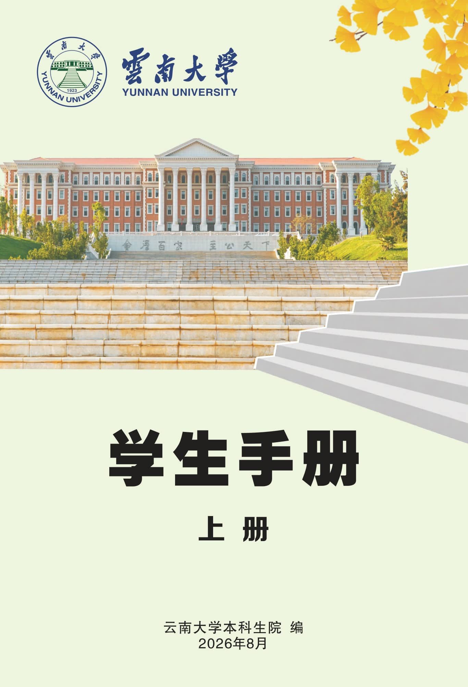
YUNNANUNIVERSITY刂目目刂囗目刂丁：学生手册云南大学本科生院编2026年8月
沩云个宗天石力行白尊致知正义
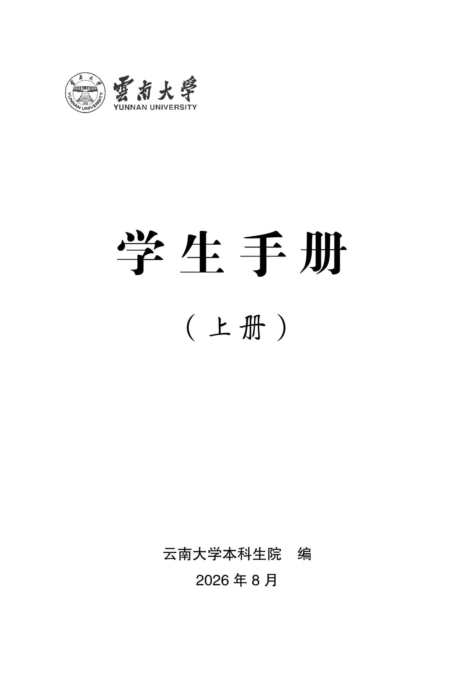
YUNNANUNIVERSITY（上册）云南大学本科生院编2026年8月

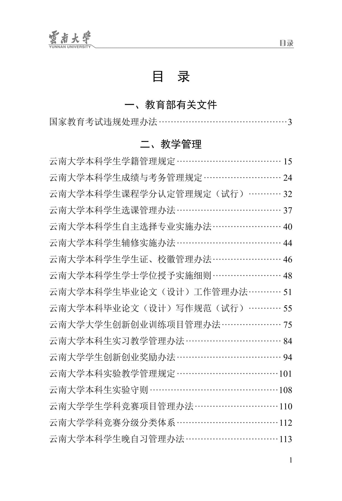
YUNNANUNIVERSITY目录教育部有关文件、国家教育考试违规处理办法．教学管理、云南大学本科学生学籍管理规定巧一云南大学本科学生成绩与考务管理规定24．一云南大学本科学生课程学分认定管理规定（试行）32一云南大学本科学生选课管理办法37、、一云南大学本科学生自主选择专业实施办法40一·云南大学本科学生辅修实施办法44一云南大学本科学生学生证校徽管理办法46、，云南大学本科学生学士学位授予实施细则48，云南大学本科学生毕业论文（设计）工作管理办法51一云南大学本科毕业论文（设计）写作规范（试行）55．．云南大学大学生创新创业训练项目管理办法．．云南大学本科生实习教学管理办法84．．一云南大学学生创新创业奖励办法94．．一云南大学本科实验教学管理规定101．云南大学本科生实验守则108云南大学学生学科竞赛项目管理办法110一，云南大学学科竞赛分级分类体系112·云南大学本科学生晚自习管理办法一1
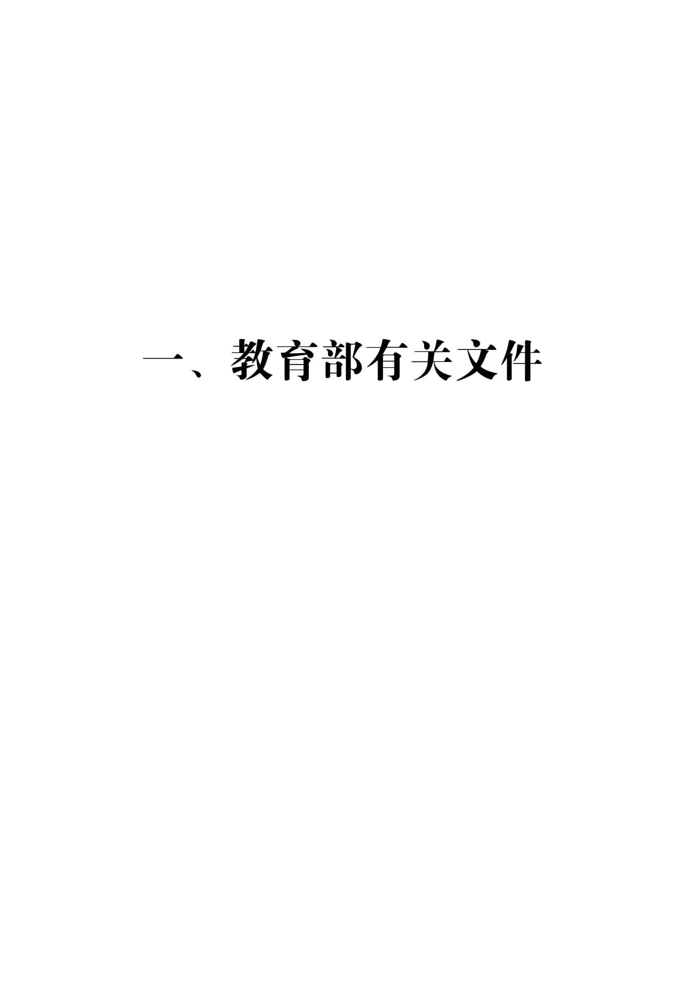
教育部有关文件、

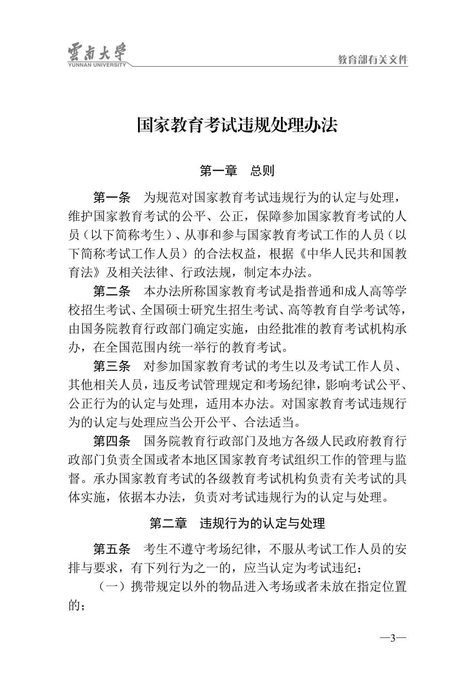
教台有关文件YUNNANUNIVERSITY国家教育考试违规处理办法第章总则一第条为规范对国家教育考试违规行为的认定与处理一，维护国家教育考试的公平公正保障参加国家教育考试的人、，员（以下简称考生）从事和参与国家教育考试工作的人员（以、下简称考试工作人员）的合法权益根据《中华人民共和国教，育法》及相关法律行政法规制定本办法、，。第二条本办法所称国家教育考试是指普通和成人高等学校招生考试全国硕士研宄生招生考试高等教育自学考试等、、，由国务院教育行政部门确定实施由经批准的教育考试机构承，办在全国范围内统举行的教育考试，一。第三条对参加国家教育考试的考生以及考试工作人员、其他相关人员违反考试管理规定和考场纪律影响考试公平，，、公正行为的认定与处理适用本办法对国家教育考试违规行，。为的认定与处理应当公开公平合法适当、。第四条国务院教育行政部门及地方各级人民政府教育行政部门负责全国或者本地区国家教育考试组织工作的管理与监督承办国家教育考试的各级教育考试机构负责有关考试的具。体实施依据本办法负责对考试违规行为的认定与处理，，。第二章违规行为的认定与处理第五条考生不遵守考场纪律不服从考试工作人员的安，排与要求有下列行为之的应当认定为考试违纪，一，：（）携带规定以外的物品进入考场或者未放在指定位置一的；
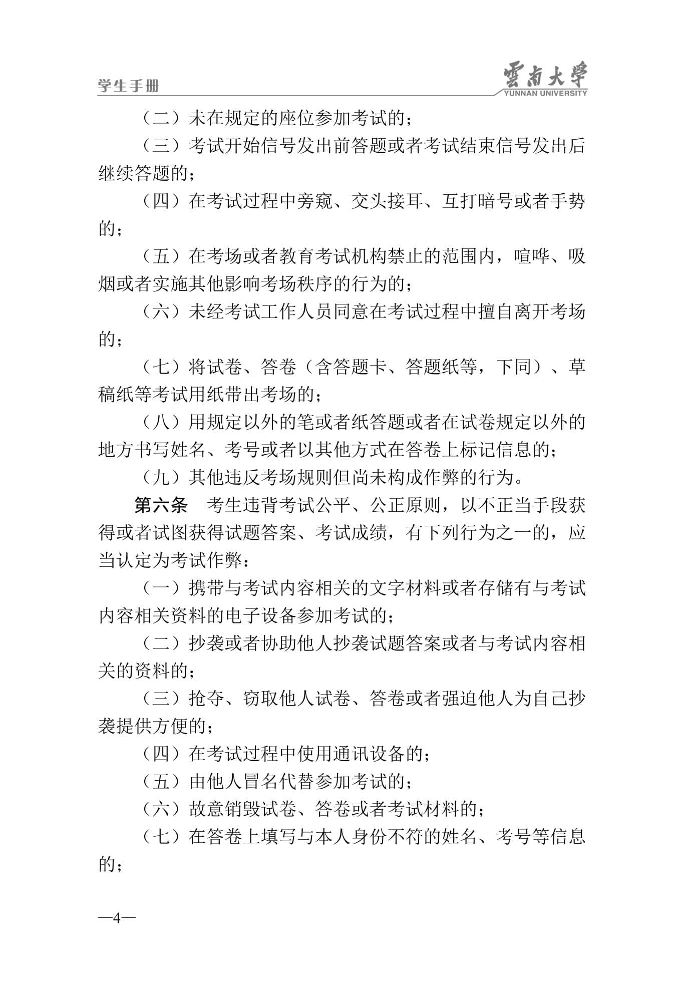
学生手册YUNNANUNIVERSITY（二）未在规定的座位参加考试的；（三）考试开始信号发出前答题或者考试结束信号发出后继续答题的；（四）在考试过程中旁窥交头接耳互打暗号或者手势、、的；（五）在考场或者教育考试机构禁止的范围内喧哗吸，、烟或者实施其他影响考场秩序的行为的；（六）未经考试工作人员同意在考试过程中擅自离开考场的；（七）将试卷答卷（含答题卡答题纸等下同）草、、，、稿纸等考试用纸带出考场的：（八）用规定以外的笔或者纸答题或者在试卷规定以外的地方书写姓名考号或者以其他方式在答卷上标记信息的、；（九）其他违反考场规则但尚未构成作弊的行为。第六条考生违背考试公平公正原则以不正当手段获、，得或者试图获得试题答案考试成绩有下列行为之的应、，一，当认定为考试作弊：（）携带与考试内容相关的文字材料或者存储有与考试一内容相关资料的电子设备参加考试的；（二）抄袭或者协助他人抄袭试题答案或者与考试内容相关的资料的；（三）抢夺窃取他人试卷答卷或者强迫他人为自己抄、、袭提供方便的；（四）在考试过程中使用通讯设备的；（五）由他人冒名代替参加考试的；（六）故意销毁试卷答卷或者考试材料的、；（七）在答卷上填写与本人身份不符的姓名考号等信息、的；
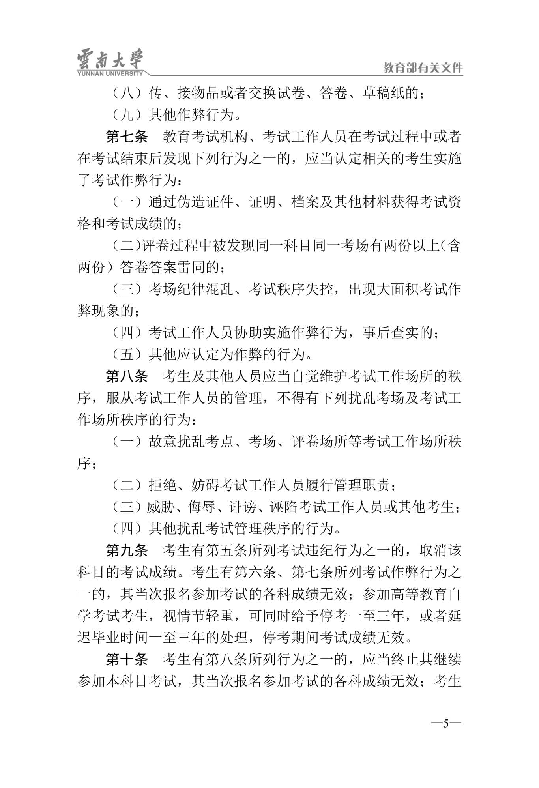
教台有关文件YUNNANUNIVERSITY（八）传接物品或者交换试卷答卷草稿纸的、、、；（九）其他作弊行为。第七条教育考试机构考试工作人员在考试过程中或者、在考试结束后发现下列行为之的应当认定相关的考生实施一，了考试作弊行为：（）通过伪造证件证明档案及其他材料获得考试资一、、格和考试成绩的；（二）评卷过程中被发现同科目同考场有两份以上（含一一两份）答卷答案雷同的；（三）考场纪律混乱考试秩序失控出现大面积考试作、，弊现象的；（四）考试工作人员协助实施作弊行为事后查实的，；（五）其他应认定为作弊的行为。第八条考生及其他人员应当自觉维护考试工作场所的秩序服从考试工作人员的管理不得有下列扰乱考场及考试工，，作场所秩序的行为：（）故意扰乱考点考场评卷场所等考试工作场所秩一、、序；（二）拒绝妨碍考试工作人员履行管理职责、；（三）威胁侮辱诽谤诬陷考试工作人员或其他考生、、、；（四）其他扰乱考试管理秩序的行为。第九条考生有第五条所列考试违纪行为之的取消该一，科目的考试成绩考生有第六条第七条所列考试作弊行为之。、的其当次报名参加考试的各科成绩无效参加高等教育自一，；学考试考生视情节轻重可同时给予停考至三年或者延，，一，迟毕业时间至三年的处理停考期间考试成绩无效一，。第十条考生有第八条所列行为之的应当终止其继续一，参加本科目考试其当次报名参加考试的各科成绩无效考生，；
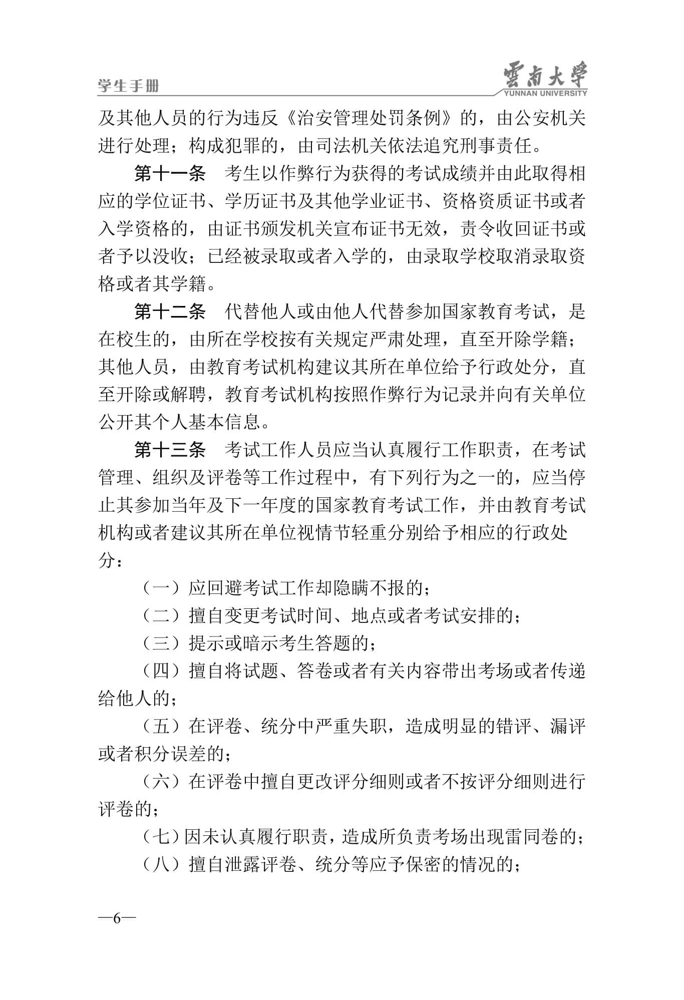
学生手册YUNNANUNIVERSITY及其他人员的行为违反《治安管理处罚条例》的由公安机关，进行处理构成犯罪的由司法机关依法追究刑事责任；，。第十条考生以作弊行为获得的考试成绩并由此取得相一应的学位证书学历证书及其他学业证书资格资质证书或者、、入学资格的由证书颁发机关宣布证书无效责令收回证书或，，者予以没收己经被录取或者入学的由录取学校取消录取资；，格或者其学籍。第十二条代替他人或由他人代替参加国家教育考试是，在校生的由所在学校按有关规定严肃处理直至开除学籍，，；其他人员由教育考试机构建议其所在单位给予行政处分直，，至开除或解聘教育考试机构按照作弊行为记录并向有关单位，公开其个人基本信息。第十三条考试工作人员应当认真履行工作职责在考试，管理组织及评卷等工作过程中有下列行为之的应当停、，一，止其参加当年及下年度的国家教育考试工作并由教育考试一，机构或者建议其所在单位视情节轻重分别给予相应的行政处分：（）应回避考试工作却隐瞒不报的一；（二）擅自变更考试时间地点或者考试安排的、；（三）提示或暗示考生答题的；（四）擅自将试题答卷或者有关内容带出考场或者传递、给他人的；（五）在评卷统分中严重失职造成明显的错评漏评、，、或者积分误差的；（六）在评卷中擅自更改评分细则或者不按评分细则进行评卷的；（七）因未认真履行职责造成所负责考场出现雷同卷的，；（八）擅自泄露评卷统分等应予保密的情况的、；
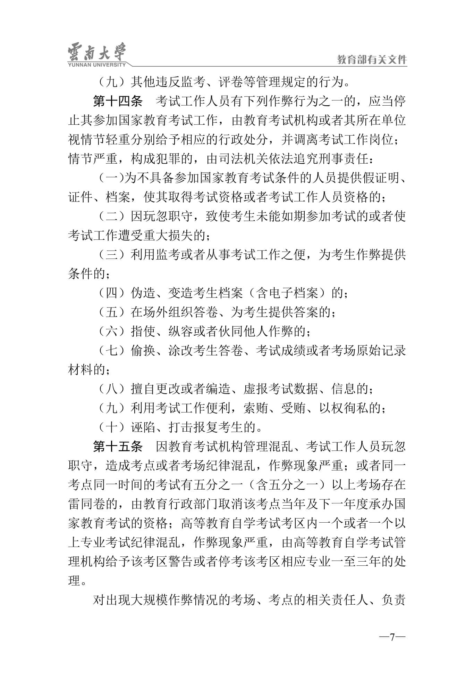
教台有关文件YUNNANUNIVERSITY（九）其他违反监考评卷等管理规定的行为、。第十四条考试工作人员有下列作弊行为之的应当停一，止其参加国家教育考试工作由教育考试机构或者其所在单位，视情节轻重分别给予相应的行政处分并调离考试工作岗位，；情节严重构成犯罪的由司法机关依法追宄刑事责任，，：（）为不具备参加国家教育考试条件的人员提供假证明一、证件档案使其取得考试资格或者考试工作人员资格的、，；（二）因玩忽职守致使考生未能如期参加考试的或者使，考试工作遭受重大损失的；（三）利用监考或者从事考试工作之便为考生作弊提供，条件的；（四）伪造变造考生档案（含电子档案）的、；（五）在场外组织答卷为考生提供答案的、：（六）指使纵容或者伙同他人作弊的、；（七）偷换涂改考生答卷考试成绩或者考场原始记录、、材料的；（八）擅自更改或者编造虚报考试数据信息的、、；（九）利用考试工作便利索贿受贿以权徇私的，、、；（十）诬陷打击报复考生的、。第十五条因教育考试机构管理混乱考试工作人员玩忽、职守造成考点或者考场纪律混乱作弊现象严重或者同，，；一考点同时间的考试有五分之（含五分之）以上考场存在一一一雷同卷的由教育行政部门取消该考点当年及下年度承办国，一家教育考试的资格高等教育自学考试考区内个或者个以；一一上专业考试纪律混乱作弊现象严重由高等教育自学考试管，，理机构给予该考区警告或者停考该考区相应专业至三年的处一理。对出现大规模作弊情况的考场考点的相关责任人负责、、
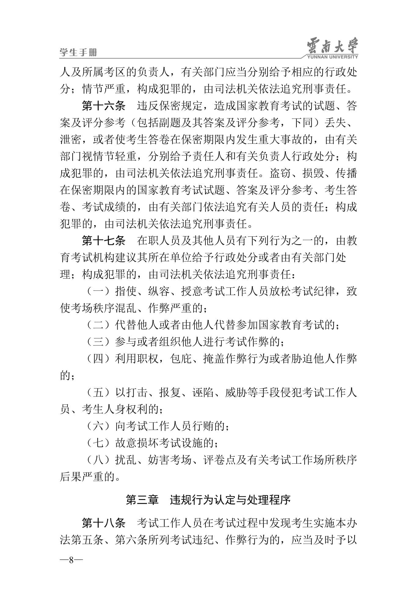
学生手册YUNNANUNIVERSITY人及所属考区的负责人有关部门应当分别给予相应的行政处，分情节严重构成犯罪的由司法机关依法追宄刑事责任；，，。第十六条违反保密规定造成国家教育考试的试题答，、案及评分参考（包括副题及其答案及评分参考下同）丢失，、泄密或者使考生答卷在保密期限内发生重大事故的由有关，，部门视情节轻重分别给予责任人和有关负责人行政处分构，；成犯罪的由司法机关依法追宄刑事责任盗窃损毁传播，。、、在保密期限内的国家教育考试试题答案及评分参考考生答、、卷考试成绩的由有关部门依法追宄有关人员的责任构成、，；犯罪的由司法机关依法追究刑事责任，。第十七条在职人员及其他人员有下列行为之的由教一，育考试机构建议其所在单位给予行政处分或者由有关部门处理构成犯罪的由司法机关依法追宄刑事责任；，：（）指使纵容授意考试工作人员放松考试纪律致一、、，使考场秩序混乱作弊严重的、；（二）代替他人或者山他人代替参加国家教育考试的；（三）参与或者组织他人进行考试作弊的；（四）利用职权包庇掩盖作弊行为或者胁迫他人作弊，、的；（五）以打击报复诬陷威胁等手段侵犯考试工作人、、、考生人身权利的贝、；（六）向考试工作人员行贿的；（七）故意损坏考试设施的：（八）扰乱妨害考场评卷点及有关考试工作场所秩序、、后果严重的。第三章违规行为认定与处理程序第十八条考试工作人员在考试过程中发现考生实施本办法第五条第六条所列考试违纪作弊行为的应当及时予以、、，
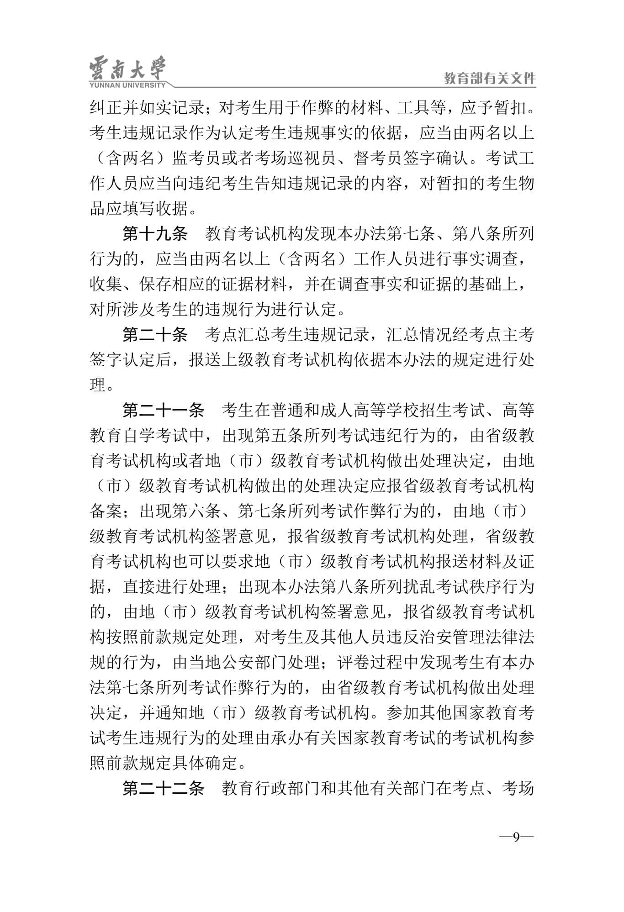
教台有关文件YUNNANUNIVERSITY纠正并如实记录对考生用于作弊的材料工具等应予暂扣；、，。考生违规记录作为认定考生违规事实的依据应当由两名以上，（含两名）监考员或者考场巡视员督考员签字确认考试工、。作人员应当向违纪考生告知违规记录的内容对暂扣的考生物，品应填写收据。第十九条教育考试机构发现本办法第七条第八条所列、行为的应当由两名以上（含两名）工作人员进行事实调查，，收集保存相应的证据材料并在调查事实和证据的基础上、，，对所涉及考生的违规行为进行认定。第二十条考点汇总考生违规记录汇总情况经考点主考，签字认定后报送上级教育考试机构依据本办法的规定进行处，理。第二十条考生在普通和成人高等学校招生考试高等一、教育自学考试中出现第五条所列考试违纪行为的由省级教，，育考试机构或者地（市）级教育考试机构做出处理决定由地，（市）级教育考试机构做出的处理决定应报省级教育考试机构备案出现第六条第七条所列考试作弊行为的由地（市）；、，级教育考试机构签署意见报省级教育考试机构处理省级教，，育考试机构也可以要求地（市）级教育考试机构报送材料及证据直接进行处理出现本办法第八条所列扰乱考试秩序行为，；的由地（市）级教育考试机构签署意见报省级教育考试机，，构按照前款规定处理对考生及其他人员违反治安管理法律法，规的行为由当地公安部门处理评卷过程中发现考生有本办，：法第七条所列考试作弊行为的由省级教育考试机构做出处理，决定并通知地（市）级教育考试机构参加其他国家教育考，。试考生违规行为的处理由承办有关国家教育考试的考试机构参照前款规定具体确定。第二十二条教育行政部门和其他有关部门在考点考场、
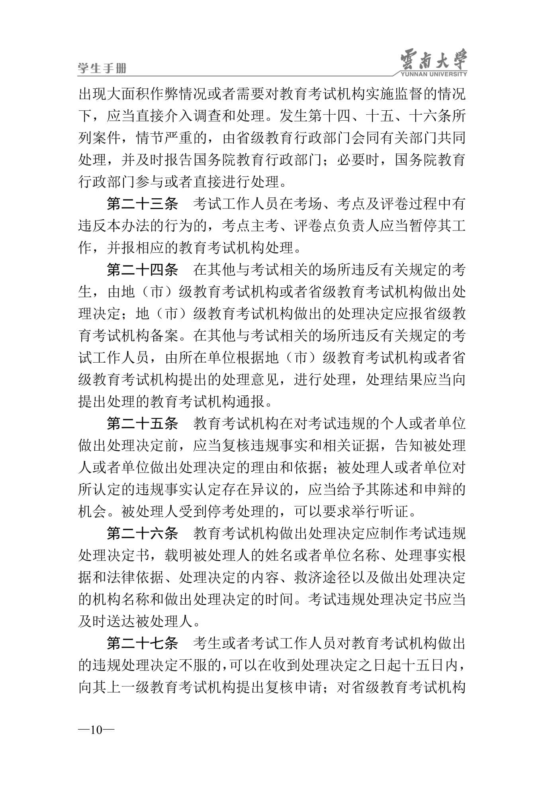
学生手册YUNNANUNIVERSITY出现大面积作弊情况或者需要对教育考试机构实施监督的情况下应当直接介入调查和处理发生第十四十五十六条所，。、、列案件情节严重的由省级教育行政部门会同有关部门共同，，处理并及时报告国务院教育行政部门必要时国务院教育，；，行政部门参与或者直接进行处理。第二十三条考试工作人员在考场考点及评卷过程中有、违反本办法的行为的考点主考评卷点负责人应当暂停其工，、作并报相应的教育考试机构处理，。第二十四条在其他与考试相关的场所违反有关规定的考生由地（市）级教育考试机构或者省级教育考试机构做出处，理决定地（市）级教育考试机构做出的处理决定应报省级教；育考试机构备案在其他与考试相关的场所违反有关规定的考。试工作人员由所在单位根据地（市）级教育考试机构或者省，级教育考试机构提出的处理意见进行处理处理结果应当向，，提出处理的教育考试机构通报。第二十五条教育考试机构在对考试违规的个人或者单位做出处理决定前应当复核违规事实和相关证据告知被处理，，人或者单位做出处理决定的理由和依据被处理人或者单位对；所认定的违规事实认定存在异议的应当给予其陈述和申辩的，机会被处理人受到停考处理的可以要求举行听证。，。第二十六条教育考试机构做出处理决定应制作考试违规处理决定书载明被处理人的姓名或者单位名称处理事实根，、据和法律依据处理决定的内容救济途径以及做出处理决定、、的机构名称和做出处理决定的时间考试违规处理决定书应当。及时送达被处理人。第二十七条考生或者考试工作人员对教育考试机构做出的违规处理决定不服的可以在收到处理决定之日起十五日内，，向其上级教育考试机构提出复核申请对省级教育考试机构一；一10一
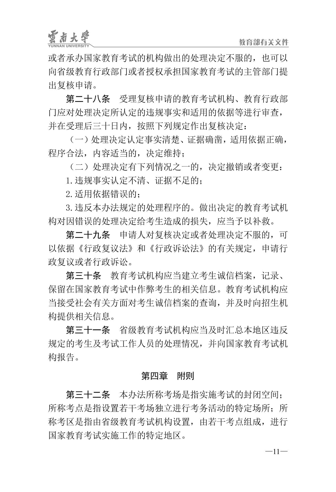
教台有关文件YUNNANUNIVERSITY或者承办国家教育考试的机构做出的处理决定不服的也可以，向省级教育行政部门或者授权承担国家教育考试的主管部门提出复核申请。第二十八条受理复核申请的教育考试机构教育行政部、门应对处理决定所认定的违规事实和适用的依据等进行审查，并在受理后三十日内按照下列规定作出复核决定，：（）处理决定认定事实清楚证据确凿适用依据正确一、，，程序合法内容适当的决定维持，，；（二）处理决定有下列情况之的决定撤销或者变更一，：违规事实认定不清证据不足的、；2适用依据错误的．；3违反本办法规定的处理程序的做出决定的教育考试机，。构对因错误的处理决定给考生造成的损失应当予以补救，。第二十九条申请人对复核决定或者处理决定不服的可，以依据《行政复议法》和《行政诉讼法》的有关规定申请行，政复议或者行政诉讼。第三十条教育考试机构应当建立考生诚信档案记录，、保留在国家教育考试中作弊考生的相关信息教育考试机构应。当接受社会有关方面对考生诚信档案的查询并及时向招生机，构提供相关信息。第三十条省级教育考试机构应当及时汇总本地区违反一规定的考生及考试工作人员的处理情况并向国家教育考试机，构报告第四章附则第三十二条本办法所称考场是指实施考试的封闭空间；所称考点是指设置若干考场独立进行考务活动的特定场所所；称考区是指由省级教育考试机构设置由若干考点组成进行，，国家教育考试实施工作的特定地区。
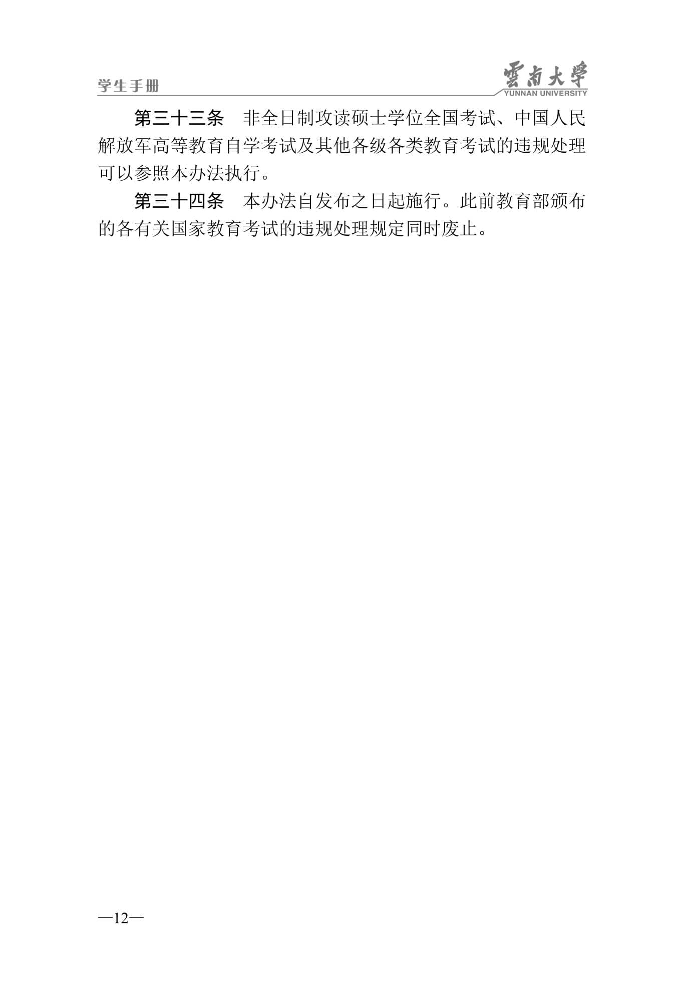
学生手册YUNNANUNIVERSITY第三十三条非全日制攻读硕士学位全国考试中国人民、解放军高等教育自学考试及其他各级各类教育考试的违规处理可以参照本办法执行。第三十四条本办法自发布之日起施行此前教育部颁布。的各有关国家教育考试的违规处理规定同时废止。一12一
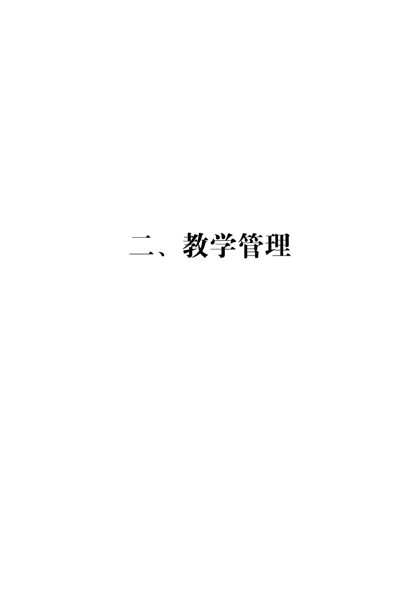
教学管理、
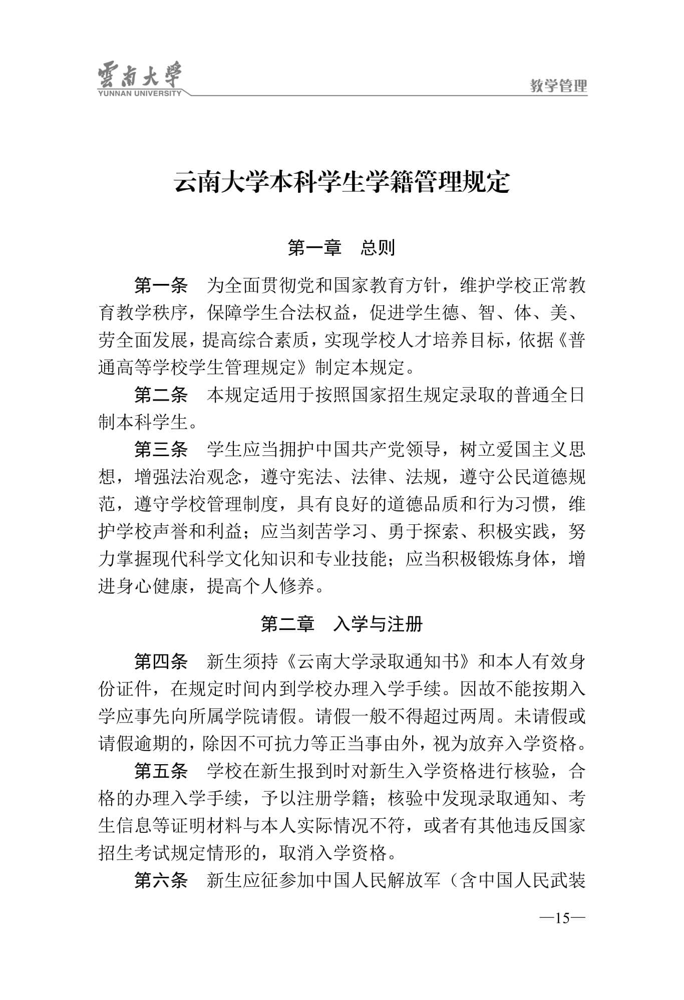
教学管理YUNNANUNIVERSITY云南大学本科学生学籍管理规定第章总则一第条为全面贯彻党和国家教育方针维护学校正常教一，育教学秩序保障学生合法权益促进学生德智体美，，、、、、劳全面发展提高综合素质实现学校人才培养目标依据《普，，，通高等学校学生管理规定》制定本规定。第二条本规定适用于按照国家招生规定录取的普通全日制本科学生。第三条学生应当拥护中国共产党领导树立爱国主义思，想增强法治观念遵守宪法法律法规遵守公民道德规，，、、，范遵守学校管理制度具有良好的道德品质和行为习惯维，，，护学校声誉和利益应当刻苦学习勇于探索积极实践努；、、，力掌握现代科学文化知识和专业技能应当积极锻炼身体增；，进身心健康提高个人修养，。第二章入学与注册第四条新生须持《云南大学录取通知书》和本人有效身份证件在规定时间内到学校办理入学手续因故不能按期入，。学应事先向所属学院请假请假般不得超过两周未请假或。一。请假逾期的除因不可抗力等正当事由外视为放弃入学资格，，。第五条学校在新生报到时对新生入学资格进行核验合，格的办理入学手续予以注册学籍核验中发现录取通知考，；、生信息等证明材料与本人实际情况不符或者有其他违反国家，招生考试规定情形的取消入学资格，。第六条新生应征参加中国人民解放军（含中国人民武装一巧一
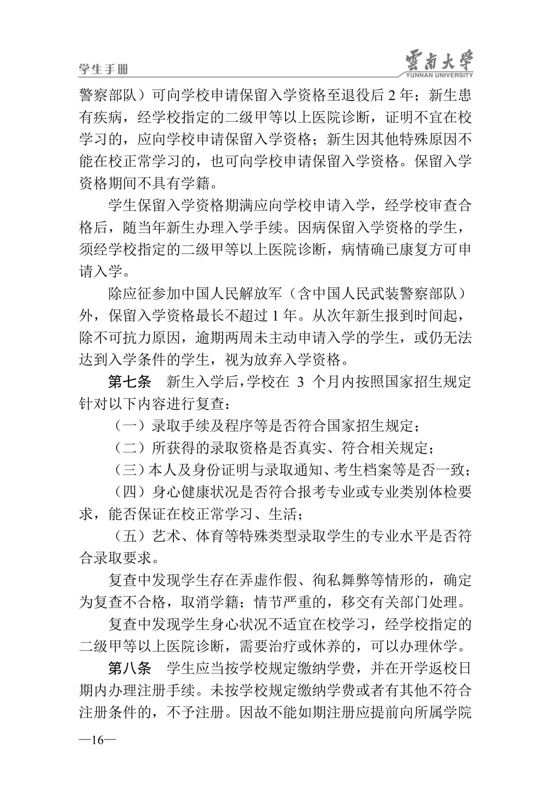
学生手册YUNNANUNIVERSITY警察部队）可向学校申请保留入学资格至退役后2年新生患；有疾病经学校指定的二级甲等以上医院诊断证明不宜在校，，学习的应向学校申请保留入学资格新生因其他特殊原因不，；能在校正常学习的也可向学校申请保留入学资格保留入学，。资格期间不具有学籍。学生保留入学资格期满应向学校申请入学经学校审查合，格后随当年新生办理入学手续因病保留入学资格的学生，。，须经学校指定的二级甲等以上医院诊断病情确己康复方可申，讠青丿《学：。除应征参加中国人民解放军（含中国人民武装警察部队）外保留入学资格最长不超过1年从次年新生报到时间起，。，除不可抗力原因逾期两周未主动申请入学的学生或仍无法，，达到入学条件的学生视为放弃入学资格，。第七条新生入学后学校在3个月内按照国家招生规定，针对以下内容进行复查：（）录取手续及程序等是否符合国家招生规定一；（二）所获得的录取资格是否真实符合相关规定、；（三）本人及身份证明与录取通知考生档案等是否致、一；（四）身心健康状况是否符合报考专业或专业类别体检要求能否保证在校正常学习生活，、；（五）艺术体育等特殊类型录取学生的专业水平是否符、合录取要求。复查中发现学生存在弄虚作假徇私舞弊等情形的确定、，为复查不合格取消学籍情节严重的移交有关部门处理，；，。复查中发现学生身心状况不适宜在校学习经学校指定的，二级甲等以上医院诊断需要治疗或休养的可以办理休学，，。第八条学生应当按学校规定缴纳学费并在开学返校日，期内办理注册手续未按学校规定缴纳学费或者有其他不符合。注册条件的不予注册因故不能如期注册应提前向所属学院，。一16一
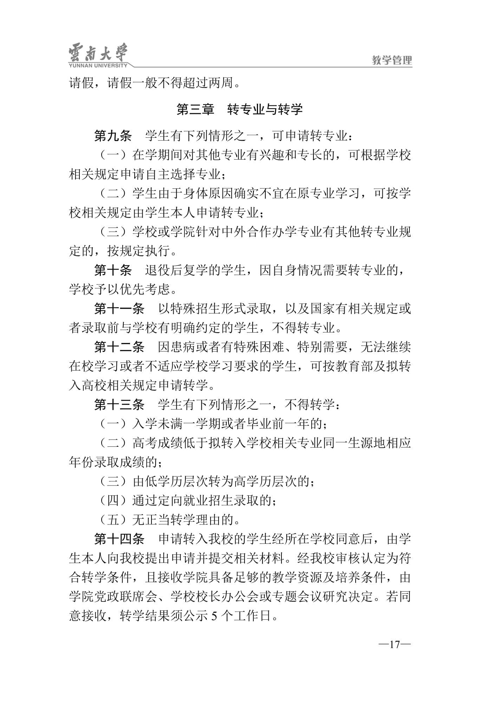
教学管理YUNNANUNIVERSITY请假请假般不得超过两周，一。第三章转专业与转学第九条学生有下列情形之可申请转专业一，：（）在学期间对其他专业有兴趣和专长的可根据学校一，相关规定申请自主选择专业；（二）学生由于身体原因确实不宜在原专业学习可按学，校相关规定由学生本人申请转专业；（三）学校或学院针对中外合作办学专业有其他转专业规定的按规定执行，。第十条退役后复学的学生因自身情况需要转专业的，，学校予以优先考虑。第十条以特殊招生形式录取以及国家有相关规定或一，者录取前与学校有明确约定的学生不得转专业，。第十二条因患病或者有特殊困难特别需要无法继续、，在校学习或者不适应学校学习要求的学生可按教育部及拟转，入高校相关规定申请转学。第十三条学生有下列情形之不得转学一，：（）入学未满学期或者毕业前年的一一一；（二）高考成绩低于拟转入学校相关专业同生源地相应一年份录取成绩的；（三）由低学历层次转为高学历层次的；（四）通过定向就业招生录取的；（五）无正当转学理由的。第十四条申请转入我校的学生经所在学校同意后由学，生本人向我校提出申请并提交相关材料经我校审核认定为符。合转学条件且接收学院具备足够的教学资源及培养条件由，，学院党政联席会学校校长办公会或专题会议研宄决定若同、。意接收转学结果须公示5个工作日，。一17一
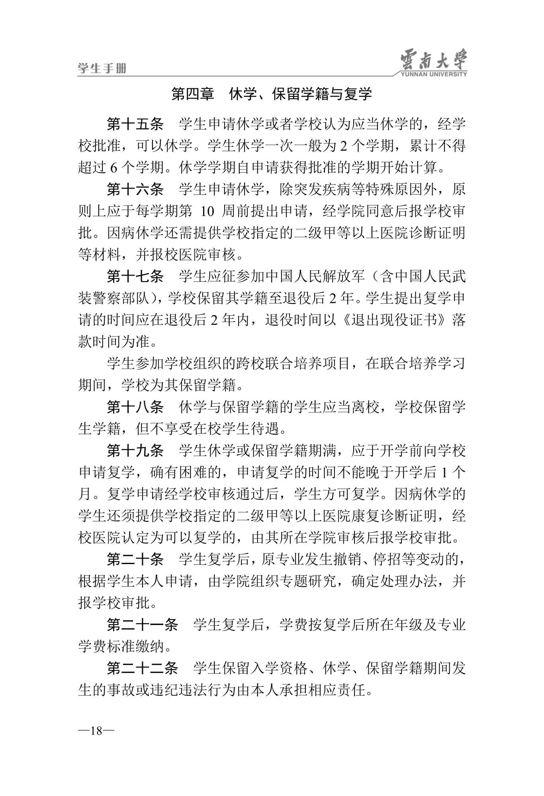
学生手册YUNNANUNIVERSITY第四章休学保留学籍与复学、第十五条学生申请休学或者学校认为应当休学的经学，校批准可以休学学生休学次般为2个学期累计不得，。一一，超过6个学期休学学期自申请获得批准的学期开始计算。。第十六条学生申请休学除突发疾病等特殊原因外原，，则上应于每学期第10周前提出申请经学院同意后报学校审，批因病休学还需提供学校指定的二级甲等以上医院诊断证明。等材料并报校医院审核，。第十七条学生应征参加中国人民解放军（含中国人民武装警察部队）学校保留其学籍至退役后2年学生提出复学申，。请的时间应在退役后2年内退役时间以《退出现役证书》落，款时间为准。学生参加学校组织的跨校联合培养项目在联合培养学习，期间学校为其保留学籍，。第十八条休学与保留学籍的学生应当离校学校保留学，生学籍但不享受在校学生待遇，。第十九条学生休学或保留学籍期满应于开学前向学校，申请复学确有困难的申请复学的时间不能晚于开学后1个，，月复学申请经学校审核通过后学生方可复学因病休学的。，。学生还须提供学校指定的二级甲等以上医院康复诊断证明经，校医院认定为可以复学的由其所在学院审核后报学校审批，。第二十条学生复学后原专业发生撤销停招等变动的，、，根据学生本人申请由学院组织专题研究确定处理办法并，，，报学校审批。第二十条学生复学后学费按复学后所在年级及专业一，学费标准缴纳。第二十二条学生保留入学资格休学保留学籍期间发、、生的事故或违纪违法行为由本人承担相应责任。一18一
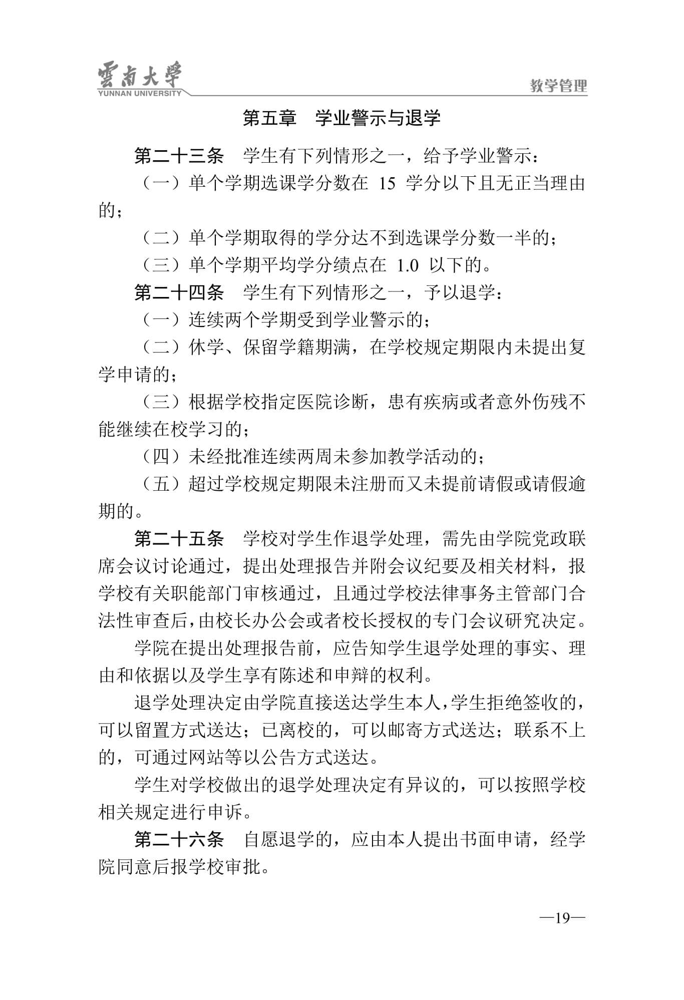
教学管理YUNNANUNIVERSITY第五章学业警示与退学第二十三条学生有下列情形之给予学业警示一，：（）单个学期选课学分数在巧学分以下且无正当理由一的；（二）单个学期取得的学分达不到选课学分数半的一；（三）单个学期平均学分绩点在1.0以下的。第二十四条学生有下列情形之予以退学一，，（）连续两个学期受到学业警示的一；（二）休学保留学籍期满在学校规定期限内未提出复、，学申请的；（三）根据学校指定医院诊断患有疾病或者意外伤残不，能继续在校学习的；（四）未经批准连续两周未参加教学活动的；（五）超过学校规定期限未注册而又未提前请假或请假逾期的。第二十五条学校对学生作退学处理需先由学院党政联，席会议讨论通过提出处理报告并附会议纪要及相关材料报，，学校有关职能部门审核通过且通过学校法律事务主管部门合，法性审查后由校长办公会或者校长授权的专门会议研宄决定，。学院在提出处理报告前应告知学生退学处理的事实理，、由和依据以及学生享有陈述和申辩的权利。退学处理决定由学院直接送达学生本人学生拒绝签收的，，可以留置方式送达己离校的可以邮寄方式送达联系不上；，；的可通过网站等以公告方式送达，。学生对学校做出的退学处理决定有异议的可以按照学校，相关规定进行申诉。第二十六条自愿退学的应由本人提出书面申请经学，，院同意后报学校审批。一19一
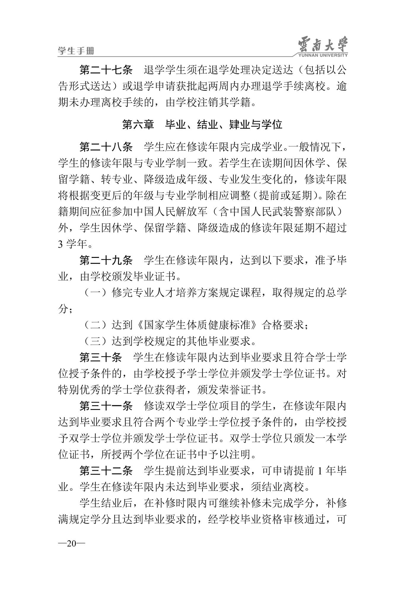
学生手册YUNNANUNIVERSITY第二十七条退学学生须在退学处理决定送达（包括以公告形式送达）或退学申请获批起两周内办理退学手续离校逾。期未办理离校手续的由学校注销其学籍，。第六章毕业结业肄业与学位、、第二十八条学生应在修读年限内完成学业般情况下。一，学生的修读年限与专业学制致若学生在读期间因休学保一。、留学籍转专业降级造成年级专业发生变化的修读年限、、、，将根据变更后的年级与专业学制相应调整（提前或延期）除在。籍期间应征参加中国人民解放军（含中国人民武装警察部队）外学生因休学保留学籍降级造成的修读年限延期不超过，、、3学年。第二十九条学生在修读年限内达到以下要求准予毕，，业由学校颁发毕业证书，。（）修完专业人才培养方案规定课程取得规定的总学一，分；（二）达到《国家学生体质健康标准》合格要求；（三）达到学校规定的其他毕业要求。第三十条学生在修读年限内达到毕业要求且符合学士学位授予条件的由学校授予学士学位并颁发学士学位证书对，。特别优秀的学士学位获得者颁发荣誉证书，。第三十条修读双学士学位项目的学生在修读年限内一，达到毕业要求且符合两个专业学士学位授予条件的山学校授，予双学士学位并颁发学士学位证书双学士学位只颁发本学。一位证书所授两个学位在证书中予以注明，。第三十二条学生提前达到毕业要求可申请提前1年毕，业学生在修读年限内未达到毕业要求须结业离校。，。学生结业后在补修时限内可继续补修未完成学分补修，，满规定学分且达到毕业要求的经学校毕业资格审核通过可，，一20一
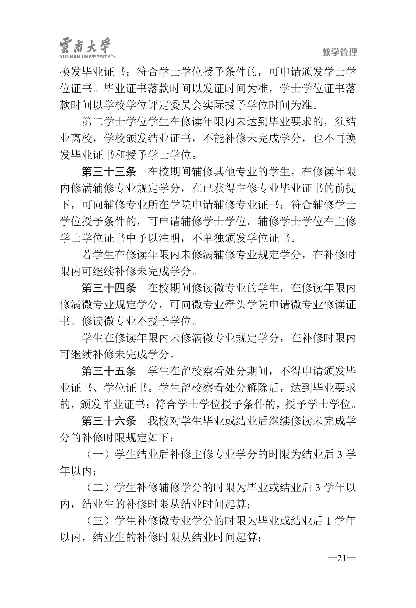
教学管理YUNNANUNIVERSITY换发毕业证书符合学士学位授予条件的可申请颁发学士学；，位证书毕业证书落款时间以发证时间为准学士学位证书落。，款时间以学校学位评定委员会实际授予学位时间为准。第二学士学位学生在修读年限内未达到毕业要求的须结，业离校学校颁发结业证书不能补修未完成学分也不再换，，，发毕业证书和授予学士学位。第三十三条在校期间辅修其他专业的学生在修读年限，内修满辅修专业规定学分在己获得主修专业毕业证书的前提，下可向辅修专业所在学院申请辅修专业证书符合辅修学士，；学位授予条件的可申请辅修学士学位辅修学士学位在主修，。学士学位证书中予以注明不单独颁发学位证书，。若学生在修读年限内未修满辅修专业规定学分在补修时，限内可继续补修未完成学分。第三十四条在校期间修读微专业的学生在修读年限内，修满微专业规定学分可向微专业牵头学院申请微专业修读证，书修读微专业不授予学位。。学生在修读年限内未修满微专业规定学分在补修时限内，可继续补修未完成学分。第三十五条学生在留校察看处分期间不得申请颁发毕，业证书学位证书学生留校察看处分解除后达到毕业要求、。，的颁发毕业证书符合学士学位授予条件的授予学士学位，；，。第三十六条我校对学生毕业或结业后继续修读未完成学分的补修时限规定如下：（）学生结业后补修主修专业学分的时限为结业后3学一年以内；（二）学生补修辅修学分的时限为毕业或结业后3学年以内结业生的补修时限从结业时间起算，；（三）学生补修微专业学分的时限为毕业或结业后1学年以内结业生的补修时限从结业时间起算，；一21一
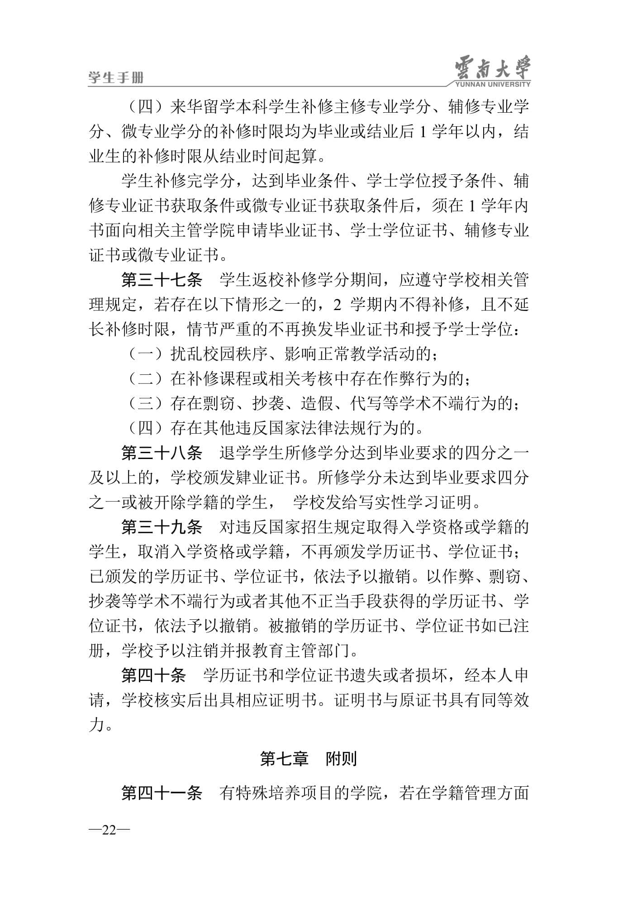
学生手册YUNNANUNIVERSITY（四）来华留学本科学生补修主修专业学分辅修专业学、分微专业学分的补修时限均为毕业或结业后1学年以内结、，业生的补修时限从结业时间起算。学生补修完学分达到毕业条件学士学位授予条件辅，、、修专业证书获取条件或微专业证书获取条件后须在1学年内，书面向相关主管学院申请毕业证书学士学位证书辅修专业、、证书或微专业证书。第三十七条学生返校补修学分期间应遵守学校相关管，理规定若存在以下情形之的2学期内不得补修且不延，一，，长补修时限情节严重的不再换发毕业证书和授予学士学位，：（）扰乱校园秩序影响正常教学活动的一、；（二）在补修课程或相关考核中存在作弊行为的；（三）存在剽窃抄袭造假代写等学术不端行为的、、、；（四）存在其他违反国家法律法规行为的。第三十八条退学学生所修学分达到毕业要求的四分之一及以上的学校颁发肄业证书所修学分未达到毕业要求四分，。之或被开除学籍的学生学校发给写实性学习证明一，。第三十九条对违反国家招生规定取得入学资格或学籍的学生取消入学资格或学籍不再颁发学历证书学位证书，，、；己颁发的学历证书学位证书依法予以撤销以作弊剽窃、，。、、抄袭等学术不端行为或者其他不正当手段获得的学历证书学、位证书依法予以撤销被撤销的学历证书学位证书如己注，。、册学校予以注销并报教育主管部门，。第四十条学历证书和学位证书遗失或者损坏经本人申，请学校核实后出具相应证明书证明书与原证书具有同等效，。力。第七章附则第四十条有特殊培养项目的学院若在学籍管理方面一，一22一
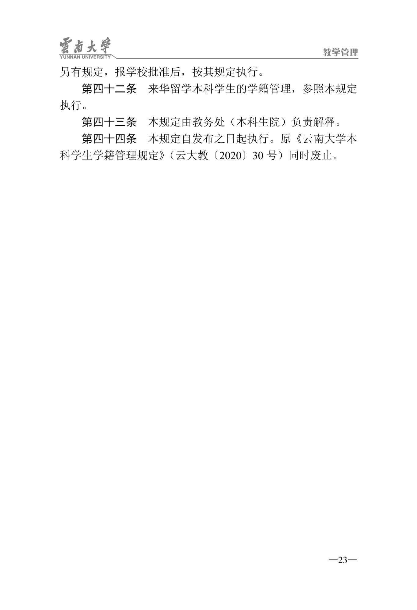
教学管理YUNNANUNIVERSITY另有规定报学校批准后按其规定执行，，。第四十二条来华留学本科学生的学籍管理参照本规定，执行第四十三条本规定由教务处（本科生院）负责解释。第四十四条本规定自发布之日起执行原《云南大学本。科学生学籍管理规定》（云大教〔2020〕30号）同时废止。一23一
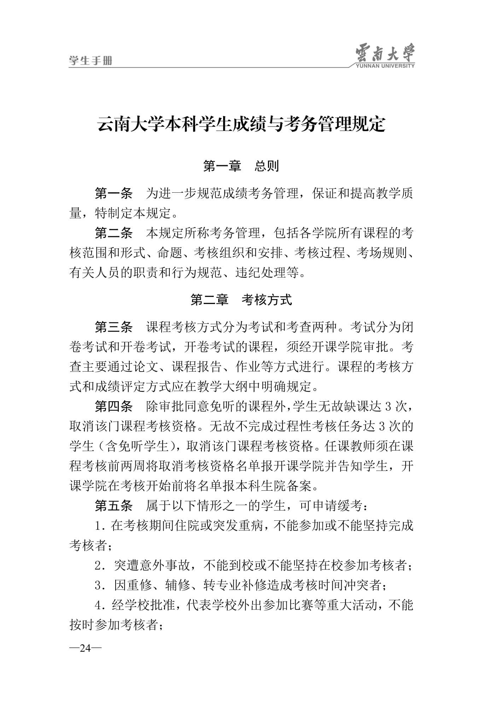
学生手册YUNNANUNIVERSITY云南大学本科学生成绩与考务管理规定第章总则一第条为进步规范成绩考务管理保证和提高教学质一一，量特制定本规定，。第二条本规定所称考务管理包括各学院所有课程的考，核范围和形式命题考核组织和安排考核过程考场规则、、、、、有关人员的职责和行为规范违纪处理等、。第二章考核方式第三条课程考核方式分为考试和考查两种考试分为闭。卷考试和开卷考试开卷考试的课程须经开课学院审批考，，。查主要通过论文课程报告作业等方式进行课程的考核方、、。式和成绩评定方式应在教学大纲中明确规定。第四条除审批同意免听的课程外学生无故缺课达3次，，取消该门课程考核资格无故不完成过程性考核任务达3次的。学生（含免听学生）取消该门课程考核资格任课教师须在课，。程考核前两周将取消考核资格名单报开课学院并告知学生开，课学院在考核开始前将名单报本科生院备案。第五条属于以下情形之的学生可申请缓考一，：1.在考核期间住院或突发重病不能参加或不能坚持完成，考核者；2突遭意外事故不能到校或不能坚持在校参加考核者，，；3因重修辅修转专业补修造成考核时间冲突者，、、；4经学校批准代表学校外出参加比赛等重大活动不能，，，按时参加考核者：一24一
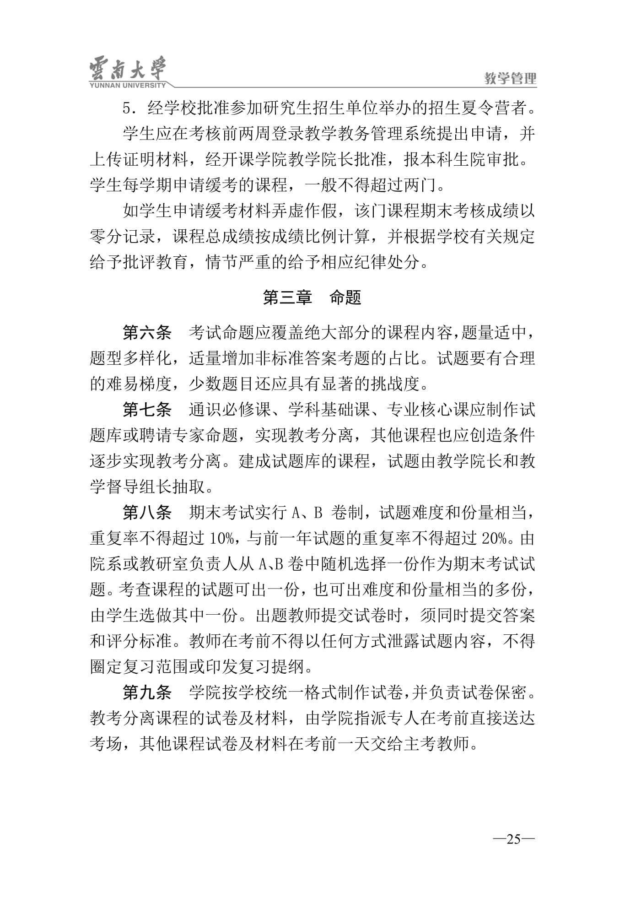
教学管理YUNNANUNIVERSITY5经学校批准参加研究生招生单位举办的招生夏令营者．。学生应在考核前两周登录教学教务管理系统提出申请并，上传证明材料经开课学院教学院长批准报本科生院审批，，。学生每学期申请缓考的课程般不得超过两门，一。如学生申请缓考材料弄虚作假该门课程期末考核成绩以，零分记录课程总成绩按成绩比例计算并根据学校有关规定，，给予批评教育情节严重的给予相应纪律处分，。第三章命题第六条考试命题应覆盖绝大部分的课程内容题量适中，，题型多样化适量增加非标准答案考题的占比试题要有合理，。的难易梯度少数题目还应具有显著的挑战度，。第七条通识必修课学科基础课专业核心课应制作试、、题库或聘请专家命题实现教考分离其他课程也应创造条件，，逐步实现教考分离建成试题库的课程试题由教学院长和教。，学督导组长抽取。第八条期末考试实行AB卷制试题难度和份量相当、，，重复率不得超过10％与前年试题的重复率不得超过20％由，一。院系或教研室负责人从AB卷中随机选择份作为期末考试试、一题考查课程的试题可出份也可出难度和份量相当的多份。一，，由学生选做其中份出题教师提交试卷时须同时提交答案一。，和评分标准教师在考前不得以任何方式泄露试题内容不得。，圈定复习范围或印发复习提纲。第九条学院按学校统格式制作试卷并负责试卷保密一，。教考分离课程的试卷及材料由学院指派专人在考前直接送达，考场其他课程试卷及材料在考前天交给主考教师，一。一25一
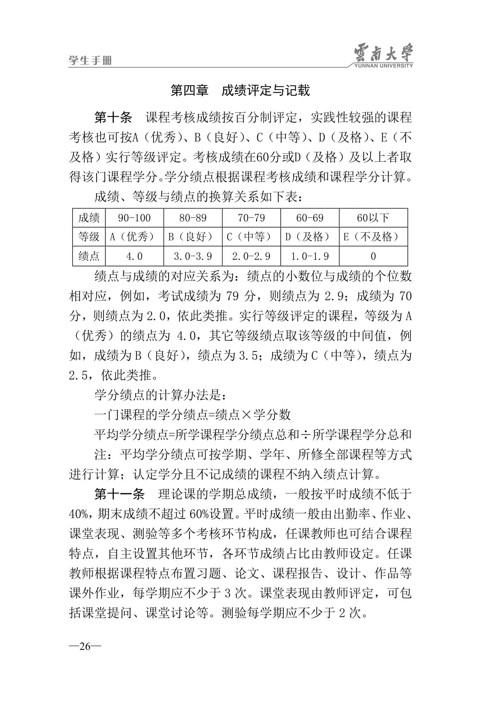
学生手册YUNNANUNIVERSITY第四章成绩评定与记载第十条课程考核成绩按百分制评定实践性较强的课程，考核也可按A（优秀）B（良好）c（中等）D（及格）E（不、、、、及格）实行等级评定考核成绩在60分或D（及格）及以上者取。得该门课程学分学分绩点根据课程考核成绩和课程学分计算。。成绩等级与绩点的换算关系如下表、：成绩9010080897079606960以下一一一一等级A（优秀）B（良好）c（中等）D（及格）E（不及格）绩点30392029l.0—1.90，一．，一，绩点与成绩的对应关系为绩点的小数位与成绩的个位数：相对应例如考试成绩为79分则绩点为29成绩为70，，，．；分则绩点为20依此类推实行等级评定的课程等级为A，．，。，（优秀）的绩点为40其它等级绩点取该等级的中间值例．，，如成绩为B（良好）绩点为35成绩为c（中等）绩点为，，．；，25依此类推．，。学分绩点的计算办法是：门课程的学分绩点绩点×学分数一：平均学分绩点所学课程学分绩点总和÷所学课程学分总和：注平均学分绩点可按学期学年所修全部课程等方式：、、进行计算认定学分且不记成绩的课程不纳入绩点计算；。第十条理论课的学期总成绩般按平时成绩不低于一，一40％期末成绩不超过60％设置平时成绩般由出勤率作业，。一、、课堂表现测验等多个考核环节构成任课教师也可结合课程、，特点自主设置其他环节各环节成绩占比由教师设定任课，，。教师根据课程特点布置习题论文课程报告设计作品等、、、、课外作业每学期应不少于3次课堂表现由教师评定可包，。，括课堂提问课堂讨论等测验每学期应不少于2次、。。一26一
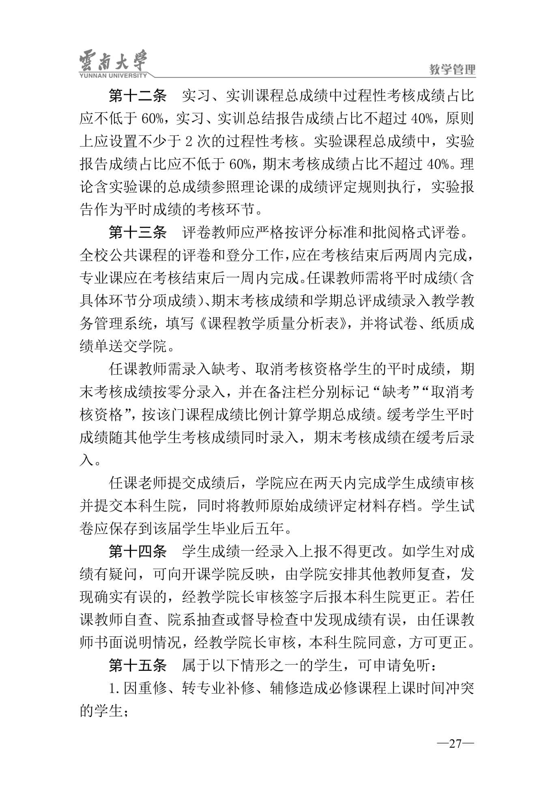
教学管理YUNNANUNIVERSITY第十二条实习实训课程总成绩中过程性考核成绩占比、应不低于60％实习实训总结报告成绩占比不超过40％原则，、，上应设置不少于2次的过程性考核实验课程总成绩中实验。，报告成绩占比应不低于60％期末考核成绩占比不超过40％理，。论含实验课的总成绩参照理论课的成绩评定规则执行实验报，告作为平时成绩的考核环节。第十三条评卷教师应严格按评分标准和批阅格式评卷。全校公共课程的评卷和登分工作应在考核结束后两周内完成，，专业课应在考核结束后周内完成任课教师需将平时成绩（含一。具体环节分项成绩）期末考核成绩和学期总评成绩录入教学教、务管理系统填写《课程教学质量分析表》并将试卷纸质成，，、绩单送交学院。任课教师需录入缺考取消考核资格学生的平时成绩期、，末考核成绩按零分录入并在备注栏分别标记“缺考”“取消考，核资格”按该门课程成绩比例计算学期总成绩缓考学生平时，。成绩随其他学生考核成绩同时录入期末考核成绩在缓考后录，入。任课老师提交成绩后学院应在两天内完成学生成绩审核，并提交本科生院同时将教师原始成绩评定材料存档学生试，。卷应保存到该届学生毕业后五年。第十四条学生成绩经录入上报不得更改如学生对成一。绩有疑问可向开课学院反映由学院安排其他教师复查发，，，现确实有误的经教学院长审核签字后报本科生院更正若任，。课教师自查院系抽查或督导检查中发现成绩有误山任课教、，师书面说明情况经教学院长审核本科生院同意方可更正，，，。第十五条属于以下情形之的学生可申请免听一，：1.因重修转专业补修辅修造成必修课程上课时间冲突、、的学生；一27一
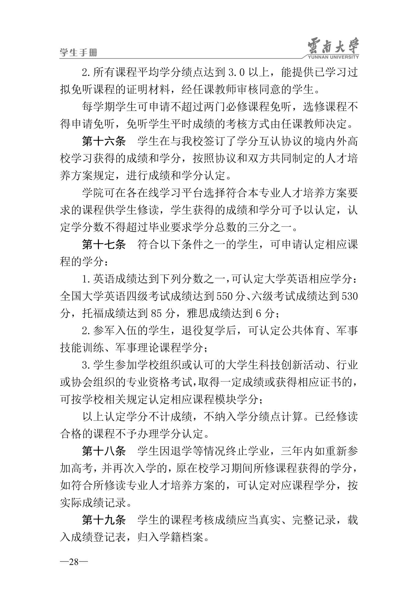
学生手册YUNNANUNIVERSITY2所有课程平均学分绩点达到30以上能提供己学习过．．，拟免听课程的证明材料经任课教师审核同意的学生，。每学期学生可申请不超过两门必修课程免听选修课程不，得申请免听免听学生平时成绩的考核方式由任课教师决定，。第十六条学生在与我校签订了学分互认协议的境内外高校学习获得的成绩和学分按照协议和双方共同制定的人才培，养方案规定进行成绩和学分认定，。学院可在各在线学习平台选择符合本专业人才培养方案要求的课程供学生修读学生获得的成绩和学分可予以认定认，，定学分数不得超过毕业要求学分总数的三分之一第十七条符合以下条件之的学生可申请认定相应课一，程的学分：1.英语成绩达到下列分数之可认定大学英语相应学分一，：全国大学英语四级考试成绩达到550分六级考试成绩达到530、分托福成绩达到85分雅思成绩达到6分，，：2参军入伍的学生退役复学后可认定公共体育军事·，，、技能训练军事理论课程学分、；3学生参加学校组织或认可的大学生科技创新活动行业，、或协会组织的专业资格考试取得定成绩或获得相应证书的，一，可按学校相关规定认定相应课程模块学分；以上认定学分不计成绩不纳入学分绩点计算己经修读，。合格的课程不予办理学分认定。第十八条学生因退学等'青况终止学业三年内如重新参，加高考并再次入学的原在校学习期间所修课程获得的学分，，，如符合所修读专业人才培养方案的可认定对应课程学分按，，实际成绩记录。第十九条学生的课程考核成绩应当真实完整记录载、，入成绩登记表归入学籍档案，。一28一
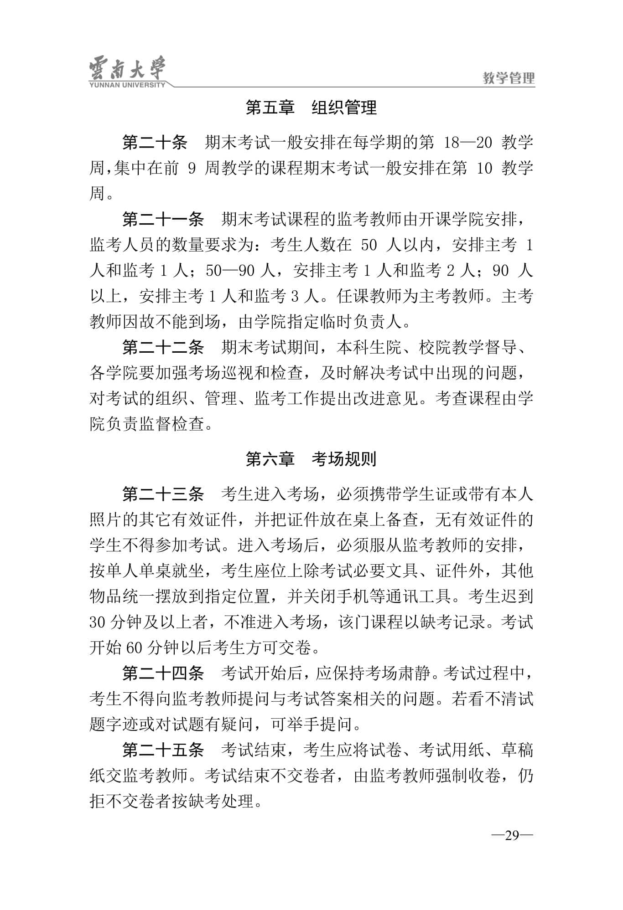
教学管理YUNNANUNIVERSITY第五章组织管理第二十条期末考试般安排在每学期的第1820教学一一周集中在前9周教学的课程期末考试般安排在第10教学，一周。第二十条期末考试课程的监考教师由开课学院安排一，监考人员的数量要求为考生人数在50人以内安排主考1：，人和监考1人5090人安排主考1人和监考2人90人；一，；以上安排主考1人和监考3人任课教师为主考教师主考，。。教师因故不能到场由学院指定临时负责人，。第二十二条期末考试期间本科生院校院教学督导，、、各学院要加强考场巡视和检查及时解决考试中出现的问题，，对考试的组织管理监考工作提出改进意见考查课程由学、、。院负责监督检查。第六章考场规则第二十三条考生进入考场必须携带学生证或带有本人，照片的其它有效证件并把证件放在桌上备查无有效证件的，，学生不得参加考试进入考场后必须服从监考教师的安排。，，按单人单桌就坐考生座位上除考试必要文具证件外其他，、，物品统摆放到指定位置并关闭手机等通讯工具考生迟到一，。30分钟及以上者不准进入考场该门课程以缺考记录考试，，。开始60分钟以后考生方可交卷。第二十四条考试开始后应保持考场肃静考试过程中，。，考生不得向监考教师提问与考试答案相关的问题若看不清试。题字迹或对试题有疑问可举手提问，。第二十五条考试结束考生应将试卷考试用纸草稿，、、纸交监考教师考试结束不交卷者由监考教师强制收卷仍。，，拒不交卷者按缺考处理。一29一
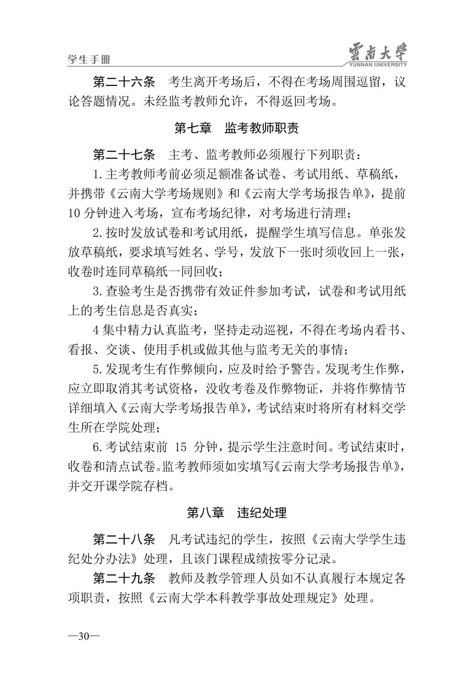
学生手册YUNNANUNIVERSITY第二十六条考生离开考场后不得在考场周围逗留议，，论答题情况未经监考教师允许不得返回考场。，。第七章监考教师职责第二十七条主考监考教师必须履行下列职责、：1.主考教师考前必须足额准备试卷考试用纸草稿纸、、，并携带《云南大学考场规则》和《云南大学考场报告单》提前，10分钟进入考场宣布考场纪律对考场进行清理，，；2按时发放试卷和考试用纸提醒学生填写信息单张发·，。放草稿纸要求填写姓名学号发放下张时须收回上张，、，一一，收卷时连同草稿纸同回收一；3查验考生是否携带有效证件参加考试试卷和考试用纸，，上的考生信息是否真实；4集中精力认真监考坚持走动巡视不得在考场内看书，，、看报交谈使用手机或做其他与监考无关的事情、、；5发现考生有作弊倾向应及时给予警告发现考生作弊，，。，应立即取消其考试资格没收考卷及作弊物证并将作弊情节，，详细填入《云南大学考场报告单》考试结束时将所有材料交学，生所在学院处理；6考试结束前15分钟提示学生注意时间考试结束时，，。，收卷和清点试卷监考教师须如实填写《云南大学考场报告单》。，并交开课学院存档。第八章违纪处理第二十八条凡考试违纪的学生按照《云南大学学生违，纪处分办法》处理且该门课程成绩按零分记录，。第二十九条教师及教学管理人员如不认真履行本规定各项职责按照《云南大学本科教学事故处理规定》处理，。一30一
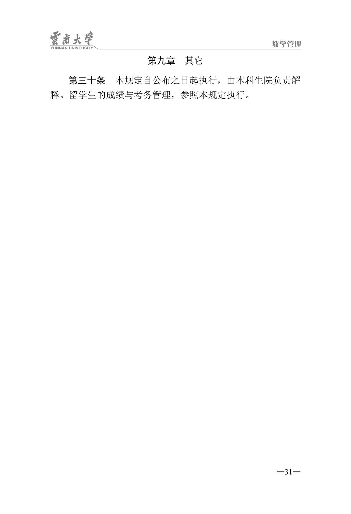
教学管理YUNNANUNIVERSITY第九章其它第三十条本规定自公布之日起执行由本科生院负责解，释留学生的成绩与考务管理参照本规定执行。，一31一
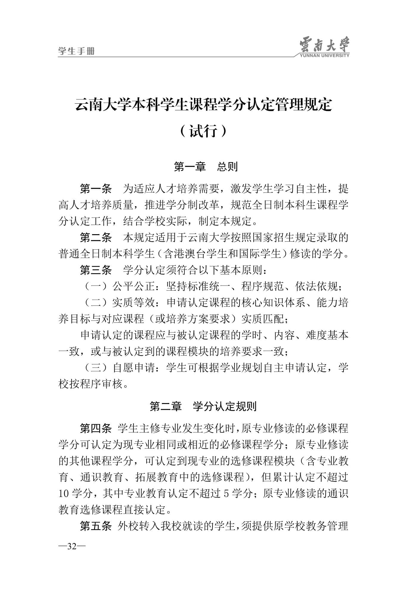
学生手册YUNNANUNIVERSITY云南大学本科学生课程学分认定管理规定（试行）第章总则一第条为适应人才培养需要激发学生学习自主性提一，，高人才培养质量推进学分制改革规范全日制本科生课程学，，分认定工作结合学校实际制定本规定，，。第二条本规定适用于云南大学按照国家招生规定录取的普通全日制本科学生（含港澳台学生和国际学生）修读的学分。第三条学分认定须符合以下基本原则：（）公平公正坚持标准统程序规范依法依规一：一、、；（二）实质等效申请认定课程的核心知识体系能力培：、养目标与对应课程（或培养方案要求）实质匹配；申请认定的课程应与被认定课程的学时内容难度基本、、致或与被认定到的课程模块的培养要求致一，一：（三）自愿申请学生可根据学业规划自主申请认定学：，校按程序审核。第二章学分认定规则第四条学生主修专业发生变化时原专业修读的必修课程，学分可认定为现专业相同或相近的必修课程学分原专业修读：的其他课程学分可认定到现专业的选修课程模块（含专业教，育通识教育拓展教育中的选修课程）但累计认定不超过、、，10学分其中专业教育认定不超过5学分原专业修读的通识，；教育选修课程直接认定。第五条外校转入我校就读的学生须提供原学校教务管理，一32一
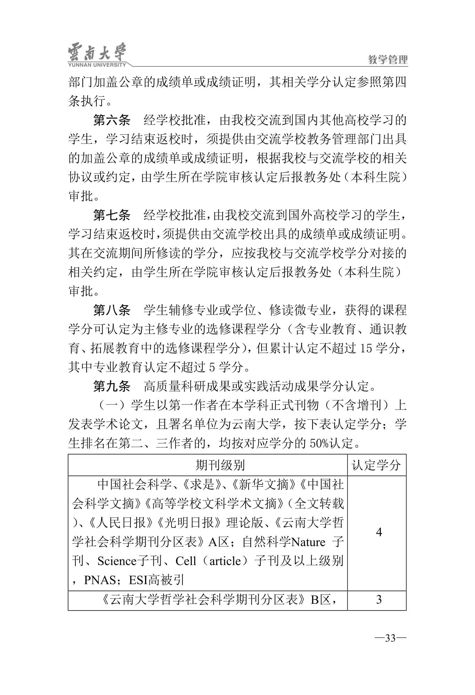
教学管理YUNNANUNIVERSITY部门加盖公章的成绩单或成绩证明其相关学分认定参照第四，条执行。第六条经学校批准由我校交流到国内其他高校学习的，学生学习结束返校时须提供由交流学校教务管理部门出具，，的加盖公章的成绩单或成绩证明根据我校与交流学校的相关，协议或约定山学生所在学院审核认定后报教务处（本科生院），审批。第七条经学校批准山我校交流到国外高校学习的学生，，学习结束返校时须提供由交流学校出具的成绩单或成绩证明，。其在交流期间所修读的学分应按我校与交流学校学分对接的，相关约定由学生所在学院审核认定后报教务处（本科生院），审批。第八条学生辅修专业或学位修读微专业获得的课程、，学分可认定为主修专业的选修课程学分（含专业教育通识教、育拓展教育中的选修课程学分）但累计认定不超过15学分、，，其中专业教育认定不超过5学分。第九条高质量科研成果或实践活动成果学分认定。（）学生以第作者在本学科正式刊物（不含增刊）上一一发表学术论文且署名单位为云南大学按下表认定学分学，，；生排名在第二三作者的均按对应学分的50％认定、，。期刊级别认定学分中国社会科学《求是》《新华文摘》《中国社、、会科学文摘》《高等学校文科学术文摘》（全文转载）《人民日报》《光明日报》理论版《云南大学哲、、4学社会科学期刊分区表》A区自然科学Nature子；刊Science子刊CeII（article）子刊及以上级别、、PNASESI高被引，；《云南大学哲学社会科学期刊分区表》B区3，一33一
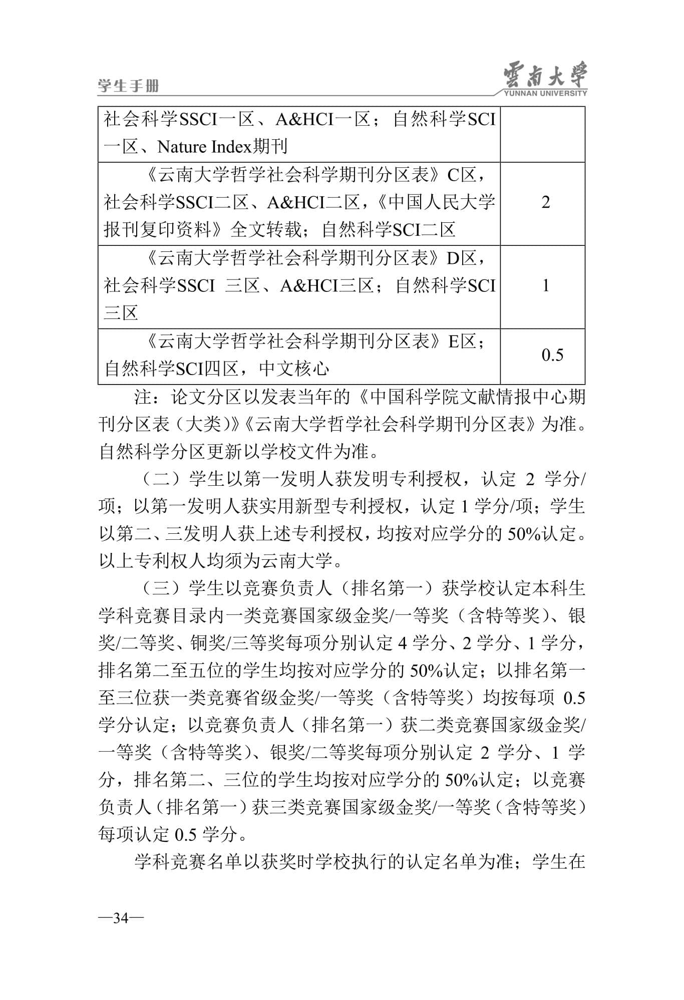
学生手册YUNNANUNIVERSITY社会科学SSCI区A&HCI区自然科学SCI一、一：区Naturelndex期刊一、《云南大学哲学社会科学期刊分区表》c区，社会科学SSCI二区A&HCI二区《中国人民大学2、，报刊复印资料》全文转载自然科学SCI二区；《云南大学哲学社会科学期刊分区表》D区，社会科学SSCI三区A&HCI三区自然科学SCI1、；《云南大学哲学社会科学期刊分区表》E区；自然科学SCI四区中文核心，注论文分区以发表当年的《中国科学院文献情报中心期：刊分区表（大类）》《云南大学哲学社会科学期刊分区表》为准。自然科学分区更新以学校文件为准。（二）学生以第发明人获发明专利授权认定2学分／一，项以第发明人获实用新型专利授权认定1学分/项学生；一，；以第二三发明人获上述专利授权均按对应学分的50％认定、，。以上专利权人均须为云南大学。（三）学生以竞赛负责人（排名第）获学校认定本科生一学科竞赛目录内类竞赛国家级金奖/等奖（含特等奖）银一一、奖/二等奖铜奖/三等奖每项分别认定4学分2学分1学分、、、，排名第二至五位的学生均按对应学分的50％认定以排名第；一至三位获类竞赛省级金奖/等奖（含特等奖）均按每项05一一，学分认定以竞赛负责人（排名第）获二类竞赛国家级金奖/；一等奖（含特等奖）银奖/二等奖每项分别认定2学分1学一、、分排名第二三位的学生均按对应学分的50％认定以竞赛，、；负责人（排名第）获三类竞赛国家级金奖0等奖（含特等奖）一每项认定05学分，。学科竞赛名单以获奖时学校执行的认定名单为准学生在；一34一
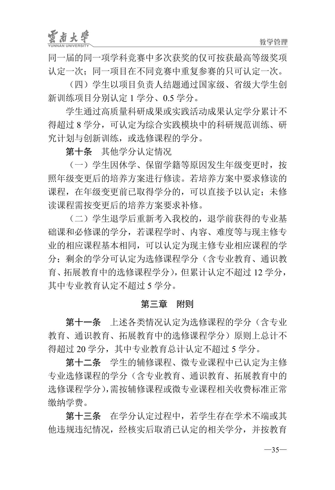
教学管理YUNNANUNIVERSITY同届的同项学科竞赛中多次获奖的仅可按获最高等级奖项一一认定次同项目在不同竞赛中重复参赛的只可认定次一；一一。（四）学生以项目负责人结题通过国家级省级大学生创、新训练项目分别认定1学分05学分、，。学生通过高质量科研成果或实践活动成果认定学分累计不得超过8学分可认定为综合实践模块中的科研规范训练研，、究计划与创新训练或选修课程的学分，。第十条其他学分认定情况（）学生因休学保留学籍等原因发生年级变更时按一、，照年级变更后的培养方案进行修读若培养方案中要求修读的。课程在年级变更前己取得学分的可以直接予以认定未修，，；读课程需按变更后的培养方案要求补修。（二）学生退学后重新考入我校的退学前获得的专业基，础课和必修课的学分若课程学时内容难度等与现主修专，、、业的相应课程基本相同可以认定为现主修专业相应课程的学，分剩余的学分可认定为选修课程学分（含专业教育通识教；、育拓展教育中的选修课程学分）但累计认定不超过12学分、，，其中专业教育认定不超过5学分。第三章咐则第十条上述各类情况认定为选修课程的学分（含专业一教育通识教育拓展教育中的选修课程学分）原则上总计不、、得超过20学分其中专业教育总计认定不超过5学分，。第十二条学生的辅修课程微专业课程中己认定为主修、专业选修课程的学分（含专业教育通识教育拓展教育中的、、选修课程学分）需按辅修课程或微专业课程相关收费标准正常，缴纳学费。第十三条在学分认定过程中若学生存在学术不端或其，他违规违纪情况经核实后取消己认定的相关学分并按教育，，一35一
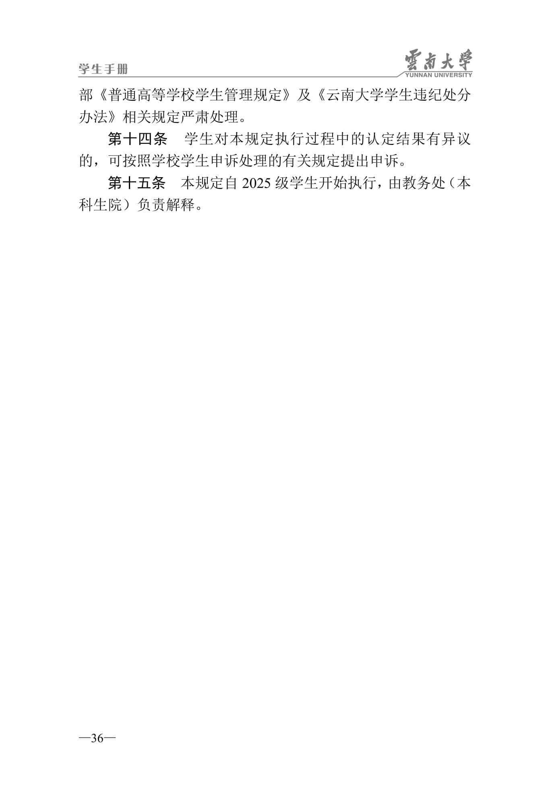
学生手册YUNNANUNIVERSITY部《普通高等学校学生管理规定》及《云南大学学生违纪处分办法》相关规定严肃处理。第十四条学生对本规定执行过程中的认定结果有异议的可按照学校学生申诉处理的有关规定提出申诉，。第十五条本规定自2025级学生开始执行由教务处（本，科生院）负责解释。一36一
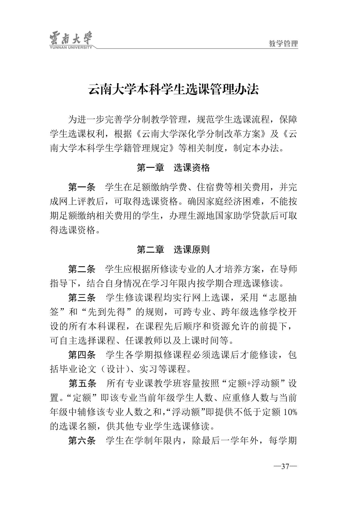
教学管理YUNNANUNIVERSITY云南大学本科学生选课管理办法为进步完善学分制教学管理规范学生选课流程保障一，，学生选课权利根据《云南大学深化学分制改革方案》及《云，南大学本科学生学籍管理规定》等相关制度制定本办法，。第章选课资格一第条学生在足额缴纳学费住宿费等相关费用并完一、，成网上评教后可取得选课资格确因家庭经济困难不能按，。，期足额缴纳相关费用的学生办理生源地国家助学贷款后可取，得选课资格。第二章选课原则第二条学生应根据所修读专业的人才培养方案在导师，指导下结合自身情况在学习年限内按学期合理选课修读，。第三条学生修读课程均实行网上选课采用“志愿抽，签”和“先到先得”的规则可跨专业跨年级选修学校开，、设的所有本科课程在课程先后顺序和资源允许的前提下，，可自主选择课程任课教师以及上课时间等、。第四条学生各学期拟修课程必须选课后才能修读包，括毕业论文（设计）实习等课程、。第五条所有专业课教学班容量按照“定额+浮动额”设置“定额”即该专业当前年级学生人数应重修人数与当前。、年级中辅修该专业人数之和“浮动额”即提供不低于定额10％，的选课名额供其他专业学生选课修读，。第六条学生在学制年限内除最后学年外每学期，一，一37一
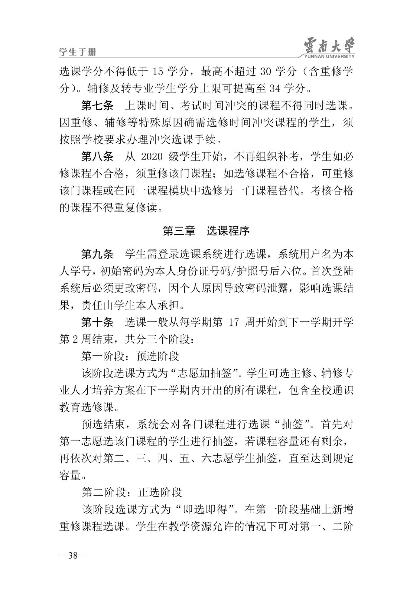
学生手册YUNNANUNIVERSITY选课学分不得低于15学分最高不超过30学分（含重修学，分）辅修及转专业学生学分上限可提高至34学分。。第七条上课时间考试时间冲突的课程不得同时选课、。因重修辅修等特殊原因确需选修时间冲突课程的学生须、，按照学校要求办理冲突选课手续。第八条从2020级学生开始不再组织补考学生如必，，修课程不合格须重修该门课程如选修课程不合格可重修，；，该门课程或在同课程模块中选修另门课程替代考核合格一一。的课程不得重复修读。第三章选课程序第九条学生需登录选课系统进行选课系统用户名为本，人学号初始密码为本人身份证号码/护照号后六位首次登陆，。系统后必须更改密码因个人原因导致密码泄露影响选课结，，果责任由学生本人承担，。第十条选课般从每学期第17周开始到下学期开学一一第2周结束共分三个阶段，：第阶段预选阶段一：该阶段选课方式为“志愿加抽签”学生可选主修辅修专。、业人才培养方案在下学期内开出的所有课程包含全校通识一，教育选修课。预选结束系统会对各门课程进行选课“抽签”首先对，。第志愿选该门课程的学生进行抽签若课程容量还有剩余一，，再依次对第二四五六愿学生抽签直至达到规定、、宀，夻里。第二阶段正选阶段：该阶段选课方式为“即选即得”在第阶段基础上新增。一重修课程选课学生在教学资源允许的情况下可对第二阶。一、一38一
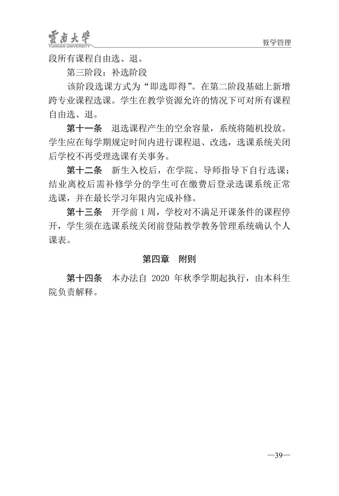
教学管理YUNNANUNIVERSITY段所有课程自由选退、。第三阶段补选阶段：该阶段选课方式为“即选即得”在第二阶段基础上新增。跨专业课程选课学生在教学资源允许的情况下可对所有课程。自由选退、。第十条退选课程产生的空余容量系统将随机投放一，。学生应在每学期规定时间内进行课程退改选选课系统关闭、，后学校不再受理选课有关事务。第十二条新生入校后在学院导师指导下自行选课，、；结业离校后需补修学分的学生可在缴费后登录选课系统正常选课并在最长学习年限内完成补修，。第十三条开学前1周学校对不满足开课条件的课程停，开学生须在选课系统关闭前登陆教学教务管理系统确认个人，第四章附则第十四条本办法自2020年秋季学期起执行由本科生，院负责解释。一39一
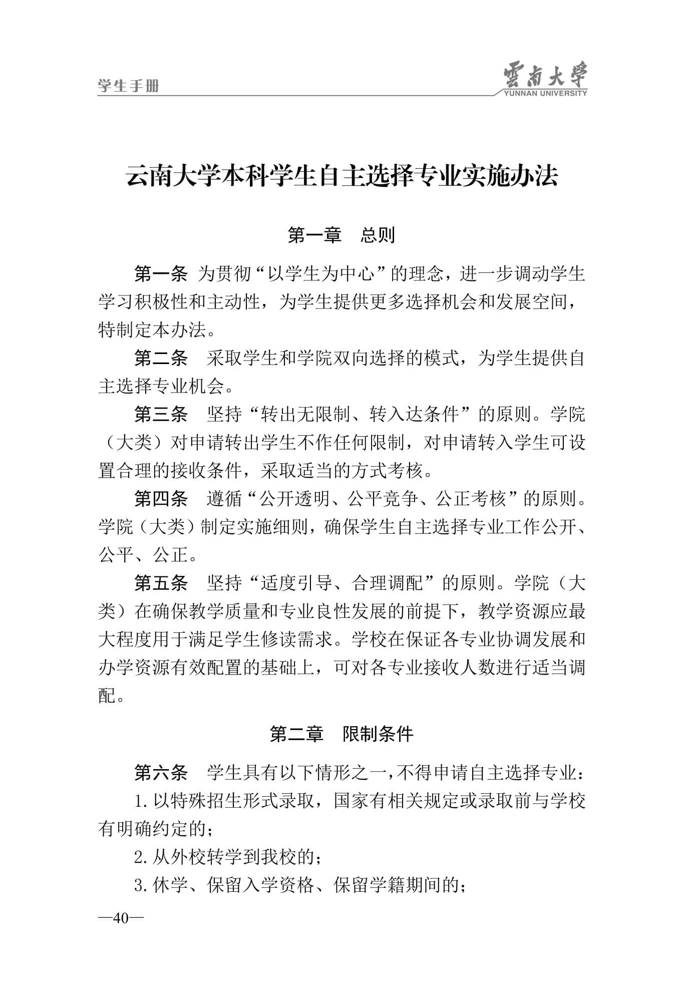
学生手册YUNNANUNIVERSITY云南大学本科学生自主选择专业实施办法第章总则一第条为贯彻“以学生为中心”的理念进步调动学生一，一学习积极性和主动出为学生提供更多选择机会和发展空间，特制定本办法。第二条采取学生和学院双向选择的模式为学生提供自，主选择专业机会。第三条坚持“转出无限制转入达条件”的原则学院、。（大类）对申请转出学生不作任何限制对申请转入学生可设，置合理的接收条件采取适当的方式考核，。第四条遵循“公开透明公平竞争公正考核”的原则、、。学院（大类）制定实施细则确保学生自主选择专业工作公开，、公平公正、。第五条坚持“适度引导合理调配”的原则学院（大、。类）在确保教学质量和专业良性发展的前提下教学资源应最，大程度用于满足学生修读需求学校在保证各专业协调发展和。办学资源有效配置的基础上可对各专业接收人数进行适当调，配。第二章限制条件第六条学生具有以下情形之不得申请自主选择专业一，：1.以特殊招生形式录取国家有相关规定或录取前与学校，有明确约定的；2从外校转学到我校的．；3休学保留入学资格保留学籍期间的．、、；．一40一
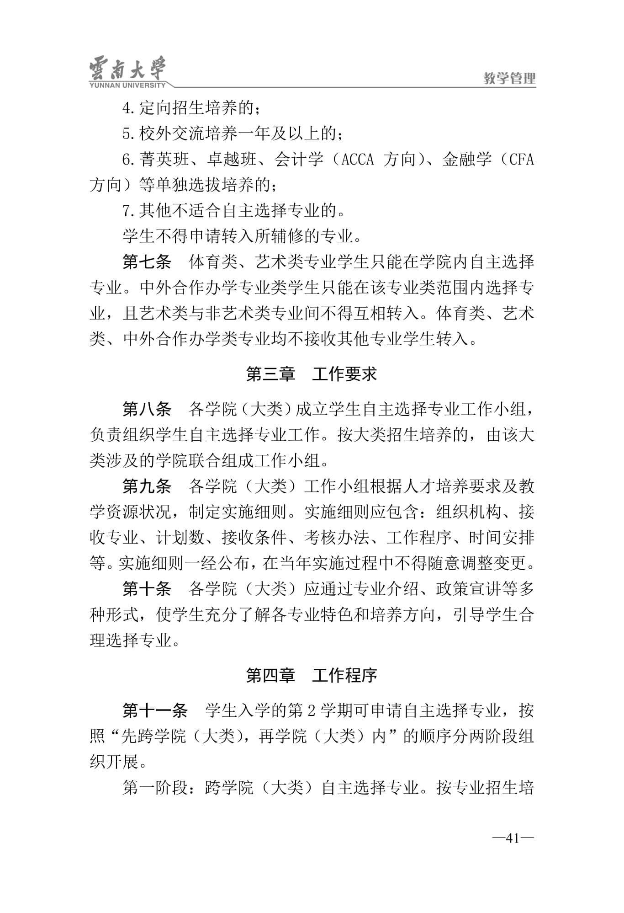
教学管理YUNNANUNIVERSITY4定向招生培养的．；5校外交流培养年及以上的一；．6菁英班卓越班会计学（ACCA方向）金融学（CFA·、、、方向）等单独选拔培养的；7其他不适合自主选择专业的·。学生不得申请转入所辅修的专业第七条体育类艺术类专业学生只能在学院内自主选择、专业中外合作办学专业类学生只能在该专业类范围内选择专。业且艺术类与非艺术类专业间不得互相转入体育类艺术，。、类中外合作办学类专业均不接收其他专业学生转入、。第三章工作要求第八条各学院（大类）成立学生自主选择专业工作小组，负责组织学生自主选择专业工作按大类招生培养的山该大。，类涉及的学院联合组成工作小组。第九条各学院（大类）工作小组根据人才培养要求及教学资源状况制定实施细则实施细则应包含组织机构接，。：、收专业计划数接收条件考核办法工作程序时间安排、、、、、等实施细则经公布在当年实施过程中不得随意调整变更。一，。第十条各学院（大类）应通过专业介绍政策宣讲等多、种形式使学生充分了解各专业特色和培养方向引导学生合，，理选择专业。第四章工作程序第十条学生入学的第2学期可申请自主选择专业按一，照“先跨学院（大类）再学院（大类）内”的顺序分两阶段组，织开展。第阶段跨学院（大类）自主选择专业按专业招生培一：。一一41一
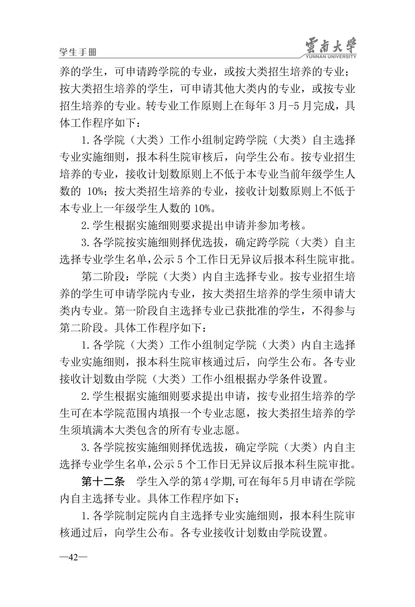
学生手册YUNNANUNIVERSITY养的学生可申请跨学院的专业或按大类招生培养的专业，，；按大类招生培养的学生可申请其他大类内的专业或按专业，，招生培养的专业转专业工作原则上在每年3月5月完成具。一，体工作程序如下：1.各学院（大类）工作小组制定跨学院（大类）自主选择专业实施细则报本科生院审核后向学生公布按专业招生，，。培养的专业接收计划数原则上不低于本专业当前年级学生人，数的10％按大类招生培养的专业接收计划数原则上不低于；，本专业上年级学生人数的10％一。2学生根据实施细则要求提出申请并参加考核·。3各学院按实施细则择优选拔确定跨学院（大类）自主·，选择专业学生名单公示5个工作日无异议后报本科生院审批，。第二阶段学院（大类）内自主选择专业按专业招生培：。养的学生可申请学院内专业按大类招生培养的学生须申请大，类内专业第阶段自主选择专业己获批准的学生不得参与。一，第二阶段具体工作程序如下。：1.各学院（大类）工作小组制定学院（大类）内自主选择专业实施细则报本科生院审核通过后向学生公布各专业，，。接收计划数由学院（大类）工作小组根据办学条件设置。2学生根据实施细则要求提出申请按专业招生培养的学·，生可在本学院范围内填报个专业志愿按大类招生培养的学一，生须填满本大类包含的所有专业志愿。3各学院按实施细则择优选拔确定学院（大类）内自主，，选择专业学生名单公示5个工作日无异议后报本科生院审批，。第十二条学生入学的第4学期可在每年5月申请在学院，内自主选择专业具体工作程序如下。：1.各学院制定院内自主选择专业实施细则报本科生院审，核通过后向学生公布各专业接收计划数由学院设置，。。．一42一
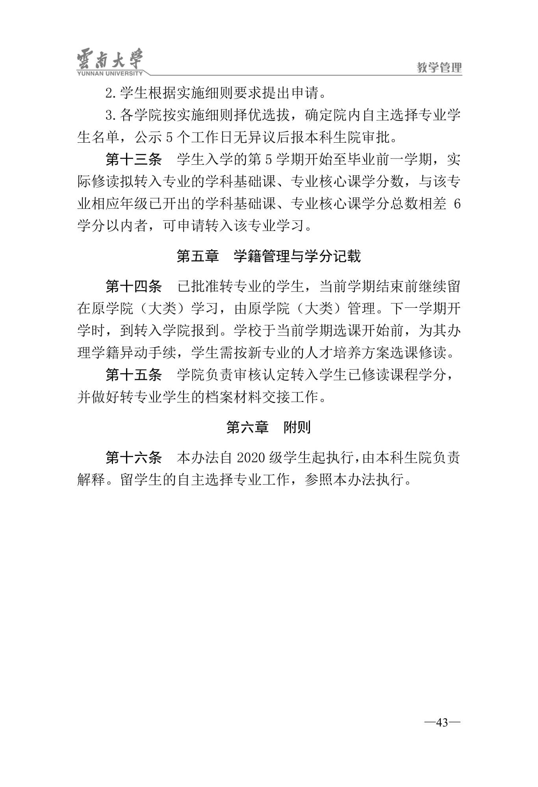
教学管理YUNNANUNIVERSITY2学生根据实施细则要求提出申请．。3各学院按实施细则择优选拔确定院内自主选择专业学．，生名单公示5个工作日无异议后报本科生院审批，。第十三条学生入学的第5学期开始至毕业前学期实一，际修读拟转入专业的学科基础课专业核心课学分数与该专、，业相应年级己开出的学科基础课专业核心课学分总数相差6、学分以内者可申请转入该专业学习，。第五章学籍管理与学分记载第十四条己批准转专业的学生当前学期结束前继续留，在原学院（大类）学习由原学院（大类）管理下学期开，。一学时到转入学院报到学校于当前学期选课开始前为其办，。，理学籍异动手续学生需按新专业的人才培养方案选课修读，。第十五条学院负责审核认定转入学生己修读课程学分，并做好转专业学生的档案材料交接工作。第六章附则第十八条本办法自2020级学生起执行山本科生院负责，解释留学生的自主选择专业工作参照本办法执行。，。
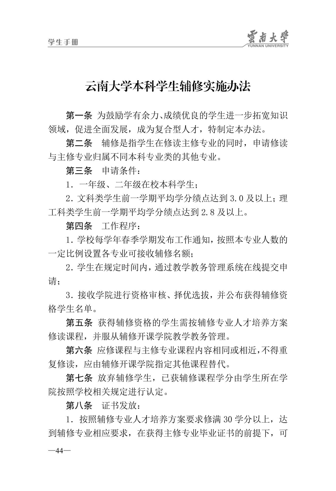
学生手册YUNNANUNIVERSITY云南大学本科学生辅修实施办法第条为鼓励学有余力成绩优良的学生进步拓宽知识一、一领域促进全面发展成为复合型人才特制定本办法，，，。第二条辅修是指学生在修读主修专业的同时申请修读，与主修专业归属不同本科专业类的其他专业。第三条申请条件：1.年级二年级在校本科学生一、；2文科类学生前学期平均学分绩点达到30及以上理一；．．工科类学生前学期平均学分绩点达到28及以上一。，第四条工作程序：1.学校每学年春季学期发布工作通知按照本专业人数的，定比例设置各专业可接收辅修名额一；2学生在规定时间内通过教学教务管理系统在线提交申．，3接收学院进行资格审核择优选拔并公布获得辅修资，、，格学生名单。第五条获得辅修资格的学生需按辅修专业人才培养方案修读课程并服从辅修开课学院教学教务管理，。第六条应修课程与主修专业课程内容相同或相近不得重，复修读应由辅修开课学院指定其他课程替代，。第七条放弃辅修学生己获辅修课程学分由学生所在学，院按照学校相关规定进行认定。第八条证书发放：1.按照辅修专业人才培养方案要求修满30学分以上达，到辅修专业相应要求在获得主修专业毕业证书的前提下可，，
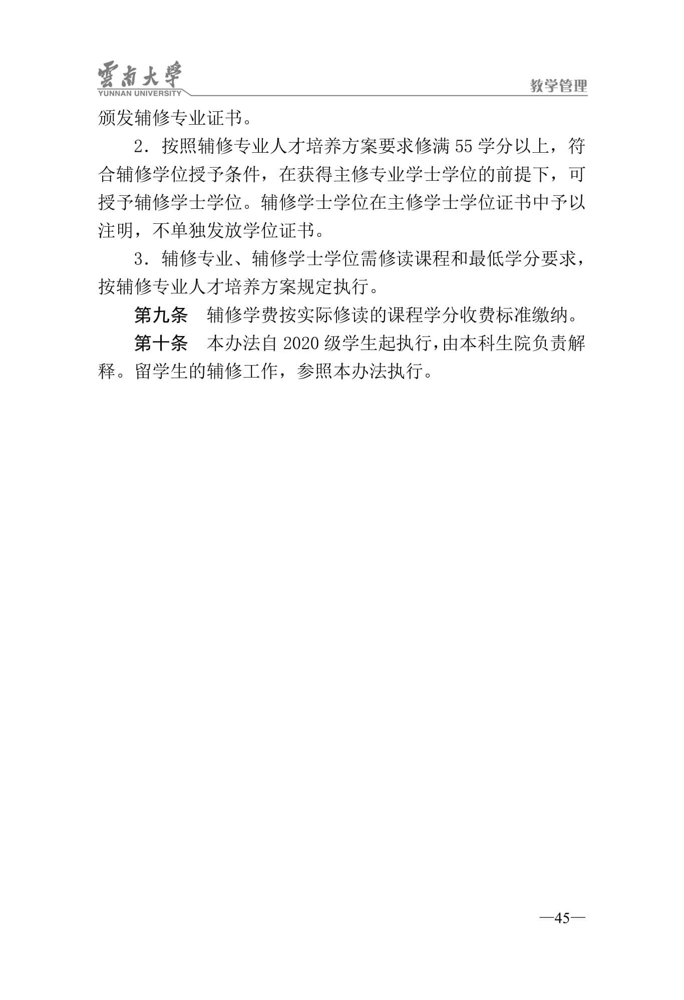
教学管理YUNNANUNIVERSITY颁发辅修专业证书。2按照辅修专业人才培养方案要求修满55学分以上符．，合辅修学位授予条件在获得主修专业学士学位的前提下可，，授予辅修学士学位辅修学士学位在主修学士学位证书中予以。注明不单独发放学位证书，。3辅修专业辅修学士学位需修读课程和最低学分要求．、，按辅修专业人才培养方案规定执行。第九条辅修学费按实际修读的课程学分收费标准缴纳。第十条本办法自2020级学生起执行由本科生院负责解，释留学生的辅修工作参照本办法执行。，。一一45一
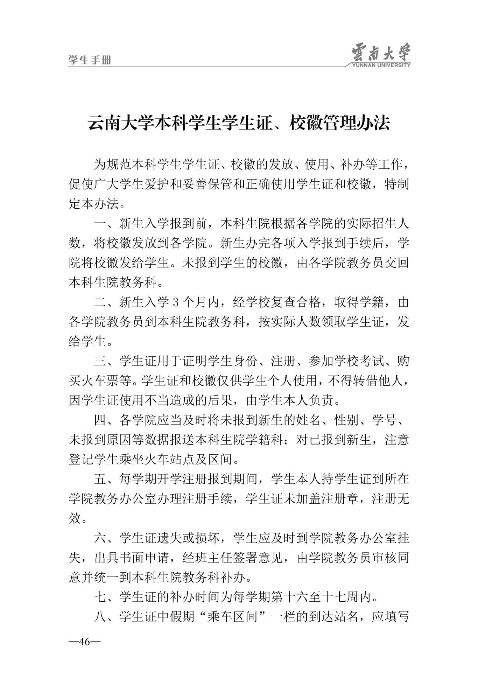
学生手册YUNNANUNIVERSITY云南大学本科学生学生证校徽管理办法、为规范本科学生学生证校徽的发放使用补办等工作、、、，促使广大学生爱护和妥善保管和正确使用学生证和校徽特制，定本办法。新生入学报到前本科生院根据各学院的实际招生人、，数将校徽发放到各学院新生办完各项入学报到手续后学，。，院将校徽发给学生未报到学生的校徽由各学院教务员交回。，本科生院教务科。新生入学3个月内经学校复查合格取得学籍由、，，，各学院教务员到本科生院教务科按实际人数领取学生证发，，给学生。学生证用于证明学生身份注册参加学校考试购、、、、买火车票等学生证和校徽仅供学生个人使用不得转借他人。，，因学生证使用不当造成的后果由学生本人负责，。四各学院应当及时将未报到新生的姓名性别学号、、、、未报到原因等数据报送本科生院学籍科对己报到新生注意；，登记学生乘坐火车站点及区间。五每学期开学注册报到期间学生本人持学生证到所在、，学院教务办公室办理注册手续学生证未加盖注册章注册无，，六学生证遗失或损坏学生应及时到学院教务办公室挂、，失出具书面申请经班主任签署意见由学院教务员审核同，，，意并统到本科生院教务科补办一。七学生证的补办时间为每学期第十六至十七周内、。八学生证中假期“乘车区间”栏的到达站名应填写、一，．一46一
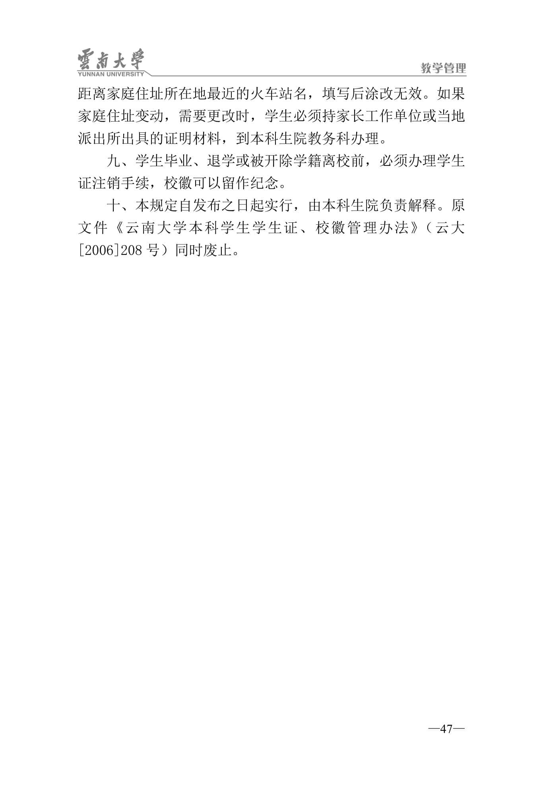
教学管理YUNNANUNIVERSITY距离家庭住址所在地最近的火车站名填写后涂改无效如果，。家庭住址变动需要更改时学生必须持家长工作单位或当地，，派出所出具的证明材料到本科生院教务科办理，。九学生毕业退学或被开除学籍离校前必须办理学生、、，证注销手续校徽可以留作纪念，。十本规定自发布之日起实行由本科生院负责解释原、，。文件《云南大学本科学生学生证校徽管理办法》（云大、[2006]208号）同时废止。
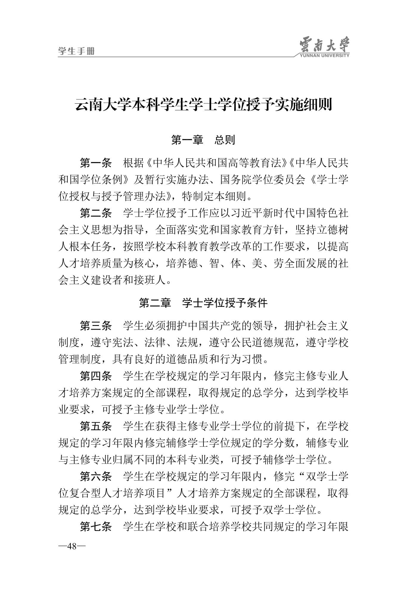
学生手册YUNNANUNIVERSITY云南大学本科学生学士学位授予实施细则第章总则一第条根据《中华人民共和国高等教育法》《中华人民共一和国学位条例》及暂行实施办法国务院学位委员会《学士学、位授权与授予管理办法》特制定本细则，。第二条学士学位授予工作应以习近平新时代中国特色社会主义思想为指导全面落实党和国家教育方针坚持立德树，，人根本任务按照学校本科教育教学改革的工作要求以提高，，人才培养质量为核心培养德智体美劳全面发展的社，、、、、会主义建设者和接班人。第二章学士学位授予条件第三条学生必须拥护中国共产党的领导拥护社会主义，制度遵守宪法法律法规遵守公民道德规范遵守学校，、、，，管理制度具有良好的道德品质和行为习惯，。第四条学生在学校规定的学习年限内修完主修专业人，才培养方案规定的全部课程取得规定的总学分达到学校毕，，业要求可授予主修专业学士学位，。第五条学生在获得主修专业学士学位的前提下在学校，规定的学习年限内修完辅修学士学位规定的学分数辅修专业，与主修专业归属不同的本科专业类可授予辅修学士学位，。第六条学生在学校规定的学习年限内修完“双学士学，位复合型人才培养项目”人才培养方案规定的全部课程取得，规定的总学分达到学校毕业要求可授予双学士学位，，。第七条学生在学校和联合培养学校共同规定的学习年限．一48一
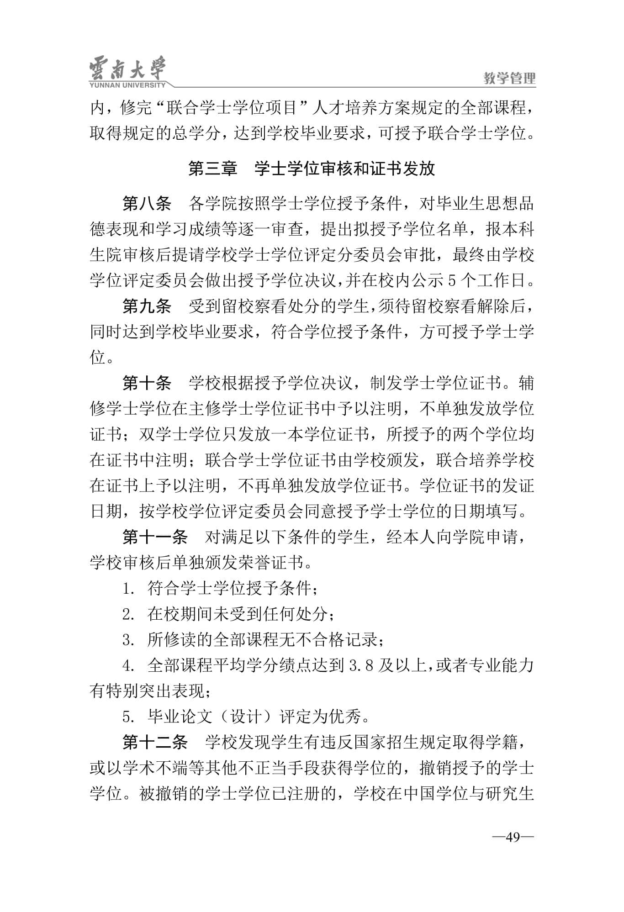
教学管理YUNNANUNIVERSITY内修完“联合学士学位项目”人才培养方案规定的全部课程，，取得规定的总学分达到学校毕业要求可授予联合学士学位，，。第三章学士学位审核和证书发放第八条各学院按照学士学位授予条件对毕业生思想品，德表现和学习成绩等逐审查提出拟授予学位名单报本科一，，生院审核后提请学校学士学位评定分委员会审批最终山学校，学位评定委员会做出授予学位决议并在校内公示5个工作日，。第九条受到留校察看处分的学生须待留校察看解除厂，同时达到学校毕业要求符合学位授予条件方可授予学士学，，第十条学校根据授予学位决议制发学士学位证书辅，。修学士学位在主修学士学位证书中予以注明不单独发放学位，证书双学士学位只发放本学位证书所授予的两个学位均；一，在证书中注明联合学士学位证书由学校颁发联合培养学校；，在证书上予以注明不再单独发放学位证书学位证书的发证，。日期按学校学位评定委员会同意授予学士学位的日期填写，。第十条对满足以下条件的学生经本人向学院申请一，，学校审核后单独颁发荣誉证书。1.符合学士学位授予条件；2在校期间未受到任何处分·；3所修读的全部课程无不合格记录．；4全部课程平均学分绩点达到38及以上或者专业能力，，，有特别突出表现；5毕业论文（设计）评定为优秀，。第十二条学校发现学生有违反国家招生规定取得学籍，或以学术不端等其他不正当手段获得学位的撤销授予的学士，学位被撤销的学士学位已注册的学校在中国学位与研究生。，一一49一
学生手册YUNNANUNIVERSITY教育信息网上予以注销并报教育行政部门宣布无效。第四章其他第十三条学校与境外机构合作办学授予外方学士学位的按《中外合作办学条例》规定及学校相关合作协议执行，。第十四条本细则自2020级学生起实施由本科生院负责，解释留学生的学士学位授予参照本细则执行。，一50一
教学管理YUNNANUNIVERSITY云南大学本科学生毕业论文（设计）工作管理办法第章总则一第条为进步规范本科学生毕业论文（设计）管理工作一一，提高人才培养质量特制定本办法，。第二条毕业论文（设计）培养学生综合运用所学专业的基础理论基本知识和基本技能独立提出问题分析问题和、，、解决问题的能力以及求真务实勇于创新的科学素养和丝不、一苟兢兢业业的工作精神、。第二章工作职责第三条本科生院负责制定管理制度按时间节点布置相关，工作建设和维护毕业论文（设计）系统管理平台做好整体；；质量检查与监控编印校级《本科学生优秀毕业论文（设计）；集萃》研宄和处理相关问题；。第四条学院全面负责本学院相关组织管理工作主要包，括：核实应开展毕业论文（设计）的学生确保无遗漏对指，；导教师（含外聘指导教师）进行资格审核按照时间节点组织；完成题目申报和审核师生双选开题中期检查重复率检、、、、测答辩优秀毕业论文（设计）评选工作总结材料归档、、、、等工作。第五条指导教师应为人师表具有博士学位或中级及以，上专业技术职称有较强的工作责任心和科研能力工科类及，。一51一
学生手册YUNNANUNIVERSITY拟参加专业认证的其他专业须聘请定数量的校外同行专家作一为指导教师每位教师指导学生人数般不超过5名指导教。一。师应履行好如下职责：1.拟定并发布题目：2指导学生查阅文献收集资料拟定研宄方案撰写开·，，，题报告；3对研宄过程加强指导检查学生工作进展并提出针对性，，意见和建议：4对毕业论文（设计）进行全面审核并评定成绩．：5对研宄内容观点及相关材料严把意识形态关·、；6履行监督纠正学生“学术不端”行为第责任人职责一，·检查学生是否有抄袭篡改伪造等“学术不端”行为、、；7督促学生修改完善毕业论文（设计）并按要求提交归·，档材料；&完成学院安排的其他相关工作。第三章工作程序及要求第六条各阶段工作完成时间安排如下：秋季学期第10教学周前完成题目申报和审核第12教：；学周前完成师生双选第18教学周前完成开题报告审核；。春季学期第6教学周前完成中期检查第12教学周前：；完成重复率检测和答辩资格审查第14教学周前完成答辩第；；16教学周前完成校级优秀毕业论文（设计）评选及材料归档。第七条毕业论文（设计）选题须符合本专业人才培养目标具有理论意义或应用价值有定的创新性难度适当，，一，，工作量适中由学院组织指导教师和学生拟定题目鼓励开展。，产学研合作将解决实际问题作为选题鼓励学生结合参与的，，科研项目创新创业训练项目学科竞赛创业成果等自主申、、、一52一
教学管理YUNNANUNIVERSITY报题目。第八条指导教师和学生通过毕业论文（设计）管理系统进行师生双选原则上应人题团队课题中的学生须明确，一一，各自应独立完成的工作题目须经学院审核同意后方可使用。，选定后不得随意变更相同或接近题目两年内不应重复出现，。第九条外语类专业般应使用所学外语撰写毕业论文一。第十条毕业论文（设计）须进行重复率检测通过后方，可安排答辩每篇毕业论文（设计）答辩前最多可进行两次检。测以最后次检测结果的“总文字复制比”不高于20％作为，一通过条件。第十条确因专业跬质所限或涉及保密信息的毕业论文一（设计）由学院申请经本科生院批准可不进行重复率检测，，。第十二条答辩组织程序1.答辩资格审查经审查同时达到以下要求的学生方可：，参加答辩：（1)经专业负责人审核通过的开题报告中期检查报告（2）、；己提交不少于3次经指导教师审核过的指导记录（3）毕业论文；（设计）重复率检测通过（4）指导教师评定成绩不低于60分；。2答辩组织答辩应按专业组织并安排专人负责记录，：，。答辩专家人数应为奇数且不少于3人需具有博士学位或中级，及以上专业技术职称工科类及拟参加专业认证的其他专业须，有校外同行作为答辩专家学生应逐进行答辩且每人只有。一，次答辩机会一。3答辩评分答辩专家根据学生毕业论文（设计）完成质，：量答辩陈述情况等进行综合评分答辩成绩为答辩专家组成、，员评分的平均值。第十三条学生答辩后须提交毕业论文（设计）最终稿，学校再次进行重复率检测“总文字复制比”高于20％者总，，一53一
学生手册YUNNANUNIVERSITY成绩以零分记录。第十四条对重复率检测结果存在异议者可向学院书面，反映由学院进行认定认定材料须存档备查，，。第十五条对存在抄袭篡改伪造等“学术不端”行为、、的学校将依据上级相关规定和《云南大学学生违纪处分办法》，予以处理。第十六条毕业论文（设计）总成绩般由指导教师评定一成绩（占总成绩50％）专家组评定答辩成绩（占总成绩50％）、两部分组成各部分及总成绩均按百分制评定并取整数，。第十七条毕业论文（设计）总成绩不合格学生应重修。第十八条符合以下条件的毕业论文（设计）学校向学，生颁发校级优秀毕业论文（设计）证书并收入当年《云南大，学本科学生优秀毕业论文（设计）集萃》具有较强的创新性：和应用价值总成绩不低于90分最终稿重复率检测的“总文；；字复制比”不超过10％。第十九条学院应按照相关要求对当年度毕业论文（设，计）材料及时进行整理归档保存时间不少于五年，。第四章附则第二十条本办法自发布之日起执行由本科生院负责解，释留学生的毕业论文（设计）工作参照本办法执行原《云。，。南大学本科学生毕业论文（设计）工作指导意见》（云大教[2016]127号）同时废止。一54一
教学管理YUNNANUNIVERSITY云南大学本科毕业论文（设计）写作规范（试行）为提高我校毕业论文（设计）（以下简称“毕业论文”）质量提升本科生论文写作能力学校结合加强毕业论文过程，，性管理要求特制订本规范，。本科生撰写毕业论文须遵循《云南大学本科毕业论文工，作管理办法》及《学位论文编写规则》（GB/T771312006）的，一相关要求本规范约定的书写格式主要适用于中文撰写的毕业。论文涉外专业用英文或其他外国语撰写论文的书写规范可参，照本规范执行。第条毕业论文撰写应保证符合学术规范和行业规范内一，容体系完整结构合理逻辑严谨重点突出文笔流畅表，，，，，述准确无错别字，。第二条篇幅要求教育部《普通高等学校本科专业类教学质量国家标准》中对毕业论文篇幅有明确要求的以该标准为准专业负责人要，，向本专业学生明确要求标准中没有明确要求的正文部分按。，以下要求理工科类专业原则上不少于8000字文科类专业原：；则上不少于8000字其中外语类专业毕业论文正文字数不少，，于5000外文单词翻译实践报告的译文字数为50008000汉字，一；艺术设计或作品创作等非文本形式的毕业论文成果须提交不低于3000字的文字说明（题目自拟）。第三条内容结构要求毕业论文由封面题目独创性声明及使用授权页摘要、、、、Abstract目录正文（包括前言主体结论）参考文献、、、、、、一55一
学生手册YUNNANUNIVERSITY致谢附录等组成、。（）题目一论文题目应简短明确有概括性避免使用不常见的缩、、，略词缩写字题目字数要适当般不宜超过20个汉字团、。，一。队题目要通过副标题做到人题一一。（二）独创性声明及使用授权页学校提供统格式作者和指导教师审阅同意后手写签名一，。（三）摘要摘要是毕业论文内容的高度概括包括研宄内容方法和，、观点以及研宄取得的成果结论和创新之处应能反映论文，、，的精华摘要应具有独立性和完整性不含图表和注释无文。，，献引用语言力求精炼般以300500字为宜。，一一。关键词是反映毕业论文主题内容的核心词是供检索使用，的词条应采用通用专业术语关键词35个为宜按词条外，。一，延层次（学科目录分类）山大至小顺序排列各词之间用中文。分号分隔最末不用任何符号关键词在摘要之后另起行，。一，行首加“关键词”字样：。（四）AbstractAbstract应与中文摘要关键词保持致译文通顺语、一，，法正确专业术语准确大小写和标点符号规范KeyWords，，。在Abstract之后另起行行首加"Keywords”字样各一，：。词之间用英文分号分隔最末不用任何符号，。（五）目录目录是毕业论文内容的主要线索要求层次清晰简明扼，，要主要包括摘要Abstract三级标题参考文献致谢及。、、、、附录等目录中标题页码应与正文中标题页码致。、、一。（六）正文正文的结构应包含三个部分按顺序分别是前言（绪论/，引言）主体结论（结语）、、。一56一
教学管理YUNNANUNIVERSITY1.前言（绪论/引言）主要阐述论文的背景及目的研究：、课题的缘起理论和现实意义完成任务的条件将采取的对、、，策手段步骤和应达到的目标也可以用以说明论文的整体、、，结构般应包括选题背景及意义研究价值及意义文献。一：、、综述研宄现状研宄创新点等、、。2主体（本论）论文的核心内容包括研宄分析论，：，、、证以及学术见解形成的所有过程是对研宄工作的详细表述，。它包括文献资料的综述般由标题文字表格或公式等部，一、、分组成该部分要运用各方面的理论研究方法分析问题论证。、观点尽量反映出作者的研究能力和学术水平自然科学论文，。应推理正确结论清晰人文社科的论文应把握观点正确论、，、证充分论据可靠恰当运用系统分析和比较研宄的方法进行、，模型或方案设计注重实证研宄和案例分析根据分析结果提，，出建议和改进措施主体的撰写要求论据和论点准确清晰。、、实事求是简短精炼合乎逻辑可以在论证和研宄具体问题、、。之后进行小结但应注意篇幅体例不宜冗长文中的数据必须，。真头可罪。3结论（结语）结论是对毕业论文最终研宄成果的归纳·：和总结是从全篇论文的全部材料出发经过推理判断归，，、、纳等逻辑分析过程而得到的新的学术总观念总见解结论要、。简月扼要措辞严密归纳完整突出创新点般应包括，，，。一：基本观点对前人有关的看法做了哪些修正补充发展证；、、、实或否定主要创新点（及其主要理山）局限不足和遗留；；、未予解决的问题等。（七）参考文献为反映毕业论文的科学依据和对他人研宄成果的尊重同，时向读者提供份有价值的信息资料应在论文之后列出参考一，文献参考文献表是文中引用的有具体文字来源的文献集合。，所有被引用的文献均要列入参考文献表中正文中未被引用但。
学生手册YUNNANUNIVERSITY被阅读或具有补充信息的文献可集中列入附录中其标题为'书，目”中英文参考文献总篇数不少于10篇参考文献著录格式。。遵照《信息与文献参考文献著录规则》（GB/T77142015）一。（八）致谢对导师和给予指导或协助完成毕业论文的组织和个人表示感谢致谢文字要简洁实事求是切忌浮夸不得照搬照抄。、，，。（九）附录不宜放在正文中但作为毕业论文又不可或缺的组成部分或具有重要参考价值的内容可编为毕业论文附录例如公式的，，推演实验数据等附表及编写的算法语言程序问卷调查等附、、件多个附录材料的需按定顺序编为“附录1附录2。一、、．等。（十）开题报告中期检查报告指导记录等过程性附件、、材料开题报告中期检查表指导记录等过程性附件材料使用、、学校统格式学生按要求在论文管理系统中填写并提交审核一，。第四条题序层次和格式要求题序层次是为了保证文章结构清晰纲目分明毕业论文、。可选定某种格式前后要统不混杂使用选用格式可参一，一，。考表1。表1几种中文毕业论文撰写通行的题序层次格式表第种第二种第三种一1l.l.11.1.l.1第层次题序和标题用三号黑体居中第二层次题序和一，；标题用四号黑体第三层次及以下题序和标题用小四号黑体；。一58一
教学管理YUNNANUNIVERSITY第五条文字毕业论文中的汉字应采用《简化字总表》中的简化字并，严格执行汉字的规范专业上有特殊要求的按照要求规范使用，。第六条标点符号中文段落律采用中文标点符号英文段落律采用英文一，一标点符号并符合英文表达所要求的空格规范。第七条引文标注正文中引用文献的标注方法采用顺序编码制按引用文献，出现的先后顺序连续编码可采用尾注的方式标注引文出处。，并将序号置于所引用部分的右上角方括号中（如[2][3]完整引用的部分则应将序号置于该句标点符号之后不留空，，格）并在文末的“参考文献”中按照著录规则对应列出具体，文献对于释义性注释或者引文注释（前者是对文中某特定。一内容的进步解释或补充说明后者包括各种不宜列入文末参一，考文献的引文）统用脚注方式排在当页地脚处脚注序号，一。般用圈码表示（如）各级标题不得使用引一、·“。文标注。特定专业论文引文标注有全国性统行业标准的可根据一，本专业的全国性行业标准制定本专业引注规范报本科生院审，批后实施。第八条图表及公式（）插图插图应有图序和图题图序和图题置于图的正一，下方居中位置图序按章各自编序如第章第3幅插图序号。，一为“图1.3”图序须连续不得重复或跳跃图序和图题间。，。空全角空格由若干个分图组成的插图分图用b等一。，a、、c标出毕业论文中的插图以及图中文字符号应打印无法打印。，时应用笔清晰绘制和标出每个图与图序图题不得排版在两。、页图纸应按国家规定标准和专业标准绘制（般应用计算机。一一59一
学生手册YUNNANUNIVERSITY绘图）无规定符号的图形应采用该行业的常用画法做到图，。面整洁布局合理线条美观标注规范图题中文字体为黑，，，。体数字和字母为NewRoman字号小四，，。（二）表格表格应有表序和表题表序和表题置于表格上，方居中位置无表题的表序置于表格的左上方或右上方表格，。按章各自编序如第章第3个表序号为“表1.3”表序须连续，一。，不得重复或跳跃表序和表题之间应空全角空格表题中不。一，能使用标点符号表格应根据需要标注量和相应的单位表格。。内数字须居中上下对齐相邻栏内的数值相同时不能用“同，，上”“同左”和其他类似用词应重新标注每个表与表序，一一。、表题不得排版在两页表题中文字体为黑体数字和字母为Time。，NewRoman字号小四表内容字体为宋体及TimeNewRoman，；，字号五号。（三）公式公式应注序号并加圆括号序号律用阿拉伯。一数字按章编序如第章第3个公式序号为“().3）”附录，一，中的第个公式序号用“(A（））”表示公式统用公式nn。一编辑器编辑另起行居中放置序号放在公式最右侧行末，一。，公式与序号之间不加虚线公式较长时应在'”前转行或在“+。：、”运算符号处转行等号或运算符号在转行后的行，首。第九条名词术语全文应统科技名词术语行业通用术语以及设备元器一、、件的名称有国家标准的应采用标准中的术语没有国家标准。，的应使用行业通用术语或名称特定含义的名词术语或新名词。应加以说明或注释。第十条数字无特别约定情况下公历世纪年代年月日时间，、、、、、和各种计数计量均用阿拉伯数字年份不能简写如2019、，。，一60一
教学管理YUNNANUNIVERSITY年不能写成19年数值的有效数字应全部写出如050200。，：：．．不能写作052：。．第十条物理量名称符号与计量单位一、某物理量的名称符号应统采用国务院发布的《中一、一，华人民共和国法定计量单位》单位名称和符号采用国际通用，符号书写在不涉及数据表达时允许使用中文计量单位如“千。，克”物理量符号物理量常量变量符号用斜体计量单位符、、，号用正体。第十二条软件流程图和源程序清单应按软件文档格式作为附录附在毕业论文后面。第十三条排版毕业论文应排版整齐美观、。页边距上25cm下20cm左30cm右20cmo：．．，．，．段前段后及行距章标题的段前为08行段后为05行、：．，．；节标题段前为05行段后0行标题以外的文字行距为固定值，，：22磅字符间距为标准，。数字字母全文数字（含页码题序数字）及字母字体、：、均用TimesNewRoman。页码封面独创性声明及使用授权页不编制页码目录：、。、摘要Abstract和正文均须分别独立编制页码参考文献致、，、谢及不独立成册的附录纳入正文部分编制页码页码采用页脚。方式设定五号字体设于页面底端居中摘要Abstract，，、，、、目录页码用“IIIIII,”大写罗马数字连续编码正文部分，，·灬，用“第×页（共×页）”阿拉伯数字连续编码。页眉页眉从正文第1页开始设置采用五号宋体居中：，，，页眉为毕业论文当前页内容的完整级标题文字一。摘要Abstract摘要Abstract两部分均需另起页编、：、一排“摘要”字体为黑体"Abstract”字体为TimesNewRoman，，，一61一
学生手册YUNNANUNIVERSITY号居中“摘要”二字间空两全角空格具体内容中文字二，，。体为小四号宋体英文字体为小四号TimesNewRoman两端，。对齐行间距为固定值22磅段首行缩进2字符“关键词，，，："KeyWords”应加粗：。目录“目录”应为自动提取生成标题文字与页码之间：，用点线右对齐“目录”字体为三号黑体中间空两全角空，。，格居中目录中级标题顶格小四号黑体二级标题缩进，；一，；2字符小四号宋体三级标题缩进4字符小四号宋体行，；，。距为固定值22磅“目录”标题与下方具体内容之间不空行。，否则会被纳入重复率检测。正文正文内容文字小四号宋体标准字间距行间距为：，，固定值22磅所有标点符号采用宋体全角英文字母和阿拉伯，，数字采用半角TimesNewRoman两端对齐段首行缩进2字。，符其中引言结论部分均应独立作为章排列各章之间均。、一，要分页编排“结论”字样前不加章序号。。参考文献参考文献部分须另起页编排“参考文献”：一，标题为三号黑体居中具体内容小四号宋体行间距为固定，；，值22磅两端对齐“参考文献”标题与下方具体内容之间不，。空行否则会被纳入重复率检测，。致谢致谢部分应另起页编排“致谢”二字三号黑体中间：一，，空两全角空格居中具体内容小四号宋体标准字间距行，；，，间距为固定值22磅两端对齐段首行缩进2字符，，。一62一
教学管理YUNNANUNIVERSITY封面示例：国家“世界一流大学”建设高校全国重点综合性大学国家首批“211工程”重点建设大学、“本科毕业论文（设计）日百院子：姓名：指导教师（职称）：2025年×月××日一63一
学生手册YUNNANUNIVERSITY独创性声明及使用授权页示例：毕业论文（设计）独创性声明及使用授权本毕业论文（设计）是作者在导师指导下取得的成果除。了文中特别加以标注和致谢的地方外论文（设计）中不包含，其他人己经发表或撰写过的研宄成果不存在剽窃或抄袭行为，。与作者同工作的同志对本研究所做的任何贡献均己在论文中一作了明确的说明并表示了谢意现就论文（设计）的使用对云南大学授权如下学校有权：保留本论文（设计）（含电子版）也可以采用影印缩印或，、其他复制手段保存论文（设计）学校有权公布论文的全部或；部分内容可以将论文（设计）用于查阅或借阅服务学校有，：权向有关机构送交学位论文（设计）用于学术规范审查社会、监督或评奖学校有权将学位论文（设计）的全部或部分内容；录入有关数据库用于检索服务。内部公开或保密的论文（设计）在解密后应遵循此规定。作者签名导师签名：：一64一
教学管理YUNNANUNIVERSITY中文摘要示例：摘囗囗要黑体号居中）（三，，（宋体小四行距固定值22磅）；：，关键词（黑体小四加粗）××××××××：，，；；一65一
学生手册YUNNANUNIVERSITY英文摘要示例：Abstract（TimesNewRoman三号居中），，(T1mesNewRoman小四行距固定值22磅），；：KeyWords:（TimesNewRoman小四加粗），，小四）一66一
教学管理YUNNANUNIVERSITY目录示例：目囗囗录（黑体号字间空两格居中标题与下方具体内容之间，二，，，不空行）摘囗囗要错误！未定义书签一。ABSTRACT错误！未定义书签．．．．。1囗前言错误！未定义书签．．。错误！未定义书签，，。结论12．参考文献13灬致囗囗谢1错误！未定义书签“。（摘要级标题参考文献致谢附录字体黑体小四、一、、、：，；其余字体宋体小四字母阿拉伯数字字体TimeNew：，；、：Roman小四），论文章节标题及正文示例：一67一
学生手册YUNNANUNIVERSITY1囗前言（体号居中）黑三，，（一级标题段前间距为08行段后间距为05行；无缩进居中）．，，，l.l囗××××（黑体四号），（二级标题段前间距为05行段后间距为0行顶格），；．（正文中文字体为宋体西文字体为TimesNewRoman，，字号小四首行缩进2字符行间距为固定值22磅段前段；；，、后间距为0行）1.2彐囗××××××××（黑体小四），（三级标题段前间距为0行段后间距为0行首行缩进，；2字符）（四级标题段前间距为0行段后间距为0行首行缩进，；2字符）一68一
教学管理YUNNANUNIVERSITY公式图表示例、、：×××可表示如下：(2.1)（22）．×（如表21所示）．。（表标题位于表格上方中文字体为黑体西文字体为，，TimesNewRoman字号为小四表内容中文字体为宋体西，；，文字体为TimesNewRoman字号为五号单倍行巨），；×××（如图21所示）．。一69一
学生手册YUNNANUNIVERSITY业徜佾者，，大交駢数撫太数0虻理互黽网物联大交数撫，．互动互、（图标题位于图片下方中文字体为黑体西文字体为，，TimesNewRoman字号为小四），一70一
教学管理YUNNANUNIVERSITY参考文献示例：参考文献（黑体三号居中标题与下方具体内容之间不空行），，，卩]何强井文涌王翊亭环境学导论（第三版）[M]北京清华：，．．大学出版社2004，．[2][美]昂温G昂温Ps外国出版史[M]陈生铮译北京中国：，，，，，书籍出版社1988，，[3]肖化云刘丛强湖泊外源氮输入与内源氮释放辨析[J]冲国，，科学200333（6）576巧82：，，．[4]王明亮关于中国学术期刊标准化数据库系统工程的进展．[EB/OL]．四980816/199810-04.http://www.caJcd.edu/cn/pub/wml.txt/980···810-2.html.[5]北京市人民政府办公室关于转发北京市企业投资项目核准．暂行实施办法的通知京政办发[2005]37号：[A/OL]（20050712）[20110712].http．//china.findlaw.cn/．．．．·39934html.．[6]吴云芳面向中文信息处理的现代汉语并列结构研宄[D]北，，京」匕京大学20032023：：·，．[7]李大伦经济全球化的重要性[N]光明日报19981227（3〗．．，··[8]French,W.BetweenSilences:AVoicefromChina[N].AtIanticWeekIy19878巧（33），一一．[9]伍蠡甫洒方文论选[c]上海上海译文出版社19791217：：一，．卩0]Spivak,G."CantheSubalternSpeak?"[A].InC.Nelson&L.Grossberg(eds.)VictorymL1mbo:lmigism[C].Urbana:UniversityoflllinoisPress1988：27313，．卩刂Almarza,G.G.Studentforeignlanguageteacher'sknowledgegrowth[A].InD.FreemanandJ℃R1chards(eds）Teacher，，一71一
学生手册YUNNANUNIVERSITYLearninginLanguageTeaching[C].NewYork:CambridgeUniversityPress.1996：507&·（宋体小四行间距为固定值22磅两端对齐），；，一72一
教学管理YUNNANUNIVERSITY致谢示例：致囗囗谢（黑体号居中）三，，（中文字体为宋体西文字体为NewRoman字号，，小四首行缩进2字符行间距为固定值22磅段前段后间：：，、距为0行）一73一
学生手册YUNNANUNIVERSITY附录示例：附录囗××××××（黑体号居中）三，，××（宋体小四），一74一
教学管理YUNNANUNIVERSITY云南大学大学生创新创业训练项目管理办法第章总则一第条为深化创新创业教育改革进步做好大学生创一，一新创业训练项目（以下简称“项目”）管理特制定本办法，。第二条创新创业训练项目旨在坚持以学生为中心的理遵循“兴趣驱动自主实践重在过程”原则强化学生，、、，创新创业实践培养学生独立思考善于质疑的批判性思维，、，提升学生敢闯会创的创新创业能力。第二章工作职责第三条学校创新创业教育工作领导小组统筹协调项目实施和条件保障创新创业学院具体负责制定项目政策引导。，教师和学生参与项目组织协调项目实施和检查验收以及成，，果收集年度总结及上报等日常管理工作、。第四条学院负责项目具体实施组织申报动员立项评，、审中期检查结题验收优秀项目和成果推荐材料汇总、、、、、宣传等工作聘请校内外专家创新创业导师校友等参加项，、、目的开发指导培育评审等工作、、、。第五条指导教师负责及时给予项目针对性的指导并审，核项目经费使用。第六条项目负责人负责项目整体推进按项目计划开展，工作负责项目经费管理和合理使用项目组成员应服从指导；。教师和项目负责人管理开展项目研宄保障项目完成质量，，。经指导教师同意负责人可将不服从管理工作不积极的项目，、组成员退出项目组。一75一
学生手册YUNNANUNIVERSITY第三章项目类型第七条设置大学生创新训练项目创业训练项目创业、、实践项目科技创新项目社会调查项目和文化创意项目、、。（）创新训练项目自主完成创新性研宄项目设计研一：、宄条件准备和项目实施研宄报告撰写成果（学术）交流等、、工作。（二）创业训练项目完成商业计划书编制可行性研宄：、、企业模拟运行撰写创业报告等工作、。（三）创业实践项目在学校导师和企业导师共同指导下：，采用创新训练项目或创新性实验等成果提出具有市场前景的，创新性产品或服务以此为基础开展创业实践活动，。（四）社会调查项目针对社会上存在的某种现象事件：、或问题等进行深入细致的实地调查研究得出结论或形成见，，解为有关部门或机构提供决策依据和基础资料或信息，。（五）科技创新项目开展某学科或交叉学科领域的基础：性前沿性应用科技创新探索研究或者提出科技研宄命、、，题自主开展创新性实验自主进行实验方法设计组织设备，，、和材料实施实验分析处理数据撰写实验报告、、、。（六）文化创意项目创意设计文化软件动漫游戏：、、、新媒体及文化信息服务数字出版影视演艺文化旅游非、、、、物质文化遗产开发工艺美术等与文化相关的创意项目、。第八条创新训练项目创业训练项目创业实践项目设、、校级省级国家级其余类型只设校级项目学校从校级项、、，。目中推荐优秀项目申报省级国家级项目鼓励成果突出的项、。目申请后续立项经批准后学校再次给予相应经费资助鼓励，。学院设立院级大学生创新创业训练项目。
教学管理YUNNANUNIVERSITY第四章申报与立项第九条学生根据个人兴趣和专长选题申报选题应围绕。经济社会发展和国家地方战略需求具有定的学术价值理，一、论意义或现实意义具备定的创新性或创业教育效果方向，一，正确内容充实难度适中拟突破的重点难点明确研宄思、、，，路清晰研宄方法科学可行学校重点支持内容新颖目标，、。、明确具有定创造性和探索性技术或商业模式有所创新的、一、训练和实践项目。第十条项目来源主要包括（）教师科研课题的子项：一目（二）开放实验室重点实验室等平台的综合性设计性；、、、创新性实验项目（三）社会经济文化发展需要的衍生项目；；（四）由课程学习或学科竞赛中引申出的项目（五）由各级；创新创业大赛中引申出的项目或为各级创新创业大赛前期准备的项目（六）小发明小创作小设计等（七）其它有理；、、；论研宄或实践价值的项目等。第十条创新创业学院按项目类型分批组织项目申报一，般春季学期申报创新训练项目创业训练项目创业实践项一、、目社会调查项目秋季学期申报科技创新项目文化创意项、；、目申报程序为学生自愿申报学院评审推荐创新创业学院。、、复核学校择优资助、。第十二条项目面向全校本科生申报团队成员25人，一，其中设项目负责人1人每位学生在整个本科阶段主持和参与。的项目共计不得超过3项同学年原则上只能参与1个省级，一或国家级项目创业训练项目创业实践项目般仅由己组建。、一的创业团队申报项目负责人为团队负责人团队成员应基本，。稳定专业能力结构较为合理鼓励学生跨学科跨院系，、。、、跨专业组建项目团队鼓励低年级学生主持或参与项目毕业，。一77一
学生手册YUNNANUNIVERSITY年级学生不得作为负责人申报项目。第十三条项目组应选择12位校内指导教师创业训一，练项目创业实践项目般应同时选择1位校外企业导师每、一。位指导教师同时指导的未结题项目（含在研和新申报项目及作为第二导师指导的项目）总数不得超过4项。第五章项目实施第十四条季度进展审核每个季度项目组应提交不少于1次的季度进展报告（中期检查结题验收可分别冲抵1次季度进展报告）指导教师应、，及时审核项目季度进展报告并提出针对性意见和下阶段工作一建议。第十五条中期检查项目组按照学校要求提交中期检查材料山各学院组织，，中期检查般采用网络评审评审结论分为优秀通过和不通一，、第十六条结题验收（）项目组根据项目类型分别按以下要求提供成果一：1.创新训练项目科技创新项目须提交结题报告及支撑材、料（学术论文作品专利获奖等）也可以根据研宄内容、、、，提交创新实验报告代替结题报告创新实验报告重点阐述实验，目的方法过程结果数据分析存在问题下步工作、、、、、、一建议等内容。2创业训练项目创业实践项目文化创意项目须提交结．、、题报告及支撑材料（学术论文作品专利获奖商业计划、、、、书创业报告等）创业训练项目重点阐述企业模拟运行的创、。业实训活动过程和效果创业实践项目重点阐述项目的实践活；动及效果文化创意项目重点阐述产品或服务的设计制造；、、
教学管理YUNNANUNIVERSITY市场推广及效果等。3社会调查项目须提交结题报告及支撑材料（学术论文．、作品获奖问卷调查等）结题报告重点阐述调研目的、、。、义过程内容研宄分析结论或见解等、、、、。（二）必须至少有下列实质性成果之方可结题通过一，，与项目研宄直接相关的学术论文竞赛获奖专利软件产品、、、、实物作品设计作品等项目成果不得出现学术不端行为各、。。类成果要求如下：1.国家级省级项目成果论文要求为己公开发表或有拟录、用通知校级项目论文也可提交具有定价值并获得评审专家；一认可的未发表论文论文须按照《云南大学学报》（社会科学，版/自然科学版）要求撰写编辑成果论文作者署名中应含项、。目组成员。2国家级省级项目的竞赛获奖应为省级及以上等级校．、，级项目的竞赛获奖应为校级等奖（金奖）及以上等级一。3软件产品须获得软件著作权登记或己上线运行并产生．，有效数据。4实物及设计作品须提交效果图打印稿或设计作品成果．集等。5创业类创意类项目组成员在项目执行期间注册成立公．、司并取得营业执照或其它相应资格证书可结题通过，。6项目容许失败或失误但须提交由学院项目评审专家认，，可的详细论证报告材料（三）各学院须认真组织项目结题验收以项目组陈述汇。报答辩的方式完成结论分为优秀通过和不通过、，、。第十七条项目变更项目在实施过程中指导教师项目负责人成员研宄，、、、内容原则上不得变更确因特殊原因需要变更的项目负责人。，一79一
学生手册YUNNANUNIVERSITY应通过学校项目管理系统提交变更申请并经指导教师学院，、、创新创业学院审批同意对国家级省级项目变更须从严审批。、。第十八条项目延期和终止原则上项目中期检查和结题验收均不得延期确因特殊情。况拟延期参加中期检查或中期检查结论为“不通过”的项目，，项目负责人须提交申请经指导教师学院创新创业学院同，、、意后可以延期校级项目在正常结题前学院再次组织中期检。，查如检查通过可正常参加结题不通过则视为项目终止省，，。级国家级项目可参加半年后学院组织的中期检查如检查通、，过可正常参加结题不通过则视为项目终止拟延期参加结题，。验收或结题验收结论为“不通过”的项目项目负责人须提交，书面申请经指导教师学院创新创业学院同意后延期半年，、、参加学院组织的结题验收般仅批准延期次。一一。未经批准无故不参加中期检查或结题验收的视为项目终止最终验收结论为“不通过”的项目视为项目终止项目组；；申请并经批准终止的项目视为项目终止。第六章成果汇总第十九条立项项目应积极参加各种社会调研学科竞、赛创新创业比赛等实践活动取得的经历经验和成绩可作为、，项目成果参与交流展示、。第二十条项目组应通过学校项目管理系统及时上传项目成果作为检查验收项目的依据学校认为较重要的项目，、。成果可要求项目组提交实物成果材料，。第二十条因项目研宄或实训实践而产生的学术论文一、调研报告等项目成果须标注项目资助除有特殊要求外标注，，内容应为云南大学大学生创新创业训练项目资助（项目级别：，项目编号）学生在校期间完成项目所取得的成果归学校所有。。一80一
教学管理YUNNANUNIVERSITY第二十二条每年组织开展创新创业训练项目学术交流活动展示各类项目取得的进展总结项目取得的成绩和经验，，，发现和解决存在的问题。第二十三条每年举办大学生创新创业成果展广泛展示，学生创新创业成果并推荐优秀项目参加国家省大学生创新，、创业年会。国家级省级项目须至少参加1次学校组织的创新创业训、练项目学术交流活动或成果展方可参加结题答辩鼓励校级项，目积极参加。第七章考核与奖惩第二十四条结题验收后学校颁发结项证书团队成员，。可根据《云南大学学生创新创业奖励办法》的规定申请学分认定和冲抵。第二十五条对参加国家级省级校级创新创业成果展、、的项目可根据《云南大学学生创新创业奖励办法》的规定给，予奖励。第二十六条对未结题（含终止）的项目组所有成员和指导教师以及中途退出项目组的成员做如下规定，：（）不予开具结项证明一；（二）自学院结题验收审核之日起该项目组所有成员，一年内均不得再主持申报或参与申报本办法所管理的各类各级项目；（三）中途退出项目的成员自其退出之日起年内不得一，再主持申报或参与申报本办法所管理的各类各级项目；（四）不得将未结题（含终止）或中途退出的项目用于申请学分兑换和奖励；（五）指导教师不得申报认定项目未结题部分教学业绩或一81一
学生手册YUNNANUNIVERSITY工作量；（六）该项目作为指导教师未结题项目予以登记备案。第二十七条凡有下列情形之的将视情节轻重收回部一，分或全部资助经费并可予以当事人相应处分，。（）抄袭他人研宄成果作品或其它弄虚作假行为的一、；（二）违规操作造成国家社会学校或他人财产损失或、、其它损害的；（三）无故或无正当理由不完成项目或随意恶意终止项、目的。第八章经费管理第二十八条对大学生创新创业训练项目资助标准如下：（）创新训练项目创业训练项目校级05万元/项一、：，，省级1.0万元/项国家级1.5万元/项，；（二）创业实践项目校级06万元/项省级1.5万元/：．，项国家级20万元/项，．；（三）社会调查项目03万元/项：，；（四）文化创意项目04万元/项：，；（五）科技创新项目06万元/项：，。同项目以其最高立项等级标准进行资助不重复资助一，。第二十九条项目资助经费分别在立项和结题验收通过后分两次支付给项目负责人第次支付经费不低于总经费的，一50％结题验收未通过以及终止的项目不再划拨余下经费经。，，费管理部门和相关学院可追回己支付的经费。第三十条资助经费的支出需按照项目申请书中的预算，事项和学校财务管理规定执行开支范围主要包括与项目研，：宄相关的图书资料费出版印刷费邮寄费昆明和研宄区之、、、间的差旅费（不得支出机票等座及以上的高铁票差旅费、一，一82一
教学管理YUNNANUNIVERSITY不得超过资助总金额的20％）实验耗材费（包括原材料元、、器件化学药品试剂耗材等费用）测试分析加工费知识、、、、产权事务费等确因项目开展需要在向指导教师提出书面申。，请并审批同意后可购买或租用相关仪器设备和数据总的购置，费或租赁费不得超过项目资助总金额的20％。第三十条中期检查和结题验收时需在总结报告中详一，细填报经费开支使用情况单项费用在1000元及以上额度的支，出须提供与项目研宄相关的正规发票供指导教师和评审专家，核查。第三十二条指导教师应结合项目进展情况指导监督，、项目组合理开支各项经费务必专款专用不得挪作他用如。，。有经费违规行为经查实将追回资助经费并处理违规人，一，，员。第九章附则第三十三条在项目实施过程中凡涉及国家秘密商业，、秘密以及其它企业信息或个人隐私等内容须按照相关保密法，规执行。第三十四条本办法自发布之日起实施由创新创业学院，负责解释。
学生手册YUNNANUNIVERSITY云南大学本科生实习教学管理办法为深入贯彻落实《教育部关于加强和规范普通本科高校实习管理工作的意见（教高函〔2019〕12号）》进步加强和，一完善本科生实习教学管理提高实习教学质量结合我校实际，，制定本办法。第章实习教学的内容和形式一第条实习教学是本科人才培养的重要实践教学环节一，目的是使学生具备与专业职业发展相关的技能促进学生专、，业和职业知识能力素质的全面发展、、。第二条实习教学包括社会调查生产实习课程实习、、、金工实习毕业实习等内容可采取调研访谈实地考察生、，、、产实践等多种形式开展。第二章实习教学组织和管理第三条本科生院负责制定实习教学指导性文件协调管，理全校实习教学督促检查实习教学开展情况学院负责组织，。实习并实施过程性管理指导教师负责实习过程指导。。第四条学院应积极适应科技革命和产业变革要求结合，专业实际情况和发展需要依据《普通高等学校本科专业类教，学质量国家标准》和行业标准行业惯例专业认证等要求、、，系统规划设计实习教学体系科学安排实习内容制定实习大，，纲明确考核要求健全质量标准创新实习教学形式确保，，，，学生实习效果鼓励学院根据实习单位工作实际开展项目化。，一84一
教学管理YUNNANUNIVERSITY第五条学院应根据实习大纲按照就地就近相对稳定，、、节省支出的原则选择专业对口设施完备技术先进管理，、、、规范符合安全生产规定的单位开展实习学院对各实习环节、。要做到“六落实”即落实组织领导落实实习计划落实指，、、导教师落实实习经费落实实习时间落实安全责任、、、。第六条各学院应根据专业特点采用“集中”或“集中，与分散结合”的方式开展实习教学对分散实习的学生应在。，实习开始前由学生填写“自主联系实习单位申请表”（附件，1）经学院批准后出具“自主实习联系函”（附件2）实习，，单位出具“同意自主实习回执”学生与学院签订实习安全责，任书（由各学院自行制定）后学生方可分散实习分散实习的。时间应与集中实习同步进行第七条秋季学期第4周前学院应根据专业特点和人才，培养目标拟定实习计划（附件3）经教学院长审批报本，，，科生院备案后实施。第八条实习教学开始前学院应做好以下工作，：1.对学生进行实习动员加强思想政治教育专业教育，、、职业教育安全教育和实习纪律教育、：2向学生宣讲实习目的意义内容进度和要求．、、、；3学院与学生签订实习安全责任书．；4学院根据实习时间和实习方式选择合适保险公司为．，，实习师生购买价格合理额度合适的意外伤害保险、。第九条实习指导教师应具备讲师以上职称熟悉实习内，容和实习单位具备专业和职业指导能力有组织和管理能力，，，关心实习学生的思想学习生活和安全学院可聘请熟悉业、、。务工作的实习单位人员作为校外实习指导教师。
学生手册YUNNANUNIVERSITY第十条以室内工作为主的实习按师生比不低于120，：配备以野外工作为主的实习按师生比不低于110配备如，，：，有特殊情况可另行调整。第十条实习结束后学生需撰写实习报告（附件5一，：云南大学本科学生实习实训报告）指导教师需认真批阅报告。并填写评语和评定成绩提交学院归档学院采用统封面装，。一订实习报告存档期不少于5年，。第十二条指导教师应在实习结束后写出实习总结交学院存档学院应召开年度实习总结会客观评价实习质量分析。，，存在问题提出改进措施形成实习工作总结报告（附件4），，于秋季学期前10周内报本科生院。第十三条实习指导教师的工作量计算办法由各学院根，据《云南大学教师岗位基本工作量要求及核算办法》自行制定。第三章实习纪律要求第十四条实习师生应严格遵守实习单位的规章制度工、作纪律安全管理制度不得违规作业学生须严格遵守实习、，。纪律服从指导教师管理对违反实习纪律的学生学院应及，。，时做出处理。第十五条确实因病不能参加实习教学的学生需出具医，院证明经家长认同的书面请假报告由学院审核办理请假手，，续学生在实习期间请假的需经指导教师同意并得到学生。，，家长认可未经批准而擅自离开实习单位的学生以旷课论处。，。本办法自公布之日起施行由本科生院负责解释原《云，。南大学本科学生实习管理办法（云大教〔2016〕126号）》同时废止。附：一86一
教学管理YUNNANUNIVERSITY1.云南大学本科生自主联系实习单位申请表（范例）2云南大学×××学院本科生自主实习联系函（范例），3云南大学×××学院本科生实习计划表．4云南大学本科生实习评价报告（范例），5云南大学本科生实习实训报告．
学生手册YUNNANUNIVERSITY附件1：云南大学本科生自主联系实习单位申请表姓名性别学号专业实习时间年月日至年月学生父母电话联系电话实习单位名称地址实习单位电话联系人申请理由：学生签名：年月日（请明确是否同意学生自主实习以及实习期间安全责任由学生，本人负责）家长意见家长签名：与学生的亲属关系：年月班主任意见班主任签字：年月学院意见负责人签字年月：一88一
教学管理YUNNANUNIVERSITY附件2：云南大学学院本科生自主实习联系函×××我院为了进步拓宽学生实习渠道和择业空司允许部分一，学生自主联系实习单位进行实习如贵单位愿意接受学生实习，，请填写回执山学生带回作为学校批准该生进行自主实习的，，依据。感谢贵单位的支持！云南大学×××学院（签章）年月日×××单位接受云南大学本科生自主实习回函×××学院：我单位同意接受贵院×××学生到我单位自主实习。此函接受单位签章年月日一89一
学生手佣YUNNANUNIVERSITYONOOOOOO附件4：一90一
教学管理YUNNANUNIVERSITY云南大学本科生实习评价报告（范例）实习概况、1.包括哪些专业；2参加实习学生人数·；3参与实习指导教师人数·：4实习期间（开始时间结束时间）·、；5实习地占．，·6实习教学活动开展形式·；7实习教学活动应达到的目标意义和效果·、。实习具体情况、1.详细介绍此次实习的具体情况：2实习教学活动中值得肯定宣传和推广的主要亮点和特．、点。实习效果评价二、通过实习活动以及学生撰写的实习报告和实习汇报会等内容客观全面地评价总结此次实习教学活动的效果和影，、、2实习教学活动中存在的主要问题和不足·；3原因分析和下步改进措施一。，（评价报告应该包括但不限于以上内容各学院应该根据具体的实习形式，、实习内容和实习要求对该范例报告进行修改补充和完善），、。一91一
学生手册YUNNANUNIVERSITY附件5：云南大学本科生实习实训报告学院专业4口姓名实习地点（单位）实习时间月目至月年月一92一
教学管理YUNNANUNIVERSITY实习成绩实习指导教师评语（包括校外指导教师）：指导教师签字：年月一93一
学生手册YUNNANUNIVERSITY云南大学学生创新创业奖励办法为深入贯彻落实《关于深化高等学校创新创业教育改革的实施意见》（国办发〔2015〕36号）《国务院关于推动创新创、业高质量发展打造“双创”升级版的意见》（国发〔2018〕32号）系列文件精神进步激发我校师生创新创业热情展示创，一，新创业教育成果全面提升学生的创新意识创业精神和创新，、创业能力特制定本奖励办法，。第章总则一第条本办法奖励对象适用于经学校同意代表学校参一，加各类学术科技及创新创业竞赛活动获奖的全日制在校本科生研宄生以及符合条件的毕业生、。第二条创新创业奖励学分是指我校本科生在学习年限内通过参加学校组织或认可的大学生创新创业训练学科竞，、赛科研训练创业实践等教育实践活动取得定成绩经、、，一，审核认定后获得的学分。第二章组织管理第三条各学院成立由分管教学的副院长担任组长的创新创业学分认定小组负责创新创业教育学分的初评审核认，、、定等工作对于有争议的学分认定事项学院应组织学院学术。，委员会进行裁定。第四条本科生院负责对各学院创新创业学分认定工作进行检查和指导组织专家对各学院审核认定的结果进行抽查和，最终认定。一94一
教学管理YUNNANUNIVERSITY第三章学分认定范围第五条创新创业学分认定范围：1.“互联网+”大学生创新创业大赛参加中国国际“互联。网+”大学生创新创业大赛并获得校级铜奖及以上奖励的，。2“挑战杯”全国大学生课外学术科技作品竞赛参加“挑·。战杯”全国大学生课外学术科技作品竞赛并获得校级优秀奖，及以上奖励的。3“挑战杯"中国大学生创业计划竞赛参加“挑战杯”·。中国大学生创业计划竞赛并获得校级铜奖及以上奖励的，。4科研成果学生以云南大学为第单位在国内外公开一，·。学术刊物上发表论文或取得专利出版著作权的，、。5学科竞赛代表学校参加由国家省级教育行政主管部·。、门或各教学指导委员会行业学会或协会组织主办的各类学科、竞赛并取得优异成绩的。6创新创业训练项目学生参加国家级省级校级大学·。、、生创新创业训练项目并按期结题的。7其它经学校认定的其它创新创业类比赛或实践活动的．。。第六条创新创业学分按照《云南大学本科生创新创业学分奖励认定标准（试行）》（附件1）进行认定。第四章奖励学分的认定程序第七条春季学期第812教学周各学院集中受理学生的一，创新创业学分认定申请凡符合创新创业学分认定条件的在校。本科生由学生本人自愿提交创新创业学分奖励认定申请并，，附相应证明材料原件和复印件各学院创新创业学分认定小组，对学生提交的有关证明材料进行审核认定并将拟奖励认定学，分情况进行不少于5个工作日的公示公示无异议后报本科生，院审核备案。一95一
学生手册YUNNANUNIVERSITY第八条在校本科生获得创新创业学分最多为6个学分。同项目获得不同级别奖项的按最高级别计算不得重复计一，，算不同类别项目分别申请的累加计算。，。第九条通过审核认定的创新创业学分统记入学生成，一绩档案不列入平均学分绩点计算范围本科生的创新创业学，。分首先冲抵培养方案中的“研究计划”课程其余的学分只能，冲抵通识教育选修课（原全校性综合素质教育选修课）或专业选修课中的创新创业类课程学分。第十条学生提供的学分申请材料必须真实可靠弄虚作，假者取消所获得的相关学分并按照《云南大学学生违纪处，，分办法》进行处理因学院管理不严造成违规认定的学校。，，将视情节轻重追宄有关学院和相关人员责任并参照《云南大，学本科教学事故处理规定》等进行处理并在年终扣减单位教，学运行管理绩效酬金。第五章学科竞赛奖金及学分奖励第十条按“云南大学大学生创新创业竞赛分级分类标一准”对“互联网+”“挑战杯”等类赛事奖励标准拟定如下，一：（）奖金奖励一：1.“互联网+”大学生创新创业大赛奖金奖励（元）金奖银奖铜奖获奖等次国家级1000005000015000省级1000050002500校级20001000500备注以指导教师或指导教师的项目为主导获得国家级金奖银：，、奖的按以上标准折半奖励，。2“挑战杯”全国大学生课外学术科技作品竞赛·一96一
教学管理YUNNANUNIVERSITY奖金奖励（兀）特等奖一等奖二等奖三等奖获奖等次国家级80000500003000012000省级10000500030002000校级180015001000500备注以指导教师或指导教师的项目为主导获得国家级特等奖：，、一等奖二等奖的按以上标准折半奖励、，。3“挑战杯”中国大学生创业计划竞赛·奖金奖励（元）金奖银奖铜奖获奖等次国家级600003000010000省级800040002000校级15001000500备注以指导教师或指导教师的项目为主导获得国家级金奖银：，、奖的按以上标准折半奖励，。（二）学分奖励：学分奖励金奖银奖铜奖获奖等次（一等奖及以上）（二等奖）（三等奖）国家级654省级432校级221备注国家级省级比赛团队成员的学分奖励在上述标准上减1：、，学分校级比赛负责人按上述标准获得学分奖励团队成员每人获得1。，，学分奖励。第十二条按“云南大学大学生创新创业竞赛分级分类标准”对第二至四类赛事获奖团队学生根据获奖等级按如下，，标准奖励：（）奖金奖励一一97一
学生手册YUNNANUNIVERSITY国家级省级、金奖励（元）一等奖二等奖三等奖一等奖获奖等次（或金奖）（或银奖）（或铜奖）（或金奖）二类10000500020001000参赛学生三类60003000巧00800（元/队）四类500020001200600备注：参加学校每年举办的“大学生创新创业成果展"获得，一三等奖者按第二四类省级等奖50％进行奖金奖励，、一。（二）学分奖励国家级省级学分奖励一等奖二等奖三等奖一等奖三等奖获奖等次（或金奖）（或银奖）（或铜奖）（或金奖）（或银铜奖）、3221参赛学生三类43221（学分/生）四类32211第六章附则赛事获奖以最高奖项给予奖励不累计，。因出现新赛事或现有赛事名称奖项设置获奖难度等发、、生变化的由本科生院研宄生院校团委学工部学生就，、、、、业指导服务中心参照本办法提出奖励意见报校领导或校长办，公会决策后进行奖励。本办法由本科生院研究生院校团委学工部学生就业指、、、、导服务中心负责解释自校长办公会通过之日起施行原有关，，规定与本办法不符之处则以本办法为准，。附件1：一98一
教学管理YUNNANUNIVERSITY云南大学本科生创新创业学分奖励认定标准（试行）类别项目认定标准学分A类期刊41.申请人只限第1作者或导师、、B类期刊3第1作者学生为第2作者、，署名单位为云南大学。2论文内容必须与申请人所学专．业相关字数在3000字以上，；3A类期刊指被SCISSCI收，、、的期刊；类期刊是指被北京大学《中、学核心期刊总览》来源期刊中、社会科学引文索引(CSSCI)来《研、术期刊（含扩展版）中国科学引、文数据库（CSCD）来源期刊收、论c类期刊2的刊含扩版期（展）；c类期刊指国家新闻出版广电总文局认定的学术期刊（当期发表文章总数不超40篇）如期刊为咼练，校学报的主办单位不低于我、，办学层次在c类期刊上发表的。学术论文主要是指研究类论文，，而非综述类论文。4学生提出申请由学院创新创．，业学分认定小组进行审核和讠定。专国家发明1.专利著作权认定需出具权4、利专利机构授权证书作品复印件或、、一99一
学生手册YUNNANUNIVERSITY果照片国家实用。2署名单位为云南大学奖励前新型专利．，、3名外观设讠。权3国家发明专利第1发明人奖专利计算，、4学分第2名奖励3学分第3机软件著，，2名奖励2学分作权集。、实用新型专利等排名第1者、电路布图·励2分23名奖励1分，一。设计商、学生提出申请由学院创新创5标植物新．，、业学分认定小组进行审核和讠品种等定。国家级21.课题任务书中有学生姓名，参与结题认定需出具任务书题报告、教复印件。师科2学生提出申请项目主持人认省级1．，研可学生所做作并签字同意工。课题学院创新创业学分认定小组3、，行审核和认定。国家国家级省级校级项目负责、、大学生级分别为432分其他参与、、，创新创省级结题3员分别为321分提供项目、、。生00申报材料结题材料指导教师、。签字学院创新创业学分认定小。组进行审核和认定。一100一
教学管理YUNNANUNIVERSITY云南大学本科实验教学管理规定为进步加强实验教学规范实验教学管理提高实验教一、、学质量特制定本规定，。第章总则一第条实验教学是在教师指导下学生借助仪器设备一，，选择适当的独立操作方法将预定研宄对象的某些属性呈现出，来揭示研宄对象本质的过程实验教学是使学生获得实践经，。验培养学生创新精神的有效教学形式本办法所指的实验教，。学包括独立实验课程和理论课中包含实验课程的实验教学本，办法所指的实验室也包含各级实验教学示范中心。第二条实验教学应贯彻以学生为主体教师为主导坚、，持知识传授能力培养思想启迪相融合的育人理念注重培、、，养学生运用现代科学技术和方法探索新知识的能力着力塑造，学生丝不苟精益求精百折不挠的探索精神一、、。第二章管理机制与工作职责第三条实验教学实行校院两级管理以学院为主、，。第四条学校职责1.贯彻落实教育部省教育厅关于实验教学工作的方针、、政策和规定。2学校实验教学示范中心建设和管理委员会任命国家级．、省级校级实验教学示范中心主任负责各实验中心的年度考、，核。3本科生院负责组织制订全校实验教学规定规划和组织，，一101一
学生手册YUNNANUNIVERSITY全校本科实验教学平台建设组织检查实验教学计划的执行情，况和教学质量组织申请实验教学平台建设专项经费组织开，，展实验教学改革和研宄审核并划拨各教学单位的实验教学经，费完成教学实验室有关评估工作加强全校实验室管理信息，，化建设开展全校实验室教学信息收集统计上报和分析，、、，组织实验教学经验交流和推广。第五条学院职责1.制订并实施实验室发展规划。2依据人才培养方案适时组织教师编写或修订实验教学．，大纲和实验教材实验指导书等并组织学院学术委员会进行、，审定。3结合专业和实验课程特点制定并不断完善实验教学管，，理制度。4开展实验室建设积极组织相关资质认定和建设项目申·，报。5合理使用实验室建设经费和实践教学经费确保实验课．，程按计划开出。6开展实验教学改革和研究充实和更新实验教学内容，，，逐步减少演示性验证性实验增加综合性设计研宄和创新、，、性实验的比例探索将实验教学与学生科技创新有机结合，。7加强信息化建设推进现代信息技术融入实验教学加．，，快虚拟仿真实验教学项目及平台建设提高实验教学管理水平，和效率促进实验教学信息化和资源共享水平，。&抓好实验教师队伍建设提升教师的实验教学能力，。9规范实验教学运行与管理提高实验室利用率按照上，，，级主管部门和学校要求收集整理实验教学成果保存好实，、，验教学档案。第六条实验室主任职责一102一
教学管理YUNNANUNIVERSITY1.全面负责实验室管理和建设贯彻执行上级主管部门和，学校的规章制度保证实验室管理工作规范有序安全高，、、、效。2根据实验室承担的教学任务和各专业发展方向制定实·，验室建设规划参与学术委员会审定各实验教学大纲实验教；、材和实验讲义组织制定本学院专门化的实验室和实验教学管；理制度制订实验教师的岗位职责、。3确保实验室各项经费合理使用组织编制实验教学中心，，仪器设备消耗材料等购置计划并组织实施负责实验室资、、，产管理提高设备利用率和整合率，。4提高实验室管理人员的管理水平提升教师的实验教学·，5落实各项安全环保措施并对师生进行实验安全教育．，，严防事故的发生。第七条实验指导教师资格和职责：1.实验指导教师应由具中职及以上职称或博士学位的人员担任专职实验技术人员助教助理实验师可作为实验辅助。、、人员参加实验工作对于首次上岗的实验指导教师或实验辅助。人员必须试讲和试做合格后方能上岗，。2提前做好实验准备（包括教案实验物品及仪器设备检·、查）对本学年首次开设的实验课程指导教师必须试做，，。3指导和检查学生实验预习情况·。4巡查学生操作情况加强实验过程指导，，。5认真批改实验报告和作业做好实验考核和成绩记载，，，对不合要求的实验报告应退回重做对抄袭他人成果的应严，，肃查处。6积极开展实验教学改革研究不断改进实验教学方法．，，更新实验项目提高实验教学质量，。一103一
学生手册YUNNANUNIVERSITY第三章实验教学大纲和教材第八条实验教学大纲由各学院（系）组织实验教师实、验技术人员及相关的理论课教师集体研宄制订或修订经学院，学术委员会审定后实施。第九条实验教学大纲应包括本门课程应开实验项目名：称实验学时主要实验内容实验要求和考核方式等综合、、、，性设计研宄创新性实验项目不低于30％、、。第十条取消实验项目或增开新的实验项目应由实验指导教师在开学初提出申请经专业学院负责人审查同意后方，、，可调整实验教学大纲。第十条独立性较强且学时较多的实验项目可单独设一课1学分的实验课程般包括27学时的课堂内学习和9学时。一的课堂外学习时间。第十二条实验课程应有实验教材或实验指导书方可开课应优先选择符合实验教学大纲要求的高水平实验教材鼓，，励教师根据学科发展和实验教学改革情况编写高水平实验教，材和实验指导书。第四章实验教学过程第十三条学院应于每学期开学后两周内通过学校实验，教学管理平台将本学期所承担实验教学任务的详细安排汇总后上传。第十四条指导教师应根据实验课程于生质和仪器设备的台套数量对学生进行合理分组确保学生得到更多训练，，。第十五条实验课教学过程应重点抓好实验准备实验教、学和实验报告环节。（）实验准备一1.实验教学文件准备制定实验教学大纲选定或编写实：，一104一
教学管理YUNNANUNIVERSITY验教材（指导书）印制统格式的实验报告用纸等，一；2实验仪器设备准备检查整理调试仪器设备准备．：、、；材料试剂元器件工具并保证供电供水供气线路和、、、，、、通风系统畅通等；3教师备课实验课指导教师和实验技术人员必须认真备·：课明确实验目的和要求熟悉实验原理方法步骤及实验，，、、装置等对于新开出的实验项目和初次担任实验教学的教师和。实验技术人员必须试讲试做达到要求后方可向学生开出实，，验课程和参加实验指导：4学生预习学生在实验前必须按照实验教材的要求认真·：进行预习掌握实验的目的原理方法及仪器操作规程等内，、、容和步骤并充分了解实验安全环保等规定，。（二）实验教学1.实验课的第次课程教师应向学生宣讲《云南大学本一，科学生实验守则》和实验室有关规章制度务必结合课程要求，对学生进行实验室安全环保教育。2每次实验课教师均应简明讲解本次实验的目的原理．、、方法要求和主要仪器设备的原理结构及使用方法等并结、、，合具体实验项目向学生提出安全操作要求。3实验过程中学生应独立或分组操作教师要反复巡视课·，堂及时纠正学生操作过程中存在的问题并注意对学生进行，，引导和启发使用大型精密贵重仪器设备时教师要预先。、、，讲解安全操作要求并加强实验过程的指导以确保仪器设备，，的安全和规范使用。4实验结束前学生应真实记录实验过程和取得的实验数，，据保证实验数据真实准确不得抄袭篡改伪造数据材，，、、、料等。5实验完毕时教师应检查学生取得的实验数据并根据．，，一105一
学生手册YUNNANUNIVERSITY学院实验室管理规定做好实验教学记录学生应主动清点整。、理好所用实验仪器设备及其他用品并按规定断电关水关，、、气清扫场地经教师检查合格后方可离开、，。6教师应严格考勤对缺席学生做旷课记录对请假学生·，，另行安排时间补做实验。（三）实验报告学生应独立完成实验报告教师应对学生的实验报告进行。认真评阅和批改对不合格的实验报告教师应要求学生重做，，实验或重写报告每次实验报告批改完毕后教师应将成绩排。，名前10％的优秀实验报告装订成册并在实验课程结束后周，一内将各实验项目的优秀实验报告提交学院归档保存时间不，，少于五年。第十六条学院制定实验课程考核要求和评分标准包括，在理论课程中的实验也要确定实验部分占课程总成绩的比例，。第十七条实验课指导教师应深入研宄认真总结实验教、学经验不断优化实验设计改进实验教学方法实验室应经，，。常开展教研活动每学期实验课结束后各实验室应做好实验，，教学情况总结并存入实验教学档案，。第五章实验教学信息收集和归档第十八条各实验室应指定专人对实验教学基本信息的收集整理积累和归档实验教学基本信息包括、、，：l.实验室基本情况实验室名称和编号批准建制文件：、、调整变更记录实验室面积实验室管理制度实验室经费的；；；收支使用记录实验室安全检查记录等；。2实验教学基本信息实验大纲实验教材（讲义）实验·：、、指导书实验教学考核评分标准实验室开放记录实验教学；；；管理文件实验室发展规划实验教学改革立项与成果实验；；、一106一
教学管理YUNNANUNIVERSITY教学研究论文成果鉴定证书实验室工作计划工作凸然等、；、巴、口03仪器设备基本信息仪器设备和低值耐用品的账卡．：、、物文字资料和技术资料设备配置清单设备更新情况仪器：；；设备利用率完好率及使用维修记录设备领用和材料消耗记、；录大型设备使用情况自研仪器设备情况等；：。4人员基本情况实验室主任和固定人员流动人员人数．：、统计组成结构及变动情况、、。5实验室使用情况，。6上级部门需要汇总统计的其他数据．。第十九条实验室应在每学期开学后第周前在学校实二，验教学管理系统中填写上学期与实验教学有关的各类记录及一本学期相关安排。第二十条各国家级省级实验教学示范中心须制定本中、心管理细则。第六章附则第二十条本规定自学校发布之日起施行由本科生院一，负责解释原《云南大学本科实验教学工作管理规定》（云大教。〔2016〕124号）同时废止。一107一
学生手册YUNNANUNIVERSITY云南大学本科生实验守则第条进入实验室应主动学习和自觉遵守实验室的各项一规章制度。第二条按照课程表到实验室上实验课不迟到不早退，、、服从实验室教师安排和管理。第三条实验前要复习有关基础理论做好实验预习明，，确实验目的原理方法和步骤初步了解所用仪器设备的性、、，能使用方法注意事项和安全提示、、。第四条在实验室内不得高声喧哗吵闹要保持实验室、。整洁卫生不得吸烟吃零食不得随地吐痰和乱扔纸屑杂物，、，。第五条不准搬弄移动和使用与本次实验无关的仪器、、设备器皿及室内其它设施、。第六条实验中严格遵守操作规程节约水电气及实，、、验材料并服从教师指导实验时应集中精力精心操作认真。、，分析思考不得擅离操作岗位或干扰他人实验，。第七条实验中要遵守安全环保规定使用剧毒易燃，、、易爆等化学危险品时必须按规定操作并采取必要的安全防护，措施有关废弃物应在实验指导教师的指导下放入指定容器，；遇到事故应沉着冷静按照应急预案处理及时向指导教师和实，验室管理教师报告并保护好现场，。第八条实验中要以严谨的态度观察实验现象如实记录，实验数据不准抄袭他人数据要做到原始数据真实完整结，，、果合理可靠实验结束后按指导教师的规定提交实验报告，。第九条爱护实验室仪器设备和工具凡损坏或丢失仪器。、工具应立即向指导教师报告主动说明原因并接受检查和处理，。一108一
教学管理YUNNANUNIVERSITY第十条实验结束后应将仪器设备工具器皿归还，、、、原处填写仪器设备使用记录整理好实验场地做好清洁卫，，，生经指导教师检查同意后方可离开实验室，。第十条本办法自公布之日起施行由本科生院负责解一，释原《云南大学本科学生实验守则》（云大教〔2016〕125号）。同时废止。一109一
学生手册YUNNANUNIVERSITY云南大学学生学科竞赛项目管理办法第章总则一第条为进步培养学生实践能力和创新意识提高运一一，用所学知识解决实际问题的能力激发创造性思维和学习兴趣，，特制定本办法。第二条学校重点支持基础学科跨学科专业参与面广、、的学科竞赛鼓励学院（部门）围绕课程专业学科应用。、、、领域以及社会需求牵头或联合组织开展省级及以上的学科竞，赛活动。第二章组织管理第三条创新创业学院是本科学生学科竞赛的管理单位，负责制定管理制度统筹本科学生学科竞赛组织校内学科竞，，赛项目的申报审批与管理、。第四条竞赛实行分级分类管理根据竞赛的主办单位。、举办规模知名度和影响力等因素将学科竞赛分为四类四级、，（详见附件D。第三章项目实施第五条学科竞赛实行“赛报”立项管理具体办法一一，1.项目申请学科竞赛承办单位须在每年3月初进行竞赛。项目申报提交《云南大学学科竞赛项目申请表》（见附件2），和项目组织实施方案应涵盖“赛事宣传组织学生报名遴，、、选参赛学生配备导师开展培训组织赛前模拟赛厂兯、、、、口凵、“口、成果收集”等关键环节项目期限为1年，。2项目审批创新创业学院审核不同层级不同类别竞赛·。、一110一
教学管理YUNNANUNIVERSITY活动对学生能力提升作用并结合上年度竞赛项目的考核结，一果确定当年应支持的学科竞赛项目，。3组织实施承办单位应严格按批准方案认真组织实施·。，学科竞赛项目创新创业学院进行不定期抽查和检查，。4经费使用竞赛经费使用范围包括参赛报名费宣传·。：、费资料费培训辅导讲座费材料和器件消耗费场地租赁、、、、费参赛差旅费成果展示费等、、。第六条鼓励承办单位多方筹措学科竞赛经费经竞赛主，办单位和学校同意校内初赛可由企业冠名，。第七条竞赛工作结束后承办单位须提交竞赛经费决，算总结报告获奖情况和证书复印件等相关资料报创新创、、，业学院备案。第四章考核与奖惩第八条创新创业学院依据竞赛组织参与获奖等情况、、考核项目考核结果分为优秀良好合格不合格考核结，、、、。果纳入下年度竞赛项目立项的考察因子对学科竞赛组织工一。作良好成绩优异的承办单位授予“优秀组织奖”、。第九条考核合格及以上的竞赛项目其负责人等同主持，校级教学改革研宄项目1项根据《云南大学教师岗位基本工，作量要求及核算办法》进行奖励。第十条凡有下列情况之者学校将撤销竞赛项目收一，，回项目经费和酬金并对承办单位和负责教师进行问责，。1.未按预定计划认真开展竞赛相关工作的；2无故不按时完成竞赛项目的．；3违反学校财务管理规定的．。第五章附则第十条本方案自发布之日起实施由创新创业学院负一，责解释。
学生手册YUNNANUNIVERSITY云南大学学科竟赛分级分类休系学校根据当年“中国高等教育学会全国普通高校学科竞赛列表”按竞赛的主办单位举办规模知名度和影响力等因素，、、，将学科竞赛分为四类四级。类竞赛中国“互联网+”大学生创新创业大赛“挑战一：、杯”全国大学生课外学术科技作品竞赛创青春（中国青年创、新创业大赛大学生组）赛事。二类竞赛教育部举办的国家级竞赛省教育厅认定和批：、准的其他国家级或国际重大赛事由相关学院承办面向全校。，大多数学院和专业（例如大学生数学建模大赛等）申报项目数，达到200项以上（或参与学生数达到500人次以上）。三类竞赛教育部专业教学指导委员会行业协会学会：、、等举办的全国性赛事云南省级政府组成部门举办的全省性或、跨省区的学科竞赛以及省教育厅参与举办的其他重要省级赛，事涉及学院须达3个以上专业达8个以上申报项目数达。、，到60项以上（或参与学生数达到200人次以上）。四类竞赛涉及个别专业或学院的专业性学科竞赛但有：，相应的省赛和国赛通道申报获得学校立项支持的此类竞赛，，申报项目数须达到10项以上（或参与学生数达到50人次以上）。—112—
教学管理YUNNANUNIVERSITY云南大学本科学生晚自习管理办法学风是学校办学思想人才培养质量和管理水平的重要标、志是培养高素质人才的关键也是校园精神文明建设及校风，，的重要组成部分优良的学风对于保证和促进学生高质量圆满。地完成学业塑造良好的学习氛围促进学生的全面发展和健，，康成长具有十分重要的意义目前我校的建设与发展进入新的。发展机遇期“流大学和流学科建设”“树木树人计划”等，一一正在深入推进加强学风建设的重要意义就显得更为突出为，。加强学风建设学校在2016级新生入学起开始实行上晚自习的，制度执行近年的情况显示效果很好大部分师生对学校，一，，集中上晚自习反映良好进入大年级下学期后由于选修课。一，、课外活动的增加易与集中上晚自习发生冲突为进步规范，。一和完善我校本科学生晚自习管理特制定云南大学本科学生晚，自习管理办法。第章总则一第条提高自习质量使学生养成良好的学习习惯推一，，进学习风气建设根据《高等教育法》的有关制度结合我校，，的实际清况制定本办法，。第二条学生晚自习是日常教学的重要组成部分是培养，学生自学能力的重要环节也是学生理解学习内容做好新课，，预习的有效手段任何学院或部门不得无故取消或妨碍学生晚。第三条本办法适用于我校普通全日制在读本科学生晚自习的管理。
学生手册YUNNANUNIVERSITY第二章本科生院学生处职责、第四条本科生院学生处代表学校行使对学生的教育管、理责任本科生院学生处依据学校学生管理有关规章制度；、，对学生晚自习进行总体要求制定相关规定监督考核学院工，，作并负责协调各相关部门为学生创造良好的自习环境，，。第五条本科生院学生处在学生晚自习管理中的主要职、责如下：I.代表学校制定对各院学生晚自习管理的总体要求监督；学院的管理行为。2拟定学生晚自习要求及考核标准根据实际情况确定晚，；自习时间参加范围等、。3协调学校相关部门为各学院分配适合的晚自习教室，，，为学生提供良好的自习环境。4做好对各学院学生晚自习质量的监管工作定期对各学，，院的晚自习情况进行检查。第三章学院职责第六条学院是学生晚自习管理工作具体落实部门各学。院应当根据学校的总体要求制定符合学院实际情况的管理细，则有效地组织人员进行学生晚自习的管理与考核工作，，。第七条学院在学生晚自习管理工作中的主要职责如下：1.在本科生院学生处的指导和监督下开展学生晚自习管、理的各项活动指导本院辅导员班主任开展相应的学生晚自，、习管理工作。2根据学校有关学生晚自习管理的规章制度制定本学院．，的具体管理细则。3负责为各班级分配合适的晚自习教室保证学生的自习，，—114—
教学管理YUNNANUNIVERSITY环境。4定期对各班级学生晚自习情况进行检查与评比并将检．，查结果列入学生的个人综合测评记录按要求上报学生晚自习；的有关情况并协助本科生院学生处做好本学院学生晚自习，、的考核工作。第四章辅导员班主任职责、第八条辅导员班主任是学生管理的线工作者应当、一，积极地履行管理职责做好学生的思想教育工作保证学生晚，，自习的正常开展。第九条辅导员班主任在学生晚自习管理中的主要职责、1.切实履行教师的管理职责依据学校学生晚自习管理的，有关规定组织制定班级晚自习管理制度对学生晚自习进行，，有效管理做好学生的思想教育工作，。2定期了解学生晚自习情况并及时上报有关信息．，。3积极组织开展学生晚自习检查与评比活动并指导本班．，学生干部进行晚自习管理工作。4严格执行学生晚自习请假制度明确审批程序保证晚．，，自习的出勤率。第五章学生晚自习的考核第十条参加晚自习的学生应当遵守学校关于晚自习管理的相关规定主动配合考勤各学院要做好晚自习的考核评，。、比工作保证晚自习的出勤率，。第十条本科生院在每学期开学后第周为年级各班一一一级安排好足够的自习教室学生从第二周开始参加晚自习至。，期末停课时结束晚自习时间为周日至周四晚上。：一1巧一
学生手册YUNNANUNIVERSITY19302130晚自习以两节课计：一：。。第十二条学生晚自习的考核如下：l.学生要按规定的时间参加晚自习不得无故缺席不得，，迟到或早退迟到或早退三次者算次缺勤，一。2因事因病无法参加晚自习者必须向班主任或辅导员老师．办理请假手续并将有效请假条交与负责值勤的班级干部以备，核查没有请假的学生记为无故缺勤。。3托人或代人虚报出勤或者弄虚作假包庇错误情节，，、，较轻的给予批评教育情节较重或屡犯的撤销其学生干部职务；和取消党员发展对象或入党积极分子资格不得参与当年的评，优评奖直至给予纪律处分，。4晚自习的出勤和遵守自习纪律情况作为学年学生综合．，测评内容之晚自习缺勤二节计旷课学时晚自习累计缺一。一。勤五节课或违反自习纪律被记载三次及以上者不得参与本学期内的评优评奖累计旷课达定学时者按《云南大学学生违。一，纪处分办法》给予纪律处分。第六章学生晚自习的纪律要求第十三条参加晚自习的学生要遵守自习纪律服从管理，要求积极提高自习效率主动营造良好的自习环境，，。第十四条学生参加晚自习时的纪律要求如下：1.年级学生准时到指定教室参加晚自习其余年级学生一；可以自行选择自习地点但原则上到教室图书馆上自习在，、，自习时间不得做与学习无关的事情。2自习期间学生应当保持教室及走廊安静不在教室或走．，廊大声喧哗随意走动以免影响其他同学学习，，。3自习时间不得放音乐不得在教室接打手机不得在．，、，教室吃东西各班自觉维护教室清洁卫生下课将书本稿纸。，、—116—
教学管理YUNNANUNIVERSITY等物品带走不得损坏公物，。4自习时间各班不得组织与学习无关的活动如特殊情况．，需组织活动须报辅导员批准，。5各学生组织不得在自习时间召开例会如特殊情况需召．，开必须报本科生院学生处批准，、。6洎习时间如有正常上课参加正常上课，。第七章附则第十五条本规定自印发之日起执行由本科生院学生，、处负责解释。一117一一
学生手皿YUNNANUNIVERSITY附件云南大学作息时间表呈贡校区东陆校区第08300915第08000845一卫：一一：一卫：：第二09251010第二08550940卫：．一：卫：一一：第=10301115第=10001045卫：．一·。卫：一一：一一第四节11251210第四节10551140：一一：：一．：第五节14001445第五节14001445：、一“．：一．：第六节'14551540第六节．14551540：．一·．：一一：第七节16001645第七节16001645：、一．：：一．：第八节16551740第八节16551740：一：：一一：第九节19001945第九节19302015：．一．．：一一：第十节19552040第十节202521：一一：：一一：第十节20502135第十节21202205一：．一．：一：一一：一118一
教学管理YUNNANUNIVERSITY一119一
云南大学校歌熊庆来作词赵元任作曲有精神的（不可太慢〕太華巍拔海千尋滇池淼淼萬山為襟，；，。5161．23162536631762221765卓哉吾校其與同高深北極低懸赤道近節候宜物復宜人，。，。776712222#123432176543661176四時讀書好探研境界更無垠努力求新以作我民，。，；1235135654315165321努力求真文明允臻以作我民文明允臻，。，。
YUNNANUNIVERSITY学生手册云南大学学生处编2026年8月
沩云个宗天石力行白尊致知正义
‰YUNNANUNIVERSITY（下册）云南大学学生处编2026年8月

YUNNANUNIVERSITY政策法规、普通高等学校学生管理规定．．高等学校学生行为准则．学生伤害事故处理办法20“一本专科生国家奖学金实施细则28，．．，本专科生国家励志奖学金实施细则30，，，，本专科生国家助学金实施细则33，．，．．服兵役高等学校学生国家教育资助实施细则36．，，，，基层就业学费补偿国家助学贷款代偿实施细则40．高等学校学生勤工助学管理办法43“．云南省普通本科高校高等职业学校省政府励志奖学金管理暂行办法48一云南省普通高等学校毕业生学费和国家助学贷款代偿办法51一云南大学章程·，奖学助学一、云南大学本科学生综合素质测评办法、、、云南大学学生资助资金管理办法95一，云南大学家庭经济困难本科学生认定办法121“云南大学学生应征入伍直招士官和退役士兵国家资助管理暂、行办法126一
学生手册YUNNANUNIVERSITY云南大学生源地信用助学贷款管理暂行办法129“云南大学本科学生奖学金设置览表132一．．．云南大学家庭经济困难学生助学金设置览表134一“云南大学本科学生奖学金评定办法136一云南大学本科学生先进班集体评选办法141“云南大学熊庆来奖学金管理办法144一云南大学方国瑜奖学金管理办法147“．云南大学大学生年度人物评选办法巧0．．云南大学“岳虹奖助学金”评选办法巧3一云南大学东陆奖学金管理办法巧7“三党团工作、中国共产主义青年团普通高等学校基层组织工作条例161灬共青团云南大学委员会工作规则（试行）173中国共产主义青年团基层组织“三会两制课”实施细则一（试行）177关于进步加强校级学生组织成员和活动管理的意见188一“、关于推荐优秀团员作为党的发展对象工作的实施办法193“关于推进“班团体化”建设的实施意见198一．．关于新形势下推进从严治团的规定203““中国共产主义青年团团旗团徽团歌制作使用管理规定、、209“．云南大学“第二课堂成绩单”制度实施细则（暂行）213“．云南大学关于开展“第二课堂成绩单”工作的实施意见220，，一关于推动云南大学学生会（研究生会）深化改革的若干意见227，，，II
YUNNANUNIVERSITY云南大学学生社团管理实施细则（试行）232“．四纪律与安全管理、云南大学学生违纪处分办法267“．“．云南大学学生申诉处理办法279．．．“．云南大学学生违纪处分解除办法283一“云南大学学生外出安全管理办法（试行）287“．关于禁止学生携带存放管制刀具的公告292、一，“云南大学学生住宿管理办法294一“云南大学假期学生安全管理暂行规定303．““．五国防教育、云南省在校学生兵役登记管理办法（暂行）311“．云南省高校大学生征兵工作措施314，，，，云南大学心理健康教育咨询中心简介319“．一云南大学班级心理委员管理办法（试行）321“．云南大学学生医疗保险实施细则324““．云南大学上网行为管理规定327“一云南大学新生校园网使用指南330“一云南大学校园卡通使用指南335一，““，云南大学新生统身份认证使用指南339一一一企业微信的开通和使用340，，一云南大学新生电子邮箱使用指南341“．一III
学生手册YUNNANUNIVERSITY云南大学信息技术中心服务指南342““．云南大学今日校园APP安装使用指南343“．“．学工系统登录（操作手册）357一迎新系统使用说明369．一云南大学师生借阅图书文献管理规则383．、“，云南大学行政事业性收费管理办法385，，“云南大学毕业生就业指导与服务指南394．．．“，云南大学作息时间表399．““．
政策法规、

政策法YUNNANUNIVERSITY普通高等学校学生管理规定中华人民共和国教育部令第41号第章总则一第条为规范普通高等学校学生管理行为维护普通高一，等学校正常的教育教学秩序和生活秩序保障学生合法权益，，培养德智体美等方面全面发展的社会主义建设者和接班、、、人依据教育法高等教育法以及有关法律法规制定本规，、、，定。第二条本规定适用于普通高等学校承担研宄生教育任、务的科学研宄机构（以下称学校）对接受普通高等学历教育的研究生和本科专科（高职）学生（以下称学生）的管理、。第三条学校要坚持社会主义办学方向坚持马克思主义，的指导地位全面贯彻国家教育方针要坚持以立德树人为根，；本以理想信念教育为核心培育和践行社会主义核心价值观，，，弘扬中华优秀传统文化和革命文化社会主义先进文化培养、，学生的社会责任感创新精神和实践能力要坚持依法治校、；，科学管理健全和完善管理制度规范管理行为将管理与育，，，人相结合不断提高管理和服务水平，。第四条学生应当拥护中国共产党领导努力学习马克思，列宁主义毛泽东思想中国特色社会主义理论体系深入学、、，习习近平总书记系列重要讲话精神和治国理政新理念新思想新战略坚定中国特色社会主义道路自信理论自信制度自信，、、、文化自信树立中国特色社会主义共同理想应当树立爱国主，；义思想具有团结统爱好和平勤劳勇敢自强不息的精，一、、、神应当增强法治观念遵守宪法法律法规遵守公民道；，、、，德规范遵守学校管理制度具有良好的道德品质和行为习惯，，；
学生手册YUNNANUNIVERSITY应当刻苦学习勇于探索积极实践努力掌握现代科学文化，，，知识和专业技能应当积极锻炼身体增进身心健康提高个；，，人修养培养审美情趣，。第五条实施学生管理应当尊重和保护学生的合法权利，，教育和引导学生承担应尽的义务与责任鼓励和支持学生实行，自我管理自我服务自我教育自我监督、、、。第二章学生的权利与义务第六条学生在校期间依法享有下列权利：（）参加学校教育教学计划安排的各项活动使用学校一，提供的教育教学资源；（二）参加社会实践志愿服务勤工助学文娱体育及、、、科技文化创新等活动获得就业创业指导和服务，：（三）申请奖学金助学金及助学贷款、；（四）在思想品德学业成绩等方面获得科学公正评价、、，完成学校规定学业后获得相应的学历证书学位证书、；（五）在校内组织参加学生团体以适当方式参与学校、，管理对学校与学生权益相关事务享有知情权参与权表达，、、权和监督权；（六）对学校给予的处理或者处分有异议向学校教育，、行政部门提出申诉对学校教职员工侵犯其人身权财产权，、、等合法权益的行为提出申诉或者依法提起诉讼，；（七）法律法规及学校章程规定的其他权利、。第七条学生在校期间依法履行下列义务：（）遵守宪法和法律法规一、；（二）遵守学校章程和规章制度；（三）恪守学术道德完成规定学业，：（四）按规定缴纳学费及有关费用履行获得贷学金及助，学金的相应义务；（五）遵守学生行为规范尊敬师长养成良好的思想品，，德和行为习惯：
政策法YUNNANUNIVERSITY（六）法律法规及学校章程规定的其他义务、。第三章学籍管理第节入学与注册一第八条按国家招生规定录取的新生持录取通知书按，，学校有关要求和规定的期限到校办理入学手续因故不能按期。入学的应当向学校请假未请假或者请假逾期的除因不可，。，抗力等正当事由以外视为放弃入学资格，。第九条学校应当在报到时对新生入学资格进行初步审查审查合格的办理入学手续予以注册学籍审查发现新生，，；的录取通知考生信息等证明材料与本人实际情况不符或、，，者有其他违反国家招生考试规定情形的取消入学资格，。第十条新生可以申请保留入学资格保留入学资格期间。不具有学籍保留入学资格的条件期限等由学校规定。、。新生保留入学资格期满前应向学校申请入学经学校审查，合格后办理入学手续审查不合格的取消入学资格逾期，。，；不办理入学手续且未有因不可抗力延迟等正当理由的视为放，弃入学资格。第十条学生入学后学校应当在3个月内按照国家招一，生规定进行复查复查内容主要包括以下方面。：（）录取手续及程序等是否合乎国家招生规定一；（二）所获得的录取资格是否真实合乎相关规定、；（三）本人及身份证明与录取通知考生档案等是否致、一；（四）身心健康状况是否符合报考专业或者专业类别体检要求能否保证在校正常学习生活，、；（五）艺术体育等特殊类型录取学生的专业水平是否符、合录取要求。复查中发现学生存在弄虚作假徇私舞弊等情形的确定、，为复查不合格应当取消学籍情节严重的学校应当移交有，；，关部门调查处理。
学生手册YUNNANUNIVERSITY复查中发现学生身心状况不适宜在校学习经学校指定的，二级甲等以上医院诊断需要在家休养的可以按照第十条的，，规定保留入学资格。复查的程序和办法由学校规定，。第十二条每学期开学时学生应当按学校规定办理注册，手续不能如期注册的应当履行暂缓注册手续未按学校规。，。定缴纳学费或者有其他不符合注册条件的不予注册，。家庭经济困难的学生可以申请助学贷款或者其他形式资助办理有关手续后注册，。学校应当按照国家有关规定为家庭经济困难学生提供教育救助完善学生资助体系保证学生不因家庭经济困难而放弃，，学业。第二节考核与成绩记载第十三条学生应当参加学校教育教学计划规定的课程和各种教育教学环节（以下统称课程）的考核考核成绩记入成，绩册并归入学籍档案，。考核分为考试和考查两种考核和成绩评定方式以及考。，核不合格的课程是否重修或者补考由学校规定，。第十四条学生思想品德的考核鉴定以本规定第四条、，为主要依据采取个人小结师生民主评议等形式进行，、。学生体育成绩评定要突出过程管理可以根据考勤课内，、教学课外锻炼活动和体质健康等情况综合评定、。第十五条学生每学期或者每学年所修课程或者应修学分数以及升级跳级留级降级等要求由学校规定、、、，。第十六条学生根据学校有关规定可以申请辅修校内其，他专业或者选修其他专业课程可以申请跨校辅修专业或者修：读课程参加学校认可的开放式网络课程学习学生修读的课，。程成绩（学分）学校审核同意后予以承认，，。第十七条学生参加创新创业社会实践等活动以及发表、论文获得专利授权等与专业学习学业要求相关的经历成、、、
政策法YUNNANUNIVERSITY果可以折算为学分计入学业成绩具体办法由学校规定，，。。学校应当鼓励支持和指导学生参加社会实践创新创业、、活动可以建立创新创业档案设置创新创业学分，、。第十八条学校应当健全学生学业成绩和学籍档案管理制度真实完整地记载出具学生学业成绩对通过补考重，、、，、修获得的成绩应当予以标注，。学生严重违反考核纪律或者作弊的该课程考核成绩记为，无效并应视其违纪或者作弊情节给予相应的纪律处分给，，。予警告严重警告记过及留校察看处分的经教育表现较好、、，，可以对该课程给予补考或者重修机厶乡ZS。学生因退学等情况中止学业其在校学习期间所修课程及，己获得学分应当予以记录学生重新参加入学考试符合录，。、取条件再次入学的其已获得学分经录取学校认定可以，，，，予以承认具体办法由学校规定。。第十九条学生应当按时参加教育教学计划规定的活动。不能按时参加的应当事先请假并获得批准无故缺席的根，。，据学校有关规定给予批评教育情节严重的给予相应的纪律，，处分。第二十条学校应当开展学生诚信教育以适当方式记录，学生学业学术品行等方面的诚信信息建立对失信行为的、、，约束和惩戒机制对有严重失信行为的可以规定给予相应的；，纪律处分对违背学术诚信的可以对其获得学位及学术称号，，、荣誉等作出限制。第三节转专业与转学第二十条学生在学习期间对其他专业有兴趣和专长一的可以申请转专业以特殊招生形式录取的学生国家有相，；，关规定或者录取前与学校有明确约定的不得转专业，。学校应当制定学生转专业的具体办法建立公平公正的，、标准和程序健全公示制度学校根据社会对人才需求情况的，。发展变化需要适当调整专业的应当允许在读学生转到其他，，
学生手册YUNNANUNIVERSITY相关专业就读。休学创业或退役后复学的学生因自身情况需要转专业的，，学校应当优先考虑。第二十二条学生般应当在被录取学校完成学业因患一。病或者有特殊困难特别需要无法继续在本校学习或者不适、，应本校学习要求的可以申请转学有下列情形之不得转，。一，学：（）入学未满学期或者毕业前年的一一一；（二）高考成绩低于拟转入学校相关专业同生源地相应一年份录取成绩的；（三）由低学历层次转为高学历层次的；（四）以定向就业招生录取的；（五）研宄生拟转入学校专业的录取控制标准高于其所、在学校专业的、；（六）无正当转学理由的。学生因学校培养条件改变等非本人原因需要转学的学校，应当出具证明由所在地省级教育行政部门协调转学到同层次，学校。第二十三条学生转学由学生本人提出申请说明理由，，经所在学校和拟转入学校同意由转入学校负责审核转学条件，及相关证明认为符合本校培养要求且学校有培养能力的经，，学校校长办公会或者专题会议研宄决定可以转入研宄生转，。学还应当经拟转入专业导师同意。跨省转学的由转出地省级教育行政部门商转入地省级教，育行政部门按转学条件确认后办理转学手续须转户口的由，。转入地省级教育行政部门将有关文件抄送转入学校所在地的公安机关。第二十四条学校应当按照国家有关规定建立健全学生，转学的具体办法对转学情况应当及时进行公示并在转学完；，成后3个月内由转入学校报所在地省级教育行政部门备案，。省级教育行政部门应当加强对区域内学校转学行为的监督
政策法YUNNANUNIVERSITY和管理及时纠正违规转学行为，。第四节休学与复学第二十五条学生可以分阶段完成学业除另有规定外，，应当在学校规定的最长学习年限（含休学和保留学籍）内完成学业。学生申请休学或者学校认为应当休学的经学校批准可，，以休学休学次数和期限由学校规定。。第二十六条学校可以根据情况建立并实行灵活的学习制度对休学创业的学生可以单独规定最长学习年限并简化。，，休学批准程序。第二十七条新生和在校学生应征参加中国人民解放军（含中国人民武装警察部队）学校应当保留其入学资格或者，学籍至退役后2年。学生参加学校组织的跨校联合培养项目在联合培养学校，学习期间学校同时为其保留学籍，。学生保留学籍期间与其实际所在的部队学校等组织建，、立管理关系。第二十八条休学学生应当办理手续离校学生休学期间。，学校应为其保留学籍但不享受在校学习学生待遇因病休学，。学生的医疗费按国家及当地的有关规定处理。第二十九条学生休学期满前应当在学校规定的期限内提出复学申请经学校复查合格方可复学，，。第五节退学第三十条学生有下列情形之学校可予退学处理一，：（）学业成绩未达到学校要求或者在学校规定的学习年一限内未完成学业的；（二）休学保留学籍期满在学校规定期限内未提出复、，学申请或者申请复学经复查不合格的；（三）根据学校指定医院诊断患有疾病或者意外伤残不，
学生手册YUNNANUNIVERSITY能继续在校学习的；（四）未经批准连续两周未参加学校规定的教学活动的；（五）超过学校规定期限未注册而又未履行暂缓注册手续的；（六）学校规定的不能完成学业应予退学的其他情形、。学生本人申请退学的经学校审核同意后办理退学手续，，。第三十条退学学生应当按学校规定期限办理退学手一，续离校退学的研究生按己有毕业学历和就业政策可以就业。，的由学校报所在地省级毕业生就业部门办理相关手续在学，；校规定期限内没有聘用单位的应当办理退学手续离校，。退学学生的档案由学校退回其家庭所在地户口应当按照，国家相关规定迁回原户籍地或者家庭户籍所在地。第六节毕业与结业第三十二条学生在学校规定学习年限内修完教育教学，计划规定内容成绩合格达到学校毕业要求的学校应当准，，，予毕业并在学生离校前发给毕业证书，。符合学位授予条件的学位授予单位应当颁发学位证书，。学生提前完成教育教学计划规定内容获得毕业所要求的，学分可以申请提前毕业学生提前毕业的条件由学校规定，。，。第三十三条学生在学校规定学习年限内修完教育教学，计划规定内容但未达到学校毕业要求的学校可以准予结业，，，发给结业证书。结业后是否可以补考重修或者补作毕业设计论文答、、、辩以及是否颁发毕业证书学位证书由学校规定合格后，、，。颁发的毕业证书学位证书毕业时间获得学位时间按发证、，、日期填写。对退学学生学校应当发给肄业证书或者写实性学习证明，。第七节学业证书管理第三十四条学校应当严格按照招生时确定的办学类型和
政策法YUNNANUNIVERSITY学习形式以及学生招生录取时填报的个人信息填写颁发，，、学历证书学位证书及其他学业证书、。学生在校期间变更姓名出生日期等证书需填写的个人信、息的应当有合理充分的理由并提供有法定效力的相应证，、，明文件学校进行审查需要学生生源地省级教育行政部门及。，有关部门协助核查的有关部门应当予以配合，。第三十五条学校应当执行高等教育学籍学历电子注册管理制度完善学籍学历信息管理办法按相关规定及时完成学，，生学籍学历电子注册。第三十六条对完成本专业学业同时辅修其他专业并达到该专业辅修要求的学生由学校发给辅修专业证书，第三十七条对违反国家招生规定取得入学资格或者学籍的学校应当取消其学籍不得发给学历证书学位证书己，，、；发的学历证书学位证书学校应当依法予以撤销对以作弊、，。、剽窃抄袭等学术不端行为或者其他不正当手段获得学历证书、、学位证书的学校应当依法予以撤销，。被撤销的学历证书学位证书己注册的学校应当予以注、，销并报教育行政部门宣布无效。第三十八条学历证书和学位证书遗失或者损坏经本人，申请学校核实后应当出具相应的证明书证明书与原证书具，。有同等效力。第四章校园秩序与课外活动第三十九条学校学生应当共同维护校园正常秩序保、，障学校环境安全稳定保障学生的正常学习和生活、，。第四十条学校应当建立和完善学生参与管理的组织形式支持和保障学生依法依章程参与学校管理，、。第四十条学生应当自觉遵守公民道德规范自觉遵守一，学校管理制度创造和维护文明整洁优美安全的学习和，、、、生活环境树立安全风险防范和自我保护意识保障自身合法，，权益。
学生手册YUNNANUNIVERSITY第四十二条学生不得有酗酒打架斗殴赌博吸毒、、、，传播复制贩卖非法书刊和音像制品等违法行为不得参与、、；非法传销和进行邪教封建迷信活动不得从事或者参与有损、；大学生形象有悖社会公序良俗的活动、。学校发现学生在校内有违法行为或者严重精神疾病可能对他人造成伤害的可以依法采取或者协助有关部门采取必要措，施。第四十三条学校应当坚持教育与宗教相分离原则任何。组织和个人不得在学校进行宗教活动。第四十四条学校应当建立健全学生代表大会制度为学，生会研宄生会等开展活动提供必要条件支持其在学生管理、，中发挥作用。学生可以在校内成立参加学生团体学生成立团体应、。，当按学校有关规定提出书面申请报学校批准并施行登记和年，检制度。学生团体应当在宪法法律法规和学校管理制度范围内、、活动接受学校的领导和管理学生团体邀请校外组织人员，。、到校举办讲座等活动需经学校批准，。第四十五条学校提倡并支持学生及学生团体开展有益于身心健康成长成才的学术科技艺术文娱体育等活动、、、、、。学生进行课外活动不得影响学校正常的教育教学秩序和生活秩序。学生参加勤工助学活动应当遵守法律法规以及学校用、、工单位的管理制度履行勤工助学活动的有关协议，。第四十六条学生举行大型集会游行示威等活动应、、，当按法律程序和有关规定获得批准对未获批准的学校应当。，依法劝阻或者制止。第四十七条学生应当遵守国家和学校关于网络使用的有关规定不得登录非法网站和传播非法文字音频视频资料，、、等不得编造或者传播虚假有害信息不得攻击侵入他人，、；、计算机和移动通讯网络系统。
政策法YUNNANUNIVERSITY第四十八条学校应当建立健全学生住宿管理制度学生。应当遵守学校关于学生住宿管理的规定鼓励和支持学生通过。制定公约实施自我管理，。第五章奖励与处分第四十九条学校省（区市）和国家有关部门应当对、、在德智体美等方面全面发展或者在思想品德学业成绩、、、、、科技创造体育竞赛文艺活动志愿服务及社会实践等方面、、、表现突出的学生给予表彰和奖励，。第五十条对学生的表彰和奖励可以采取授予“三好学生”称号或者其他荣誉称号颁发奖学金等多种形式给予相、，应的精神鼓励或者物质奖励。学校对学生予以表彰和奖励以及确定推荐免试研宄生，、国家奖学金公派出国留学人选等赋予学生利益的行为应当、，建立公开公平公正的程序和规定建立和完善相应的选拔、、，、公示等制度。第五十条对有违反法律法规本规定以及学校纪律行一、为的学生学校应当给予批评教育并可视情节轻重给予如，，，下纪律处分：（二）严重警告；（三）记过；（四）留校察看；（五）开除学籍。第五十二条学生有下列情形之学校可以给予开除学一，籍处分：（）违反宪法反对四项基本原则破坏安定团结扰一，、、乱社会秩序的；（二）触犯国家法律构成刑事犯罪的，；（三）受到治安管理处罚情节严重性质恶劣的，、；（四）代替他人或者让他人代替自己参加考试组织作弊、、
学生手册YUNNANUNIVERSITY使用通讯设备或其他器材作弊向他人出售考试试题或答案牟、取利益以及其他严重作弊或扰乱考试秩序行为的，；（五）学位论文公开发表的研宄成果存在抄袭篡改、、、伪造等学术不端行为情节严重的或者代写论文买卖论文，，、的；（六）违反本规定和学校规定严重影响学校教育教学秩，序生活秩序以及公共场所管理秩序的、；（七）侵害其他个人组织合法权益造成严重后果的、，；（八）屡次违反学校规定受到纪律处分经教育不改的，。第五十三条学校对学生作出处分应当出具处分决定书，。处分决定书应当包括下列内容：（）学生的基本信息一；（二）作出处分的事实和证据；（三）处分的种类依据期限、、；（四）申诉的途径和期限；（五）其他必要内容。第五十四条学校给予学生处分应当坚持教育与惩戒相，结合与学生违法违纪行为的性质和过错的严重程度相适应，、。学校对学生的处分应当做到证据充分依据明确定性准确，、、、程序正当处分适当、。第五十五条在对学生作出处分或者其他不利决定之前，学校应当告知学生作出决定的事实理由及依据并告知学生、，享有陈述和申辩的权利听取学生的陈述和申辩，。处理处分决定以及处分告知书等应当直接送达学生本、，人学生拒绝签收的可以以留置方式送达己离校的可以，，；，采取邮寄方式送达难于联系的可以利用学校网站新闻媒；，、体等以公告方式送达。第五十六条对学生作出取消入学资格取消学籍退学、、、开除学籍或者其他涉及学生重大利益的处理或者处分决定的，应当提交校长办公会或者校长授权的专门会议研宄决定并应，当事先进行合法性审查。
政策法YUNNANUNIVERSITY第五十七条除开除学籍处分以外给予学生处分般应，一当设置6到12个月期限到期按学校规定程序予以解除解除，。处分后学生获得表彰奖励及其他权益不再受原处分的影，、，第五十八条对学生的奖励处理处分及解除处分材料、、，学校应当真实完整地归入学校文书档案和本人档案。被开除学籍的学生由学校发给学习证明学生按学校规，。定期限离校档案由学校退回其家庭所在地户口应当按照国，，家相关规定迁回原户籍地或者家庭户籍所在地。第六章学生申诉第五十九条学校应当成立学生申诉处理委员会负责受，理学生对处理或者处分决定不服提起的申诉。学生申诉处理委员会应当由学校相关负责人职能部门负、责人教师代表学生代表负责法律事务的相关机构负责人、、、等组成可以聘请校外法律教育等方面专家参加，、。学校应当制定学生申诉的具体办法健全学生申诉处理委，员会的组成与工作规则提供必要条件保证其能够客观公，，、正地履行职责。第六十条学生对学校的处理或者处分决定有异议的可，以在接到学校处理或者处分决定书之日起10目内向学校学生，申诉处理委员会提出书面申诉。第六十条学生申诉处理委员会对学生提出的申诉进行一复查并在接到书面申诉之日起巧日内作出复查结论并告知申，诉人清况复杂不能在规定限期内作出结论的经学校负责人。，批准可延长巧日学生申诉处理委员会认为必要的可以建，。，议学校暂缓执行有关决定。学生申诉处理委员会经复查认为做出处理或者处分的事，实依据程序等存在不当可以作出建议撤销或变更的复查、、，意见要求相关职能部门予以研宄重新提交校长办公会或者，，专门会议作出决定。
学生手册YUNNANUNIVERSITY第六十二条学生对复查决定有异议的在接到学校复查，决定书之日起巧日内可以向学校所在地省级教育行政部门提，出书面申诉。省级教育行政部门应当在接到学生书面申诉之日起30个工作日内对申诉人的问题给予处理并作出决定，。第六十三条省级教育行政部门在处理因对学校处理或者处分决定不服提起的学生申诉时应当听取学生和学校的意见，，并可根据需要进行必要的调查根据审查结论区别不同情况。，，分别作出下列处理：（）事实清楚依据明确定性准确程序正当处分一、、、、适当的予以维持，；（二）认定事实不存在或者学校超越职权违反上位法，、规定作出决定的责令学校予以撤销，；（三）认定事实清楚但认定情节有误定性不准确或，、，者适用依据有错误的责令学校变更或者重新作出决定，；（四）认定事实不清证据不足或者违反本规定以及学、，校规定的程序和权限的责令学校重新作出决定，。第六十四条自处理处分或者复查决定书送达之日起、，学生在申诉期内未提出申诉的视为放弃申诉学校或者省级教，育行政部门不再受理其提出的申诉。处理处分或者复查决定书未告知学生申诉期限的申诉、，期限自学生知道或者应当知道处理或者处分决定之日起计算，但最长不得超过6个月。第六十五条学生认为学校及其工作人员违反本规定侵，害其合法权益的或者学校制定的规章制度与法律法规和本规；定抵触的可以向学校所在地省级教育行政部门投诉，。教育主管部门在实施监督或者处理申诉投诉过程中发、，现学校及其工作人员有违反法律法规及本规定的行为或者未、按照本规定履行相应义务的或者学校自行制定的相关管理制，度规定侵害学生合法权益的应当责令改正发现存在违、，，；法违纪的应当及时进行调查处理或者移送有关部门依据有，，一16一
政策法YUNNANUNIVERSITY关法律和相关规定追究有关责任人的责任，。第七章附则第六十六条学校对接受高等学历继续教育的学生港澳、台侨学生留学生的管理参照本规定执行、，。第六十七条学校应当根据本规定制定或修改学校的学生管理规定或者纪律处分规定报主管教育行政部门备案（中央，部委属校同时抄报所在地省级教育行政部门）并及时向学生，公布。省级教育行政部门根据本规定指导检查和监督本地区，、高等学校的学生管理工作。第六十八条本规定自2017年9月1日起施行原《普通。高等学校学生管理规定》（教育部令第21号）同时废止其他。有关文件规定与本规定不致的以本规定为准一，。
学生手册YUNNANUNIVERSITY高等学校学生行为准则志存咼远坚定信念努力学习马克思列宁主义毛、，。、泽东思想邓小平理论和“三个代表”重要思想面向世界、，，了解国盾确立在中国共产党领导下走社会主义道路实现中，、华民族伟大复兴的共同理想和坚定信念努力成为有理想有，、道德有文化有纪律的社会主义新人、、。热爱祖国服务人民弘扬民族精神维护国家利益、，。，和民族团结不参与违反四项基本原则影响国家统和社会。、一稳定的活动培养同人民群众的深厚感情正确处理国家集。，、体和个人三者利益关系增强社会责任感甘愿为祖国为人民，，奉献。勤奋学习自强不息追求真理崇尚科学刻苦钻、，。，；研严谨求实积极实践勇于创新珍惜时间学业有成，；，；，。四遵纪守法弘扬正气遵守宪法法律法规遵守校、，。、，纪校规正确行使权利依法履行义务敬廉崇洁公道正派；，；，；敢于并善于同各种违法违纪行为作斗争。五诚实守信严于律己履约践诺知行统遵从学、，。，一；术规范恪守学术道德不作弊不剽窃自尊自爱自省自，，，；，律文明使用互联网自觉抵制黄赌毒等不良诱惑；；、、。六明礼修身团结友爱弘扬传统美德遵守社会公德、，。，，男女交往文明关心集体爱护公物热心公益尊敬师长；，，：，友爱同学团结合作仪表整洁待人礼貌豁达宽容积极，；，；，向上。七勤俭节约艰苦奋斗热爱劳动珍惜他人和社会劳、，。，动成果生活俭朴杜绝浪费不追求超越自身和家庭实际的；，；物质享受。一18一
政策法YUNNANUNIVERSITY八强健体魄热爱生活积极参加文体活动提高身体、，。，素质保持心理健康磨砺意志不的挫折提高适应能力增，；，，；强安全意识防止意外事故关爱自然爱护环境珍惜资源，：，，。
学生手册YUNNANUNIVERSITY学生伤害事故处理办法中华人民共和国教育部令第12号第章总则一第条为积极预防妥善处理在校学生伤害事故保护一、，学生学校的合法权益根据《中华人民共和国教育法》《中、，华人民共和国未成年人保护法》和其他相关法律行政法规及、有关规定制定本办法，。第二条在学校实施的教育教学活动或者学校组织的校外活动中以及在学校负有管理责任的校舍场地其他教育教，、、学设施生活设施内发生的造成在校学生人身损害后果的事、，故的处理适用本办法，。第三条学生伤害事故应当遵循依法客观公正合理适、、当的原则及时妥善地处理，、。第四条学校的举办者应当提供符合安全标准的校舍场、地其他教育教学设施和生活设施、。教育行政部门应当加强学校安全工作指导学校落实预防，学生伤害事故的措施指导协助学校妥善处理学生伤害事故，、，维护学校正常的教育教学秩序。第五条学校应当对在校学生进行必要的安全教育和自护自救教育应当按照规定建立健全安全制度采取相应的管；，，理措施预防和消除教育教学环境中存在的安全隐患当发生，；伤害事故时应当及时采取措施救助受伤害学生，。学校对学生进行安全教育管理和保护应当针对学生年、，龄认知能力和法律行为能力的不同采用相应的内容和预防、，一20一
政策法YUNNANUNIVERSITY第六条学生应当遵守学校的规章制度和纪律在不同的；受教育阶段应当根据自身的年龄认知能力和法律行为能力，、，避免和消除相应的危险。第七条未成年学生的父母或者其他监护人（以下称为监护人）应当依法履行监护职责配合学校对学生进行安全教育，、管理和保护工作。学校对未成年学生不承担监护职责但法律有规定的或者，学校依法接受委托承担相应监护职责的情形除外。第二章事故与责任第八条学生伤害事故的责任应当根据相关当事人的行，为与损害后果之间的因果关系依法确定。因学校学生或者其他相关当事人的过错造成的学生伤害、事故相关当事人应当根据其行为过错程度的比例及其与损害，后果之间的因果关系承担相应的责任当事人的行为是损害后。果发生的主要原因应当承担主要责任当事人的行为是损害，；后果发生的非主要原因承担相应的责任，。第九条因下列情形之造成的学生伤害事故学校应当一，依法承担相应的责任：（）学校的校舍场地其他公共设施以及学校提供一、、，给学生使用的学具教育教学和生活设施设备不符合国家规、、定的标准或者有明显不安全因素的，；（二）学校的安全保卫消防设施设备管理等安全管理、、制度有明显疏漏或者管理混乱存在重大安全隐患而未及，，，时采取措施的；（三）学校向学生提供的药品食品饮用水等不符合国、、家或者行业的有关标准要求的、；（四）学校组织学生参加教育教学活动或者校外活动未，
学生手册YUNNANUNIVERSITY对学生进行相应的安全教育并未在可预见的范围内采取必要，的安全措施的；（五）学校知道教师或者其他工作人员患有不适宜担任教育教学工作的疾病但未采取必要措施的，；（六）学校违反有关规定组织或者安排未成年学生从事，不宜未成年人参加的劳动体育运动或者其他活动的、；（七）学生有特异体质或者特定疾病不宜参加某种教育，教学活动学校知道或者应当知道但未予以必要的注意的，，；（八）学生在校期间突发疾病或者受到伤害学校发现，，但未根据实际情况及时采取相应措施导致不良后果加重的，；（九）学校教师或者其他工作人员体罚或者变相体罚学生，或者在履行职责过程中违反工作要求操作规程职业道德或、、者其他有关规定的；（十）学校教师或者其他工作人员在负有组织管理未成、年学生的职责期间发现学生行为具有危险性但未进行必要，，的管理告诫或者制止的、：（十）对未成年学生擅自离校等与学生人身安全直接相一关的信息学校发现或者知道但未及时告知未成年学生的监，，护人导致未成年学生因脱离监护人的保护而发生伤害的，；（十二）学校有未依法履行职责的其他情形的。第十条学生或者未成年学生监护人由于过错有下列情，形之造成学生伤害事故应当依法承担相应的责任一，，：（）学生违反法律法规的规定违反社会公共行为准则一，、学校的规章制度或者纪律实施按其年龄和认知能力应当知道，具有危险或者可能危及他人的行为的；（二）学生行为具有危险性学校教师己经告诫纠正，、、，但学生不听劝阻拒不改正的、；（三）学生或者其监护人知道学生有特异体质或者患有，一22一
政策法YUNNANUNIVERSITY特定疾病但未告知学校的，；（四）未成年学生的身体状况行为情绪等有异常清况、、，监护人知道或者己被学校告知但未履行相应监护职责的，；（五）学生或者未成年学生监护人有其他过错的。第十条学校安排学生参加活动因提供场地设备一，、、交通工具食品及其他消费与服务的经营者或者学校以外的、，活动组织者的过错造成的学生伤害事故有过错的当事人应当，依法承担相应的责任。第十二条因下列情形之造成的学生伤害事故学校己一，履行了相应职责行为并无不当的无法律责任，，：（）地震雷击台风洪水等不可抗的自然因素造成一、、、的；（二）来自学校外部的突发性偶发性侵害造成的、；（三）学生有特异体质特定疾病或者异常心理状态学、，校不知道或者难于知道的；（四）学生自杀自伤的、；（五）在对抗性或者具有风险性的体育竞赛活动中发生意外伤害的；（六）其他意外因素造成的。第十三条下列情形下发生的造成学生人身损害后果的事故学校行为并无不当的不承担事故责任事故责任应当按，，；有关法律法规或者其他有关规定认定：（）在学生自行上学放学返校离校途中发生的一、、、；（二）在学生自行外出或者擅自离校期间发生的；（三）在放学后节假日或者假期等学校工作时间以外、，学生自行滞留学校或者自行到校发生的；（四）其他在学校管理职责范围外发生的。第十四条因学校教师或者其他工作人员与其职务无关的一一23一
学生手册YUNNANUNIVERSITY个人行为或者因学生教师及其他丿、人故意实施的违法犯罪，、行为造成学生人身损害的山致害人依法承担相应的责任，，。第三章事故处理程序第十五条发生学生伤害事故学校应当及时救助受伤害，学生并应当及时告知未成年学生的监护人有条件的应当，；，采取紧急救援等方式救助。第十六条发生学生伤害事故清形严重的学校应当及，，时向主管教育行政部门及有关部门报告属于重大伤亡事故的；，教育行政部门应当按照有关规定及时向同级人民政府和上级一教育行政部门报告。第十七条学校的主管教育行政部门应学校要求或者认为必要可以指导协助学校进行事故的处理工作尽快恢复学，、，校正常的教育教学秩序。第十八条发生学生伤害事故学校与受伤害学生或者学，生家长可以通过协商方式解决双方自愿可以书面请求主管；，教育行政部门进行调解成年学生或者未成年学生的监护人也。可以依法直接提起诉讼。第十九条教育行政部门收到调解申请认为必要的可，，以指定专门人员进行调解并应当在受理申请之日起60日内完，成调解。第二十条经教育行政部门调解双方就事故处理达成，一致意见的应当在调解人员的见证下签订调解协议结束调解，，；在调解期限内双方不能达成致意见或者调解过程中方，一，一提起诉讼人民法院己经受理的应当终止调解调解结束或，，。者终止教育行政部门应当书面通知当事人，。第二十条对经调解达成的协议方当事人不履行或一，一者反悔的双方可以依法提起诉讼，。一24一
政策法YUNNANUNIVERSITY第二十二条事故处理结束学校应当将事故处理结果书，面报告主管的教育行政部门重大伤亡事故的处理结果学校；，主管的教育行政部门应当向同级人民政府和上级教育行政部一门报告。第四章事故损害的赔偿第二十三条对发生学生伤害事故负有责任的组织或者个人应当按照法律法规的有关规定承担相应的损害赔偿责任，，。第二十四条学生伤害事故赔偿的范围与标准按照有关，行政法规地方性法规或者最高人民法院司法解释中的有关规、定确定。教育行政部门进行调解时认为学校有责任的可以依照，，有关法律法规及国家有关规定提出相应的调解方案，。第二十五条对受伤害学生的伤残程度存在争议的可以，委托当地具有相应鉴定资格的医院或者有关机构依据国家规，定的人体伤残标准进行鉴定。第二十六条学校对学生伤害事故负有责任的根据责任，大小适当予以经济赔偿亻日不承担解决户口住房就业等，，、、与救助受伤害学生赔偿相应经济损失无直接关系的其他事项、。学校无责任的如果有条件可以根据实际情况本着自，，，愿和可能的原则对受伤害学生给予适当的帮助，。第二十七条因学校教师或者其他工作人员在履行职务中的故意或者重大过失造成的学生伤害事故学校予以贝立俨厂，可以向有关责任人员追偿。第二十八条未成年学生对学生伤害事故负有责任的由，其监护人依法承担相应的赔偿责任。学生的行为侵害学校教师及其他工作人员以及其他组却个人的合法权益造成损失的成年学生或者未成年学生的监，，一一25一
学生手册YUNNANUNIVERSITY护人应当依法予以赔偿。第二十九条根据双方达成的协议经调解形成的协议或、者人民法院的生效判决应当由学校负担的赔偿金学校应当，，负责筹措学校无力完全筹措的由学校的主管部门或者举办：，者协助筹措。第三十条县级以上人民政府教育行政部门或者学校举办者有条件的可以通过设立学生伤害赔偿准备金等多种形式，，依法筹措伤害赔偿金。第三十条学校有条件的应当依据保险法的有关规定一，，参加学校责任保险。教育行政部门可以根据实际情况鼓励中小学参加学校责，任保险。提倡学生自愿参加意外伤害保险在尊重学生意愿的前提。下学校可以为学生参加意外伤害保险创造便利条件但不得，，从中收取任何费用。第五章事故责任者的处理第三十二条发生学生伤害事故学校负有责任且情节严，重的教育行政部门应当根据有关规定对学校的直接负责的，，主管人员和其他直接责任人员分别给予相应的行政处分有，；关责任人的行为触犯刑律的应当移送司法机关依法追究刑事，第三十三条学校管理混乱存在重大安全隐患的主管，，的教育行政部门或者其他有关部门应当责令其限期整顿对'青；节严重或者拒不改正的应当依据法律法规的有关规定给予，，相应的行政处罚。第三十四条教育行政部门未履行相应职责对学生伤害，事故的发生负有责任的由有关部门对直接负责的主管人员和，一26一
政策法YUNNANUNIVERSITY其他直接责任人员分别给予相应的行政处分有关责任人的行；为触犯刑律的应当移送司法机关依法追宄刑事责任，。第三十五条违反学校纪律对造成学生伤害事故负有责，任的学生学校可以给予相应的处分触犯刑律的由司法机，；，关依法追宄刑事责任。第三十六条受伤害学生的监护人亲属或者其他有关人、员在事故处理过程中无理取闹扰乱学校正常教育教学秩序，，，或者侵犯学校学校教师或者其他工作人员的合法权益的学、，校应当报告公安机关依法处理造成损失的可以依法要求赔；，第六章附则第三十七条本办法所称学校是指国家或者社会力量举，办的全日制的中小学（含特殊教育学校）各类中等职业学校、、高等学校。本办法所称学生是指在上述学校中全日制就读的受教育者。第三十八条幼儿园发生的幼儿伤害事故应当根据幼儿，为完全无行为能力人的特点参照本办法处理，。第三十九条其他教育机构发生的学生伤害事故参照本，办法处理在学校注册的其他受教育者在学校管理范围内发生。的伤害事故参照本办法处理，。第四十条本办法自2002年9月1日起实施原国家教委，、教育部颁布的与学生人身安全事故处理有关的规定与本办法，不符的以本办法为准，。在本办法实施之前己处理完毕的学生伤害事故不再重新处理。一一27一
学生手册YUNNANUNIVERSITY本专科生国家奖学金实施细则第条本专科生国家奖学金（以下简称国家奖学金）一，用于奖励纳入全国招生计划内的高校全日制本专科（含高职、第二学士学位）学生中特别优秀的学生激励学生勤奋学习，、努力进取德智体美劳全面发展，、、、、。第二条国家奖学金的基本申请条件：（）具有中华人民共和国国籍一；（二）热爱祖国拥护中国共产党的领导，；（三）遵守宪法和法律遵守学校规章制度，；（四）诚实守信道德品质优良，；（五）在校期间学习成绩优异社会实践创新能力综，、、合素质等方面特别突出。第三条获得国家奖学金的学生为高校在校生中二年级以上（含二年级）的学生同学年内获得国家奖学金的家庭。一，经济困难学生可以同时申请并获得国家助学金但不能同时获，得本专科生国家励志奖学金。第四条中央高校国家奖学金的名额山财政部商教育部确定地方高校国家奖学金的名额山各省（自治区直辖市计。、、划单列市以下统称省）根据财政部教育部确定的总人数，、，以及高校数量类别办学层次办学质量在校本专科生人、、、、数等因素确定在分配国家奖学金名额时对办学水平较高的。，高校以农林水地矿油核等学科专业为主的高校予以适当倾斜、。第五条全国学生资助管理中心提出各省和中央主管部门所属高校国家奖学金名额分配建议方案报财政部教育部审，、批。一28一
政策法YUNNANUNIVERSITY第六条财政部教育部将审定的中央高校国家奖学金分、配名额下达全国学生资助管理中心并抄送中央主管部门全，。国学生资助管理中心将国家奖学金名额书面告知中央高校。财政部教育部将审定的地方高校国家奖学金分配名额下、达省级财政教育部门省级财政教育部门按程序将国家奖、。、学金名额下达相关高校。第七条国家奖学金每学年评审次实行等额评审坚一，，持公开公平公正择优的原则、、、。第八条高校学生资助管理机构具体负责组织评审工作，提出本校当年国家奖学金获奖学生建议名单报学校评审领导，小组研宄审定后在校内进行不少于5个工作日的公示，。公示无异议后每年10月31日前中央高校将评审结果，，报中央主管部门地方高校将评审结果逐级报至省级教育部门，。中央主管部门和省级教育部门审核汇总后于月10日前、，统报教育部审批一。第九条高校于每年12月31日前将当年国家奖学金次一性发放给获奖学生并将获得国家奖学金情况记入学生学籍档，案。第十条财政部教育部委托全国学生资助管理中心加强、对国家奖学金的管理并颁发国家统印制的荣誉证书，一。一一29一
学生手册YUNNANUNIVERSITY本专科生国家励志奖学金实施细则第条本专科生国家励志奖学金（以下简称国家励志奖一学金）用于奖励资助纳入全国招生计划内的高校全日制本专，科（含高职第二学士学位）学生中品学兼优的家庭经济困难、学生激励高校家庭经济困难学生勤奋学习努力进取德，、，、智体美劳全面发展、、、。第二条国家励志奖学金的基本申请条件：（）具有中华人民共和国国籍一；（二）热爱祖国拥护中国共产党的领导，；（三）遵守宪法和法律遵守学校规章制度，；（四）诚实守信道德品质优良，；（五）在校期间学习成绩优秀；（六）家庭经济困难生活俭朴，。第三条申请国家励志奖学金的学生为高校在校生中一年级以上（含二年级）的学生。同学年内申请国家励志奖学金的学生可以同时申请并一，获得本专科生国家助学金但不能同时获得本专科生国家奖学，金。教育部直属师范大学公费师范生不再同时获得国家励志，奖学金。第四条每年9月30日前学生根据本细则规定的国家励，志奖学金的基本申请条件及其他有关规定向学校提出申请，，并递交《本专科生国家励志奖学金申请表（样表）》（见附件2-D。第五条中央高校国家励志奖学金的奖励资助名额由财一30一
政策法YUNNANUNIVERSITY政部商教育部确定地方高校国家励志奖学金的奖励资助名。额由各省（自治区直辖市计划单列市以下统称省）根据、、，财政部教育部确定的总人数以及高校数量类别办学层、，、、次办学质量在校本专科生人数和生源结构等因素确定在、、。分配国家励志奖学金名额时对办学水平较高的高校以农林，、水地矿油核等学科专业为主的高校予以适当倾斜。第六条全国学生资助管理中心提出各省和中央主管部门所属高校国家励志奖学金名额分配建议方案报财政部教育，、部审批。第七条财政部教育部将审定的中央高校国家励志奖学、金分配名额下达全国学生资助管理中心并抄送中央主管部门，。全国学生资助管理中心将国家励志奖学金名额书面告知中央高校。财政部教育部将审定的地方高校国家励志奖学金分配名、额下达省级财政教育部门省级财政教育部门按程序将国、。、家励志奖学金名额下达相关高校。第八条国家励志奖学金按学年申请和评审实行等额评，审坚持公开公平公正择优的原则，、、、。第九条国家励志奖学金申请与评审工作由高校组织实施高校要根据本细则的规定制定具体评审细则并抄送中。，，央主管部门或省级教育部门高校在开展国家励志奖学金评审。工作中要对农林水地矿油核等学科专业学生予以适当倾斜，。第十条高校学生资助管理机构负责组织评审提出本校，当年国家励志奖学金获奖学生建议名单报学校评审领导小组，研究通过后在校内进行不少于5个工作日的公示公示无异，。议后每年月10日前中央高校将评审结果报中央主管部，，门地方高校将评审结果逐级报至省级教育部门中央主管部，。门和省级教育部门于11月30日前批复。一一31一
学生手册YUNNANUNIVERSITY第十条高校于每年12月31日前将国家励志奖学金一一次性发放给获奖学生并记入学生的学籍档案，。第十二条各高校要切实加强管理认真做好国家励志奖，学金的评审和发放工作确保国家励志奖学金真正用于资助品，学兼优的家庭经济困难学生。第十三条民办高校（含独立学院）按照国家有关规定规范办学举办者按照规定足额提取经费用于资助家庭经济困难、学生的其招收的符合本细则规定申请条件的普通本专科（含，高职第二学士学位）学生也可以申请国家励志奖学金具、，，体评审管理办法由各地制定，。一32一
政策法YUNNANUNIVERSITY本专科生国家助学金实施细则第条本专科生国家助学金（以下简称国家助学金）一，用于资助纳入全国招生计划内的高校全日制本专科（含预科、高职第二学士学位不含退役士兵学生下同）在校生中的、，，家庭经济困难学生帮助其顺利完成学业全日制在校退役士，。兵学生全部享受本专科生国家助学金。第二条国家助学金的基本申请条件：（）具有中华人民共和国国籍一；（二）热爱祖国拥护中国共产党的领导，；（三）遵守宪法和法律遵守学校规章制度，；（四）诚实守信道德品质优良，；（五）勤奋学习积极上进，；（六）家庭经济困难生活俭朴，。第三条每年9月30日前学生（不含退役士兵学生）根，据本细则规定的国家助学金的基本申请条件及其他有关规定，向学校提出申请并递交《本专科生国家助学金申请表（样表）》，（见附件31）·。在同学年内申请并获得国家助学金的学生可同时申一，，请并获得本专科生国家奖学金或国家励志奖学金。教育部直属师范大学公费师范生不再同时获得国家助学，金。第四条全国学生资助管理中心提出各省（自治区直辖、市计划单列市以下统称省）和中央主管部门所属高校国家、，助学金名额分配建议方案报财政部教育部审核，、。财政部教育部将审定的中央高校国家助学金分配名额（不、一一33一
学生手册YUNNANUNIVERSITY含退役士兵学生）下达全国学生资助管理中心并抄送中央主，管部门。财政部教育部将审定的地方高校国家助学金分配名额（不、含退役士兵学生）下达省级财政教育部门、。第五条全国学生资助管理中心将国家助学金名额书面告知中央高校各省财政教育部门根据财政部教育部下达的。、、国家助学金名额以及高校数量类别办学层次办学质量，、、、、在校本专科生人数和生源结构等因素确定地方高校国家助学，金名额。第六条在分配国家助学金名额时对民族院校以农林，、水地矿油核等学科专业为主的高校予以适当倾斜。第七条国家助学金按学年申请和评审评定工作坚持公，开公平公正的原则、、。第八条国家助学金申请与评审工作由高校组织实施高。校要根据本细则的规定制定具体评审细则并抄送中央主管，，部门或省级教育部门高校在开展国家助学金评审工作中要。，对农林水地矿油核等学科专业学生予以适当倾斜。第九条高校学生资助管理机构结合本校家庭经济困难学生等级认定情况组织评审提出享受国家助学金资助初步名，，单及资助档次报学校评审领导小组研宄通过后于每年11，，月10日前将本校当年国家助学金政策的落实情况按隶属关系，报送中央主管部门或省级教育部门。第十条高校应足额按月将国家助学金发放到受助学生手中。第十条高校应切实加强管理认真做好国家助学金的一，评审和发放工作确保国家助学金用于资助家庭经济困难的学，生。本专科生在学制期限内由于出国疾病等原因办理保留，、一34一
政策法YUNNANUNIVERSITY学籍或休学等手续的暂停对其发放国家助学金待其恢复学，，籍后再行发放超过基本修业年限的在校生不再享受国家助学。金。第十二条民办高校（含独立学院）按照国家有关规定规范办学举办者按照规定足额提取经费用于资助家庭经济困难、学生的其招收的符合本细则规定申请条件的普通本专科学生，，也可以申请国家助学金具体评审管理办法由各地制定，，。一一35一
学生手册YUNNANUNIVERSITY服兵役高等学校学生国家教育资助实施细则第条为推进国防和军队现代化建设鼓励高等学校学一，生积极应征入伍服兵役提高兵员征集质量支持退役士兵接，，受系统的高等教育提高退役士兵就业能力国家对应征入伍，，服兵役高等学校学生实行国家教育资助。第二条本细则所称高等学校学生（以下简称高校学生）是指高校全日制普通专科（含高职）本科研宄生第二学、、、士学位的毕业生在校生和入学新生以及成人高校招收的全、，日制普通专科（含高职）本科的毕业生在校生和入学新生、、。第三条应征入伍服兵役高校学生国家教育资助是指国，家对应征入伍服义务兵役招收为士官的高校学生在入伍时、，对其在校期间缴纳的学费实行次性补偿或用于学费的国家助一学贷款实行代偿对应征入伍服义务兵役前正在高等学校就读；的学生（含按国家招生规定录取的高校新生）服役期间按国，家有关规定保留学籍或入学资格退役后自愿复学或入学的、，实行学费减免对退役后自主就业通过全国统高考或高；，，一职分类招考方式考入高等学校并到校报到的入学新生实行学，费减免。第四条下列高校学生不享受以上国家资助：（）在校期间己通过其他方式免除全部学费的学生一；（二）定向生（定向培养士官除外）委培生和国防生、；（三）其他不属于服义务兵役或招收士官到部队入伍的学生。第五条获学费补偿学生在校期间获得国家助学贷款的，补偿资金应当首先用于偿还国家助学贷款。第六条获得国家助学贷款的高校在校生应征入伍后国，一36一
政策法YUNNANUNIVERSITY家助学贷款停止发放。第七条学费补偿贷款代偿或学费减免资助期限为全日、制普通高等学历教育个学制期对复学或入学后攻读更高层一。次学历的不在学费减免范围之内攻读更高层次学历后二次入；伍可以类比第次入伍享受更高层次学历教育阶段的资助，一。学费补偿贷款代偿或学费减免资助年限按照国家对专科、（含高职）本科研宄生第二学士学位规定的基本修业年、、、限据实计算以入伍时间为准入伍前己完成规定的修业年限。，，即为学费补偿或国家助学贷款代偿的年限退役复学后接续完；成规定的剩余修业年限即为学费减免的年限退役后考入高，；校的新生规定的基本修业年限即为学费减免的年限，，。对专升本本硕连读学制学生在专科或本科学习阶段应、，征入伍的以专科或本科规定的学习时间实行入伍资助，，在本科或硕士学习阶段应征入伍的以本科或硕士规定的，学习时间实行入伍资助中职高职连读学生入伍资助以高职。，阶段学习时间计算专升本本硕连读中职高职连读第二。、、、学士学位毕业生学费补偿或国家助学贷款代偿的年限分别按，照完成本科硕士高职和第二学士学位阶段学习任务规定的、、学习时间计算。第八条学费补偿或国家助学贷款代偿应遵循以下程序：（）应征报名的高校学生登录全国征兵网按要求在线一，填写打印《应征入伍服兵役高等学校学生国家教育资助申请、表1》（附件71以下简称《申请表1))式两份）并提交·，，一高校学生资助管理部门在校期间获得国家助学贷款的学生。，需同时提供《国家助学贷款借款合同》复印件和本人签字的偿还贷款计划书。（二）高校相关部门对《申请表1)>中学生的资助资格、标准金额等相关信息审核无误后在《申请表1》上加盖公、，章份留存份返还学生，一，一。一一37一
学生手册YUNNANUNIVERSITY（三）学生在征兵报名时将《申请表1))交至入伍所在地县级人民政府征兵办公室（以下简称县级征兵办）学生被批。准入伍后县级征兵办对《申请表l))加盖公章并返还学生，。（四）学生将《申请表1))原件和《入伍通知书》复印件，寄送至原就读高校学生资助管理部门。（五）高校学生资助管理部门在收到学生寄送的《申请表(>)原件和《入伍通知书》复印件后对各项内容进行复核符，，合条件的及时向学生进行学费补偿或国家助学贷款代偿，。对于办理高校国家助学贷款的学生由高校按照还款计划，，次性向银行偿还学生高校国家助学贷款本息（学费部分）一，并将银行开具的偿还贷款票据交寄学生本人或其家长偿还全。部贷款后如有剩余资金汇至学生指定的地址或账户，。对于在户籍所在县（市区）办理了生源地信用助学贷款、的学生由高校根据学生签字的还款计划将代偿资金次性，，一汇至学生指定的地址或账户。第九条退役后自愿回校复学或入学的学生和退役后考入高校的入学新生到高校报到后向高校次性提出学费减免申，一请填报《应征入伍服兵役高等学校学生国家教育资助申请表，II》（附件72）并提交退役证书复印件高校学生资助管理·。部门在收到申请材料后及时对学生申请资格进行审核符合，。条件的及时办理学费减免手续逐年减免学费，，。第十条入伍资助资金不足以偿还国家助学贷款的学生，应与经办银行重新签订还款计划偿还剩余部分国家助学贷款，。第十条应征入伍服兵役的往届毕业生申请国家助学一，贷款代偿的应由学生本人继续按原还款协议自行偿还贷款，，学生本人凭贷款合同和己偿还的贷款本息银行凭证向学校申请代偿资金。第十二条每年10月31日前中央高校应将本年度入伍，资助经费使用等情况报全国学生资助管理中心审核地方高，。一38一
政策法YUNNANUNIVERSITY校应将本年度入伍资助经费使用等情况报各省（自治区直，、辖市计划单列市以下统称省）学生资助管理中心各省学、，；生资助管理中心审核无误后于每年ll月10日前报送全国，，学生资助管理中心。第十三条因故意隐瞒病史或弄虚作假违法犯罪等行为、造成退兵的学生以及因拒服兵役被部队除名的学生咼校应，，取消其受助资格各省人民政府征兵办公室应在接收退兵后及。时将被退回学生的姓名就读高校退兵原因等情况逐级上报、、至国防部征兵办公室并按照学生原就读高校的隶属关系通，，报同级教育部门。第十四条被部队退回或除名并被取消资助资格的学生，如学生返回其原户籍所在地己补偿的学费或代偿的国家助学，贷款资金由学生户籍所在地县级教育部门会同同级人民政府征兵办公室收回如学生返回其原就读高校己补偿的学费或代；，偿的国家助学贷款资金由学生原就读高校会同退役安置地县级征兵办收回各县级教育部门和各高校应在收回资金后及时。，逐级汇总上缴全国学生资助管理中心收回资金按规定作为下。年度学费补偿或国家助学贷款代偿经费一。第十五条因部队编制员额缩减国家建设需要因战因、、公负伤致残因病不适宜在部队继续服役家庭发生重大变故、、需要退役等原因经组织批准提前退役的学生仍具备受助资，，格其他非正常退役学生的资助资格认定由高校所在地省级。，人民政府征兵办公室会同同级教育部门确定。第十六条高校要严格按照规定要求对入伍资助学生的，申请进行认真审核及时办理补偿代偿和学费减免各级兵役，；机关要做好申请学费资助学生的入伍和退役的相关认证工作，第时间发放《入伍通知书》各级退役军人事务部门要做好自一；主就业退役士兵的身份认证等工作。一一39一
学生手册YUNNANUNIVERSITY基层就业学费补偿国家助学贷款代偿实施细则第条为引导和鼓励高校毕业生面向中西部地区和艰苦一边远地区基层单位就业对到中西部地区和艰苦边远地区基层，单位就业的中央高校应届毕业生实行学费补偿国家助学贷款代第二条高校毕业生到中西部地区和艰苦边远地区基层单位就业服务期在3年以上（含3年）的其学费由国家实行、，补偿在校学习期间获得用于学费的国家助学贷款（含高校国。家助学贷款和生源地信用助学贷款下同）的代偿的学费优，，先用于偿还国家助学贷款本金及其全部偿还之前产生的利息。第三条本细则所称高校毕业生是指中央部门所属普通高等学校中的全日制本专科生（含高职第二学士学位）研宄、、生应届毕业生定向委培以及在校学习期间己享受免除学费。、政策的学生除外。第四条本细则所称西部地区是指西藏内蒙古广西、、、重庆四川贵丿卜丨云南陕西甘肃青海宁夏新疆等、、、、、、、、、12个省（自治区直辖市）、。中部地区是指河北山西吉林黑龙江安徽江西、、、、、、河南湖北湖南海南等10个省、、、。艰苦边远地区是指除上述地区外国务院规定的艰苦边远，地区。第五条本细则中所称基层单位是指：（）工作地点在县以下（不含县政府所在地）乡（镇一、街道）；（二）工作地点在县级的乡（镇街道）政府机关农村、、中小学国有农（牧林）场农业技术推广站畜牧兽医站、、、、、一40一
政策法YUNNANUNIVERSITY乡镇卫生院计划生育服务站乡镇文化站等气象地震、、；、、地质水电施工煤炭石油航海核工业等中央单位艰苦、、、、、行业生产第线一。县级以上（含县级）各局（委员会办公室）高等学校、、、公安机关支队级以上（含支队级）等不属于基层单位金融：、通讯烟酒飞机及列车乘务房地产及其相关产业等特殊行、、、业不属于基层单位，。第六条凡符合以下全部条件的高校毕业生可申请学费，补偿或国家助学贷款代偿：（）拥护中国共产党的领导热爱祖国遵守宪法和法一，，律；（二）在校期间遵守学校各项规章制度诚实守信道德，，品质良好学习成绩合格，；（三）毕业时自愿到中西部地区和艰苦边远地区基层单位工作服务期在3年以上（含3年）、。第七条专科（含高职）本科研宄生和第二学士学位、、毕业生学费补偿或国家助学贷款代偿的年限分别按照国家规，定的相应学制计算。第八条国家对到中西部地区和艰苦边远地区基层单位就业的获得学费补偿和国家助学贷款代偿资格的高校毕业生采取分年度补偿代偿的办法学生毕业后每年补偿学费或代偿国家，助学贷款总额的1/33年补偿代偿完毕，。第九条符合条件的高校毕业生按以下程序申请学费补，偿和国家助学贷款代偿：（）高校毕业生本人在办理离校手续时向学校递交《学一费补偿国家助学贷款代偿申请表》（附件8-1)和毕业生本人、就业单位与学校三方签署的到中西部地区和艰苦边远地区基层单位服务3年以上的就业协议。（二）高校根据上述材料按本细则规定审查申请资格，，；一一41一
学生手册YUNNANUNIVERSITY在每年6月底前将符合条件的高校毕业生相关材料集中报送，全国学生资助管理中心审核对存在“二次定岗”的毕业生。，高校应在毕业生提交有关证明材料并经审查后最迟于当年12，月底前将申请材料集中报送全国学生资助管理中心审核。第十条高校需在每年6月30日前将获得学费补偿和国家助学贷款代偿资格的高校毕业生当年在职在岗情况报送全国学生资助管理中心。第十条除因正常调动提拔工作需要换岗而离开中一、、西部地区和艰苦边远地区基层单位外对于未满3年服务年限，，提前离开中西部地区和艰苦边远地区基层单位的高校毕业生，取消学费补偿和国家助学贷款代偿资格。对于取消学费补偿资格的毕业生高校应及时将有关情况，报送全国学生资助管理中心全国学生资助管理中心从当年开。始停止对其学费的补偿。对于取消国家助学贷款代偿资格的毕业生改由其本人负，责偿还余下的国家助学贷款本息。对于不及时向高校提出取消学费补偿和国家助学贷款代偿资格申请提前离岗的高校毕业生律视为严重违约国家、，一，有关部门要将其不良信用记录及时录入国家金融业统征信平一台相关数据库。第十二条高校在收到全国学生资助管理中心拨付的补偿代偿资金后应于巧个工作日内返还给高校毕业生本人或代为，偿还给高校毕业生国家助学贷款经办银行第十三条对于弄虚作假的高校和高校毕业生经查实，一，除收回国家补偿代偿资金外将按有关规定追宄相关责任，。第十四条各省（自治区直辖市）要参照本细则适时修、订吸引和鼓励高校毕业生面向艰苦边远地区基层单位就业的学费补偿和国家助学贷款代偿办法。一42一
政策法YUNNANUNIVERSITY高等学校学生勤工助学管理办法第章总则一第条为规范管理高等学校学生勤工助学工作促进勤一，工助学活动健康有序开展保障学生合法权益帮助学生顺、，，利完成学业发挥勤工助学育人功能培养学生自立自强创，，、新创业精神增强学生社会实践能力特制定本办法，，。第二条本办法所称高等学校是指根据国家有关规定批准设立实施高等学历教育的全日制普通本科高等学校高等职、、业学校和高等专科学校（以下简称学校）。第三条本办法所称学生是指学校招收的本专科生和研究生。第四条本办法所称勤工助学活动是指学生在学校的组织下利用课余时间通过劳动取得合法报酬用于改善学习和生，，活条件的实践活动。第五条勤工助学是学校学生资助工作的重要组成部分，是提高学生综合素质和资助家庭经济困难学生的有效途径是，实现全程育人全方位育人的有效平台勤工助学活动应坚持、。“立足校园服务社会”的宗旨按照学有余力自愿申请、，、、信息公开扶困优先竞争上岗遵纪守法的原则由学校在、、、，不影响正常教学秩序和学生正常学习的前提下有组织地开展。第六条勤工助学活动由学校统组织和管理学生私自一。在校外兼职的行为不在本办法规定之列，。第二章组织机构第七条学校学生资助工作领导小组全面领导勤工助学工作负责协调学校的宣传学工研工财务人事教务，、、、、、、
学生手册YUNNANUNIVERSITY科研后勤团委等部门配合学生资助管理机构开展相关工作、、。第八条学校学生资助管理机构下设专门的勤工助学管理服务组织具体负责勤工助学的日常管理工作，。第三章学校职责第九条组织开展勤工助学活动是学校学生工作的重要内容学校要加强领导认真组织积极宣传校内有关职能部。，，，门要充分发挥作用在工作安排人员配备资金落实办公，、、、场地活动场所及助学岗位设置等方面给予大力支持为学生、，勤工助学活动提供指导服务和保障、。第十条加强对勤工助学学生的思想教育培养学生热爱，劳动自强不息创新创业的奋斗精神增强学生综合素质、、，，充分发挥勤工助学育人功能。第十条对在勤工助学活动中表现突出的学生予以表彰一和奖励对违反勤工助学相关规定的学生可按照规定停止其；，勤工助学活动对在勤工助学活动中违反校纪校规的按照校。，纪校规进行教育和处理。第十二条根据本办法规定结合学校实际情况制定完，，善本校学生勤工助学活动的实施办法。第十三条根据国家有关规定筹措经费设立勤工助学，，专项资金并制定资金使用与管理办法，。第四章勤工助学管理服务组织职责第十四条确定校内勤工助学岗位引导和组织学生积极。参加勤工助学活动指导和监督学生的勤工助学活动，。第十五条开发校外勤工助学资源积极收集校外勤工助。学信息开拓校外勤工助学渠道并纳入学校管理，，。第十六条接受学生参加勤工助学活动的申请安排学生，勤工助学岗位为学生和用人单位提供及时有效的服务，。一44一
政策法YUNNANUNIVERSITY第十七条在学校学生资助管理机构的领导下配合学校，财务部门共同管理和使用学校勤工助学专项资金制定校内勤，工助学岗位的报酬标准并负责酬金的发放和管理工作，。第十八条组织学生开展必要的勤工助学岗前培训和安全教育维护勤工助学学生的合法权益，。第十九条安排勤工助学岗位应优先考虑家庭经济困难，的学生对少数民族学生从事勤工助学活动应尊重其风俗习。，惯。第二十条不得组织学生参加有毒有害和危险的生产作、业以及超过学生身体承受能力有碍学生身心健康的劳动、。第五章校内勤工助学岗位设置第二十条设岗原则一：（）学校应积极开发校内资源保证学生参与勤工助学一，的需要校内勤工助学岗位设置应以校内教学助理科研助理。、、行政管理助理和学校公共服务等为主按照每个家庭经济困难。学生月平均上岗工时原则上不低于20小时为标准测算出学期，内全校每月需要的勤工助学总工时数（20工时×家庭经济困难学生总数）统筹安排设置校内勤工助学岗位，、。（二）勤工助学岗位既要满足学生需求又要保证学生不，因参加勤工助学而影响学习学生参加勤工助学的时间原则上。每周不超过8小时每月不超过40小时寒暑假勤工助学时间，。可根据学校的具体情况适当延长。第二十二条岗位类型：勤工助学岗位分固定岗位和临时岗位。（）固定岗位是指持续个学期以上的长期性岗位和寒一一暑假期间的连续性岗位；（二）临时岗位是指不具有长期性通过次或几次勤工，一助学活动即完成任务的工作岗位。一一45一
学生手册YUNNANUNIVERSITY第六章校外勤工助学活动管理第二十三条学校勤工助学管理服务组织统筹管理校外勤工助学活动并注重与学生学业的有机结合，。第二十四条校外用人单位聘用学生勤工助学须向学校，勤工助学管理服务组织提出申请提供法人资格证书副本和相，关的证明文件经审核同意学校勤工助学管理服务组织推荐。，适合工作要求的学生参加勤工助学活动。第七章勤工助学酬金标准及支付第二十五条校内固定岗位按月计酬以每月40个工时的。酬金原则上不低于当地政府或有关部门制定的最低工资标准或居民最低生活保障标准为计酬基准可适当上下浮动，。第二十六条校内临时岗位按小时计酬每小时酬金可参。照学校当地政府或有关部门规定的最低小时工资标准合理确定原则上不低于每小时12元人民币，。第二十七条校外勤工助学酬金标准不应低于学校当地政府或有关部门规定的最低工资标准由用人单位学校与学生，、协商确定并写入聘用协议，。第二十八条学生参与校内非营利性单位的勤工助学活动其劳动报酬由勤工助学管理服务组织从勤工助学专项资金，中支付学生参与校内营利性单位或有专门经费项目的勤工助；学活动其劳动报酬原则上由用人单位支付或从项目经费中开，支学生参加校外勤工助学其劳动报酬由校外用人单位按协；，议支付。第八章法律责任第二十九条在校内开展勤工助学活动的学生及用人单，位须遵守国家及学校勤工助学相关管理规定学生在校外开展。勤工助学活动的勤工助学管理服务组织必须经学校授权代，，一46一
政策法YUNNANUNIVERSITY表学校与用人单位和学生三方签订具有法律效力的协议书签。订协议书并办理相关聘用手续后学生方可开展勤工助学活动，。协议书必须明确学校用人单位和学生等各方的权利和义务、，开展勤工助学活动的学生如发生意外伤害事故的处理办法以及争议解决方法。第三十条在勤工助学活动中若出现协议纠纷或学生意，外伤害事故协议各方应按照签订的协议协商解决如不能达，。成致意见按照有关法律法规规定的程序办理一，。第九章附则第三十条科研院所党校行政学院会计学院等研一、、、究生培养单位根据本办法规定制定完善本单位学生勤工助学，活动的实施办法。第三十二条本办法由教育部财政部负责解释、。第三十三条本办法自公布之日起施行教育部财政部印。发的《高等学校勤工助学管理办法》（教财〔2007〕7号）同时废止。
学生手册YUNNANUNIVERSITY云南省普通本科高校高等职业学校省政府励志奖学金管理暂行办法第章总则一第条为激励普通本科高校高等职业学校家庭经济困一、难学生勤奋学习努力进取在德智体美等方面得到全、，、、、面发展根据《云南省人民政府关于建立健全普通本科高校高，等职业学校和中等职业学校家庭经济困难学生资助政策体系的实施意见》（云政发〔2007〕166号）制定本办法，。第二条本办法所称普通本科高校高等职业学校是指根、据国家有关规定批准设立实施高等学历教育的全日制普通本、科高等学校高等职业学校和高等专科学校（以下简称高校）、。第三条省政府励志奖学金用于奖励资助高校全日制本专科（含高职第二学士学位）学生（以下简称学生）中品学兼、优的家庭经济困难学生。省政府励志奖学金与国家励志奖学金属于同类型不同一、层次的奖学金。高校省政府励志奖学金的奖励资助名额由省财政厅省教、育厅根据高校学生总人数家庭经济困难学生基本清况以及，，高校数量类别办学层次办学质量在校本专科生人数和、、、、生源结构等因素确定在分配省政府励志奖学金名额时对办。，学水平较高的学校以民族师范农林水地矿油，、、、、、、、、核等国家需要的特殊学科专业为主的学校予以适当倾斜。第四条省政府励志奖学金由省政府出资设立。第二章奖励标准与申请条件第五条省政府励志奖学金全省每年奖励名额为3500名，一48一
政策法YUNNANUNIVERSITY奖励标准为每人每年4000元。第六条省政府励志奖学金的基本申请条件：l.热爱社会主义祖国拥护中国共产党的领导，；2遵守宪法和法律遵守学校规章制度．，；3诚实守信道德品质优良．，；4在校期间学习成绩优秀，；5家庭经济困难生活俭朴，，。第三章名额分配与预算下达第七条每年8月底前省财政厅省教育厅按照本办法，、第三条的规定将省政府励志奖学金名额指标及预算下达各高，校。第四章评审第八条省政府励志奖学金坚持公开公平公正择优、、、的原则评审。第九条获得省政府励志奖学金的学生为高校在校生中二年级以上（含二年级）的学生同学年内获得省政府励志。一，奖学金的家庭经济困难学生可以同时申请并获得国家助学金，但不能同时获得国家奖学金国家励志奖学金和省政府奖学金、。第十条省政府励志奖学金申请与初审工作由学校组织实施学校要根据本办法的规定制定具体评审办法并报省教，，，育厅备案高校在开展省政府励志奖学金评审工作中要对农。，、林水地矿油核民族师范等国家需要的特殊学科、、、、、、、专业学生予以适当倾斜。第十条省政府励志奖学金每学年评审次每年9月一一。30日前学生根据本办法规定的省政府励志奖学金的基本申请，条件及其他有关规定向学校提出申请并递交《普通高校高，，等职业学校省政府励志奖学金申请表》（见附表）省政府励。志奖学金实行等额评审学校学生资助管理机构对学生申请进。一一49一
学生手册YUNNANUNIVERSITY行初审后提出本校当年省政府励志奖学金获奖学生建议名单，，报学校领导集体研宄通过后在校内进行不少于5个工作日的，公示公示无异议后每年10月巧日前统报省教育厅审。，，一批省教育厅于10月31日前批复。。第五章励志奖学金发放管理与监督、第十二条高校于每年月巧日前将省政府励志奖学金次性发放给获奖学生并记入学生的学籍档案一，。第十三条各高校要切实加强管理认真做好省政府励志，奖学金的评审和发放工作确保省政府励志奖学金真正用于资，助品学兼优的家庭经济困难学生。第十四条各高校必须严格执行国家相关财经法规和本办法的规定对省政府励志奖学金实行分账核算专款专用不，，，得截留挤占挪用同时应接受财政审计纪检监察主、、，、、、管机关等部门的检查和监督。第六章附则第十五条高校要按照国家有关规定从事业收入中足额，提取4％6％的经费用于资助家庭经济困难学生具体管理一。办法另行研宄制定，。第十六条本办法由省财政厅省教育厅负责解释、。第十七条本办法自公布之日起施行。一50一
政策法YUNNANUNIVERSITY云南省普通高等学校毕业生学费和国家助学贷款代偿办法第条为引导和鼓励高校毕业生面向中西部地区和艰苦一边远地区基层单位就业根据财政部教育部《高等学校毕业，、生学费和国家助学贷款代偿暂行办法》制定本办法，。第二条云南省普通高等学校毕业生（以下简称“高校毕业生”）毕业后3年内到云南25个边境县（市）和3个藏区县（市）辖区内乡镇以下（含乡镇）基层单位就业自愿服务3、年以上（含3年）的其学费由国家实行代偿在校期间获国，。家助学贷款（含高校国家助学贷款和生源地信用助学贷款下，同）的代偿的学费优先用于偿还国家助学贷款本金及其全部，偿还之前产生的利息。第三条本办法所称云南省普通高等学校包括各级财政：供养的本专科（含高职）院校企业供养的普通高校独立学、、院和民办普通高校。第四条本办法所称高校毕业生是指云南省普通高等学：校中的全日制本专科学生（含高职）研宄生第二学士学位、、毕业生（但定向委培以及在校期间己享受免除学费政策的学、生除外）。第五条本办法所称基层单位是指工作驻地在县（市）：以下的中央企业和县（市）以下机关事业单位、。工作驻地在县（市）以下的中央企业是指工作现场地处：云南省25个边境县（市）和3个藏区县（市）县级以下的气象、地震地质水电施工煤炭石油航运核工业等中央企、、、、、、业艰苦行业生产第线一。．一51一
学生手册YUNNANUNIVERSITY县（市）以下机关事业单位包括乡（镇）政府机关农、、村中小学乡镇国有农（牧林）场乡镇农业技术推广站、、、、乡镇畜牧兽医站乡镇卫生院乡镇计划生育服务站乡镇文、、、化站大学生村官等、。25个边境县（市）和3个藏区县（市）县政府所在地的主城区镇中心区和镇乡结合区内的基层单位不在享受政策范围、之内。第六条25个边境县（市）是指：保山市腾冲市龙陵县：、；红河州绿春县金平县河口县：、、；文山州麻栗坡县马关县富宁县：、、；普洱市澜沧县西盟县孟连县江城县：、、、；西双版纳州景洪市勐海县勐腊县：、、；德宏丿、日潞西市瑞丽市盈江县陇川县：、、、：怒江丿、卜丨福贡县泸水县贡山县：、、；临沧市耿马县镇康县沧源县：、、。3个藏区县（市）是指迪庆州的香格里拉市德钦县：、、维西县。第七条申请学费和国家助学贷款代偿的高校毕业生应，符合以下全部条件：（）拥护中国共产党的领导热爱祖国遵守宪法和法一，，律；（二）在校期间遵守学校各项规章制度诚实守信道德，，品质良好学习成绩合格，，（三）毕业时或毕业后3年内自愿到云南25个边境县（市）和3个藏区县（市）基层单位工作服务期在3年以上（含3、第八条对高校毕业生实施的学费和国家助学贷款代偿，一52一
政策法YUNNANUNIVERSITY每生每年代偿金额本专科生最高不超过8000元研究生最高不、超过12000元本专科生在校学习期间每年实际缴纳的学费或。获得的国家助学贷款低于8000元的按照实际缴纳的学费或获，得的国家助学贷款金额实行代偿研宄生在校学习期间每年实：际缴纳的学费或获得的国家助学贷款低于12000元的按照实，际缴纳的学费或获得的国家助学贷款金额实行代偿。代偿年限按照国家规定的相应学制计算专升本本硕连。、读中职高职连读第二学士学位毕业生学费和国家助学贷款、、代偿的年限分别按照完成本科硕士高职和第二学士学位，、、阶段学制规定时间计算。第九条对到云南25个边境县（市）和3个藏区县（市）基层单位就业的获得学费和国家助学贷款代偿资格的高校毕业生采取在基层单位服务满3年后次性全额的方式代偿一。第十条符合条件的高校毕业生按以下程序申请学费和，国家助学贷款代偿：（）毕业生本人在办理离校手续时向学校递交《云南省一学费和国家助学贷款代偿申请审核表》（见附件D以及毕业生本人就业单位签署的到云南25个边境县（市）和3个藏区、县（市）基层单位服务3年以上的就业协议。（二）高校对毕业生代偿申请进行初审次年3月30日前。，高校将通过初审符合条件的毕业生作为推荐代偿对象报送至、省学生资助管理中心5月30日前省财政厅省教育厅省人。、、力资源和社会保障厅对各高校推荐的拟代偿对象组织有关人员进行初审并将初审通过的拟代偿对象名单在省教育厅门户网，站上公示（公示时间5个工作日）公示后再将初审通过：。，的拟代偿对象名单和初审不通过的学生名单通知各高校和各有关州市学生资助管理中心对存在“二次定岗”的毕业生、。，县市学生资助管理中心应在毕业生提交有关证明材料并经初、．一53一
学生手册YUNNANUNIVERSITY审后最迟于当年12月31日前将“二次定岗”推荐代偿对象，申请材料集中报送州市学生资助管理中心审批、。（三）省学生资助管理中心将初审通过的拟代偿对象和初审不通过学生的《云南省学费和国家助学贷款代偿申请审核表》及相关材料交由州市学生资助管理中心带回并交给辖区内有、关县市学生资助管理中心各有关县市学生资助管理中心、。、将省学生资助管理中心加盖公章的申请表返还毕业生由毕业，生本人将《云南省学费和国家助学贷款代偿申请审核表》带往用人单位办理相关手续每年9月10日前用人单位和县级人。，事部门应对拟代偿对象在岗情况进行核实确认并将核实情、，况如实填写到《云南省学费和国家助学贷款代偿申请审核表》相应位置并加盖公章代偿对象服务满3年后用人单位将填。，写妥当的《云南省学费和国家助学贷款代偿申请审核表》报县、市学生资助管理中心对初审不通过的学生州市学生资助。，、管理中心和县市学生资助管理中心要做好政策解释工作、。（四）每年9月30日前各市学生资助管理中心汇总，、各县市区学生资助管理中心提供的《云南省学费和国家助、、学贷款代偿申请审核表》按照《云南省学费和国家助学贷款，代偿对象三年服务情况审核汇总表》（见附件2）格式填写汇总表后将3年前己通过初审的拟代偿对象并在基层单位连续，服务满3年的毕业生名单和有关材料报送省学生资助管理中心每年10月30日前省财政厅省教育厅省人力资源和社。、、会保障厅对各有关州市报送的服务期己满3年的拟代偿对象组织终审并将终审通过的代偿对象名单在省教育厅门户网站上，公示（公示时间5个工作日）公示后再将终审通过的代：。，偿对象名单和终审不通过的学生名单通知各有关州市学生资、助管理中心对终审不通过的学生州市学生资助管理中心。，、和县市学生资助管理中心要做好政策解释工作、。一54一
政策法YUNNANUNIVERSITY（五）在校期间获得国家助学贷款被列入代偿对象的毕、业生在毕业时先自行与银行签订还款计划书并在服务未满，，3年期间自行还本付息。第十条各县市学生资助管理中心和高校建立相互联一、系制度以及和代偿对象就业单位之间的定期联系制度各县。、市学生资助管理中心和高校要专门为获得代偿对象资格的毕业生建立完整准确的档案并确保档案在各县市学生资助管理，、中心和高校之间能够有机对接各县市学生资助管理中心和；、高校要主动了解毕业生工作情况和动态将该项工作作为项，一重要内容纳入国家助学贷款贷后管理工作。第十二条对于未满3年服务年限提前离开云南25个边、境县（市）和3个藏区县（市）基层单位的高校毕业生不能，获得学费和国家助学贷款代偿。第十三条每年10月31日前省学生资助管理中心将最，终获得代偿资格的毕业生名单汇总审定后提供省财政厅省财。政厅省教育厅于每年11月20日前将代偿资金拨付至各州、、市财政局教育局各州市财政局教育局在收文巧个工作、。、、日内将资金拨付到辖区各县市学生资助管理中心县市学、。、生资助管理中心在收到拨付的代偿资金巧个工作日内将代偿资金返还给获得代偿的高校毕业生并督促获得代偿还未付，、清国家助学贷款的毕业生及时付清贷款本息代偿资金凭学生，提供还贷款的凭证等依据发放。第十四条各县市学生资助管理中心要严格执行国家相、关财经法规和本办法的规定对代偿资金实行分账核算不得，，截留挤占挪用同时应接受财政审计纪检监察上级、、，、、、主管部门等的检查和监督相关部门和毕业生如有弄虚作假的。行为经查实除收回全部国家代偿资金外将按照有关法，一，，律法规追宄责任。．一55一
学生手册YUNNANUNIVERSITY第十五条各州市和各高校应参照本办法的规定制定、，本州市和本校的实施办法、。第十六条本办法由省财政厅省教育厅省人力资源和、、社会保障厅负责解释。第十七条本办法自公布之日起施行云南省财政厅云。、南省教育厅云南省人力资源和社会保障厅印发的《云南省普、通高校毕业生学费和国家助学贷款代偿暂行办法》（云财教（2010）239号）和云南省教育厅云南省财政厅云南省人、、力资源和社会保障厅下发的《关于开展云南省普通高校毕业生学费和国家助学贷款代偿相关工作的通知》（云教贷（20H）7号）自本办法施行之日同时废止。第十八条本办法施行之前的省属高校毕业生按原政策执行代偿。一56一
政策法YUNNANUNIVERSITY云南大学章程序云南大学（简称学校）是中国西部建立最早的综合性大学之其前身私立东陆大学始建于1922年12月1923年4月一。，20日举行首届学生开学典礼1930年改为省立东陆大学1934，，年更名为省立云南大学1938年改为国立云南大学1950年定，，名为云南大学20世纪70年代以来云南大学先后成为国家。，重点大学“211工程”建设大学西部大开发重点建设院校、、、教育部与云南省人民政府重点共建高校中西部高校“基础能、力建设工程”和“提升综合实力工程”实施院校国家首批42，所“流大学”建设咼校中西部14所“以部为主部省合建”一、、高校和新轮“双流”建设高校一一。云南大学秉承“会泽百家至公天下”的云大精神践行、，“自尊致知正义力行”的校训围绕国家战略和云南发、、、，展需要立流目标建流学科聚流师资创流学术，一，一，一，一，育流人才做流贡献着力推动学校内涵发展特色发展一，一，、和高质量发展建设立足祖国西南边疆面向南亚东南亚的综，、合性国际性研宄型世界流大学、、一。第章总则一第条为规范办学行为健全现代大学制度根据《中一，，华人民共和国教育法》《中华人民共和国高等教育法》《中国共产党普通高等学校基层组织工作条例》《高等学校章程制定暂行办法》结合学校实际制定本章程，，。第二条学校中文名称为云南大学简称“云大”英文，，译名为YunnanUmversity缩写为“YNU”学校网址为“，，www.ynu.edu/cn一一57一
学生手册YUNNANUNIVERSITY第三条学校校址设在云南省昆明市法定住所为昆明市，五华区翠湖北路2号有呈贡东陆两个校区主校区为呈贡，、，校区。呈贡校区地址昆明市呈贡区大学城东外环南路：东陆校区地址昆明市五华区翠湖北路2号：第四条学校是非营利性事业组织具有独立法人资格，，依法享有和履行相应权利义务独立承担法律责任，。第五条学校坚持和加强党的全面领导高举中国特色社，会主义伟大旗帜以马克思列宁主义毛泽东思想邓小平理，、、论“三个代表”重要思想科学发展观习近平新时代中国、、、特色社会主义思想为指导增强“四个意识”坚定“四个自，、信”做到“两个维护”全面贯彻党的基本理论基本路线、，、、基本方略全面贯彻党的教育方针坚持教育为人民服务为，，、中国共产党治国理政服务为巩固和发展中国特色社会主义制、度服务为改革开放和社会主义现代化建设服务坚守为党育、，人为国育才培养德智体美劳全面发展的社会主义建设者和、，接班人。第六条学校推行人才强校学术兴校和国际化战略致、，力于建设大师云集群英荟萃的人才高地成为学术引领科、，、技创新的学术高地成为云岭大地人才辈出的摇篮和引领先进，文化的先锋建设立足祖国西南边疆面向南亚东南亚的综合，、性国际性研宄型世界流大学、、一。第七条学校实施高等教育适当开展继续教育发展外，，国留学生教育拓展中外合作办学，。学校的高等教育包括学历教育和非学历教育学历教育以。本科生和研宄生教育为主采用全日制和非全日制两种教育形，式其中全日制学历教育是学校的主要教育形式学校根据，，。实际需要依照法律和国家有关规定确定和调整教育修业年限，。第八条学校实行中国共产党云南大学委员会（简称“校一58一
政策法YUNNANUNIVERSITY党委”）领导下的校长负责制。第九条学校实行“双层式”现代大学制度架构即宏观，层面政府宏观管理市场适度调节社会广泛参与学校依：，，，法自主办学微观层面党委领导校长负责教授治学民；：，，，主管理建立学校宏观调控学院自主运行师生民主管理。、、、教授专家治学的校院分级管理体系。第十条学校建立重大决策事项听证和风险评估制度按，照有关法律法规的规定实行信息公开制度、。第十条学校的精神会泽百家至公天下一：、。第十二条学校的校训自尊致知正义力行：、、、。第十三条学校的校风高远务实勤勉卓越：、、、。第十四条学校的校标圆圈内包含云南大学标志性建筑：会泽院图像代表九十五级台阶的九条粗线和五条细线及学校、首届学生开学年份“1923”的数字圆圈内图像外标有中英；、文“云南大学”字样标识系统主要色彩是云大蓝（R33G30。，，B110）云大绿（R26G75B39）、，，。第十五条学校的校徽题有校名（毛体）的长方形证章：。教职工的校徽为红底白字本科生的校徽为白底红字研宄生，，的校徽为蓝底白字。第十六条学校的校旗标准色长方形旗帜主要色彩是：，云大蓝（R33G30BIIO)云大绿（R26G75B39），，、，，中央印有学校校标与横式中英文标准字校名左右标准组合（蓝底白字白底蓝字），。第十七条学校校歌《云南大学校歌》熊庆来作词：，，赵元任作曲。第十八条学校校庆日自1923年始每年公历4月20日：，。第二章学校与举办者第十九条学校是由国家批准云南省人民政府举办国，，．一59一
学生手册YUNNANUNIVERSITY务院教育行政部门与云南省人民政府合建的全日制普通高等学校。第二十条学校的办学活动接受举办者的领导和监督举，办者支持学校依照法律法规和本章程的规定自主办学国务院，教育行政部门按照合建协议和有关规定对学校实施合建管理。第二十条举办者的权利一：（）指导和监督学校贯彻和落实党的路线方针和政策一、，按照法律法规和本章程规定办学纠正学校违反本章程的行为，。（二）依法综合应用立法拨款规划等手段对学校办学、、进行监督和管理。（三）依照国家有关规定任命学校校长和其他必须由举，办者任命的人员。（四）适时科学地组织对学校教育教学质量和办学效益、的监督和评估。（五）依照法律规定制订学校经费拨款标准和筹措办法，。（六）监督学校依法合理使用管理公有财产、。（七）依照国家有关规定审查批准学校的分立合并，、、终止变更及其他需要举办者审批的事项、。（八）法律规定的其他权利。第二十二条举办者的义务：（）依法保护和落实学校办学自主权不受非法干预一，。（二）提供必备的办学条件保障保证学校办学经费的稳，定增长并支持学校依照法律和有关规定自主筹措管理使，、、用和处置财产与经费。（三）维护学校的利益支持和指导学校发展，。（四）法律规定的其他义务。第二十三条学校的权利：（）依照法律法规和本章程规定开展人才培养科学一，、研宄社会服务文化传承创新和国际交流合作等活动、、。一60一
政策法YUNNANUNIVERSITY（二）制定学校事业发展规划并组织实施。（三）按照优化协同高效的原则自主确定内部组织机构，的设置和人员配备自主选聘和使用人才评聘教师和其他专；，业技术人员的职称（职务）调整绩效工资标准和分配办法，。（四）根据社会需求办学条件和国家核定的办学规模、，制定招生方案自主调节系科招生比例，。（五）依法自主设置和调整学科专业、（六）根据教学需要自主制定人才培养方案教学计划，、、选编教材组织实施教育教学活动、。（七）按照国家学位制度规定自主授予学士硕士及博，、士学位。（八）对举办者提供的资产财政性资助以及社会各界捐、赠的和学校合法取得的有形资产和无形资产依法自主管理和使用。（九）依法收取学费和其他有关费用。（十）依照国家有关法律法规根据学校运行和教学科研，的实际需要自主制定财务管理制度，。（十）按照国家相关外事规定自主开展国际学术交流一，合作。（十二）法律规定的其他权利。第二十四条学校的义务：（）贯彻党的路线方针和政策遵守国家法律法规一、，、和本章程的规定。（二）依法接受举办者的监督和指导依法接受社会监督，和评议。（三）完善教育质量评估保障体系和教育教学管理制度，保证教育教学质量。（四）维护学生和教职员工合法权益改善学生和教职员，工的学习工作和生活条件奖优助困、，。一61一
学生手册YUNNANUNIVERSITY（五）依法建立健全财务资产管理制度合法合规使用经，费提高教育投资效益依法保护学校的资产不流失不被侵，，，占破坏、。（六）完善学校内部监督机制实行党务校务公开实，、，行民主管理。（七）法律规定的其他义务。第三章管理体制第节组织领导体系一第二十五条校党委承担管党治党办学治校主体责任、。主要职责是：（）宣传和执行党的路线方针政策宣传和执行党中央一，以及上级党组织和本组织的决议坚持社会主义办学方向依，，法治校依靠全校师生员工推动学校科学发展培养德智体美，，劳全面发展的社会主义建设者和接班人。（二）坚持马克思主义指导地位组织党员和师生认真学，习马克思列宁主义毛泽东思想邓小平理论“三个代表”、、、重要思想科学发展观习近平新时代中国特色社会主义思想、、，学习党的路线方针政策和决议学习党的基本知识学习业务，，知识和科学历史文化法律等各方面知识、、、。（三）审议确定学校基本管理制度讨论决定事关学校改，革发展稳定及教学科研行政管理中的重大事项、、。（四）讨论决定学校内部组织机构的设置及其负责人的人选按照干部管理权限负责干部的教育培训选拔考核，，、、、和监督加强领导班子建设干部队伍建设和人才队伍建设，、。（五）按照党要管党全面从严治党要求加强学校党组、，织建设落实基层党建工作责任制发挥学校基层党组织战斗。，堡垒作用和党员先锋模范作用。（六）履行学校党风廉政建设主体责任领导支持内设，、一62一
政策法YUNNANUNIVERSITY纪检组织履行监督执纪问责职责接受同级纪检组织和上级纪，委监委及其派驻纪检监察机构的监督。（七）领导学校思想政治工作和德育工作落实意识形态，工作责任制维护学校安全稳定促进和谐校园建设，，。（八）领导学校群团组织学术组织和教职工代表大会、。（九）做好统战线工作对学校内民主党派的基层组织一。实行政治领导支持其依照各自章程开展活动支持无党派人，。士等统战线成员参加统战线相关活动发挥积极作用加一一，。强党外知识分子工作和党外代表人士队伍建设加强民族和宗。教工作深入开展铸牢中华民族共同体意识教育坚决防范和，，抵御各类非法传教渗透活动、。第二十六条校党委由中国共产党云南大学党员代表大会（简称“党代会”）选举产生常委会由党委全体会议选举产。生在党委全体会议闭会期间主持校党委日常工作对校党，，，委负责并报告工作。校党委实行民主集中制集体领导和个人分工负责相结合，。凡属重大问题按照集体领导民主集中个别酝酿会议决定、、、的原则由党委集体讨论作出决定党委成员应当根据集体，，；的决定和分工切实履行职责，。党委书记主持校党委全面工作负责组织党委重要活动，，协调党委领导班子成员工作督促检查党委决议贯彻落实主，，动协调党委与校长之间的工作关系支持校长开展工作，。第二十七条中国共产党云南大学纪律检查委员会（简称“校纪委”）是学校党内监督专责机关履行监督执纪问责职，责由党员代表大会选举产生在校党委和上级纪委双重领导，，下进行工作。校纪委的主要职责：（）维护党章和其他党内法规检查党的路线方针政策一，和决议的执行情况协助校党委推进全面从严治党加强党风，、
学生手册YUNNANUNIVERSITY建设和组织协调反腐败工作。（二）经常对党员进行遵守纪律的教育作出关于维护党，纪的决定。（三）对党的组织和党员领导干部履行职责行使权力进、行监督受理处置党员群众检举举报开展谈话提醒约谈函，，、（四）检查和处理党的组织和党员违反党章和其他党内法规的比较重要或者复杂的案件决定或者取消对这些案件中的，党员的处分进行问责或者提出责任追宄的建议；。（五）受理党员的控告和申诉保障党员权利不受侵犯，。校纪委严格按照职责权限和工作程序处理违犯党纪的线索和案件把处理特别重要或者复杂案件中的问题和处理结果，，向校党委和上级纪委报告学校依据国家法律和有关规定设立监察机构履行廉政和，效能监察职能根据上级授权范围履行执法监察职能，，。第二十八条校长是学校的法定代表人和行政主要负责人在校党委领导下贯彻党的教育方针组织实施学校党委，，，有关决议行使高等教育法等规定的各项职权主持学校全面，，行政工作贯彻落实民主集中制全面负责教学科研行政，，、、管理工作学校设副校长若干人副校长协助校长工作并按。，，分工负责处理分管工作学校结合实际情况可聘请名誉校长。，。校长的主要职责：（）组织拟订和实施学校中长期发展规划基本管理制一、度重要行政规章制度重大教学科研改革措施重要办学资、、、源配置方案组织制定和实施具体规章制度年度工作计划；、。（二）组织拟订和实施学校内部组织机构的设置方案按；照国家法律和干部选拔任用工作有关规定推荐副校长人选，。（三）组织拟订和实施学校人才发展规划重要人才政策、和重大人才工程计划负责教师队伍建设依据有关规定奖励。，一64一
政策法YUNNANUNIVERSITY或处分聘任与解聘教师以及内部其他工作人员、。（四）组织拟订和实施学校重大基本建设年度经费预算、等方案加强财务管理和审计监督管理和保护学校资产；，。（五）履行人才培养科学研宄社会服务文化传承创、、、新对外交流合作职责推动学校高质量发展主动服务国家、，，战略和云南发展。（六）创新人才培养机制提高人才培养质量组织开展，，教学活动和科学研究负责学生学籍管理并实施奖励或处分，，开展招生和就业工作。（七）落实校长党建工作责任组织开展师生员工思想政，治教育。（八）做好学校安全稳定和后勤保障工作。（九）组织开展学校对外交流与合作依法代表学校与各，级政府社会各界和境外机构等签署合作协议接受社会捐赠、，。（十）向校党委报告重大决议执行情况向教职工代表大，会报告工作组织处理教职工代表大会或工会会员代表大会，、学生代表大会等群团组织有关行政工作的提案支持学校各级；党组织民主党派基层组织群团组织和学术组织开展工作、、。（十）履行法律法规和学校章程规定的其他职权一。第二十九条校长办公会议是学校行政议事决策机构是，校长依法行使职权履行职责研宄和决定学校行政工作重要、，事项的会议主要研宄提出拟由校党委讨论决定的重要事项，、方案具体落实党委有关决议研宄处理教学科研行政管，，、、理工作。第二节学术评价体系第三十条学校设立学术委员会及专门委员会和学院学术委员会设立学校学位评定委员会及学位评定分委员会学校，。学术委员会是学校学术事务决策审议和评定的最高学术权力、
学生手册YUNNANUNIVERSITY机构学校学术委员会分设教学指导委员会科学技术委员会。、、师资队伍建设委员会学科建设委员会文献资源建设委员会、、。各专门委员会在校学术委员会的领导下独立开展工作对校学，术委员会和校长负责。第三十条学校学术委员会委员由各学科领域内身体健一康治学严谨学风正派学术水平咼学术思想活跃学术、、、、、影响较大具有正高级专业技术职务的专家担任学校学术委、。员会委员实行任期制任期4年校学术委员会设主任1人，。，副主任若干人组成人员名单由各学院（研宄院中心）推荐。、，校长办公会议审定校长聘任学校学术委员会下设办公室处，。理日常事务。第三十二条学校学术委员会及专门委员会的主要职责：（）审议教育教学发展规划人才培养方案及相关实施一、办法审议教学成果人才培养质量的评价标准及考核办法；、；评议和推荐学校教学成果和奖励裁定有关教学责任事故教：、学工作考核及评估中的争议。（二）审议学科建设科学研宄对外学术交流合作等重、、大学术规划审议学校学术机构设置方案和交叉学科跨学科；、协同创新机制的建设方案学科资源的配置方案评议和推荐、；学校科研项目成果和奖励审议学校科研成果评价标准以及、；学术道德规范对科研和学术水平进行评价组织调查和仲裁，；学术争议组织调查和裁定学术不端行为，。（三）审议师资队伍建设规划专业技术职称（职务）评、聘的学术标准与办法审议师资队伍考核机制和办法各级各；；类人才引进和培育的评议和推荐工作。（四）审议文献资源建设规划审定文献资源的配置管；、理使用办法、。（五）其他需要学术委员会决定的重大事项学校学术委。员会依其章程履行职责。一66一
政策法YUNNANUNIVERSITY第三十三条学院学术委员会是在学校学术委员会指导和学院（研宄院中心所）党委行政领导下对学院（研宄、、、，院中心所）学术事务进行决策审议和评定的学术权力机、、、构学院学术委员会委员实行任期制任期4年。，。第三十四条学院学术委员会的主要职责：（）审议学院（研宄院中心所）的学科和专业设置一、、、师资队伍建设高层次人才引育科学研究社会服务对外、、、、学术交流合作等重大学术规划。（二）审议学院（研宄院中心所）的本科生研宄生、、、、留学生教学计划和培养方案。（三）审议教学和科研成果人才培养质量的评价标准及、考核办法。（四）评议和推荐教学科研成果以及引进人才各类、，、人才选拔及教师职务晋升的初步人选。（五）审议学术评价争议处理规则和学术道德规范调、，查和评议学术纠纷和学术失范行为。第三十五条学校学位评定委员会是学校学位工作的领导机构依照相关法律与规定开展工作行使职权，，。第三十六条学校学位评定委员会由学校相关负责人各、学位评定分委员会主任委员及身心健康学术造诣深厚学术、、品德高尚具有正高级专业技术职务人员组成学校学位评定，。委员会设立常务委员会负责处理校学位评定委员会刎会期间，的事务受理学位授予工作中出现的争议和学位申请人的申诉，，并提出相应的处理意见。学校学位评定委员会下设办公室处理日常事务。第三十七条学校学位评定委员会的主要职责：（）讨论确定研究生教育发展规划一、。（二）审核申报学位授权学科专业组织学位授权评估，。（三）审议研宄生培养及管理的有关规定并督促实施。一67一
学生手册YUNNANUNIVERSITY（四）讨论确定研究生指导教师的选聘、。（五）审查并通过学士学位获得者名单。（六）评议并作出授予博士学位名誉博士和硕士学位的、决定。（七）撤销因违反规定己授予学位的决定。（八）研宄和处理授予学位的争议。（九）其他有关事项。第三十八条学校学位评定委员会主任委员由校长担任。学校学位评定委员会及学位评定分委员会委员名单由校长办公会议审定任期为4年，。学校学位评定委员会下设若干学位评定分委员会学位评，定分委员会以级学科为单位设立单独设立专门的学士学位一，评定分委员会分委员会委员由相关研究生培养单位负责人和，研究生指导教师牵头组成分委员会主任及委员由身心健康。、学术造诣深责任心强为人正派具有高级专业技术职务的、、，人员组成。第三十九条学校学术委员会及专门委员会学院学术委、员会学校学位评定委员会及学位评定分委员会会议须2/3以、上委员出席方可召开会议重要决议采取无记名投票方式表决，，以赞成票数超过全体到会委员数2/3方为通过。第四十条学校学术委员会及专门委员会学院学术委员、会学校学位评定委员会及学位评定分委员会会议均实行回避、制度学校学术委员会及专门委员会学院学术委员会学校。、、学位评定委员会及学位评定分委员会委员均须自觉遵守和捍卫学术道德如发生学术不端行为或因其他原因不适合担任委员，职务的应引咎辞职或由其所在委员会取消其委员资格，。第三节教学科研组织体系第四十条学校按照有关规定根据发展需要以精简一，，、一68一
政策法YUNNANUNIVERSITY高效为原则设置下属党政管理机构教学科研机构和公共服，、务机构以及其他机构各类组织机构按照《中国共产党普通高；等学校基层组织工作条例》的规定成立相应党组织各类组，。织机构可根据其职能划分设置内部二级机构明确其管理与服，务层次。第四十二条学校根据学科发展规律或需要设立学院（研宄院中心所）学院（研宄院中心所）是人才培养、、；、、、科学研究社会服务文化传承创新和国际交流合作的具体组、、织实施主体根据实际需要设置系研宄室等基本教学科研单，、位学校根据需要设立学部根据有关规定和学校授权进行。，，第四十三条学校明确校院职责推动管理重心下移突，，出学院办学主体性调动学院自我发展的积极性主动性和创，、造性提高工作效率与办学效益，。（）学校宏观调控与学院自主运行相结合学校实行宏一。观调控简政放权给予学院事业发展和人财物管理自主权，，。学院按照职能特点和教育规律自主运行办出特色、。（二）责权利相致建立责权利对称运行机制和与其相一。适应的评价考核监督约束协调等机制学院的工作目、、、、。标及其责任与学院的管理自主权及利益相致一。（三）自我发展与自我约束相结合学院依照国家的法律。和学校的规章制度落实学校规划和计划立足学院实际在，，，实现自我发展的同时加强自我约束。（四）统性与多样性相结合学校根据建立现代大学制一。度的总体要求规定学院的基本任务确定学院的建设发展目，，标学院根据各自特点建设结构完整合理运转灵活高效。，、、充满生机活力内涵丰富特色鲜明的运行机制、、。第四十四条学院（研宄院中心所）根据工作需要和、、党员人数经学校党委批准设立院级党的委员会（简称“院，，一69一
学生手册YUNNANUNIVERSITY级党委”）院级党委强化政治功能履行政治责任保证教。，，学科研行政管理等各项任务完成支持本单位行政领导班、、，子和负责人开展工作健全集体领导党政分工合作协调运，、、行的工作机制主要职责是。：（）宣传和执行党的路线方针政策以及上级党组织的决一议并为其贯彻落实发挥保障监督作用，。（二）通过党政联席会议讨论和决定本单位重要事项，。召开党组织会议研究决定干部任用党员队伍建设等党的建设、工作涉及办学方向教师队伍建设师生员工切身利益等事。、、项的由党政联席会议决定，。（三）加强党组织的自身建设建立健全党支部书记工作，例会等制度具体指导党支部开展工作，。（四）领导本单位的思想政治工作加强师德师风建设，，落实意识形态工作责任制把好人才引进课程建设教材选。、、用队伍建设学术活动等重要工作的政治关、、。（五）做好本单位党员干部的教育和管理工作做好人、，才的教育引导和联系服务工作。（六）领导本单位群团组织学术组织和教职工代表大会、。做好统战线工作一。第四十五条学院党委书记主持学院党委工作负责组织，学院党委重要活动协调学院党委领导班子成员工作督促检，，查党委决议贯彻落实主动协调学院党委与院长之间的工作关，系支持院长开展工作，。学院（研宄院中心所）院长是学院行政主要负责人、、，全面负责学院的学科建设人才培养师资队伍建设科学研、、、究社会服务对外交流与合作及其他行政管理工作副院长、、，协助院长履行职责并按分工负责处理分管工作院长定期向，。本学院全体教职工或教职工代表大会报告工作。第四十六条院级党政联席会议是院级党政负责人集体研一70一
政策法YUNNANUNIVERSITY究和决定重要事项的会议会议实行民主集中制由院级党组，，织书记和单位行政主要负责人共同召集会议议事规则和范围，、参会人员由学校规定。第四十七条学校支持学院（研宄院）设立学术委员会，作为所在单位的学术决策机构行使内部学术事务的决策审，、议评定和咨询职权、。第四十八条学校根据需要可设置独立建制的研宄所（中，心所）工程中心重点实验室和学科群等并根据有关规、、、，定和学校授权参照学院（研宄院）管理学校根据需要可，。，设置具有二级独立法人资格的单位依照法律规定和学校有关，规定实行相对独立的运营和管理。第四十九条学校与校外单位联合开展合作办学合作研、宄与技术开发共建基地等活动根据实际需要设立的组织机、，构按双方协议开展工作，。第四节民主监督体系第五十条学校支持校内民主党派组织在宪法法律法规、允许的范围内按照各自的章程独立自主地开展工作为其提，，供必要的条件帮助民主党派组织按照有关政策规定搞好自身，建设学校鼓励和支持校内各民主党派社会团体和无党派代。、表人士参与学校管理履行建言献策民主监督的职能，、。第五十条学校教职工代表大会是教职工依法参与民主一管理和监督的基本形式教职工代表大会在校党委领导下开展。工作按照规定的程序听取讨论学校重大决策方案提出意，、，见和建议讨论学校提出的与教职工利益直接相关的福利校；、内分配实施方案以及相应的聘任考核奖惩办法、、。学校实行校院两级教职工代表大会制度校级教职工代、，表大会对院级教职工代表大会工作进行指导教职工代表大会。代表由各单位教职工直接选举产生实行任期制每届5年，，。
学生手册YUNNANUNIVERSITY学校教职工代表大会设立秘书处及相关专门工作小组。第五十二条学校工会是校党委和上级工会组织领导下的教职工自愿结合的群众组织是学校教职工代表大会的工作机，构按照《中华人民共和国工会法》和《中国工会章程》开展，工作履行职责，。学校设立校院两级工会组织校级工会组织对院级工会、，组织工作进行指导校工会委员由校工会会员代表大会选举产。生实行任期制每届5年在校工会会员代表大会闭会期间，，。，由校工会委员会执行校党委上级工会的决定和工会会员代表、大会的决议主持校工会日常工作，。第五十三条学生代表大会研宄生代表大会是全体在校、学生行使民主权利和参与学校民主管理的基本形式学生代表。大会研宄生代表大会接受校党委的领导和校团委的指导代、，表学生意志参与学校民主管理维护学生权益，。学生会委员会（研宄生会委员会）是学生代表大会（研宄生代表大会）的常设机构在大会闭会期间代表全体学生帮助，和监督学生会组织的工作。第五节指导咨询体系第五十四条学校设立校级教授委员会和院级教授委员会教授委员会是在学校和学院（研宄院中心所）党委。、、、行政领导下对学校或学院（研宄院中心所）改革建设，、、、和发展中重大事项提供决策咨询的机构是学校改革管理体制，机制完善校内管理模式的重要组织形式、。第五十五条校级教授委员会委员由各学科领域内身心健康治学严谨学风正派学术水平咼乐于奉献具有正咼，、、、、级专业技术职称的教师担任实行任期制任期4年校级教，，。授委员会设主任1人副主任若干人组成人员名单由学院（研，。宄院中心所）民主推荐校长办公会议审定校长聘任、、，，。一72一
政策法YUNNANUNIVERSITY校级教授委员会下设办公室处理日常事务。院级教授委员会委员由学院（研宄院中心所）全体教、、师大会推选主任和副主任由全体委员推选学院（研宄院，，、中心所）党政联席会议讨论通过报校长办公会议审定校、，，长聘任院级教授委员会委员应具有高级专业技术职称实行。，任期制任期4年规模较小的学院（研宄院中心所），。、、，教授委员会可与本单位学术委员会合并组建。第五十六条教授委员会的主要职责：（）对学校总体发展规划学科发展规划校园建设规一、、划等各项发展规划及发展战略进行研宄和论证提出意见和建议，。（二）受学校或学院（研宄院中心所）委托对涉及、、，学校和学院（研究院中心所）建设与发展的重大问题进行、、调研论证并提出建设性意见、，。（三）对学校或学院（研宄院中心所）预算决算中教、、学科研经费的安排分配及使用以及教学科研重大项目、、，、的申报及资金的分配使用提供决策咨询。（四）对开展中外合作办学和对外重大项目合作等事项进行调研论证和咨询、。（五）对学校或学院（研究院中心所）认为需要听取、、教授委员会意见的事项进行研宄讨论、。第五十七条学校依法设立教育基金会基金会是从事公。益性非营利性活动的慈善组织主要业务是募集资源接收、，、捐赠和开展公益活动基金会下设秘书处处理日常事务秘书。。处设秘书长副秘书长人选由学校聘任基金会按照法律法、，。规及其章程从事相关活动。第五十八条学校依法设立云南大学董事会（简称“董事会”）董事会是由热心高等教育关心学校发展的企事业单。、位社会公益机构行政机构和个人以自愿方式组成董事会、、。成员积极为学校发展创造条件提供指导与帮助董事会由董，。一一73一
学生手册YUNNANUNIVERSITY事长常务副董事长副董事长常务董事董事组成董事、、、、。会组成人员实行任期制任期5年董事会下设秘书处处理日，。常事务秘书处设秘书长副秘书长人选由学校聘任。、，。第五十九条董事会设立董事基金资金由各董事会成员，单位和个人力所能及地自愿提供和筹集董事基金用于改善学。校的办学条件支持学校的学科建设队伍建设人才培养和，、、科技转化奖励为学校作出突出贡献和取得优异成绩的教职工，、学生和董事会成员等。第四章学生与校友第六十条学生是指被学校依法录取并具有学籍的受教育者学校坚持育人为本把促进学生健康成长作为切工作的。，一出发点和落脚点。第六十条学生在学期间享有下列权利一：（）按学校规定选择专业选修课程参加教育教学计一、，划安排的各项活动使用教育教学资源，。（二）参加社会实践科技创新志愿服务勤工助学、、、，按法律法规和学校规定组织参加学生团体及文娱体育等活动、。（三）申请奖学金助学金及助学贷款、。（四）在思想品德学业成绩等方面获得公正评价完成、，规定学业后获得相应的学历证书学位证书、。（五）知悉学校改革发展情况和涉及自身利益的重要事项。（六）参与民主管理与监督对学校工作提出意见和建议，。（七）对学校给予的处分或处理表达异议提出申诉、。（八）法律法规规章规定的其他权利、、。第六十二条学生应履行下列义务：（）热爱祖国拥护中国共产党的领导践行社会主义一，，核心价值观。（二）遵守宪法法律法规和学校规章制度、、。一74一
政策法YUNNANUNIVERSITY（三）尊师重道团结互助诚实守信，，。（四）勤奋学习注重德智体美劳全面发展，。（五）按照规定缴纳学费及有关费用。（六）爱护并合理使用教育设备和生活设施。（七）维护学校声誉和利益。（八）法律法规规章规定的其他义务、、。第六十三条学校坚持全员育人全过程育人全方位育、、人按照有关规定创新人才培养模式建立学生成长成才支撑，，体系和评价机制配齐建强党务思政工作队伍构建“大思政”。，育人格局。第六十四条学校为学生提供心理健康教育和咨询就业、指导生涯发展指导文化体育设施及相关服务对在学习和、、。生活中遇到经济困难和其他特殊困难的学生学校为其提供必，要的指导和帮助。第六十五条学校对取得突出成绩的学生集体个人给予、表彰或奖励对违反法律法规和学校规章制度的学生进行。、，批评教育或按照规定程序给予相应的处理。第六十六条学校建立健全学生权利保护机制设立学生，申诉处理委员会依法依规受理学生申诉维护学生合法权益，，。学校按照国家有关规定招收培养与管理外国留学生外国留、，学生依法依规享受权利履行义务、。第六十七条进修生交换生等不具有学籍的学员在学、，期间依法依规享受相应权利履行相应义务，，。第六十八条学校鼓励支持和保障学生通过学生代表大、会研究生代表大会及其他形式依法参与学校民主管理和监督、。第六十九条学校校友是指：（）在学校（含合并学校）及前身接受过学历教育的学一生接受过非学历教育培训的学员及工作过的教职员工、。（二）学校授予名誉教授名誉博士的社会人士、。一一75一
学生手册YUNNANUNIVERSITY（三）学校聘请的客座教授兼职教授和兼职研宄生指导、教师。第七十条学校校友会是学校校友自愿组成依法注册的、社团组织依据国家有关规定和其章程开展活动学校成立校，。友总会并按地域行业届别学院（研究院）等类别成立，、、、分支校友组织校友总会下设秘书处处理日常事务秘书处设。。秘书长副秘书长人选由学校聘任学校通过校友组织以、，。，多种方式联系和服务校友支持校友学业和事业发展欢迎和，，鼓励校友参与学校建设发展。第五章教职工第七十条学校教职工由教师其他专业技术人员管一、、理人员和工勤人员等组成。第七十二条学校坚持党管干部党管人才实施人才强、，校战略坚持培养与引进并重建设德才兼备结构合理奋，，、、发有为充满活力的高素质教职工队伍学校为教师开展人才、。培养科学研究社会服务文化传承创新国际交流合作等、、、、活动提供必要的条件保障第七十三条学校成立师德师风建设委员会在校党委领，导下研宄审议学校教师思想政治和师德师风建设工作重大事，项指导开展相关工作，。第七十四条学校对教职工实行下列任职制度：（）学校对纳入国家事业编制的教职工依法按照国家一，有关规定进行管理。（二）学校对未纳入国家事业编制的教职工依法实行合，同管理。（三）教职工离退休后为离退休人员学校对离退休人员。依法按照国家和学校有关规定进行管理。第七十五条学校实施科学合理的人事制度分配制度、、一76一
政策法YUNNANUNIVERSITY考核制度推行能上能下的竞争机制能进能出的淘汰机制，、、奖优促勤的激励机制科学合理的分配机制、。第七十六条学校教职工享有下列权利：（）按工作职责和有关规定使用学校的公共资源一。（二）平等获得自身发展所需的工作机会和条件依法获，得薪酬。（三）在品德能力和工作业绩等方面获得公正评价公、，平获得各级各类奖励及荣誉称号。（四）知悉学校改革发展情况和涉及自身利益的重要事项。（五）参与民主管理与监督对学校工作提出意见和建议，。（六）就职务评聘福利待遇评优奖励纪律处分等事、、、项表达异议提出申诉、。（七）法律法规规章规定和合同约定的其他权利、、。第七十七条学校教职工应履行下列义务：（）忠诚于党的教育事业坚持立德树人根本任务践一，，行社会主义核心价值观。（二）遵守宪法法律法规和学校规章制度、、。（三）勤奋敬业认真履行岗位职责，。（四）为人师表恪守职业道德遵守学术规范和科技伦，，理。（五）尊重和爱护学生教书育人管理育人服务育人，、、、协同育人维护学生权益促进学生全面发展不出现不利于，，，学生健康成长的行为和现象。（六）维护学校声誉和利益。（七）履行社会责任积极奉献社会，。（八）法律法规规章规定和合同约定的其他义务、、。第七十八条学校建立师德师风及人事考核制度对在办。学活动中成绩与贡献突出的教职工给予表彰和奖励对违反法。律法规及学校规章制度和聘用合同规定的教职工依法依规、，一一77一
学生手册YUNNANUNIVERSITY进行处理。第七十九条学校根据国家有关规定地区经济发展水平、和自身实际确定教职工工资福利待遇学校建立教职工发展，。制度建立和完善师德师风及业务培训体系为教职工适应职，，业发展要求提高素质能力和履职水平提供服务、。第八十条讲座教授兼职教授名誉教授客座教授、、、、在站博士后访问学者进修教师等其他教育工作者在本校、、，从事教学科研进修活动期间依据法律规定和合同约定、、，，享受相应的权利履行相应的义务学校为其提供必要的条件，，和帮助。第八十条学校依法建立教职工权益保护机制维护教一，职工正当的申辩申诉权利保障教职工合法权益、，。第六章财务资产公共服务、、第八十二条学校经费来源以财政拨款为主其他多种渠，道筹措办学经费为辅。第八十三条学校依法使用办学经费严格执行国家有关，法律法规和财务规章制度、。第八十四条学校实行统领导分级管理的财务管理体一、制完善以预算管理为主线以资金管控为核心的管控机制。，，严格预算执行实施绩效管理完善内部控制体系财务监督，，、制度和审计监督制度规范学校与二级单位的经济责任和财经，秩序防范财务风险保障资金安全和使用效益，，。第八十五条涉及学校财务制度和规范性文件行政事业、性收费的项目依据和标准预算和决算报告以及国家法律、、、、法规规定的其他需要的事项学校按照程序及时向师生员工，，和社会公布。第八十六条学校资产是学校依法直接支配的各类经济资源包括流动资产固定资产在建工程无形资产等，、、、。
政策法YUNNANUNIVERSITY第八十七条学校依据法律法规以及国家有关规定对其，所有占有使用的资产及其他权益进行自主管理和合理使用、、。学校严格国有资产管理保障资产安全不断提高资产使用效，，益学校依法组织办学资源鼓励和支持校内外单位和个人为。，学校筹措办学资源。第八十八条学校建立资产管理制度合理配置资源提，，高资源使用效率确保资产安全，。第八十九条学校保护并合理利用校名校誉以及校有知、识产权。第九十条学校不断完善基础设施图书文献与档案信、、息技术设施等公共服务平台建设满足办学活动需求，。第九十条学校建立后勤保障体系为师生员工的学习一，、工作和生活提供后勤保障服务。第九十二条学校构建公共安全体系完善校园安全管理，制度建立健全重大突发事件风险评估机制安全风险防控机，、制安全事故应急处置机制加强应急保障安全宣传培训和、，、预案演练打造平安校园确保师生安全，，。第七章交流与合作第九十三条学校依据自身办学特色和优势积极利用现，代化教育手段和市场办学机制提供多样化的优质教育服务，，为构筑全民终身学习教育体系服务。第九十四条学校积极筹划和拓展各种形式的产学研用合作项目鼓励科研成果的社会化和产业化鼓励合作成果运用，，于研宄和教学活动形成良性互动，。第九十五条学校加强与地方行业企事业单位等的合、、作与交流根据自身条件为地方和行业发展提供支撑，。第九十六条学校积极与国内外流大学和科研机构开展一深层次教学科研等交流与合作提升学校的国际影响力和竞、，一一79一
学生手册YUNNANUNIVERSITY争力。第九十七条学校发挥云南省与东南亚南亚国家地缘相、近人缘相亲文化相融的优势努力传承创新和传播中华优、、，秀传统文化成为密切与周边国家友好关系的重要纽带，。第八章附则第九十八条本章程的制定和修订经学校教职工代表大会讨论校长办公会议审议校党委会会议审定山学校法定代，，，表人签发报上级教育行政管理部门核准备案，。第九十九条本章程是学校依法自主办学实施管理和履、行公共职能的基本准则和基本规范学校其他规章制度应依据。本章程制定修改不得与本章程相抵触、，。第百条本章程解释权归云南大学本章程经核准自一。，发布之日起施行。一80一
政策法觌YUNNANUNIVERSITY附件：云南大学精神会泽百家至公天下云南大学校训自尊致知正义力行云南大学校风务实勤勉卓越咼逛一81一
学生手册YUNNANUNIVERSITY云南大学校标：1923令．云南大学校徽：教职工用校徽规格48×14mm：底色为云大红（R228G25B26）字体为白色，，本科生用校徽规格48×14mm底色为白色：字体为云大红（）R228G25B26，，一82一
政策法觌YUNNANUNIVERSITY研究生用校徽规格48><14mm：底色为云大蓝（R33G30Bll0）字体为白色，，云南大学校旗：YunnanUniversity云人苤R33G30B110（示意图）一YuUmversitynnanRZ《GT5039R330100110（示意图二）注长宽尺寸按32比例换算号旗标准尺寸288x192cm：：，一，二号旗标准尺寸240x160cm三号旗标准尺寸四2x128cm四，，号旗标准尺寸144x96cm五号旗标准尺寸96x64cm，。
学生手册YUNNANUNIVERSITY云南大学校歌熊庆来作词赵元任作曲有糟摔的《不可太慢，其與同高深北低赤道近節候宜物復人，一84一
奖学助学、

奖学删学YUNNANUNIVERSITY云南大学本科学生综合素质测评办法云大学〔2020〕2号为全面贯彻党和国家的教育方针落实立德树人根本任务，，适应新时代对人才培养的需要引导学生树立目标砺志笃行，、、创新创造全面发展培养德智体美劳全面发展的社会主义建、，设者和接班人特制定本办法，。测评工作原则一、对学生素质进行综合测评必须坚持以下原则，：（）坚持立德树人敦品励学全面发展一，，；（二）突出专业能力和发展潜力；（三）定'生评价与定量测评静态考查与动态观测相结合、：（四）自我认知师生评议组织考评相结合、、；（五）客观公平公正公开、、、。二测评对象及结果应用、（）测评对象我校国家计划内招收的学习期满学年一：一的本科学生。（二）测评结果应用作为每学年评选各类优秀学生推：、荐免试攻读研宄生的主要依据作为评选优秀毕业生向用人；、单位推荐就业与学生家长沟通等工作的重要参考、。三测评内容及成绩组成、综合素质测评内容为学生上学年度内德智体美劳各方面的综合表现成绩由思想品德分学科专业分体育分和实践拓。、、展分四部分之和构成。综合素质测评成绩上限为100分超过100分的按100分，计。
学生手册YUNNANUNIVERSITY（）思想品德分（GI）占比10％一，项目内容分值范围测评年度内在学习纪律宿舍表现和日常行为等基本、方面没有违纪违规行为的得分按上限分值计素质分，。受到通报批评警告严重警告记过和留校察（GII）、、、看的得分依次按60504030和20分计，、、、。加分在政治素质思想素质品德素质法纪素质、、、、(G12)劳动素质和心理素质等方面有较好或突出表现。GI=(G11+G12)×占比。l.有下列情况之者“思想品德分”计为零分一，：（D违反法律法规受到司法机关处罚者，。（2）在综合素质测评过程中弄虚作假者。2“加分”中有关的素质说明如下．：0）政治素质积极学习习近平新时代中国特色社会主义。思想不断树立为共产主义远大理想和中国特色社会主义共同，理想而奋斗的信念坚定“四个自信”把爱国与爱党爱社，，、会主义相统不断厚植爱国情怀党员和团员踊跃参加党团一，。活动而且有模范的表现。（2）思想素质对国家民族有较强责任意识具有较强。、。集体荣誉感和大局意识个人服从集体自我要求严格具有，，，奉献精神志向高远勇于开拓奋进乐观向上吃苦耐劳。，。，，担当有为感恩自强努力学习主动承担工作磨练自我增，。，，长见识和才干。（3）品德素质具有正确的道德认知能够明辨是非不。，。断树立和践行社会主义核心价值观自觉抵制拜金主义享乐，、主义和极端个人主义等错误思想模范遵守社会公德言行。，一致有诚信通过积极的道德实践提升自身道德养成，。，。（4）法纪素质模范遵守国家法律法规和学校规章制度。，一88一
奖学删学YUNNANUNIVERSITY自觉维护校园课堂和宿舍等公共区域秩序、。巧）劳动素质具有正确的劳动价值观念和劳动精神尊。，重劳动者和劳动成果有良好劳动习惯和定劳动技能能学，一。以致用积极参加社会实践和勤工助学自强自立通过劳动，，。，把学习和实践进步紧密结合相互促进使个人素质在实践一，，中得到锻炼和发展创新创业，。（6）心理素质正确认识自我接纳自我具有从书本和。，；经验中学习和获得技能的能力能够独立解决生活中的大部分，问题情绪积极稳定有安全感人际关系和谐心理与行为；，；：符合年龄等特征以及所处的环境能够适应环境应对挫折具；，有适度主动性。（二）学科专业分（G2）由学业成绩（G21满分100。，分占比80％）和科研创新创业实践加分（G22满分5分），，组成。项目分值范围学业成绩按如下方式测评：1.学生在测评年度内修满学分的G21课程加权。：平均分学业。2学生在测评年度内未修满学校最低学分要求的成绩．。G21课程加权平均分扣分一一。（G21）课程加权平均分（〗（课程成绩×该课学分））：一（课程学分）扣分课程加权平均分×（1实修学，一一分数/最低要求学分数）。有以下情况的可给予加分，：科研I.在学科专业竞赛上获奖的。创新2在正规刊物上公开发表专业文章学术论文的，、。创业3获得国家专利软件著作权的．、。实践4获得职业技能类专业证书的．。加分5参与科研团队或创新创业有重大表现的，，。（G22）6完成云南大学阅读计划加1分．。7其他与学业发展有关可以加分的清况．。G2G21×占比+G22：。
学生手册YUNNANUNIVERSITY1.结合本科学生学籍管理相关规定“学业成绩”中的课，程说明如下：0）学生修读的所有课程除体育课程免修课程和奖励，、学分外其余课程均纳入计算，。（2）若有补考课程的补考合格的课程成绩以60分计，，补考不合格的课程成绩以补考实际分数计。（3）若有缓考课程的课程以缓考成绩计算，。（4）考试作弊的该课程以0分计，巧）课程成绩按ABcDE记分的分别折算为、、、、，958575650分纳入测评、、、、。（6）课程成绩按优良中及格不及格记分的分别、、、、，折算为958575650分纳入测评、、、、。2对“科研创新创业实践加分”中可能涉及到的有关认定．说明如下：（1）比赛竞赛或专业证书中有关国家级省级和校级的、、认定标准．由中央和国家部委办局主办的认定为国家级，。@由省（市/自治区）所属部委办局和各行业学会主办的认定为省级。@由地级市（丿、卜l)所属部委办局企事业单位各协会主、、办的认定为校级。（2）刊物分为核心期刊般期刊和报刊等可根据媒体、一。平台和刊物权威性专业性认可性等因素进行认定和划分、、。另外导师为第作者学生为第二作者的文章或论文学生可，一，认定为第作者加分一。（三）体育分（G3）占比3％，一90一
奖学删学YUNNANUNIVERSITY项目分值范围体育课程G31体育课程成绩×50％因身体原因免修的：；，分（G31）G3130分：。以全国学生体质健康标准数据管理中心反馈分数（简称“体质分"）为准测算方法如下，：1.有体育课程的“体质分”合格及以上的体质健康。，G3250分“体质分"不合格的G320分标准分：；，：。2没有体育课程的“体质分''合格及以上的（G32）．。，G32100分“体质分”不合格的G32：0分一；，。3因身体原因无法参加体质健康测试的有体育．。课程的G3230分没有体育课程的G3260分，：：，：。G3=（G31+G32）×占比。（四）实践拓展分（G4）占比7％，项目内容分值范围由学校学院安排或利用课余时间与社会接触社会实践，，通过实践提高个人能力对社会做出贡献的活040（G41），一动如实习社会调查勤工助学等。、、。0一以自身能力为依托服务社会和公众其中学生，。，在本专业以外方面的发展成果如在非专业竞赛非专业成果。中获奖取得非专业方面的证书和在正规刊物010（G43）、．一（媒体）上发表非专业文章等。G4=（G41+G42+G43）×占比。1.“非专业成果”中有关级别认定标准和刊物（媒体）划分的可参考学科专业分中的有关说明，。2学生干部工作学生干部按类别分学校学院和班级三．。、类学生干部其中学校学生干部身份以校团委认定为准评分，。标准如下：（1）学生干部工作任期满年且考核优秀的可得该项目一，上限分值的满分。一91一
学生手册YUNNANUNIVERSITY（2）学生干部工作任期满年且考核良好的可得该项目一，上限分值的80％。（3）学生干部工作任期满年且考核合格的可得该项目一，上限分值的60％。（4）学生干部工作任期不满年或考核不合格的该项目一，不得分。学校学生干部工作考核由校团委负责学院和班级学生干，部工作考核由学院负责身兼数职者按考核最高分计不重。，，复加分。四测评工作的组织、（）测评工作每学年举行次由学校统领导学生一一，一，工作部负责部署指导各学院负责具体组织实施、，。（二）学院成立学生综合素质测评委员会由党委书记，、院长担任组长由分管学生工作的党委副书记教学副院长担，、任副组长成员由学生工作办公室主任团委书记辅导员，、、、班主任和教师代表组成职责包括制定本学院测评实施细则。：：组织实施学院的测评工作审查加减分依据审核测评成绩、；；，答复学生咨询处理学生申诉等；。（三）各班成立57人的班级测评小组（总人数为单数）一，负责组织实施本班级的测评工作其中辅导员班主任任、。，、小组组长班长团支书和其他由全班同学民主推选非学生干，、部的普通学生为小组成员。五开展测评工作的程序、（）工作准备测评前学院应组织所有参评学生认真一。，学习本办法和学院测评实施细则并对学生答疑对所有班级，；测评小组进行培训统标准和测评方法，一。（二）学生自评学生填写《云南大学本科学生综合素质。测评登记表》并在班级评议前提供加分项的原始证明材料，一92一
奖学删学YUNNANUNIVERSITY（三）班级评议班级测评小组根据学生年度综合表现。，对学生自评成绩进行审查和评议。（四）测评成绩公示班级评议工作结束后所有参评学。，生成绩在班级内公示3天。学生对班级评议结果有异议的可于班级公示之日起3日，内向班级测评小组提出申诉班级测评小组应在3天内做出答，复如对答复仍有异议的应在答复之日起3天内向学院学生。，综合测评委员会申诉由其答复仍有异议的由学院上报学，。，生工作部根据相关规定做出裁定。公示结束无异议后或异议经学生工作部裁定后综合测，，评成绩不再更改。（五）学院审核班级测评小组撰写测评报告小组全体。，成员认可签名后附上参评学生成绩汇总及排名提交学院审，，核。（六）上报学校学院学生综合素质测评委员会审核全院。学生成绩后按要求统上报一。六测评的其他要求、（）学院学生综合素质测评委员会要以本办法为基础一，广泛听取教师学生意见和建议结合学院实际制定测评实、，，施细则保证测评工作规范有序公开透明测评过程有章可，、，循有据可依测评结果客观公正合理、，。实施细则报学生工作部审定后以学院正式文件下发各专业和班级。（二）学院原则上在每学年开学两周内完成学生综合素质的测评及公示并在其后周内完成上报学校的工作，一。（三）转专业的学生测评工作在原（转出）学院进行。（四）学校组织到国内其他院校交流学习的学生交流学，习期间的测评成绩单列由所属学院按照学生所在交流院校的，一93一
学生手册YUNNANUNIVERSITY综合素质测评办法进行测算。交流院校测评成绩内容与本办法不匹配的由学院向学生，工作部说明情况并在学生工作部指导下完成成绩的换算，。（五）学生同奖项或成果在综合素质测评各项成绩组成一部分中只能计算次不得在多个部分中加分同测评部分一，。一中有多个奖项或成果加分的最高分数不超过该部分上限分值，。（六）学生综合素质测评工作坚持实事求是的原则凡在。测评中弄虚作假的经查实律取消其当年参加评优评奖，一，一的资格集体作假的予以全校通报批评己获奖励的取消所授，，予的荣誉称号并追缴所发奖金情节严重者按照相关规定给予，纪律处分。（七）无故不参加综合素质测评者测评成绩以零分计，。七本办法经学校党委常委会第105次会议讨论通过自、，2020学年度开始实行原《云南大学本科学生综合素质测评办。法（试行）》（〔2006〕校字第16号）和《云南大学本科学生综合素质测评办法》（云大学〔2018〕6号）自动废止。八本办法由学生工作部解释、。一94一
奖学删学YUNNANUNIVERSITY云南大学学生资助资金管理办法云大学〔2021〕17号第章总则一第条为规范和加强我校学生资助资金管理提高资金一，使用效益确保资助工作顺利开展按照《财政部教育部人，，力资源社会保障部退役军人部中央军委国防动员部关于印发〈学生资助资金管理办法>的通知》（财科教〔2019〕19号）相关规定制定本办法，。第二条本办法所称学生资助资金是指中央财政安排的用于落实高等教育的国家资助政策的资金包括国家奖学金国，、家励志奖学金国家助学金省政府奖学金省政府励志奖学、、、金服兵役学生国家教育资助资金基层就业学费补偿国家助、、学贷款代偿资金等。第二章资助范围和标准第三条资助范围及标准（）本科生国家奖学金奖励特别优秀的全目制本科生一。，名额由云南省教育厅下达每生每年8000元，。（二）本科生国家励志奖学金奖励资助品学兼优的家庭。经济困难全日制本科生资助名额由云南省教育厅下达每生，，每年5000元。（三）本科生国家助学金资助家庭经济困难的全日制本。科生资助名额由云南省教育厅下达资助标准为等国家，，：一助学金每生每年3800元二等国家助学金每生每年2800，；，丿。一95一
学生手册YUNNANUNIVERSITY（四）本科生省政府奖学金奖励特别优秀的全日制本科。学生名额由云南省教育厅下达每生每年6000元，，。（五）本科生省政府励志奖学金奖励资助品学兼优的家。庭经济困难全日制本科生资助名额由云南省教育厅下达每，，生每年4000元。（六）服兵役学生国家教育资助资金对应征入伍服义务。兵役招收为士官退役后复学或入学的高等学校学生实行学、、费补偿国家助学贷款代偿学费减免学费补偿或国家助学、、。贷款代偿金额按学生实际缴纳的学费或获得的国家助学贷款，（包括本金及其全部偿还之前产生的利息下同）两者金额较，高者执行复学或新生入学后学费减免金额按学校实际收取：，学费金额执行。学费补偿国家助学贷款代偿以及学费减免的标准本专、，科生每生每年最高不超过12000元研宄生每生每年最高不超，过16000元超出标准部分不予补偿代偿或减免。、。（七）基层就业学费补偿国家助学贷款代偿对到中西部。地区和艰苦边远地区基层单位就业的应届毕业生实行学费补偿或国家助学贷款代偿本专科生每生每年最高不超过8000元，，研究生每生每年最高不超过12000元毕业生在校学习期间每。年实际缴纳的学费或获得的国家助学贷款低于补偿代偿标准的按照实际缴纳的学费或获得的国家助学贷款金额实行补偿，代偿毕业生在校学习期间每年实际缴纳的学费或获得的国家。助学贷款高于补偿代偿标准的按照标准实行补偿代偿，。第四条国家奖学金国家励志奖学金国家助学金省、、、政府奖学金省政府励志奖学金服兵役学生国家教育资助资、、金基层就业学费补偿国家助学贷款代偿资金等标准根据上、，级主管部门通知要求实行动态调整，。第三章资金管理和监督第五条学生资助资金纳入学校预算管理财务管理处要，一96一
奖学删学YUNNANUNIVERSITY按照预算管理有关规定加强学生资助资金预算编制执行决、、算管理严格落实责任制规范财务管理健全学生资助资金，，，管理机制。第六条学生工作部要加强资金发放执行管理做好基、；础数据的审核工作做好家庭经济困难学生认定工作确保应，，助尽助加强学生资助信息系统应用规范档案管理将学生；，，申请表认定结果资金发放等有关凭证和工作情况分年度建、、档备查。第七条学校财务管理处学生工作部等部门要按照全面、实施预算绩效管理要求建立健全全过程预算绩效管理机制，，按规定科学合理设定绩效目标对照绩效目标做好绩效监控，、绩效评价强化绩效结果运用按规定做好信息公开提高资，，，金使用效益。第八条在学生资助资金分配和使用过程中滥用职权玩、忽职守徇私舞弊以及违反规定分配或挤占挪用虚列套、、、、取学生资助资金的按照国家有关法律法规追宄责任涉嫌犯，，罪的依法移送司法机关处理，。第四章附则第九条各职能部门各学生培养单位要结合实际通过、，勤工助学“绿色通道”校内资助社会资助等方式完善学、、、生资助体系学校每年从事业收入中足额提取4％6％的经费用。一于资助学生。第十条学校要认真贯彻党中央国务院关于脱贫攻坚的、决策部署在分配相关资金时结合实际进行适当倾斜，，。第十条学校鼓励企业社会团体个人在我校设立奖一、、学金和助学金。第十二条各项学生资助政策涉及的申请评审发放、、、管理等工作按照附件执行。一97一
学生手册YUNNANUNIVERSITY第十三条本办法自印发之日起施行由学生工作部负责，解释原《云南大学国家奖学金管理暂行办法》（云大学〔2012〕。6号）《云南大学国家励志奖学金管理暂行办法》（云大学〔2007〕22号）《云南大学国家助学金管理暂行办法》（云大学〔2007〕23号）《云南大学省政府励志奖学金管理暂行办法》（云大学〔2009〕7号）《云南大学学生应征入伍直招士官和退役士、兵国家资助管理暂行办法》（云大学〔2017〕7号）《云南大学毕业生学费和国家助学贷款代偿管理暂行办法》（云大学〔2017〕8号）同时废止。附件：1.云南大学本科生政府奖学金管理实施细则2云南大学本科生国家励志奖学金实施细则．3云南大学本科生国家助学金实施细则．4云南大学本科生省政府励志奖学金实施细则，5云南大学服兵役学生国家教育资助实施细则．6云南大学基层就业学费补偿国家助学贷款代偿实施细．7云南大学学生勤工助学管理办法．8云南大学学生勤工助学协议书（略）．一98一
奖学删学YUNNANUNIVERSITY附件1：云南大学本科生政府奖学金管理实施细则第条为规范云南大学本科生政府奖学金评审工作保一，证评审工作的公正公平公开根据教育部财政部云南、、，、、省教育厅云南省财政厅有关规定特制定本细则、，。第二条云南大学本科生政府奖学金包括国家奖学金和省政府奖学金。第三条国家奖学金由中央政府出资设立省政府奖学金，由云南省政府出资设立目的在于激励高等学校学生勤奋学习，、努力进取在德智体美劳等方面全面发展，、、、、。第四条政府奖学金的评审要坚持公开公平公正择、、、优的原则严格按照本细则规定的评审条件和评审程序开展工，作确保政府奖学金真正用于奖励特别优秀的学生，。第五条本科生国家奖学金的奖励标准为每人每年8000元本科生省政府奖学金的奖励标准为每人每年6000元评审，。名额和预算金额每年由省财政厅省教育厅统下达学校、一。第六条政府奖学金的奖励对象为全日制本科二年级及以上学生中特别优秀的学生。第七条申请政府奖学金的基本条件：（）具有中华人民共和国国籍一；（二）具有云南大学正式学籍；（三）热爱社会主义祖国拥护中国共产党的领导，；（四）遵守宪法和法律遵守学校规章制度，；（五）诚实守信道德品质优良在参评学年的综合素质，，测评中思想道德素质分不低于9分（含），；（六）学习勤奋成绩优异参评学年必修课选修课无，，、不及格课程；一99一
学生手册YUNNANUNIVERSITY（七）创新能力社会实践综合素质等方面特别突出、、。第八条在符合基本条件的前提下申请人参评学年还应，满足以下具体条件：（）各门课程加权平均成绩不低于85分（含）综合素一，质测评成绩不低于90分（含）且课程加权平均成绩排名和综，合素质测评成绩排名均位于所在年级本专业前10％（含10％）；（二）对于课程加权平均成绩和综合素质测评成绩没有进入前10％但达到前30％（含30％）的学生如在其他方面表现，，非常突出也可申请政府奖学金但需提交详细的证明材料，，。其他方面表现非常突出是指在道德风尚学术研宄学科、、竞赛创新发明社会实践社会工作体育竞赛艺术展演、、、、、等某方面表现特别优秀具体是指一。：1.在社会主义精神文明建设中表现突出具有见义勇为，、助人为乐奉献爱心服务社会自立自强的实际行动在本、、、，校本地区产生重大影响在全国产生较大影响有助于树立、，，良好的社会风尚。2在学术研究上取得显著成绩以第作者发表的通过专，一．家鉴定的高水平论文以第二作者出版的通过专家鉴定的，一、学术专著。3在学科竞赛方面取得显著成绩在国际和全国性专业学，，科竞赛课外学术科技竞赛中国“互联网+”大学生创新创业、、大赛全国职业院校技能大赛等竞赛中获等奖（或金奖）及、一以上奖励。4在创新发明方面取得显著成绩科研成果获省部级以．，、上奖励或获得通过专家鉴定的国家专利（不包括实用新型专利、外观设计专利）。5在体育竞赛中取得显著成绩为国家争得荣誉非体育．，。专业学生参加省级以上体育比赛获得个人项目前三名集体项，一100一
奖学删学YUNNANUNIVERSITY目前二名高水平运动员参加国际和全国性体育比赛获得个人；项目前三名集体项目前二名集体项目应为上场主力队员、。。6在艺术展演方面取得显著成绩参加全国大学生艺术展．，演获得二等奖参加省级艺术展演获得等奖艺术类专一、，一；业学生参加国际和全国性比赛获得前三名集体项目应为主要。7获全国十大杰出青年中国青年五四奖章中国大学生．、、年度人物等全国性荣誉称号。8其他应当认定为表现非常突出的情形．。第九条有下列情况之者取消申请资格一，。（）评审年度内违反校纪校规的一；（二）评审材料弄虚作假的；（三）无故不按时缴纳学费或住宿费的。第十条政府奖学金评审组织机构学校学生工作指导委员会负责全校政府奖学金评审工作，各学生培养单位学生工作领导小组负责本单位政府奖学金评审工作。第十条政府奖学金评审程序一（）发布通知学校按照省级相关部门下达的评审名额一。，根据各学生培养单位二四年级学生人数等因素分配评审、名额发布评审通知，。（二）组织申报学生培养单位学生工作领导小组统安。一排部署本单位评审工作。（三）个人申请符合条件的学生提出申请填写《国家。，奖学金申请审批表》或《省政府奖学金申请审批表》提交相，关材料。（四）班级推荐辅导员以年级（或班级）为单位组织学。生进行民主评选民主评选通过后辅导员据实填写推荐意见，，，一101一
学生手册YUNNANUNIVERSITY向本单位学生工作领导小组提交申请学生相关材料。（五）学生培养单位评审学生培养单位学生工作领导小。组审核年级（或班级）民主评选工作开展情况组织本单位评，审按照分配评审名额产生拟推荐获奖学生名单并向本单位，，师生进行不少于3个工作日的公示公示无异议后报送学生。，工作部。（六）学校评审学生工作部审核学生培养单位评审材料。，向学校学生工作指导委员会提交拟推荐获奖学生名单以及相关材料学校学生工作指导委员会组织评审确定上报评奖学生。，名单并向全校师生进行不少于5个工作日的公示公示无异，。议后上报省教育厅，。第十二条奖学金于每年12月底前次性发放因特殊情一。况不能按时缴纳学费和住宿费的获奖学生奖金优先用于缴纳，学费和住宿费。第十三条同学年内国家奖学金与省政府奖学金不可一，兼得获得国家奖学金或省政府奖学金的家庭经济困难学生可；以同时申请并获得国家助学金但不能获得国家励志奖学金和，省政府励志奖学金。一102一
奖学删学YUNNANUNIVERSITY附件2：云南大学本科生国家励志奖学金实施细则第条为规范云南大学本科生国家励志奖学金评审工一作保证评审工作的公正公平公开根据教育部财政部，、、，、、云南省教育厅云南省财政厅有关规定特制定本细则、，。第二条国家励志奖学金用于奖励资助品学兼优的家庭经济困难学生奖励标准为每人每年5000元，。第三条国家励志奖学金奖励名额以云南省教育厅当年下达指标为准。第四条我校家庭经济困难的全日制本科（含第二学士学位）在校生符合以下条件者可以申请国家励志奖学金：（）具有中华人民共和国国籍一；（二）热爱社会主义祖国拥护中国共产党的领导，；（三）遵守宪法和法律遵守学校规章制度，；（四）诚实守信道德品质优良，；（五）在校学习期满年一；（六）在校期间学习成绩优秀在上学年中无重修课程。一，且综合素质测评成绩原则上不低于80分；（七）家庭经济困难生活俭朴无不良嗜好，，。第五条符合以下条件之的不能申请国家励志奖学金一：（）同学年内获国家奖学金或省政府奖学金的一一：（二）评审年度内违反校纪校规的；三）评审材料弄虚作假的；（四）无故不按时缴纳学费或住宿费的。第六条国家励志奖学金按学年申请和评审第七条国家励志奖学金的评定工作坚持公开公平公、、正和择优的原则。一103一
学生手册YUNNANUNIVERSITY第八条国家励志奖学金的申请与评审：（）发布通知学校按照省级相关部门下达的评审名额一。，根据学校家庭经济困难学生的总人数和各学生培养单位的家庭经济困难学生所占的比例综合平衡分配评审名额发布评审通，知。（二）组织申报学生培养单位学生工作领导小组统安。一排部署本单位评审工作。（三）个人申请符合条件的学生提出申请填写《本专。，科生国家励志奖学金申请表》提交相关材料，。（四）班级推荐辅导员以年级（或班级）为单位组织学。生进行民主评选民主评选通过后辅导员据实填写推荐意见，，，向本单位学生工作领导小组提交申请学生相关材料。（五）学生培养单位评审学生培养单位学生工作领导小。组审核年级（或班级）民主评选工作开展情况组织本单位评，审按照分配评审名额产生拟推荐获奖助学生名单并向本单，，位师生进行不少于3个工作日的公示公示无异议后报送学。，生工作部。（六）学校评审学生工作部审核学生培养单位评审材料。，向学校学生工作指导委员会提交拟推荐获奖助学生名单以及相关材料学校学生工作指导委员会组织评审确定上报学生名。，单并向全校师生进行不少于5个工作日的公示公示无异议，。后上报省教育厅，。第九条奖学金于每年12月底前次性发放在不影响学一。生学习和生活的前提下国家励志奖学金优先用于缴纳学费和，住宿费。第十条各学生培养单位要切实加强管理认真做好国家，励志奖学金的评审工作确保国家励志奖学金真正用于资助品，学兼优的家庭经济困难学生。一104一
奖学删学YUNNANUNIVERSITY附件3：云南大学本科生国家助学金实施细则第条为规范云南大学本科生国家助学金评审工作保一，证评审工作的公正公平公开根据教育部财政部云南、、，、、省教育厅云南省财政厅有关规定特制定本细则、，。第二条国家助学金主要资助家庭经济困难学生的生活费用开支分为等二等其中等每人每年资助3800元，一、。，一、二等每人每年资助2800元。第三条国家助学金资助名额以云南省教育厅当年下达指标为准。第四条我校家庭经济困难的全日制本科（含第二学士学位）在校生符合以下条件者可以申请国家助学金：（）热爱社会主义祖国拥护中国共产党的领导一，；（二）遵守宪法和法律遵守学校规章制度，；（三）诚实守信道德品质优良，；（四）勤奋学习积极上进，；（五）家庭经济困难生活俭朴无不良嗜好，，。第五条符合以下条件之的不能申请国家助学金一：（）评审年度内违反校纪校规的一；（二）评审材料弄虚作假的；（三）无故不按时缴纳学费或住宿费的。第六条国家助学金按学年申请和评审。第七条国家助学金的评定工作坚持公开公平公正的、、原则。第八条国家助学金的申请与评审：（）发布通知学校按照省级相关部门下达的评审名额一。，根据学校家庭经济困难学生的总人数和各学生培养单位的家庭经一105一
学生手册YUNNANUNIVERSITY济困难学生所占的比例综合平衡分配评审名额发布评审通知，。（二）组织申报学生培养单位学生工作领导小组统安。一排部署本单位评审工作。（三）个人申请符合条件的学生提出申请填写《普通。，本科高校高等职业学校国家助学金申请表》提交相关材料、，。（四）班级推荐辅导员以年级（或班级）为单位组织学。生进行民主评选民主评选通过后辅导员据实填写推荐意见，，，向本单位学生工作领导小组提交申请学生相关材料。（五）学生培养单位评审学生培养单位学生工作领导小。组审核年级（或班级）民主评选工作开展情况组织本单位评，审按照分配评审名额产生拟推荐学生名单并向本单位师生，，进行不少于3个工作日的公示公示无异议后报送学生工作。，部。（六）学校评审学生工作部审核学生培养单位评审材料。，向学校学生工作指导委员会提交拟推荐获助学生名单以及相关材料学校学生工作指导委员会组织评审确定上报学生名单。，，并向全校师生进行不少于5个工作日的公示公示无异议后。，上报省教育厅。第九条学生培养单位在审查学生申请时要结合国家助，学贷款各类奖学金勤工助学困难补助学费减免和社会、、、、捐赠并考虑在公平实效中突出效率切实发挥各类助困资一，，金的帮扶效益建档立卡贫困家庭学生必须无条件给予国家。一等助学金。第十条国家助学金按月发放到学生银行卡每年按10，个月计发。第十条在国家助学金发放期间获得国家助学金的学一，生中途休学停学或退学发放资格随之取消、，。第十二条获得国家助学金的学生有义务参加学校组织的志愿服务活动和社会公益性活动。一106一
奖学删学YUNNANUNIVERSITY附件4：云南大学本科生省政府励志奖学金实施细则第条为规范云南大学本科生省政府励志奖学金评审工一作保证评审工作的公正公平公开根据教育部财政部，、、，、、云南省教育厅云南省财政厅有关规定特制定本细则、，。第二条省政府励志奖学金由云南省政府出资设立用于，奖励资助高校全日制本专科（含高职第二学士学位）学生（以、下简称学生）中品学兼优的家庭经济困难学生省政府励志奖。学金与国家励志奖学金属于同类型不同层次的奖学金一、。第三条省政府励志奖学金奖励标准为每人每年4000元，奖励名额以云南省教育厅当年下达指标为准。第四条我校家庭经济困难的全日制本科（含第二学士学位）在校生符合以下条件者可以申请省政府励志奖学金：（）热爱社会主义祖国拥护中国共产党的领导一，；（二）遵守宪法和法律遵守学校规章制度，；（三）诚实守信道德品质优良，；（四）在校学习期满年一：（五）在校期间学习成绩优秀在上学年中无重修课程。一，且综合测评成绩原则上不低于80分；（六）家庭经济困难生活俭朴无不良嗜好，，。第五条符合以下条件之的不能申请省政府励志奖学一金：（）同学年内获国家奖学金国家励志奖学金或省政一一、府奖学金的；（二）评审年度内违反校纪校规的；（三）评审材料弄虚作假的；一107一
学生手册YUNNANUNIVERSITY（四）无故不按时缴纳学费或住宿费的。第六条省政府励志奖学金按学年申请和评审。第七条省政府励志奖学金的评定工作坚持公开公平、、公正和择优的原则。第八条省政府励志奖学金的申请与评审：（）发布通知学校按照省级相关部门下达的评审名额一。，根据学校家庭经济困难学生的总人数和各学生培养单位的家庭经济困难学生所占的比例综合平衡分配评审名额发布评审通，知。（二）组织申报学生培养单位学生工作领导小组统安。一排部署本单位评审工作。（三）个人申请符合条件的学生提出申请填写《普通。，高校高等职业学校省政府励志奖学金申请表》提交相关材料，。（四）班级推荐辅导员以年级（或班级）为单位组织学。生进行民主评选民主评选通过后辅导员据实填写推荐意见，，，向本单位学生工作领导小组提交申请学生相关材料。（五）学生培养单位评审学生培养单位学生工作领导小。组审核年级（或班级）民主评选工作开展情况组织本单位评，审按照分配评审名额产生拟推荐学生名单并向本单位师生，，进行不少于3个工作日的公示公示无异议后报送学生工作。，口。（六）学校评审学生工作部审核学生培养单位评审材料。，向学校学生工作指导委员会提交拟推荐获奖助学生名单以及相关材料学校学生工作指导委员会组织评审确定上报学生名。，单并向全校师生进行不少于5个工作日的公示公示无异议，。后上报省教育厅，。第九条学生培养单位在审查学生申请时要结合学生学，习和生活态度对各项助困措施和奖学金统筹考虑认真做好，，一108一
奖学删学YUNNANUNIVERSITY省政府励志奖学金的评审推荐工作确保其真正用于资助品学，兼优的家庭经济困难学生确保获得者是我校家庭经济困难学，生中的优秀代表。第十条省政府励志奖学金于每年12月底前次性发放一。在不影响学生学习和生活的前提下省政府励志奖学金优先用，于获奖学生的学费和住宿费。一109一
学生手册YUNNANUNIVERSITY附件5：云南大学服兵役学生国家教育资助实施细则第条为推进国防和军队现代化建设鼓励我校学生积一，极应征入伍服兵役提高兵员征集质量支持退役士兵接受系，，统的高等教育提高退役士兵就业能力根据财政部教育部人，，力资源社会保障部退役军人部中央军委国防动员部关于印发《学生资助资金管理办法》的通知（财科教〔20四〕四号）要求做好应征入伍服义务兵役学生国家教育资助的申请审核，、、汇报及发放工作规范管理国家教育资助资金特制定本细则，，。第二条资助对象及资助标准（）本细则所称的学生是指我校全日制本科研宄生一、、第二学士学位的毕业生在校生和入学新生、。（二）应征入伍服兵役学生国家教育资助（以下简称入伍资助）国家对入伍时学生在校期间缴纳的学费实行次性补。一偿或获得的国家助学贷款实行代偿退役后自愿复学或入学的。，国家实行学费减免2014年7月之后入伍的本科学生每人每。，年最高不超过8000元研宄生每人每年最高不超过12000元，，超过部分自行负担。（三）直接招收为士官的学生国家对入伍时学生在校期。间缴纳的学费实行次性补偿或获得的国家助学贷款实行代一偿本科学生每人每年最高不超过8000元研宄生每人每年最。，咼不超过12000元超过部分自行负担，。（四）退役后考入高校的学生国家对退役年以上自。一，主就业通过全国统考考入高校的退役士兵实行学费减免，，。本科学生每人每年最高不超过8000元研究生每人每年最高不，超过12000元超过部分自行负担，。一110一
奖学删学YUNNANUNIVERSITY（五）下列学生不享受以上国家资助：1.在校期间己通过其他方式免除全部学费的学生；2定向生（定向培养士官除外）委培生和国防生．、；3其他不属于服义务兵役或招收士官到部队入伍的学生，。第三条资助年限（）入伍资助期限为全日制普通高等学历教育个学制一一期对复学或入学后攻读更高层次学历的不在学费减免范围之。内。（二）以入伍时间为准入伍前己完成规定的修业年限，，即为学费补偿或国家助学贷款代偿的年限退役复学后继续完；成规定的剩余修业年限即为学费减免的年限退役后考入高，；校的新生规定的基本修业年限即为学费减免的年限，，。（三）获得国家助学贷款代偿的资助资金应当首先用于，偿还国家助学贷款。（四）获得国家助学贷款的在校生应征入伍后国家助学，贷款停止发放。（五）本硕连读学制学生在本科学习阶段应征入伍的，，以本科规定的学习时间实行入伍资助在硕士学习阶段应征入，伍的以硕士规定的学习时间实行入伍资助，。第四条申请审核和发放、（）学费补偿或国家助学贷款代偿应遵循以下程序一：1.应征报名的学生登录全国征兵网按要求在线填写打，、印《应征入伍服兵役高等学校学生国家教育资助申请表1))（双面打印式两份）提交学校学生工作部在校期间获得国，一，。家助学贷款的学生需同时提供《国家助学贷款借款合同》复，印件和本人签字的次性偿还贷款计划书一。2学生工作部对《应征入伍服兵役高等学校学生国家教育·资助申请表1))中学生的资助资格标准金额等相关信息审、、一1ll一
学生手册YUNNANUNIVERSITY核无误后在《应征入伍服兵役高等学校学生国家教育资助申，请表1》上加盖公章份学生工作部留存份返还学生，一，一。3学生在征兵报名时将《应征入伍服兵役高等学校学生国．家教育资助申请表1》交至入伍所在地县级人民政府征兵办公室学生被批准入伍后县级征兵办对《应征入伍服兵役高等，，学校学生国家教育资助申请表1))加盖公章并返还学生。4学生将《应征入伍服兵役高等学校学生国家教育资助申．请表I>>原件和《入伍通知书》复印件寄送至原就读高校学，生工作部学生工作部审核《入伍通知书》复印件签署“原，、件己核”意见并加盖公章。5学生工作部对提交的《应征入伍服兵役高等学校学生国．家教育资助申请表1))原件和《入伍通知书》复印件在校期，间获得国家助学贷款的学生提供的《国家助学贷款借款合同》复印件和本人签字的次性偿还贷款计划书内容进行复核一，，符合条件的及时向学生进行学费补偿或国家助学贷款代偿，。对于在户籍所在县（市区）办理了生源地信用助学贷款、的学生根据学生签字的还款计划将代偿资金次性汇入学，，一生的银行卡。（二）退役后自愿回校复学的学生和退役后考入高校的入学新生报到后向学校次性提出学费减免申请登录全国征，一，兵网按要求在线填报《应征入伍服兵役高等学校学生国家教，育资助申请表II》（双面打印式两份）并提交退役证书复，一印件（学校学生工作部审核签署“原件己核”意见并加盖公、章）经学校对学生申请资格进行审核符合条件的将减免。，，资金次性汇入学生的银行卡山学生自行缴纳完成学业所需一，（三）应征入伍服兵役的往届毕业生申请国家助学贷款，代偿的由学生本人继续按原还款协议自行偿还贷款学生本，，一112一
奖学删学YUNNANUNIVERSITY人凭贷款合同和己偿还的贷款本息银行凭证向学生工作部申请贷款代偿资金。第五条管理（）每年10月20日前学校将本年度入伍资助经费使一，用情况上报云南省教育厅审核，。（二）因故意隐瞒病史或弄虚作假违法犯罪等行为造成、退兵的学生以及因拒服兵役被部队除名的学生学校取消其，，受助资格。（三）被部队退回或除名并被取消资格的学生返回学校，就读己补偿的学费或代偿的国家助学贷款资金由学校会同退，役安置地县级征兵办收回在收回资金后及时逐级汇总上缴。，全国学生资助管理中心。（四）因部队编制员额缩减国家建设需要因战因公负、、伤致残因病不适宜在部队继续服役家庭发生重大变故需要、、退役等原因经组织批准提前退役的学生仍具备受助资格，，。
学生手册YUNNANUNIVERSITY附件6：云南大学基层就业学费补偿国家助学贷款代偿实施细则第条为引导和鼓励高校毕业生面向中西部地区和艰苦一边远地区基层单位就业根据《财政部教育部人力资源社会，保障部退役军人部中央军委国防动员部关于印发〈学生资助资金管理办法〉的通知》（财科教〔2019〕19号）《云南省、财政厅云南省教育厅云南省人力资源和社会保障厅关于印发<云南省普通高等学校毕业生学费和国家助学贷款代偿办法〉的通知》（云财教〔2017〕180号）制定本细则，。第二条高校学生毕业后到中西部地区和艰苦边远地区基层单位就业自愿服务3年以上（含3年）的其学费由国家、，实行补偿在校学习期间获得国家助学贷款的代偿的学费优。，先用于偿还国家助学贷款本金及其全部偿还之前产生的利息。第三条资助范围标准和年限、（）本细则所称毕业生是指云南大学全日制本科学生（含一第二学士学位）研究生应届毕业生定向委培以及在校期、。、间己享受免除学费政策的学生除外学生可以在毕业后3年内。提出申请（二）本细则所称基层单位是指工作驻地在县（市）以下的中央企业和县（市）以下机关事业单位工作现场地处云、。南省25个边境县（市）和3个藏区县（市）县级以下的气象、地震地质水电施工煤炭石油航运核工业等中央企、、、、、、业艰苦行业生产第线县（市）以下机关事业单位包括乡一。、（镇）政府机关农村中小学乡镇国有农（牧林）场乡、、、、一114一
奖学删学YUNNANUNIVERSITY镇农业技术推广站乡镇畜牧兽医站乡镇卫生院乡镇文化、、、站大学生村官等云南省25个边境县（市）和3个藏区县（市）、。县政府所在地的主城区镇中心区和镇乡结合区内的基层单位、不在享受政策范围之内。25个边境县（市）是指保山市腾冲市龙陵县红河：：、；州绿春县金平县河口县文山州麻栗坡县马关县：、、：：、、富宁县普洱市澜沧县西盟县孟连县江城县西双版；：、、、；纳州景洪市勐海县勐腊县德宏州潞西市瑞丽市：、、：：、、盈江县陇川县怒江州福贡县泸水县贡山县临沧市、：：、、；：耿马县镇康县沧源县3个藏区县（市）是指迪庆州的、、。：香格里拉市德钦县维西县、、。（三）申请学费和国家助学贷款代偿的高校毕业生应符，合以下全部条件：I.拥护中国共产党的领导热爱祖国遵守宪法和法律，，；2在校期间遵守学校各项规章制度诚实守信道德品质．，，良好学习成绩合格，：3毕业时或毕业后3年内自愿到云南省25个边境县（市）．和3个藏区县（市）基层单位工作服务期在3年以上（含3、（四）对高校毕业生实施的学费补偿和国家助学贷款代偿，2014年7月以前毕业的学生代偿限额按照本科学生每人每年，最高不超过6000元研宄生每人每年最高不超过8000元2014，。年7月以后毕业的学生每生每年代偿金额本科学生最高不超，过8000元研宄生最高不超过12000元本科学生在校学习期、。间每年实际缴纳的学费或获得的国家助学贷款低于8000元的，按照实际缴纳的学费或获得的国家助学贷款金额实行代偿研；宄生在校学习期间每年实际缴纳的学费或获得的国家助学贷款低于12000元的按照实际缴纳的学费或获得的国家助学贷款，
学生手皿YUNNANUNIVERSITY金额实行代偿。（五）代偿年限按照国家规定的相应学制计算本硕连读。、第二学士学位毕业生学费和国家助学贷款代偿的年限分别按，照完成本科硕士和第二学士学位阶段学制规定时间计算、。（六）对到云南省25个边境县（市）和3个藏区县（市）基层单位就业的获得学费补偿和国家助学贷款代偿资格的高校毕业生采取在基层单位服务满3年后次性全额的方式代偿，一。第四条申请材料符合条件的毕业生向学校递交以下申请材料《云南省，：学费和国家助学贷款代偿申请审核表》毕业生本人就业单、、位签署的到云南省25个边境县（市）和3个藏区县（市）基层单位服务3年以上的就业协议《基层单位工作情况说明》、。第五条办理流程（）学校对毕业生代偿申请进行初审将通过初审符一。、合条件的毕业生作为推荐代偿对象报送至云南省教育厅学生资助管理中心。（二）经云南省财政厅云南省教育厅云南省人力资源、、和社会保障厅对各高校推荐的拟代偿对象组织有关人员进行初审终审审核无异议后由云南省各县（市/区）学生资助管、，，理中心在学生服务当地基层满3年后把代偿资金次性全额发一放给毕业生。（三）在校期间获得国家助学贷款被列入代偿对象的毕、业生在毕业时先自行与银行签订还款计划书并在服务未满，，3年期间自行还本付息代偿资金凭学生提供还贷款的凭证等。依据发放。（四）除因正常调动提拔工作需要而离开基层单位、、，对于未满3年服务年限提前离开云南省25个边境县（市）、和3个藏区县（市）基层单位的高校毕业生不能获得学费和，一116一
奖学删学YUNNANUNIVERSITY国家助学贷款代偿。第六条毕业生到西藏内蒙古广西重庆四川贵、、、、、州陕西甘肃青海宁夏新疆河北山西吉林黑、、、、、、、、、龙江安徽江西河南湖北湖南海南以及国务院规定、、、、、、的艰苦边远地区基层就业的按照就业地学生资助管理中心相，关规定办理基层就业学费补偿国家助学贷款代偿。
学生手册YUNNANUNIVERSITY附件7：云南大学学生勤工助学管理办法第章总则一第条勤工助学作为家庭经济困难学生资助体系的重要一组成部分是提高学生综合素质和资助家庭经济困难学生的有，效途径为进步加强我校全日制本科生研究生勤工助学管。一、理根据国家有关勤工助学工作的要求结合学校实际特制，，，定本办法。第二条勤工助学是指学生在学校的组织下利用课余时间通过劳动取得合法报酬用于改善学习和生活条件的社会，，实践活动。第三条勤工助学按照学生自愿申请学生和用工部门双、向选择的原则由学校在不影响正常教学生活秩序的前提下组，织实施。第四条勤工助学活动由学校统组织和管理任何单位一。或个人未经学校同意不得招聘学生参与勤工助学活动学生，。自行在校外兼职的不在本办法规定之列，。第二章组织机构及职责第五条学校学生工作指导委员会负责对勤工助学工作的指导具体事务由学生工作部负责有关部门配合共同实施，、。第六条为加强勤工助学工作的学生自我教育管理和服、务的意识能力学生工作部遴选学有余力责任心强的学生、，、组成学生勤工助学服务中心负责对学校勤工助学的学生招聘，、考核培训和上岗表现等工作的管理和服务学生工作部指定、，勤工助学服务中心的指导老师加强勤工助学服务中心的指导，一118一
奖学删学YUNNANUNIVERSITY和有关勤工助学活动中的协调管理工作、。第七条用工单位负责对勤工助学学生的日常管理并有，对学生开展思想教育业务指导和安全保障的义务、。第八条各学生培养单位学生工作领导小组负责指导组、织开展本单位学生勤工助学活动。第三章岗位设置第九条勤工助学岗位类型分为固定岗位和临时岗位固。定岗位是指持续个学期以上的长期性岗位和寒暑假期间的连一续性岗位临时岗位是指不具有长期性通过次或几次勤工；，一助学活动即完成任务的工作岗位。第十条勤工助学岗位的设置以助管为主用工部门应尽，力为学生创造助研助教岗位、。第十条用工部门设置勤工助学岗位应遵循合法合序一、安全实效的原则岗位的设置不得违反国家的法律法规和影响。学校正常的教学生活秩序不得组织学生参与高空作业污、；、染严重放射性强等易对人体造成伤害和威胁的工作不得设、；置超出本部门工作需要或与本部门工作无关以及其他不适合，学生承担的岗位。第十二条校内勤工助学岗位是各培养单位各单位教学、、科研管理等工作的辅助性工作岗位不能完全代替教职员工、，的本职工作。第四章日常管理第十三条每年秋季学期开学学生工作部发布本学年勤，工助学岗位核定通知用工部门向学生工作部提出勤工岗位设，置及费用预算申请根据学校财务预算安排学生工作部审核。，后核定各用工部门年度勤工岗位数及费用预算学生自愿向，。用工部门申请上岗或由用工部门自行联系学生申请勤工助，。一ll9一
学生手册YUNNANUNIVERSITY学的学生应当学有余力品行良好和生活俭朴未申报岗位的、。部门学生工作部不予报销勤工费用由用工部门自行承担，，。第十四条用工部门对学生进行面试并对符合条件的学，生进行工作培训以及不少于周的试用考查同等条件下，一。，用工部门必须优先录用家庭经济困难学生试用考查合格的。，用工部门与学生签订相关协议并报学生工作部备案如更换，。学生用人单位需将新签订的协议报学生工作部备案，。第十五条学生参加勤工助学的时间原则上每周不超过8小时每月不超过40小时报酬原则上不低于每小时12元，；，每天原则上不低于50元每月不超过800元，。第十六条勤工助学服务中心不定期对勤工助学学生的工作情况进行抽查抽查两次不合格的取消其勤工助学资格中，，止其勤工助学活动学生参加勤工助学如果影响学习的学生。，工作部有权规劝调整或中止其勤工助学活动、。第十七条用工部门在每月120日向学生工作部提交上一月勤工助学用工考勤酬金名单并完成酬金发放的财务程序、。学生工作部在当月底前向财务管理处提交所有勤工助学发放名单。第五章勤工助学经费管理第十八条学生参与校内非营利性单位的勤工助学活动，劳动报酬全部由学校支付其中学校勤工助学酬金由学校专。，项助困经费中列支各学生培养单位勤工助学酬金由学校划拨；的专项助困经费中列支。第十九条学生参与校内营利性单位或有专门经费项目的勤工助学活动劳动报酬原则上由用人单位支付，。第二十条勤工助学酬金按照学校财务程序办理发放至，学生银行卡不得发放现金，。一120一
奖学删学YUNNANUNIVERSITY云南大学家庭经济困难本科学生认定办法第章总则一第条为做好家庭经济困难学生资助工作全面落实家一，庭经济困难学生资助政策实现精准资助根据《教育部等六，，部门关于做好家庭经济困难学生认定工作的指导意见》（教财〔2018〕16号）《云南省教育厅等6部门关于印发云南省家、庭经济困难学生认定办法的通知》（云教规〔20四〕3号）精神结合我校实际制定本办法，，。第二条本办法所称的家庭经济困难学生是指本人及其家庭的经济能力难以满足在校期间学习生活基本支出的全日制、本科学生。第三条家庭经济困难学生认定工作坚持“自愿申请客、观公正统规范公开透明保护隐私”的原则、一、、。第二章认定亻衣据和等级第四条家庭经济困难学生认定依据：（）家庭经济因素主要包括家庭收入财产债务等一。、、情况。（二）特殊群体因素主要指是否属于建档立卡贫困家庭。学生城乡最低生活保障家庭学生特困供养学生孤残学生、、、、烈士子女家庭经济困难残疾学生及残疾人子女优抚对象子、、女因公牺牲警察子女等情况、。（三）地区经济社会发展水平因素主要指校园地生源。、地经济发展水平城乡居民最低生活保障标准学校收费标准、，等情况。一121一
学生手册YUNNANUNIVERSITY（四）突发状况因素主要指学生本人或学生家庭（成员）。遭受重大自然灾害重大疾病重大突发意外事件等、、。（五）学生消费因素主要指学生消费的金额结构等是。、否合理。（六）其它影响家庭经济状况的有关因素主要包括家庭。负担学生本人身体状况劳动力及职业状况等、、。第五条家庭经济困难学生认定等级：根据家庭经济困难学生困难程度设置特殊困难困难，、、般困难3级一。特殊困难指学生本人及家庭不能提供绝大部分基本生活，和学习所需费用。困难指学生本人及家庭仅能提供小部分基本生活和学习，所需费用。般困难指学生本人及家庭尚不能完全提供基本生活和一，学习所需费用。第三章认定机构第六条各级认定机构必须坚持公开公平公正的原则、、，严格工作制度规范工作程序认真做好家庭经济困难学生的，，认定工作。（）校学生工作指导委员会全面领导本校家庭经济困难一学生的认定工作学校学生资助管理部门负责组织管理全校。、的家庭经济困难学生认定工作。（二）学院成立以分管院领导为组长辅导员班主任、、、学生工作办公室主任等相关人员组成的家庭经济困难学生认定工作组负责本学院家庭经济困难学生认定的具体组织和审核，工作。（三）年级（或专业）认定评议小组负责民主评议工作。一122一
奖学删学YUNNANUNIVERSITY以年级（或专业班级）为单位成立以学生辅导员任组长、，，班主任学生代表担任成员的认定评议小组学生代表人数视、，年级（专业班级）人数合理配置应具有广泛的代表性、，，般不少于年级（专业班级）总人数的10％认定评议小组成、。立后其成员名单应在本年级（或专业班级）范围内公示，、。第四章认定程序第七条家庭经济困难学生认定程序：（）提前告知学校在新学年开学个月内（新生为学一。一籍注册后的个月内）完成家庭经济困难学生认定工作通一，。过召开家长会张贴公告栏书面通知等形式向学生（或监、、，护人）发放《云南省家庭经济困难学生认定申请表》（以下简称“认定申请表”）向学生（或监护人）告知家庭经济困难，学生认定工作事项同时宣传相关学生资助政策，。（二）个人申请学生（或监护人）自愿提出申请如实。，填报《认定申请表》并及时提交学校。（三）学校认定学校认定评议小组或认定工作组根据学。生（或监护人）提交的《认定申请表》及相关申请材料对申，请学生的情况进行核实和审核综合考虑学生日常消费情况以，及影响家庭经济状况的有关因素开展认定工作按学生家庭经，济困难程度划分困难等级属建档立卡贫困家庭学生城乡最。、低生活保障家庭学生特困供养学生孤残学生烈士子女、、、、家庭经济困难残疾学生及残疾人子女优抚对象子女因公牺、、牲警察子女等学生以各级民政人力资源社会保障扶贫，、、、残联等有关部门提供的数据为认定依据可采取家访个别访。、谈大数据分析信函索证量化评估民主评议等方式提高、、、、家庭经济困难学生认定精准度不得要求申请认定学生在公开。场合当众诉苦互相比困更不得将民主评议工作交由学生会、，一123一
学生手册YUNNANUNIVERSITY或班委厶组担（四）结果公示学院应且只将各等级家庭经济困难学生。名单以适当方式在适当范围内公示5个工作日公示时，、。，严禁涉及学生个人敏感信息及隐私如学生（或监护人）和老。师有不同意见可通过书面方式向学院或学校提出学院或学，。校应在10个工作日内予以书面答复如学生（或监护人）和老。师对学校答复仍有异议可以书面方式向上级管理部门提请复，核上级管理部门接到复核申请的10个工作日内予以书面答。复如学生（或监护人）和老师提出的诉求属实应作出调整。，。（五）建档备案经公示无异议后学院将最后确定的各。，等级家庭经济困难学生名单汇总造册连同学生（或监护人），提交的《认定申请表》等资料按学年整理装订建立家庭经济，困难学生信息档案并按要求上报学校资助管理部门，。第八条家庭经济困难学生认定工作每学年进行次每一，学期要按照家庭经济困难学生实际情况进行动态调整。第五章监督和管理第九条要建立严格规范的告知申请受理资料审核、、、家庭经济困难学生认定确定等级公示建档上报等工作、、、、流程确保家庭经济困难学生认定工作公正透明规范，、、。第十条要加强学生的诚信教育学生（或监护人）申请。资助时应主动向学校提出家庭经济困难学生认定申请并如实，提供家庭经济情况信息如发现学生（或监护人）有恶意提供。虚假信息的情况经核实学院要及时上报学校资助管理部，一，门及时取消学生的认定资格和己获得的相关资助并追回资，，助资金情节严重的学校可依据有关规定进行严肃处理。，。己被认定为家庭经济困难的学生其家庭经济状况发生显，著变化的应及时告知学校学校将在下学期重新评估学生，。一一124一
奖学删学YUNNANUNIVERSITY家庭经济状况确定其是否为家庭经济困难学生或调整其相应，困难等级。未被认定为家庭经济困难的学生其家庭经济状况发生显，著变化的应及时告知学校并提出申请学校将在下学期，，。一评估该学生家庭经济状况确定其是否为家庭经济困难学生及，确定相应困难等级。第六章附则第十条学院应当结合家庭经济困难学生认定工作加一，强家庭经济困难学生的心理辅导诚信教育感恩教育和艰苦、、奋斗教育。第十二条学院应当优先资助家庭经济特殊困难学生。第十三条学院应当根据本办法结合实际制定本学院，，家庭经济困难学生认定实施细则。第十四条学生在校基本生活学习费用的计算标准主要，根据本校学生日常平均消费水平以及昆明市城市居民最低生，活保障标准等相关数值确定。第十五条本办法自公布之日起实施。第十八条本办法由学生处负责解释。一125一
学生手册YUNNANUNIVERSITY云南大学学生应征人伍直招士官和退役士兵、国家资助管理暂行办法云大学〔2017〕7号为推进我国国防和军队现代化建设鼓励高校学生积极应，征入伍服义务兵役参加士官直招以及提高退役士兵就业能、，力根据国家及云南省有关高校学生应征入伍服义务兵役国家，资助直接招收士官国家资助及退役士兵教育资助等相关文件、精神为做好相关资助的申请发放工作规范管理结合学校，，，实际特制定本办法，。资助对象及资助标准、（）应征入伍服义务兵役的学生国家对入伍时学生在一。校期间缴纳的学费实行次性补偿或获得的国家助学贷款实行一代偿退役后自愿复学或入学的国家实行学费减免2014年。，。7月之前入伍的本专科学生每人每年最高不超过6000元硕，，士研宄生每人每年最高不超过8000元博士研究生每人每年最，高不超过10000元2014年7月之后入伍的本专科学生每人；，每年最高不超过8000元研宄生每人每年最高不超过12000，元超过部分自行负担。。（二）直接招收为士官的学生国家对入伍时学生在校期。间缴纳的学费实行次性补偿或获得的国家助学贷款实行代一偿本专科学生每人每年最高不超过8000元研究生每人每年。，最高不超过12000元超过部分自行负担，。（三）退役后考入高校的学生国家对退役年以上考。一，入高校的自主就业退役士兵实施教育资助包括学费资助，，、一126一
奖学删学YUNNANUNIVERSITY生活费资助和其他奖助学金资助学费资助按本专科学生每人。每年最高不超过8000元研宄生每人每年最高不超过12000，元超过部分自行负担生活费资助和其他奖助学金资助由政，：府直接补给退役士兵学生本人。资助期限、按全日制普通高等学历教育个学制期计算一。申请所需材料（）申请表一1.应征入伍服义务兵役的学生登录大学生征兵报名系统。，如是申请入伍补偿代偿的填写打印《高校学生应征入伍学费，补偿国家助学贷款代偿申请表》如是申请退役复学学费减免；的则填写打印《高校学生退役复学学费减免申请表》，。2直接招收为士官的学生登录大学生征兵报名系统填．。，写打印《直接招收为士官的高校学生学费补偿国家助学贷款代偿申请表》。3退役后考入高校的学生登录大学生征兵报名系统填．。，写打印《云南省普通高等学校退役士兵学费资助申请表》。以上申请表必须双面打印式两份并由当地征兵办公，一，室和学校财务处在申请表上签署相关入伍及学费缴纳情况的意见。（二）入伍或退役证明复印件1.应征入伍服义务兵役的学生申请入伍补偿代偿的提。，交应征入伍通知书复印件申请退役复学学费减免的提交退：，出现役证书复印件。2直接招收为士官的学生提交直招士官通知书复印件，。。3退役后考入高校的学生提交退役士兵证明复印件．。。以上复印件需由学校武装部审核签署“原件己核”意见，并加盖公章。一127一
学生手册YUNNANUNIVERSITY（三）在校期间获得国家助学贷款的学生还需提供相关，贷款证明复印件和本人签字的领取资助后优先偿还贷款的承诺书“承诺书”下载网址http//www.zwh.edu.cn/。：：XSJynu.sydxyzxdk.htmo四申请时间、学生在每年9月120日将以上相关申请材料提交学生处一五教育厅审查、学校将通过审查的学生名单于10月20日前上报教育厅审只。六资助款发放、对通过审核的学生学校在当年底之前将相关资助款项发，放至学生指定的个人银行卡有国家助学贷款的学生在接收。，到资助款后优先偿还助学贷款，。七本办法由云南大学学生处负责解释、。八本办法自公布之日起施行、。一128一
奖学删学YUNNANUNIVERSITY云南大学生源地信用助学贷款管理暂行办法云大学〔2017〕10号第条为做好我校生源地信用助学贷款工作根据《财一，政部教育部中国人民银行银监会关于调整完善国家助学贷款相关政策措施的通知》（财教〔2014〕180号）文件精神结合，我校实际特制定本办法，。第二条生源地信用助学贷款业务（以下简称助学贷款）是指学生通过户籍所在县（市区）的学生资助管理机构申请、办理（有的地区直接到银行申请）的国家助学贷款贷款金额。本科生每人每年最高不超过8000元研宄生每人每年最高不超，过12000元。第三条办理程序（）申请生源地信用助学贷款由学生在新学年开始前一。，向家庭所在地的县级学生资助管理机构提出申请（有的地区直接到银行申请）并附上相关申请资料到县级学生资助管理，，机构进行初审。（二）在校学生资格确认通过县级学生资助管理机构初。审的学生在新学年开学后周内将助学贷款受理证明交至，一，辅导员由学院统收取后交学生资助办公室学生受理证明，一。遗失的由学生本人和当地学生资助管理机构联系索取该证，，明的回执码或重新开具证明。学生资助办公室在经办银行规定时间前完成受理证明的确认：1.对有网络确认平台的经办银行学生资助办公室在网络，一129一
学生手册YUNNANUNIVERSITY系统上录入回执码和相关佇自口、02对没有网络确认平台或者助学贷款是直接发放到学生个．人银行卡的经办银行学生资助办公室根据要求完成相关证，，明手续后将相关材料返还学生由学生自行寄回当地经办银，，（三）助学贷款发放和学费住宿费扣缴经办银行完成、。助学贷款的最终审批并发放贷款，：1.经办银行向学校指定账户统发放助学贷款学生资助一。办公室在收到经办银行助学贷款分批发放名单后对名单进行，确认并提交给财务处财务处根据名单扣缴学费之后由学，。，生公寓管理中心扣缴住宿费完成以上扣缴后还有资金剩余的。助学贷款由财务处次性返还至学生个人银行卡，一。2经办银行向学生个人银行卡发放助学贷款学生在收到．。助学贷款后自行向财务处和公寓管理中心缴纳学费和住宿费，。第四条助学贷款毕业生在离校前必须按照经办银行要，求完成还款确认手续方可办理相关离校手续学院在助学贷，。款毕业生离校前要对学生进行诚信教育和感恩教育有关记，，录交学生资助办公室备案。第五条助学贷款学生毕业后继续攻读研究生及第二学士学位的可根据经办银行的有关规定办理展期手续，。第六条助学贷款利率执行中国人民银行同期公布的同档次基准利率不上浮，。第七条学生在校期间的利息由财政全部补贴毕业后的，利息由学生和家长（或其他法定监护人）共同负担。第八条助学贷款学生在校期间因患病等原因休学的应，向当地资助管理机构提供书面证明由其向经办银行提出申请，，休学期间的贷款利息由财政全额贴息。第九条助学贷款学生毕业后在还款期内继续攻读学位，一130一
奖学删学YUNNANUNIVERSITY的应及时向当地资助管理机构提供书面证明经审核后报，，，经办银行确认继续攻读学位期间发生的贷款利息由原贴息，，财政部门继续全额贴息。第十条还款期限和还款方式助学贷款还款期限原则上。按学制加13年确定最长不超过20年学生在校及毕业后3，。年期间为偿还本金宽限期偿还本金宽限期结束后由学生和，，家长（或其他法定监护人）按借款合同约定按年度分期偿还，贷款本息。第十条助学贷款学生的责任一：（）必须牢固树立信用意识珍惜个人信用自觉履行一，，还贷义务。（二）毕业后应按照借款合同中的承诺及时向经办银行，通报工作单位联系地址和还款方式等信息、。第十二条做好国家助学贷款还款救助工作减轻特困学，生还款负担根据《关于完善国家助学贷款政策的若干意见》。（教财〔20巧〕7号）和《国家开发银行助学贷款还款救助操作规程》（教助中心〔2016〕175号）文件精神各学院要在，日常工作中注意记录并上报死亡失踪丧失劳动能力丧失、、、民事行为能力遭遇重大自然灾害或罹患重大疾病等借款学生、的信息做好申请救助材料的归集和上报工作以便学校及时，。整理送报上级学生资助管理中心审批备案更好的开展救助、，工作切实为家庭经济困难学生做好事做实事。，。第十三条本办法由云南大学学生处负责解释。第十四条本办法自公布之日起施行。一131一
学生手册YUNNANUNIVERSITY云南大学本科学生奖学金设置览表一奖学金金额评定序号等级人数奖励对象名称（元）时间学习期满一年的国家根据教育11000090月全日制本科生中奖学金厅通知特别优秀的学生学习期满一年的省政府根据教育260009刁0月全日制本科生中奖学金厅通知特别优秀的学生特等105000参评人数校级优一等2500学习期满年的的6％一3秀学生910月全日制优秀本科参评人数．奖学金二等巧00学生的12％参评人数1000的17％校级优秀学习期满一年的学院总人4学生干部800910月全日制本科学生数的2％．奖学金干部学习期满一年的先进51000910月全日制本科学生班集体一班级道德风500尚奖学业进在道德风尚学500、步奖习实践创新校级单项、、6学院申报等某一方面有突奖学金学术科名额不超500出表现的学生或研奖过3个团体创新创500业奖理科学院和文理熊庆来兼收的学院（理710600010月奖学金科专业）的优秀本科学生一132一
奖学删学YUNNANUNIVERSITY文科学院和文理方国瑜兼收学院（文科810600010月奖学金专业）的优秀本科学生大学生年学习期满一年的910500011月度人物全日制优秀学生大学生年学习期满一年的10度人物10200011月全日制优秀学生提名奖富滇银行学习期满一年的40500011月奖学金全日制优秀学生品学兼优家庭稻盛京瓷、贫困的来自西部12西部开发20300010月地区的在校本科奖学金学生优秀学生特等根据宝钢20000宝钢13奖教育基金6月全校全日制在校奖学金优秀学会通知学生10000生奖感恩根据西部“双中国近现评审流”高校全日制141020000代科学家委员在校优秀本科学奖学金通知生根据当年全日制本科毕业考取全国励学生中考取全国著巧著名高校80006月奖学金名高校研宄生的研宄生人学生数情况汉生学习期满一年的1660巧00011月奖学金全日制优秀学生岳虹本科学习期满一年的17100500011月生奖学金全日制优秀学生比亚迪学习期满一年的18201000011月奖学金全日制优秀学生奖学金奖励人数金额根据教育部云南省教育厅学校最新文件进行调、、、整以最新文件及实际发放为准，。一133一
学生手皿YUNNANUNIVERSITY云南大学家庭经济困难学生助学金设置览表一（校级助学金项目）序号奖学金名称等级人数金额（元）奖励对象时间4200家庭经济困难且1国家助学金3200成绩合格的学生入学一年以上且国家励志根据教育26000月家庭经济困难品奖学金10、厅通知学兼优的学生入学一年以上且云南省政府34000家庭经济困难品励志奖学金、学兼优的学生高中期间学业良好且家庭经济困难的一年级本科生和专业课平均4东陆奖学金71003000910月成绩原则上不低．于80分无重修、课程的其它年级家庭经济困难本科生二年级以上（含二年级）的全日制普通本科在校学生根据教育，在校期间学习成绩5筑梦奖学金部门下达400011月优良家庭经济困指标确定；难生活俭朴获得，；过国家开发银行承办的国家助学贷款在读云南籍家庭根据红云经济困难的本科6红河助学金红河集团400010ll月一生且在校无不通知，合格成绩少数民族维护民火箭军，7族团结品学兼优助学金60300010q1月、的贫困本科生一134一
奖学删学YUNNANUNIVERSITY家庭经济困难的曾宪梓教育本科二年级学生，基金会优秀综合测评85分以8356000910月大学生奖励一上家庭人均年，计划奖学金收入低于昆明最低生活保障标准感恩学习成绩优秀的9近现代科学1210000910月家庭经济困难学一家助学金生在校就读成绩优秀贫困大、根据教育优异的云南籍建10学生“毅进250010ll月厅通知一档立卡贫困户大奖学金”一本科新生昆少日建设工学习成绩优秀的11程集团有限2030001011月家庭经济困难学一公司助困金生全日制在籍在校中国籍家庭经济困难本科学生新生根；福慧赵氏廷据高考成绩和高中12604000910月芳奖学金一表现综合确定其，余年级学生按综合素质测评成绩综合确定助学金资助人数金额根据教育部云南省教育厅学校最新文件进行调、、、整以最新文件及实际发放为准，。一135一
学生手册YUNNANUNIVERSITY云南大学本科学生奖学金评定办法云大学〔2020〕3号为深入贯彻党和国家的教育方针和政策落实立德树人的，根本任务营造奋发向上的浓厚学习氛围引导和激励学生德，，智体美劳全面发展造就具有创新精神和实践能力的新时代中，国特色社会主义事业的建设者和接班人根据国家有关规定精，神结合学校实际特制定本办法，，。评选范围一、本办法适用于我校国家计划内招收的在校学习期满年的一全日制本科学生。申报奖学金的基本条件、（）热爱祖国拥护中国共产党的领导思想政治表现一，，突出。（二）模范遵守法律法规和校纪校规。（三）德智体美劳全面发展成绩优良或在科研实践，，、等方面表现突出。（四）积极参加社会实践和科技文体活动有较强实践能，力和开拓创新精神。（五）年度综合素质测评成绩不低于80分其中思想品。，德分不低于8分。（六）本年度学生第二课堂必修学分达到2分。三评奖年度内有以下情况之的不具备评奖资格已、一，，评上的追回所发荣誉证书及奖金（）必修课程有不合格的一。（二）受到校纪校规处分党团处理或党团员教育评、，、一136一
奖学删学YUNNANUNIVERSITY议为基本合格及以下的。（三）体育课成绩不合格或按照《国家学生体质健康标，准》体质测试成绩不合格的。（四）参加军训但成绩不合格的，。（五）申报材料弄虚作假的。四奖学金类别及要求、（）优秀学生奖学金一优秀学生奖学金用于奖励德智体美劳全面发展的优秀学生获得奖学金的学生同时授予“云南大学优秀学生”称号。，。1.特等奖学金每人奖励5000元学校每年评选不超过。，10人。获奖学生是我校学生中的优秀代表品学兼优成绩突出，，，在同学中有较高威信体现着当代大学生良好的精神风貌和鲜，明的时代精神获奖学生同时授予“云南大学优秀学生标兵”。称号。学院从等奖学金候选人中推荐1名特别优秀的学生作为一特等奖学金候选人。2等奖学金每人奖励2500元评选名额不超过参评一。，·学生数的6％综合素质测评成绩排名位于所在年级本专业前；10％；3二等奖学金每人奖励巧00元评选名额不超过参评．。，学生数的12％综合素质测评成绩排名位于所在年级本专业前，25％；4三等奖学金每人奖励1000元评选名额不超过参评．。，学生数的17％综合素质测评成绩排名位于所在年级本专业前，45％。（二）优秀学生干部奖学金优秀学生干部奖学金用于奖励德才兼备品学兼优工作、、一137一
学生手册YUNNANUNIVERSITY成绩突出的任职期满年的学生干部每人奖励800元获得一。。优秀学生干部奖学金的学生同时授予“云南大学优秀学生干，部”称号学生干部是指班委成员以及由学校或者学院选举。，产生或任命的团委学生会成员、。学院参评学生干部名额不超过学院学生总数的2％综合，素质测评成绩排名位于所在年级本专业学生干部前巧％。学生会及其他学生组织评选名额按照学工部下达的指标申报该名额不占学院指标但申报学生要经所属学院同意，，（三）单项奖学金单项奖学金旨在奖励在学习实践创新等某方面有突、、一出表现的学生或团体每人或每团队奖励500元获单项奖学，。金的学生人数不超过全校参评奖学金本科生总人数的3％。1.道德风尚奖学金自觉践行社会主义核心价值观模范。，遵守公民基本道德规范的在助人为乐见义勇为孝老爱亲。、、、民族团结以及诚实守信刻苦学习热爱祖国等方面有突出，、、事迹在学生群体中有较高认可度的，。2学业进步奖学金学生自强不息努力上进本学年的．。、，课程加权平均分较上学年提高10分以上的学生申报名额不，3学术科研奖学金当年度在有国家刊号的刊物上以第。一，作者发表论文或在核心期刊等重要刊物上以第或第二作者，一发表论文有重要发明发现在全国性大学生学术科技类竞，、，赛中获三等奖以上经相关部门认定的学院申报名额不超过，。3个（以团体名义申报的1个团体算1个名额），。4创新创业奖学金当年度在创新创业教育实践活动中取，。得优异成绩或获得国家级高水平创新创业表彰或参加高水，，平创新创业赛事获省级金奖以上的。以上各项单项奖学金不得重复申报没有特别说明名额的。一138一
奖学删学YUNNANUNIVERSITY单项奖学金学院推荐的人数或团体不超过2个，。五评定时间原则程序和办法、、、（）云南大学奖学金的评定在每年9月上旬进行评定一，过程必须坚持“公平公正公开实事求是宁缺勿滥”的、、、、原则同时接受学校审计部门纪检监察部门的监督，、。（二）学院公布评审信息各专业根据学年度学生综合素，质测评成绩和获奖比例进行初评并广泛征求意见将初评结，，果告知每个学生学院审核后张榜公布公示期满无异议于；，，10月上旬将评审结果报学工部。（三）学工部对学院上报的奖学金评审结果进行审核后，提请校学生工作指导委员会审批。（四）拟获奖名单在全校公示公示期满无异议则自动，，生效。六奖学金评定的有关规定、（）除单项奖学金和优秀学生干部奖学金外其余校级一，各类奖学金不得重复评选。（二）获得特等奖学金的学生优先推荐参加当年国家级，省级“优秀学生”“优秀学生干部”的评选获校级奖学金的；学生毕业时可优先推荐就业，。（三）各学院各单位应严格按照评定条件和评选比例进、行评选不得放宽条件和突破比例，。（四）因公出国出境交流休学个学期以上（含个学、一一期）的学生不得参评其休学期间所在年度的各类奖学金休学；不足学期且回国参加相关考试者需山教务部门认定其学一，，习成绩并经过院系奖学金评审小组审核通过方可参评该年度，各类奖学金。七奖学金的表彰和发放、（）学校在每年评定工作结束后对当年获各项奖学金一，一139一
学生手册YUNNANUNIVERSITY的学生进行表彰。（二）获奖学生的奖学金次性发放奖学金优先用于缴一，纳学费和住宿费。（三）获得云南大学本科学生奖学金的学生可同时申报，国家奖学金云南省政府奖学金获奖后荣誉可以兼得但奖、，，励金额的发放按就高不就低的原则执行获得云南大学本科学；生奖学金的学生可同时申报项社会赞助类奖学金，一。（四）学校对学生的奖励坚持精神奖励和物质奖励相结合，以精神奖励为主。（五）学校于每年12月31日前将校级各项奖学金次性一发放给获奖学生。八各学院根据学校的本科生奖学金评定办法制定学院本、科生奖学金评定细则细则的制订需经充分调研论证经学院。，党政联席会审议通过后以学院正式文件印发，。九本办法其他未尽事宜亻衣照国家有关政策学校相关文、、件执行。十本办法经学校党委常委会第105次会议讨论通过自、，2020学年度开始执行原《云南大学本科学生奖学金评定办法》，（云大学[2008]8号）同时废止。十本办法由学生工作部负责解释一、。一140一
奖学删学YUNNANUNIVERSITY云南大学本科学生先进班集休评选办法云大学〔2008〕7号为加强学校精神文明建设培养学生集体主义观念和团队，精神建设优良校风学风班风营造良好的育人环境和学，、、，习氛围促进学生德智体美等全面发展结合我校实际，、、、，情况特制定本办法，。评选范围一、我校国家计划内招收的在校学习期满年的全日制本科学一生班级。二评选条件及有关规定、（）评选条件一1.坚持四项基本原则拥护党的路线方针政策遵守，、、；国家法律法规遵守校纪校规遵守社会公德政治上要求进，，；步积极开展理论学习和思想教育活动，。2班委会团支部团结协作干部以身作则有奉献精神，、，、，在学生中具有较强号召力。3学风优良评奖学年全班学年课程加权平均分达到，。，70分以上综合素质测评平均成绩达到75分以上全班奖学，，金获奖率不低于全校平均获奖率。4积极参加社会实践和科技创新活动同等条件下班集．。，体或者学生获得校级或者校级以上奖励者优先。5积极开展班级文体活动和园区文化建设学年班级活动，，不少于5次。6诚实守信自觉缴纳相关费用．，。一141一
学生手册YUNNANUNIVERSITY（二）有关规定参评学年班级学生有以下情况之的不得参加先进班，一，集体的申报己评上的追回所发荣誉证书及奖金，：1.受到通报批评或者受到纪律处分。2考试有违纪违规记录．、。3受到学习警示的学生超过全班学生数的5％．。4有不合格宿舍．。5有无故欠费记录，。三评选比例和奖励金额、学院学生数500人以下的推荐1个500人以上1000人以，下的推荐2个1000人以上的推荐3个，。奖励金额依据班级学生人数确定学生人数在50人以下，（含50人）的班级奖励1000元学生人数超过50人的班级；，奖励金额根据实际情况核定。四评选时间和程序、（）评选时间一先进班集体的评选时间与云南大学本科学生奖学金的评定同时进行。（二）评选程序学院在全院公布评审信息符合评选条件的班级提出申请；，向学院报送自荐意见和总结材料学院学生工作领导小组在广；泛征求本院师生意见的基础上进行审核推荐并在全院内公，，示周无异议后报送学生工作部（处）学生工作部（处）一，；审核材料后提请校学生工作指导委员会审定，。五各班级学院的推荐材料定要实事求是严禁弄、、，一，虚作假凡弄虚作假的不论何时发现经查实即取消评。，，一，选资格或取消该班已获得的荣誉称号。乁先进班集体的奖金只能用于组织有意义的班集体活动、。一142一
奖学删学YUNNANUNIVERSITY经费的使用必须报辅导员或者班主任批准，。七成教学生留学生独立学院学生先进班集体的评选、、、办法由职业与继续教育学院留学生院和独立学院按照有关，、规定和要求另行制定。八本办法经2008年4月23日校学生教育管理领导小组、会议讨论通过自发布之日起执行原《云南大学先进班集体，，评选办法》[（94）校字第41号]同时废止。九本办法由学生工作部（处）负责解释、。一143一
学生手册YUNNANUNIVERSITY云南大学熊庆来奖学金管理办法云大学〔2018〕3号熊庆来先生是我国著名数学家教育家现代科学的耕耘、，者曾为我国的教育科学事业作出了贡献培养了许多优秀科，，技人才桃李众多在国内外享有较高声誉1937年熊庆来先，，。生受聘担任云南大学校长即以“教育学术为百年大计”为，，提高云南高等教育水平的地位呕心沥血广集博学“以期蔚为，西南学术重心”用学术带动科研进而促进了云南经济文化，，的发展受到社会好评，。为了纪念熊庆来先生发扬他的科研治学精神鼓励学生，，为振兴祖国勤奋学习全面发展早日成才1989年学校设，，，，立了“熊庆来奖学金”自设立熊庆来奖学金以来在激励学。，生为振兴祖国勤奋学习全面发展方面发挥了积极的作用、。为更好的适应国家和社会对人才培养的要求加强熊庆来，奖学金的引领作用学校结合实际特制定本办法，，。评选范围一、在校学习期满年的全日制理工科学院学生一评选条件及有关规定、（）评选条件一1.热爱社会主义祖国拥护中国共产党的领导，；2遵守宪法和法律遵守学校各项规章制度，，：3诚实守信热爱集体团结同学尊重师长生活健康，，，，，，道德品质优良在综合素质测评中思想道德素质分应18分以，，上；一144一
奖学删学YUNNANUNIVERSITY4热爱所学专业学习勤奋成绩优异参评学年必修课．，，，、选修课无不及格课程，5学习成绩及排名要求．：各门课程加权平均成绩85分以上综合素质测评成绩位于，所在年级本专业前三名。（二）有关规定学生有以下情况之的不得参加奖学金的评定己评上一，，的追回所发荣誉证书及奖金：1.评奖学年受过刑事行政处罚或者相关纪律处分、；2评奖学年有不合格课程或者补考科目（含选修课程等）．；3评奖学年无故欠费．；4申报材料弄虚作假．。三评定时间和程序、（）评定时间一每年的10月份（二）评定程序1.必须坚持“公平公正公开宁缺勿滥”的原则、、、。2学院公布评审信息各班级根据评选条件进行初评并·，，广泛征求意见将初评结果告知每个学生学院审核后张榜公，；布公示期满无异议于10月上旬将评审结果报学校本科生，，，报本科生工作部研宄生报研宄生工作部，。3学生工作部（处）对学院上报的奖学金评审结果进行审．核后召开评审会进行评审，。4拟获奖名单在全校公示公示期满无异议则自动生效．，，。四评审委员会、熊庆来奖学金评审委员会由云南大学校长任主席熊庆来，夫人（或亲属代表）任名誉主席由云南大学学生处研究生，、处教务处数学系主任及有名望的专家教授数人组成负责、、，一145一
学生手册YUNNANUNIVERSITY奖学金的评定工作。五表彰与奖励、该奖学金每年评定并表彰次每次评定20名获奖者其一，，中本科生10名研宄生10名每名奖励人民币6000元奖励，，。经费除使用熊庆来奖学金基金的利息外不足部分由学校从，，学生奖学金中划拨其中研究生从研究生奖学金中划拨获，，。得熊庆来奖学金者将作为推荐特别优秀毕业生及推荐免试研，宄生的重要参考条件之一六本办法经校长办公会议讨论通过自发布之日起执行、，，原《关于设立熊庆来奖学金的决定》[91]校学字第31号和《云南大学对<关于设立熊庆来奖学金的决定>的补充规定》（一九九七年三月二十七日校长办公会议讨论通过）同时废止。七本办法由党委学生工作部（处）负责解释、。一146一
奖学删学YUNNANUNIVERSITY云南大学方国瑜奖学金管理办法云大学〔2018〕5号著名历史学家方国瑜先生系云南丽江人纳西族早年毕，。业于北京师范大学和北京大学研宄所九三六年到我校执教。一，直至九八三年逝世生前曾任我校文史系主任文法学院院一。、长云南省历史学会会长国家教育学会理事等职、、。方国瑜教授毕生从事云南历史地理的教学研宄对云南、，地方史和云南民族史做了开拓性的工作在国内外享有较高声，为提高人才培养质量更好实现方国瑜先生夙愿我校在，，四88年设立了“方国瑜奖学金”在激励学生为振兴祖国勤奋，学习全面发展方面发挥了积极的作用、。为更好的适应国家和社会对人才培养的要求加强该奖学，金的引领作用学校结合实际特制定本办法，，。评选范围一、在校学习期满年的全日制文科学院学生一。二评选条件及其他规定、（）评选条件一1.热爱社会主义祖国拥护中国共产党的领导，；2遵守宪法和法律遵守学校各项规章制度．，；3诚实守信热爱集体团结同学尊重师长生活健康，，，，，，道德品质优良在综合素质测评中思想道德素质分应18分以，，上；4热爱所学专业学习勤奋成绩优异参评学年必修课．，，，、一147一
学生手册YUNNANUNIVERSITY选修课无不及格课程；5学习成绩及排名要求．：各门课程加权平均成绩85分以上综合素质测评成绩位于，所在年级本专业前三名。（二）其他规定学生有以下情况之的不得参加奖学金的评定己评上一，，的追回所发荣誉证书及奖金：1.评奖学年受过刑事行政处罚或者相关纪律处分、；2评奖学年有不合格课程或者补考科目（含选修课程等）．；3申报材料弄虚作假．。评审委员会、方国瑜奖学金评审委员会由云南大学校长任主席历史系，系主任任副主席由具有声望的文科专家教授及本科生工作，、部研宄生工作部教务处社科处等组成评审委员会负责、、、，奖学金的评审工作。四评定时间和程序、（）评定时间一每年的10月份。（二）评定程序l.必须坚持“公平公正公开宁缺勿滥”的原则、、、。2学院公布评审信息各班级根据评选条件进行初评并．，，广泛征求意见将初评结果告知每个学生学院审核后张榜公，；布公示期满无异议于10月上旬将评审结果上报学校本科，，，生报本科生工作部研究生报研宄生工作部，。3本科生工作部研究生工作部分别对学院上报的奖学金，、评审结果进行审核后报评审委员会进行评审，。4拟获奖名单在全校公示公示期满无异议则自动生效．，，。五表彰与奖励、一148一
奖学删学YUNNANUNIVERSITY该奖学金每年评定并表彰次每次评定20名获奖者其一，，中本科生10名研究生10名每名奖励人民币6000元奖励，，。经费除使用方国瑜奖学金基金的利息外不足部分由学校从，，学生奖学金中划拨其中研宄生从研宄生奖学金中划拨本，，。科生工作部研究生工作部分别负责本科生研宄生的初评和、、推荐工作获得方国瑜奖学金者将作为推荐特别优秀毕业生。，及推荐免试研究生的重要参考条件之一本办法经校长办公会议讨论通过自发布之日起执行丶、，，原《关于设立方国瑜奖学金的决定》[88]校学字第28号和《云南大学对<关于设立方国瑜奖学金的决定>的补充规定》（一九九七年三月二十七日校长办公会议讨论通过）同时废止。七本办法由党委学生工作部（处）负责解释、。一149一
学生手册YUNNANUNIVERSITY云南大学大学生年度人物评选办法云大学〔2018〕4号为深入挖掘和宣传表彰大学生先进典型集中展现我校学，生奋发向上的精神风貌充分发挥优秀大学生在校风学风建，、设中的示范引领作用我校在2016年设立了“大学生年度人物”，评选活动活动开展以来得到了全校师生的广泛关注和积极。，响应促进了学生健康成长环境的培育，。为进步宣传贯彻习近平新时代中国特色社会主义思想和一党的十九大精神全面贯彻全国高校思想政治工作会议精神，，落实立德树人根本任务弘扬社会主义核心价值观进步加，，一强“大学生年度人物”评选的管理特制定本办法，。组织机构学校成立云南大学大学生年度人物评审委员会由分管学，生工作校领导担任评审委员会主任成员由本科生工作部研，、宄生工作部教务处团委及专家教师代表和学生代表组成、、、。大学生年度人物评审委员会在本科生工作部设立办公室，负责协调其他部门共同做好日常工作。评选人数及奖励标准、大学生年度人物每年评选次设大学生年度人物奖和大一，学生年度人物提名奖其中大学生年度人物奖10人每人奖。，，励5000元大学生年度人物提名奖10人每人奖励2000元；，。申报、（）申报条件一1.全日制在校本科生研究生、。一巧0一
奖学删学YUNNANUNIVERSITY2热爱祖国自觉以马克思列宁主义毛泽东思想邓小．，、、平理论“三个代表”重要思想科学发展观习近平新时代、、、中国特色社会主义思想为行动指南。3品学兼优德才兼备自觉遵守法律法规和学校纪律，，。：成绩良好无不合格课程，。4当年参评事迹突出且在爱国奉献学术科研砺志笃．，、、行和社会实践等方面至少有项的突出表现一：0）爱国奉献类热爱祖国对国家人民和社会有强烈。，、责任感自觉践行社会主义核心价值观在志愿者服务公益，，、活动孝老敬亲或见义勇为等方面有突出表现、。（2）学术科研类在本学科领域内取得优异成绩包括专。，著或合著学术著作者在核心期刊发表较高学术价值论文在，，学科竞赛中获得省级国家级或国际级奖励在科技发明活动、，中获得较高科技含量专利等。（3）砺志笃行类逆境志坚自强自立事迹感人。，，。（4）社会实践类在创新创业社会实习等方面有突出表。、现在国内国际竞赛比赛中取得优异成绩，、。5学生在校期间原则上只能获得次大学生年度人物奖，一；·己获大学生年度人物提名奖的如无新的突出事迹两年内不，，再申报。（二）申报采取推荐和自荐的方式1.推荐每个学院推荐本科生1人研宄生1人研宄院。，；推荐研宄生1人。2自荐有突出成绩或重大贡献的由学生本人直接向本．。，科生工作部或研宄生工作部提出申请。四评选程序、（）申报推荐各单位广泛宣传和发动进行单位推荐一。，和个人自荐并上报学校，。一巧1一
学生手册YUNNANUNIVERSITY（二）本科生工作部和研究生工作部分别审核学生申报资格。（三）网上投票通过资格审核的学生事迹分别在“云大。学工”微信公众号和“云南大学研宄生"微信公众号公布全，校师生网上投西（四）评审本科生工作部和研究生工作部根据候选人突。出事迹重大贡献和影响情况并结合微信公众号投票情况、，，遴选出25名候选人通过候选人现场答辩最终由评审委员会；，评出10名学生获大学生年度人物奖10名学生获大学生年度、人物提名奖。（五）表彰大学生年度人物评选结果在学校网站及相关。单位网站公布并在优秀学生表彰大会上进行表彰和颁发荣誉，证书奖金、。获大学生年度人物奖的学生将由学校择优推荐参加云南，省大学生年度人物评选。五本办法由党委学生工作部（处）负责解释、。一巧2一
奖学删学YUNNANUNIVERSITY云南大学“岳虹奖助学金"评选办法为发展教育事业培养优秀人才英惠投资有限公司董事，，长赵展岳先生和总裁潘叶虹女士共同捐资在我校设立云南大学“岳虹奖助学金”以鼓励在校学生为振兴中华奋发学习成，，为品学兼优的人才根据我校奖助学金规定的有关文件精神。，本着赵展岳先生潘叶虹女士的意愿结合我校实际制定本、，，办法。云南大学“岳虹奖学金”一、（）申报范围及基本申请条件一I.范围云南大学“岳虹研究生奖学金”我校基本学制年限内在：读具有中华人民共和国国籍入学时将人事档案转入学校（享，，受少数民族照顾政策学生除外）的全日制且无固定收入的研宄生。云南大学“岳虹本科生奖学金”我校全日制在籍在校中：国籍本科学生。2基本条件．（1)具有坚定正确的政治方向坚持党的基本路线，；（2）热爱社会主义祖国尊敬师长团结同学，，；（3）道德品质优良具有良好的文明行为习惯遵守国家，，法律法规及学校的各项规章制度；（4）有较强的集体主义观念热爱社会工作，；（5）学习勤奋刻苦成绩优良，；（6）科研成绩显著具有较强的实践创新能力，。3有以下情况之者不得申请当年的奖学金一，：．一巧3一
学生手册YUNNANUNIVERSITY（1）违反国家法律校纪校规受到处罚处分、；（2）参评学年有学习科目不及格；（3）违反学术道德规范经查证属实，；（4）违反社会公德造成不良影响；巧）无故不按时交纳学费和住宿费；（6）延期毕业（二）奖励金额及申报条件云南大学“岳虹研宄生奖学金”每年评选100名其中：，物理与天文学院20名其余学院80名发放奖学金6000元/，，人同时授予云南大学“岳虹研究生奖学金”获得者称号，。评选条件：I.符合奖学金基本申请条件；2评定年度综合测评成绩80分以上综合素质测评思想．，道德素质分应在8分及以上：3科研要求评定年度内研宄生必须参与5次院级以上．：，学术交流或学术讲座同时具备定的学术成果，一。云南大学“岳虹本科生奖学金”每年评选100名其中：，物理与天文学院20名其余学院80名发放奖学金5000元/，，人同时授予云南大学“岳虹本科生奖学金”获得者称号，。评选条件：1.符合奖学金基本申请条件；2评定年度综合测评成绩80分以上综合素质测评思想．，道德素质分应在8分及以上；3具有定创新能力积极参加集体活动公益劳动和社．一，、会实践。二云南大学“岳虹助学金，、（）申报范围及基本申请条件一1.范围一巧4一
奖学删学YUNNANUNIVERSITY我校全日制在籍在校中国籍本科学生。2基本条件．0）具有坚定正确的政治方向坚持党的基本路线，；（2）热爱社会主义祖国尊敬师长团结同学，，；（3）道德品质优良具有良好的文明行为习惯遵守国家，，法律法规及学校的各项规章制度；（4）有较强的集体主义观念热爱社会工作，；巧）学习勤奋刻苦成绩优良，；（6）经学校认定的家庭经济困难本科学生。3有以下情况之者不得申请当年的助学金一，：．（1）违反国家法律校纪校规受到处罚处分、；（2）参评学年有学习科目不及格；（3）违反社会公德造成不良影响（4）无故不按时交纳学费和住宿费；（二）奖励金额及申报条件云南大学“岳虹助学金”每年评选100名其中物理与：，天文学院20名其余学院80名发放奖学金4000元/人同，，，时授予云南大学“岳虹助学金”获得者称号。评选条件：1.符合助学金基本申请条件；2以家庭经济困难程度为首要筛选条件．；3新生以高考成绩老生以综合测评成绩作为参考．，；4生活俭朴无不良嗜好．，。奖助学金评审办法、（）云南大学学生工作委员会具体负责云南大学“岳虹一奖助学金”的推荐申报评审工作办公室设在学生工作部、、，。（二）云南大学“岳虹奖助学金”于每年ll月訂2月进行评审过程必须遵循公开公平公正原则，、、。一巧5一
学生手册YUNNANUNIVERSITY（三）学生根据个人成绩及申报条件要求提供思想表现，情况学习成绩发表论文及科研成果鉴定书等材料（如有）、、，填写《云南大学奖助学金申请表》向所在学院或培养单位提出（四）各学院或培养单位根据上学年学生综合素质测评一成绩和评选条件进行初评经审定并公示3个工作日无异议后，，将评审结果报送学生工作部。（五）学生工作部对各单位上报的评审结果汇总审核后，提请云南大学学生工作委员会审议通过。（六）云南大学学生工作委员会将审议通过的拟获奖获助名单交基金会备案并通报赵展岳先生和潘叶虹女士同时将，，名单在全校公示5个工作日无异议则自动生效，。四附则、（）各学院及培养单位必须严格按照评定条件进行评定一，保证质量宁缺勿滥，。（二）学生获奖获助后因违反校纪校规而受处分者除取，消当年度获奖助学金资格外学校有权追回奖助资金及荣誉证，书。（三）奖助学金应用于缴纳学费住宿费和购买书籍学、、习用品生活必需品等严禁用奖助学金进行大吃大喝等铺张、，浪费行为及其他非法用途经发现学校有权追回奖助资金，一，及荣誉证书并视情况予以处理，。五本办法自发布之日起生效原云大研〔2018〕8号文、，件《云南大学岳虹研究生奖学金评选办法》同时废止。本办法由学生工作部负责解释、。一巧6一
奖学删学YUNNANUNIVERSITY云南大学东陆奖学金管理办法云大学〔2012〕9号为鼓励家庭经济困难学生勤奋学习努力进取学校设立、，东陆奖学金专门用于奖励学习成绩优秀的家庭经济困难学生，。为规范奖学金管理特制定本办法，。申请条件（）热爱社会主义祖国拥护中国共产党的领导一，。（二）遵守宪法和法律遵守学校规章制度无任何违法，，、违规违纪行为在评审学年中未受过通报批评或者任何纪律、。处分。（三）诚实守信道德品质优良，。（四）学习成绩优秀其中。：四年级学生在评审学年中必修课没有重修科目、，如有免修科目的该科目视为合格综合素质测评成绩不低于，。80分。2年级学生根据高考成绩和高中表现综合确定对没有一。．高考成绩的学生（如保送生）根据其高中表现综合确定，。（五）家庭经济困难生活俭朴无不良嗜好，，。奖励标准及名额、（）全校每年评选100人每人奖励3000元共计30万元一，，。（二）各学院的名额根据各学院通过认定的家庭经济困难学生总人数学生工作情况等因素确定在分配名额时对工、。，作效果好的学院给予适当倾斜。（三）年级学生获奖人数不低于总获奖人数的25％一。一巧7一
学生手册YUNNANUNIVERSITY评审时间和程序二、（）东陆奖学金的评定工作在每年9月下旬进行评定过一，程坚持“公开公平公正公示”原则具体工作由各学院、、、，负责组织实施。（二）学院公布评审信息学生本人自愿申请辅导员组；，织本专业（或年级）结合上学年学生的综合素质测评成绩，一进行初评并将初评结果告知每个学生学院对各班级的初，一；评结果进行审核确定本学院的获奖名单并在全院范围内张，，榜公示5天公示期满无异议后评审结果报学生资助办公室，，。（三）学生资助办公室对各学院上报的奖学金评审结果进行审核后提请校学生工作指导委员会审批，。（四）拟获奖名单在全校公示公示期满无异议名单自，，动生效。四学院要切实加强管理认真做好评审工作确保东陆、，，奖学金真正用于奖励品学兼优的家庭经济困难学生。五获奖学生的奖学金次性发放奖学金优先用于缴纳、一，学费和住宿费获奖学生应合理使用奖金未将奖金用于学习。。、生活等合理用途的经发现将取消获奖资格追回所发奖，一，，金。六本办法由学生处负责解释、。七本办法自发布之日起施行原《云南大学关于进步、，一做好贫困家庭学生工作的意见》（云大学〔2004〕54号）文件中相关规定不再执行。一巧8一
工作党团

党圆工作YUNNANUNIVERSITY中国共产主义青年团普通高等学校基层组织工作条例第章总则一第条为了深入贯彻习近平新时代中国特色社会主义思一想贯彻落实习近平总书记关于青年工作的重要思想和关于教，育的重要论述加强和改进普通高等学校（以下简称高校）团，的基层建设落实《中国共产党普通高等学校基层组织工作条，例》根据《中国共产主义青年团章程》和团内有关规定制，，定本条例。第二条高校基层团组织是指中国共产主义青年团设立在普通本科学校高等职业学校等普通高等学校中的团组织高、。校基层团组织在全团具有基础性战略性源头性的地位、、。第三条高校基层团组织必须高举中国特色社会主义伟大旗帜深刻领悟“两个确立”的决定性意义全面贯彻习近平，，新时代中国特色社会主义思想增强“四个意识”坚定“四，、个自信，做到“两个维护”全面贯彻党的教育方针落实、，，立德树人根本任务坚持为党育人为国育才始终保持和增，、，强政治性先进性群众性切实履行引领凝聚青年组织动、、，、员青年联系服务青年的职责充分发挥在高校学生思想政治、，工作中的主力军作用教育引导广大团员青年成长为德智体美，劳全面发展的社会主义建设者和接班人成长为有理想敢担，、当能吃苦肯奋斗的新时代好青年、、。第四条高校基层团组织工作应当遵循以下原则：（）坚持党的领导坚持党建带团建把党的领导落实一，，一161一
学生手册YUNNANUNIVERSITY到高校共青团工作和建设的各方面全过程。（二）聚焦主责主业牢牢把握培养社会主义建设者和接，班人的根本任务深度融入高校思想政治工作体系在全员全，，过程全方位育人工作格局中发挥主力军作用。（三）突出实践育人繁荣校园文化搭建活动载体加，，，强与校外基层团组织的协同提升学生综合素质，。（四）心系团员青年促进学生成长努力做党联系团员，，青年最为牢固的桥梁纽带。（五）夯实基层基础以提升组织力为重点勇于改革创，，新建立完善党委领导下共青团主导的青年组织体系健全工，，作机制增强组织功能，。（六）全面从严治团严管团组织和团员团干部队伍，、，加强团的政治建设思想建设组织建设作风建设纪律建、、、、设和制度建设。第二章组织设置第五条根据团员人数和工作需要经同级党组织和上级，团组织批准在高校可以设立团的支部委员会总支部委员会，、、基层委员会。第六条高校本级应当设立团的基层委员会院（系）级。单位有团员人数100人以上的般应当设立团的基层委员会，一。高校团委院（系）级单位团委由团员大会或者团员代表、大会选举产生每届任期3年至5年每半年至少召开1次委，，员会全体会议不设立常务委员会的高校团委以及院（系）。，级单位团委般由7至巧人组成最多不超过21人根据，一，。工作需要经同级党组织和上级团组织批准委员数量可适当，，增加。高校团委院（系）级单位团委设书记1人由教职工党、，一162一
党工作YUNNANUNIVERSITY（团）员担任设副书记2至4人（含学生1至2人）规模；；较大的高校可以增加副书记1至2人书记副书记人数，。、一般不超过委员会人数的三分之一第七条团员人数在3000人以上的高校团委工作确有需，要的经同级党组织和上级团组织批准可以设立常委会设，，。立常委会的高校团的基层委员会般由巧至21人组成最，一，多不超过31人常务委员数量般不超过委员会人数的二分之。一常委会由团委全体会议选举产生对团委负责并定期报告。，工作每学期至少召开2次常委会会议。。除高校团委本级外院（系）级单位等其他基层单位团委，不设立常委会。第八条团员人数不足100人的院（系）级单位以及院，（系）级以下单位般应当按照年级学科专业班级或部，一、、门机构职能等设立团的总支部委员会支部委员会根据工，、：作需要也可以设立团的基层委员会，。有团员人数3人以上的应当建立团支部团员不足3人，；的可以跨班级年级学科专业或部门机构建立联合团支部，、、。团员人数7人以上的团支部设立团支部委员会团员人数50，。人以上的可以设立团的总支部委员会，。团的支部委员会般由3至5人组成团的总支部委员会一，般由5至7人组成团（总）支部委员会设书记1人可以一。，设副书记和组织委员宣传委员纪律委员等若干委员也可、、，以根据工作需要设社会实践委员志愿服务委员心理健康委、、员等团员人数不足7人的团支部设书记1人必要时可以。，，设副书记1人。院（系）级单位的团的总支部委员会书记由教职工党（团）员担任。有教职工团员3人以上的般应当单独建立教职工团组，一一163一
学生手册YUNNANUNIVERSITY织教职工团组织的设置般应当与教学科研管理服务。一、、、等机构相对应根据工作需要也可以将教职工团员编入学生。，团支部。团（总）支部委员会般由团员大会选举产生每届任期一，3年其中学生支部委员会每届任期1年团支部书记副书，。、记般由团员大会从新当选的委员会委员中选举产生人数较一，多的支部也可由团支部委员会选举产生不设委员会的团支部，书记副书记由团员大会选举产生、。第九条般应当根据高校党组织隶属关系确定高校团一，组织隶属关系省级以上团委可以结合实际经与相关地方。，、行业系统党组织协商并取得致意见调整优化高校团组织、一，隶属关系或工作关系。高校出现撤并多址办学设立分校合作办学等情况、、、，上级团组织应当及时指导其加强组织设置理顺组织隶属关系，和工作关系。第十条高校基层团组织应当严格执行任期制任期届满，应当按照规定进行换届选举。高校团的代表大会闭会期间学校党组织和上级团组织认，为有必要时经过共同研究取得致意见可以调动或指派，，一，团组织的负责人。第十条按照便于工作的原则可以依托分校分部宿一，、舍楼书院学生社区项目团队科研平台等设置实体型或、、、、功能型团组担高校团委院（系）团委应当指导学生会研宄生会学、、、生社团建立功能型团组夕囗/、0高校团组织开展社会实践志愿服务项目攻关赛会活、、、动等专项任务或临时性工作时可以建立临时团组纟口，，7、0高等职业学校应当注重结合校企合作办学依托实习实训，一164一
党圆工作YUNNANUNIVERSITY基地孵化器众创空间以及校企共建共管的产业学院企业、、、学院等建立实体型或功能型团组高校各类实体型功能型临时团组织应当建立网上社群、、，实现对团员的全覆盖。第十二条巩固班级团支部建设强化团组织功能班级，。团支部委员会应当与班委会体化运行统筹支部委员班委一，、职责设置具备条件的依照程序山团支部书记兼任班长或由。，团员身份的班长担任团支部副书记有学生党员的学生团支部。，原则上由学生党员担任团支部书记。第三章主要职责第十三条高校团委院（系）级单位团组织的主要职责、（）坚持党的领导坚持用习近平新时代中国特色社会一，主义思想武装团员青年头脑组织团员青年学习党的创新理论，，学习党的路线方针政策学习团章和团的基本知识、、，。（二）加强理想信念教育开展党史新中国史改革开，、、放史社会主义发展史教育引导团员青年培育和践行社会主、，义核心价值观强化政治认同涵养家国情怀增强使命担当，、、。（三）宣传执行党的政策贯彻党组织的决定和上级团、，组织的决议组织动员团员青年创先争优在参与中心工作中，，充分发挥生力军和突击队作用在校内外充分发挥团员模范带，头作用。（四）加强团员发展和教育管理坚持标准科学调控，、、规范程序提高质量严肃组织生活抓好仪式教育做好团、，，，员组织关系管理和转接执行团的纪律，。（五）完善党团组织体化育人链条做好推荐优秀团员一，作入党积极分子和发展对象工作。一165一
学生手册YUNNANUNIVERSITY（六）注重实践育人组织广大团员学生在校内外开展志，愿服务创新创业创造见习体验文艺体育等社会实践活动、、、，提升学生综合素质和社会化能力。（七）服务学生成长及时了解学生思想动态关心帮助，，解决学生在学业进步就业发展家庭生活身心健康社会、、、、融入权益保护等方面的急难愁盼问题、。（八）加强团组织规范化建设规范学生和教职工团组织，设置加强对下级团组织的工作指导监督和考核，、。（九）在党组织领导下健全完善工作机制加强对学生，，会研宄生会和学生社团的指导管理推动青年志愿者协会等、，团属青年学生组织规范化建设引导支持其依法依章依规抓好，建设开展工作发挥作用形成合力、、、。（十）落实意识形态工作责任制积极主动参与防范化解，风险维护校园和谐稳定，。第十四条高校学生团（总）支部的主要职责是：（）把思想政治引领放在首位围绕党的理论路线一，、、方针政策组织团员开展形式多样生动活泼的学习教育活、，、动宣传和执行党组织决定和上级团组织的决议，。（二）按照标准和程序发展团员落实“三会两制课”，一开展主题团日定期开展组织生活会做好团费收缴组织关，，、系转接等基础团务工作。（三）引导学生团员积极向党组织靠拢在党组织和上级，团组织的指导下做好推优入党工作。（四）发挥团员示范带动作用引导学生刻苦学习科学文，化知识技术技能开展志愿服务社区报到等形式多样的校、，、内外社会实践活动促进学生发展承担社会责任，、。（五）经常性了解学生思想学习生活状况关心帮助有困，难的学生及时向党团组织报告学生思想动态安全稳定等方，、一166一
党圆工作YUNNANUNIVERSITY面的情况和风险。（六）评议推荐团内荣誉会同班委会研究决定班级中需，要学生自主决定的重要事务。第十五条高校教职工团（总）支部的主要职责是：（）组织团员认真学习党的理论路线方针政策一、、、，学习党的教育方针学习习近平总书记关于青年工作的重要思，想学习习近平总书记关于教育的重要论述，。（二）宣传执行党组织的决定和上级团组织的决议及、，时向团员通报团的工作情况组织动员团员在完成教学科研，、、管理服务等任务中发挥模范带头作用、。（三）协助党组织加强青年教职工师德师风建设针对青，年教职工特点开展服务活动加强联系凝聚听取反映意见诉、，求促进青年教职工成长发展，。（四）做好团员发展教育管理监督工作规范开展、、、，组织生活组织教职工团员积极参与和指导学生团组织的建设，，为学生团员作出表率。（五）引导青年教职工积极向党组织靠拢做好推优入党，工作发掘培育推荐优秀骨干人才，、、。第四章团员队伍建设第十六条高校基层团组织应当坚持为党育人为国育才、，把用习近平新时代中国特色社会主义思想武装团员头脑作为首要政治任务切实发挥组织政治功能教育引导团员认真接受，，政治训练加强政治锻造追求政治进步坚定不移听党话、、，、跟党走。高校应区分重点针对不同团员学生群体做好有针对性的，教育普通本科学校要侧重研宄型人才培养突出学科素养培。，养学科交叉培养注重激发学习热情和奋斗精神等高等职、，；一167一
学生手册YUNNANUNIVERSITY业学校要侧重高素质技术技能型人才培养突出职业道德劳，、模精神劳动精神工匠精神等教育、、。强化团支部在政治教育中的基础性作用聚焦增强政治认，同思想认同理论认同情感认同推进理论学习规范化、、、，。团支部般每学年开展不少于6次专题政治理论学习认真落一。实“三会两制课"主题团日等团的组织生活结合团员学生一、，思想实际和认知特点采取时事辨析研讨碰撞分享交流等，、、学习形式发挥同伴教育功能增强思想性情感性和参与感，，、、时代感注重入脑入心入魂防止形式主义，，。第十七条落实发展团员有关规定坚持把政治标准放在，首位加强对入团积极分子的教育培养和考察科学制订发，、，展团员计划严格规范做好发展团员工作，。高校团委应当设立团校加强对入团积极分子团员和团，、干部的教育培训设立团校应当注重与高校党校建设“大思政。、课"建设学科专业建设青年人才培养等工作相结合有条件、、。的院（系）团组织可经上级团组织批准联合或单独设立团校，。第十八条加强团员日常管理依规管好团员档案（含电，子档案）及时转接团员组织关系督促教职工和学生团员按，，规定交纳团费开展年度教育评议和先进'生评价加强对流动，。团员的管理服务做好新生团员毕业生团员升学团员出，、、、国（境）学习生活团员的组织关系和团籍管理工作。第十九条通过理论宣讲榜样选树志愿服务社会实、、、践创新创业等载体组织动员团员发挥模范带头作用在中、，，国式现代化建设中挺膺担当引导团员提升精神素养和斗争本。领勇于在社会生活和网络空间中同错误观念不良行为作斗，、争加强校地共建区域联建以团支部为基本单元有计划。、，，、大批量小规模经常性组织团员学生开展社会观察和社区实、、践提高社会化能力培养家国情怀团支部般每学期至少，，。一一168一
党圆工作YUNNANUNIVERSITY开展1次校外实践活动。落实团员激励机制通过评议激励荣誉激励机会激励，、、、发展激励等方式增强团员的先进「生和光荣感，。第二十条教育引导团员积极向党组织靠拢以成长为，一名合格的共产党员为目标为光荣巩固和提高团员申请入党、，比例在党组织领导下加强选优育优推优工作衔接优。，、、，先推荐团支部书记委员成为入党积极分子和发展对象不断、，提高为党输送政治骨干的工作质量。第二十条加强团员意识教育和遵纪守法教育对团员一。违反团的纪律的行为应当区分情况及时依规教育或处理，，。依章依规稳妥处置不合格团员第五章团干部和青年工作骨干队伍建设第二十二条坚持党管干部按照坚定理想信念心广，、大青年提高工作能力锤炼优良作风和政治上思想上能、、、、力上担当上作风上自律上要强等重要要求把团的岗位、、、，作为优秀青年教职工和学生提升政治能力理论素养群众工、、作本领的重要平台选优配强高校团干部和工作骨干，。第二十三条按规定配置高校团委院（系）级单位团组、织教职工专职团干部职数分校区较多的应当酌情增加专职工，作力量建立健全党员团员青年教职工和思政课教师优秀。、、学生党团员等担任高校团委院（系）级单位团组织挂职兼、、职团干部职务的机制在校学生数在10000人以下的学校配。，备校团委专职团干部般不少于5人10000人至25000人的一；学校般不少于9人25000人以上的学校般不少于12，一；，一人分校区较多的学校应当酌情增加院（系）级单位团组，，。织教职工团（总）支应当配备至少1名专职团干部、。高校团委院（系）级单位团组织书记岗位应当专设出、，一169一
学生手册YUNNANUNIVERSITY现空缺般应当在3个月内配齐高校团委书记般应当按照一。一学校中层正职配备和管理按规定列席党委校长办公会议（校，、务会议）高校团委内设机构负责人院（系）级单位团组织：、书记是专职干部的般应当按照院（系）级单位中层正职干，一部配备和管理团组织书记是党员的般应当作为高校党委。，一、院（系）单位党组织的委员人选。高校团委院（系）级单位团组织书记副书记的任免应、、当按照规定履行任免程序上级团组织应当按照干部管理权限，加强协管应当保持任期内团组织书记副书记相对稳定。、。高校团委院（系）级单位团组织应当重视选好配好教职、工学生团（总）支部书记按照规定从严做好学生会研宄、。、生会学生社团工作骨干的选拔推荐工作、。第二十四条高校基层团干部和青年工作骨干应当认真学习习近平新时代中国特色社会主义思想学习团的业务知识，，提高实际工作能力。省市级团的领导机关应当加强对高校基层团干部和青年、工作骨干的教育培训会同有关部门建立高校团组织负责人任，职培训任期轮训机制每学年至少开展1次高校团委院、，。、（系）级单位团组织应当切实履行分级分类培训职责每学年，至少开展1次实现对团干部和青年工作骨干全覆盖，。第二十五条结合实际建立健全专职挂职兼职团干部、、激励约束机制。每年应当组织开展基层团组织书记述职评议上级团组织。应当每年组织团干部及团员青年代表开展高校团委书记满意度评价结果向高校党委反馈作为干部考核使用的重要参考，，。连续两年评价结果较差的上级团组织应当建议高校党委予以，调整。高校专职团干部津贴补贴工作量核算职级职称晋升、、、一170一
党圆工作YUNNANUNIVERSITY教育培训等应当不低于专职辅导员待遇团组织对青年教师的。荣誉表彰应当纳入教师荣誉表彰体系。第二十六条从严加强高校团干部作风建设增强党性修，养强化宗旨意识践行群众路线严格落实教职工团干部直、、，接联系学生制度对落实意识形态责任制防范化解风险或其。、他重大工作不力造成严重不良影响的团干部应当依规依程，，序严肃问责。高校教职工团干部应当带头遵守团的纪律加强师德师风，养成加强对学生团干部和学生会研宄生会和学生社团工作。、骨干的教育管理和监督培养良好学习和工作作风、，。第六章领导和保障第二十七条省市级团的领导机关应当加强向党委的请、示报告完善团教协作机制推动党建带团建制度在高校的落，，实在党委领导下高校共青团工作纳入学校党的建设和思想。，政治工作总体格局体研究部署落实团的工作和建设在学，一，校党建工作考核中占比不低于10％党建带团建情况纳入高校。党委对院（系）单位党组织的巡视巡察监督范畴建立完善高。校院（系）党组织负责人分管共青团工作党委（常委）会、，议定期听取共青团工作专题汇报制度般每学期研究不少于，一1次落实“两个般两个主要”制度安排团组织推优入。一、，党工作应当纳入高校党员发展工作规划实现紧密衔接，。第二十八条高校团委应当单独设置不得随意撤销降，、格减员合并或归属于其他工作部门发生此类情况的应当、、，予以纠正建立高校团组织与学生工作等部门合理分工有效。、协作的工作机制。第二十九条按照在校生人均每年不低于30元的标准划拨高校团委日常工作经费并在活动场所设备时间等方面，、、一171一
学生手册YUNNANUNIVERSITY对团的工作予以保障工作经费保障水平随经济社会发展水平。提高动态调整。第三十条根据组织隶属关系省市级团的领导机关应，、当高度重视高校团的基层组织工作每年专题研宄不少于2次，：高校团的基层组织建设情况应当作为省市级团的领导机关主、要负责同志述职考核的重要内容对高校团组织建设重视不够。、落实不力的应当及时提醒约谈出现严重问题的应当严，、；，肃问责追责督促抓好问题的整改落实，。第七章附则第三十条本条例适用于国家举办的各类普通高等学一校民办普通高等学校参照执行军队系统院校团组织的工作，。，按照军队有关规定执行。第三十二条本条例由共青团中央基层建设部负责解释。第三十三条本条例自2024年1月1日起施行2017年9。月4日印发的《中国共产主义青年团普通高等学校基层组织工作条例（试行）》和《中国共产主义青年团职业院校基层组织工作条例（试行）》同时废止。一172一
党圆工作YUNNANUNIVERSITY共青团云南大学委员会工作规则（试行）为贯彻落实《云南大学共青团改革实施方案》精神进，一步完善共青团云南大学委员会（以下简称“委员会”）工作制度依据《中国共产主义青年团章程》和团中央团省委相关，、规定制定本规则，。在学校团代会闭会期间委员会执行学校团代会的决议，，领导学校团的全部工作主要内容包括。：1.制定贯彻执行党中央团中央及校党委行政团省委的、、决策部署和学校团代会决议决定的重大措施、；2讨论和决定全校团的全局性重要问题审议通过重要规．，章制度；3决定召开团代会或相关代表会议并对提议事项先行审，，议提出意见、；4听取和审议常委会工作报告或专项工作报告对其工作．，进行监督；5选举书记和常委会其他委员．，6确认递补委员会委员批准辞去或决定免去委员决定．；；改组或解散下级团组织决定或追认给予委员撒销团内职务一；及以上处分决定终止团代会代表权利，；7对常委会提请决定的事项或者应当由委员会决定的其他．重要事项作出决策。组织原则1.委员会受校党委和团云南省委员会的领导始终在思想，上政治上行动上同以习近平同志为核心的党中央保持高度一一173一
学生手册YUNNANUNIVERSITY致坚决贯彻执行党中央和省委校党委的决策部署坚决维，、，护党中央权威。2委员会坚持民主集中制实行集体领导和个人分工负责．，相结合的制度凡属应当由委员会讨论和决定的重要事项必。，须集体研宄决定委员会集体讨论决定重要事项时委员应充。，分表达意见在充分讨论基础上按少数服从多数的原则作出决，定委员对委员会作出的决定必须坚决执行有不同意见的可。，以保留但在委员会没有重新作出决定前不得有任何与委员，，会决定相违背的言行。3委员会书记应当带头执行民主集中制发扬民主善．，，，于集中正确意见自觉接受其他委员监督委员代表校团委发，。表的讲话报告和出版的文章著作应当事先经过常委会或、、，书记批准委员在调查研究检查指导工作或者参加其他公务。、活动时发表的个人意见应当符合委员会集体决定精神，。会议制度二、1.委员会全体会议每年至少举行四次如遇特殊需要可，，以临时召集会议全体会议由常委会召集并主持委员会全体。。会议议题般由常委会集体讨论确定一。2委员会全体会议须有委员三分之二以上到会方能举行，。委员因故不能出席会议时对会议的议题如有意见或建议可，，在会议召开前提出并形成书面材料，。3委员会全体会议每次举行日期和议题除临时召集的会．，议外般应在会前通知全体成员参会人员要根据会议议题，一。，认真准备意见。4根据工作需要常委会可以确定有关人员列席全体会议．，。委员会可根据工作需要召开扩大会议但不能代替全体会议作，出决策。5委员会全体会议讨论决定事项时应经过充分的酝酿讨．，一174一
党圆工作YUNNANUNIVERSITY论委员会全体会议表决可采用无记名投票举手表决或其他方、式进行表决以超过应到会委员半数为通过对委员作出撤。。、销团内职务以上处分决定必须由应到会委员三分之二以上多，数决定委员因故未出席会议不能委托他人代为投票未到。，。会委员的意见不得计入票数。6凡属委员会职责范围内决定的问题必须由集体讨论决．，定遇有重大突发事件和紧急情况未能及时召开委员会全体会。议的常委会可先行处置事后应当向委员会报告，，。四发言制度、1.委员会全体会议可以安排委员重点发言委员要求在全。体会议上重点发言的应在会前3个工作日提出申请并提交发，言提纲经常委会批准后安排发言，。2委员可以在全体会议上进行书面发言需在会前3个工．，作日提出申请经常委会批准后将相关发言材料印发全体与，，会人员。3委员在会上重点发言和书面发言的应就相关议题开展．，深入的前期调查研宄形成相关研宄成果为委员会的工作决，，策提供参考委员重点发言的内容和相关材料可作为会议文。，件印发涉及的相关问题如有需要可以形成工作提案。，，。4会议期间委员在各种会议上的发言由会议工作机构，，，整理内容摘要印发会议委员重点发言和书面发言中提出的意。见和建议应在会议结束后30个工作日内由相关部门形成书，，面答复能够公开的意见和答复在校内团属网站上发布，。五提案制度、1委员会全体会议期间委员可以以个人或联名方式提，，，出属于委员会职权范围内的提案委员在任期内要结合本单位。共青团和青年工作提出至少件提案一。2委员提案应符合党和国家法律法规符合共青团和青年．，一175一
学生手册YUNNANUNIVERSITY工作实际代表和反映团员青年意见具有合法性科学性和，，、可行性。3委员提案应当事案有案由案据和建议方案案一一，、。．由应明确清楚案据应充分合理理建议方案应具体可行委，，。员提案应按程序在规定时间内提交会议工作机构委员会办，。公室负责受理分办和督办委员提案、。4提案承办部门自收到提案之日起2个月内应将提案办．，理结果书面答复相关委员因特殊原因2个月内不能办理完毕，、需要延期的应履行延期手续并向相关委员作出解释说明，，。六其他事项、1.建立学习制度定期向委员发送各类学习资料组织委。，员参加委员会中心组学习活动委员会全体会议期间通过安；，排讲座交流座谈等方式深入学习党的理论进步提高委、，，一员的决策议事能力。2建立联系代表制度委员应结合自身所在单位经常性．。，联系不少于5名团代会代表通过他们了解团员青年的思想困，惑实际困难和现实关切了解团组织在建设和工作中存在的、，困难和问题为委员会议事决策提供参考，。3建立工作调研制度委员要结合学校团的重点工作任务，。，立足本单位经常性深入支部走进青年开展调查研宄委员会、。根据工作需要每年委托部分委员对重要问题进行专题调研，，提出解决办法为委员会工作决策提供依据和方案，。一176一
党圆工作YUNNANUNIVERSITY中国共产主义青年团基层组织“二会两制课"实施细则（试行）一第章总则一第条为健全团的组织生活严格团员教育管理加强一，，基层团组织建设根据《中国共产主义青年团章程》和有关规，定制定本细则，。第二条“三会两制课”是指支部大会支部委员会一、、团小组会团员教育评议制度团员年度团籍注册制度和团课、、，是团的组织生活的基本制度。第三条落实“三会两制课”是共青团保持和增强政一，治性先进性群众性的必然要求是推进团要管团从严治、、，、团的重要载体是加强团员思想政治教育和自我教育强化团，，员意识提升基层团组织凝聚力和战斗力的制度保障，。开展好“三会两制课”对于教育引导团员增强政治意一，识大局意识核心意识看齐意识更加紧密地团结在以习、、、，近平同志为核心的党中央周围具有重要意义，。第四条落实“三会两制课”要突出思想政治要求一，，坚持民主集中制尊重团员主体地位保障团员民主权利开，，，展批评与自我批评注重创新方式方法切实提高组织生活质，，量增强制度的刚趾和严肃性坚决防止表面化形式化娱，，、、乐化庸俗化、。第二章支部大会第五条支部大会是指由团的支部委员会召集的支部全体团员参加的会议支部大会又称支部团员大会是团支部的最。，一177一
学生手册YUNNANUNIVERSITY高领导机构在团支部中享有最高决策权选举权和监督权，、。支部大会般每季度召开次根据工作需要可随时召开一一，。第六条支部大会的主要任务包括学习党的理论学习：，习近平总书记系列重要讲话精神传达学习党的路线方针；、、政策和团的政策文件重要会议精神传达同级党组织上级、，、团组织的决议指示等研究制定贯彻落实的计划和措施听、，；取和讨论支部委员会的工作报告对支部委员会的工作进行审，议和监督选举新的支部委员会和出席上级团代会的代表增；，补和罢免支部委员讨论接收新团员开展团员教育评议工作；：；研宄决定对团员的奖励推荐优秀团员作入党积极分子讨论，；通过对团员的处分决定除名要求退团和自行脱团的团员开；；好团支部组织生活会研究决定本支部其他重要事项；。第七条没有选举任务的支部大会程序般为确定支部一：大会议题提前通知全体团员会议主持人报告本支部团员出，：、缺席情况宣布会议议题围绕议题进行民主讨论对需要表；，；决的事项逐个进行表决宣布表决结果形成支部大会决议；，；做好会议记录会议结束后归档保存有选举任务的支部大会，。程序根据有关规定确定。第八条支部大会应由支部书记主持如支部书记空缺或，因故缺席可由支部副书记或支部委员主持般情况下参，。一，加会议团员应超过支部团员总数的二分之团支部委员会可一。事先研宄提交大会讨论的问题提出初步意见方案等以便，、，团员在大会上讨论研究。第九条支部大会进行表决时本支部到会的有表决权的，团员超过应到会团员总数的三分之二方可进行表决对需要，。形成决议的问题应当发扬民主在团员充分发表意见的基础，，上进行表决做出决议对多个事项或多个名单进行表决时，。，应逐表决支部大会选举和讨论接收新团员采用无记名投票一。一178一
党圆工作YUNNANUNIVERSITY的方式其他表决可采取举手或无记名投票的方式按照少数，，服从多数的原则作出表决赞成票数超过到会有表决权团员数。的二分之即为通过一。第十条根据工作需要经支部委员会研宄决定支部大，，会可邀请入团积极分子优秀青年代表及有关人员列席列席、。人员有发言权没有表决权选举权和被选举权，、。第十条支部大会应做好会议记录并长期保存支部大一。会结束后团支部应当及时向上级团组织和同级党组织书面报，告会议'青况内容包括大会时间地点团员出席情况主要，、、、议程讨论情况选举结果重要事项决议等、、、。第三章支部委员会第十二条支部委员会由支部大会选举产生是支部在大，会闭会期间的领导机构在支部工作中发挥核心作用负责支，，部的日常工作向同级党组织上级团组织和支部大会报告工，、作接受审查和监督支部委员会会议般每月召开次根，。一一，据工作需要可随时召开。第十三条支部委员会会议的主要任务包括学习党的理：论学习习近平总书记系列重要讲话精神宣传和执行党的路，；线方针政策学习团的政策和重要会议精神执行同级党、、，，组织上级团组织的决议指示等贯彻落实支部大会的决议、、；和工作安排研宄制定团支部工作计划起草工作报告研究；，；确定提交支部大会审议的议题研宄确定入团积极分子和团员；发展对象研宄讨论支部团员教育评议意见决定对团员奖励；，，研究提出团员处分意见讨论检查支部自身建设工作研宄制；，定支部相关制度研宄解决支部团员的问题和困难开好团；、；支部委员会组织生活会研宄其他需要支部委员会讨论决定和；贯彻执行的事项。一179一
学生手册YUNNANUNIVERSITY第十四条支部委员会会议由支部书记召集如支部书记，空缺或因故缺席可由支部副书记或支部委员召集召开支部，。委员会会议时到会委员超过支部委员总数的二分之方可召，一开。第十五条支部委员会会议进行表决时参加表决的委员，超过应到委员总数的三分之二方可进行表决对需要形成决，。议的问题应当发扬民主在委员充分发表意见的基础上进行，，表决做出决议对多个事项或多个名单进行表决时应逐，。，一表决表决可采取举手口头无记名投票或记名投票方式。、、，按照少数服从多数的原则作出表决赞成票数超过到会委员数。的二分之即为通过一。第十六条根据工作需要支部委员会会议可以邀请团小，组长或有关团员代表列席列席人员有发言权没有表决权。，、选举权和被选举权。第十七条支部委员会会议应做好会议记录并长期保存。记录内容包括会议时间地点委员出席情况会议议题每、、、、位委员发言摘要通过的决议等、。第四章团小组会第十八条团小组是团支部的组成部分不是团的级组，一织在支部委员会的领导下开展工作负责对本小组团员进行，，教育管理监督和服务团小组会由团小组长负责召集可、、。，根据工作需要随时召开。第十九条团小组的划分由团支部委员会根据本支部团员的数量分布和工作需要等按照易于集中便于管理的原则、，、确定团员人数较少的团支部可不划分团小组相应增加召开。，支部大会的次数。第二十条团小组长不需经选举产生可由支部委员会指，一180一
党圆工作YUNNANUNIVERSITY定或由本小组团员推选任期般应与支部委员会任期相同，一，可根据工作需要进行调整。第二十条团小组会议的主要任务包括组织团员学习一：党的理论学习习近平总书记系列重要讲话精神组织团员学，；习党的路线方针政策和决议重要会议精神贯彻落实上、、、；级团组织支部大会和支部委员会的工作部署酝酿支部大会、；有关选举候选人开展团员教育评议工作对支部接收新团员；；、推荐优秀团员作入党积极分子奖励和处分团员提出意见听、；取和反映团员青年的意见和要求开好团小组组织生活会研；；宄其他需要团小组会议讨论决定和贯彻执行的事项。第二十二条团小组长应做好会议记录并长期保存会议。情况应及时向团支部汇报。第五章团员教育评议制度第二十三条团员教育评议制度是团的组织生活的重要组成部分是加强团员队伍思想建设严格团的纪律规范团员，、、管理的重要措施团员教育评议采用学习教育自我评价和组。、织评议相结合的方式对团员的表现和作用发挥情况作出综合，评价并通过评优和处理等方式达到激励团员整顿队伍，，、、纯洁组织的目的。第二十四条教育评议的对象为全体团员保留团籍的共。产党员应积极参加党的组织生活可不参加团员教育评议和年，度团籍注册自愿参加者不限，。第二十五条团员教育评议工作应当与团员年度团籍注册工作相结合般每年进行次，一一。第二十六条开展团员教育评议工作般应召开支部大一会团员人数较多的支部可先由各团小组会议开展评议并提，，出初步评议意见后提交支部大会研宄确定到会团员超过应，。
学生手册YUNNANUNIVERSITY到会团员总数的三分之二方可进行评议。第二十七条团员教育评议的主要内容和流程为团支部：组织团员开展学习教育每名团员围绕在评议年度内的个人表，现和发挥团员作用情况等撰写自我评价材料召开支部大会或；团小组会议每名团员根据学习教育情况和所准备材料进行自，我评价其他团员对其进行评议肯定成绩指出不足以支；，、；部为单位对所有团员进行测评投票支部委员会综合个人自评；、团员互评和测评投票结果结合团员日常表现研宄提出每名，，团员的建议评议等次报上级委员会批准做好评议结果的运，；用。第二十八条团员评议等次分为优秀合格基本合格：、、、不合格四个等次其中优秀等次团员数量应控制在参加评议团，员人数的30％以内。第二十九条优秀团员的主要条件为理想信念坚定拥：，护党的领导热爱祖国热爱人民热爱社会主义政治意识，、、：、大局意识核心意识看齐意识强自觉维护以习近平同志为、、，核心的党中央权威积极践行社会主义核心价值观遵纪守法；，，品格高尚自觉遵守团章模范履行团员义务积极参加团的；，，组织生活和活动有强烈的团员意识和荣誉感学习成绩优秀，；，工作本领过硬善于创新创造具有艰苦奋斗精神在本职岗，，，位上业绩突出能够发挥模范带头作用成为注册志愿者积，；，极参加公益活动在团员青年中有较高威信；。第三十条合格团员的主要条件为拥护党的领导执行：，党的路线方针政策能够遵守政治纪律和政治规矩自觉、、；，维护以习近平同志为核心的党中央权威能够践行社会主义核．；心价值观遵守国家法律法规和团的纪律能够执行团的决议，；，完成团组织交给的任务参加团的组织生活和活动能够在学，；习生产工作及其他社会生活中发挥积极作用关心集体、、；，一182一
党圆工作YUNNANUNIVERSITY乐于助人热心帮助青年进步积极参加志愿服务活动，，。第三十条基本合格团员的主要表现为在评议年度内一：受过警告严重警告或撤销团内职务处分但尚没有不合格团、，员的各种表现的。第三十二条不合格团员的主要表现为理想信念动摇：；严重违反政治纪律政治规矩和组织纪律团的组织意识淡漠、；，不能履行团员义务不执行团的决议长期无故不参加团的组、，织生活和活动有违法违纪行为道德水平低下行为失当；：，，造成不良影响在评议年度内受过留团察看处分或行政处分且；无明显改进。第三十三条对评议等次为优秀的团员可在定范围内，一进行公示团组织应结合实际予以奖励每年各级团组织评选，。表彰的优秀团员般应从上年度评议为优秀的团员中产生，一一。对于表现突出并积极要求入党的优秀团员团支部应按照推荐，优秀团员作入党积极分子的有关规定及时向上级委员会推荐，。第三十四条对评议等次为基本合格的团员应由支部书，记进行谈话予以教育帮助，第三十五条对评议等次为不合格的团员团组织要对其，进行教育帮助限期改正三至六个月后对能够接受团组织，。，批评教育反省自身错误有明显改进的团员再次进行团员，，，评议对不接受教育帮助或经教育帮助仍不改进的团员应当；，劝其退团劝而不退的由支部大会决定除名并报上级委员会，，批准。第三十六条处置不合格团员要严肃慎重实事求是做、，到事实清楚理山充分处理恰当手续完备不定比例不、，、，、下指标支部大会在讨论决定对不合格团员的处置时除特殊。，情况外应当吸收本人参加认真听取本人的意见决定后如，，。果本人不服可以提出申诉有关团组织应及时处理或迅速转，，一183一
学生手册YUNNANUNIVERSITY递不得扣压，。第六章团员年度团籍注册制度第三十七条团员年度团籍注册是对团员团籍的连续认定是团组织掌握和了解团员履行义务参加活动情况的重要，、途径是团员管理的关键环节，。第三十八条年度团籍注册以团支部为单位进行团支部，般应在每年1月份为团员办理年度团籍注册手续学校团一，。组织般应在秋季开学后的个月内完成团员注册工作超过一一。规定注册时间年未注册的团员证即为失效一，。第三十九条团员年度团籍注册应结合团员教育评议工作进行根据团员评议结果给予注册暂缓注册或不予注册，，、。第四十条对团员评议等次为基本合格以上的团员山基，层团委在其团员证“团籍注册”栏内填写注册时间评议等次、，并加盖注册印章。第四十条对团员评议等次为不合格的团员基层团委一，应当对其暂缓注册三至六个月暂缓注册期后对再次评议等。，次为合格的团员及时给予注册评议等次依然为不合格的团，；员依照团员教育评议相关规定进行处理不予注册，，。第四十二条受团内警告严重警告撤销团内职务处分、、的团员如能正常参加团的活动按时交纳团费般可予以，，，一注册受留团察看处分的团员留团察看期间其团员证由团；，，组织收回留团察看期满后恢复了团员权利的将团员证发，，，还本人并及时注册受开除团籍处分的团员不再为其注册；，，其团员证由团组织收回并将有关情况书面报上级委员会备案，。第四十三条基层团组织要认真做好流动团员团籍管理工作流动团员外出时间不满六个月的应在原团组织参加团员。，教育评议进行团籍注册团员外出地或工作单位相对固定，；，一184一
党圆工作YUNNANUNIVERSITY外出时间六个月以上的般应将组织关系转入外出地或工作，一单位相应的团组织并参加教育评议进行团籍注册，，。第四十四条团员年满28周岁没有担任团内职务应当，，办理离团手续团员加入共产党以后仍保留团籍年满28周岁。，，没有在团内担任职务不再保留团籍办理超龄离团手续须，。，在团员证上“离团手续”栏内注明该同志的离团时间并加盖，团组织公章转由其本人保存作为永久性纪念，，。第四十五条年度团籍注册后团支部要根据注册情况修，订团员花名册并及时将注册情况向上级委员会作出书面报告，第七章团课第四十六条团课是团组织对团员进行系统教育提高团，员思想理论水平和政治素质的重要途径是教育引导团员在本，职岗位和社会生活中发挥模范带头作用的重要载体是团组织，的项经常性重要工作一。第四十七条坚持团课制度要突出党性立场突出党性，，教育体现团的特点注意运用马克思主义的立场观点和方，，、法帮助团员解决思想问题特别是理想信念宗旨作风，，、、、等方面的问题要注意开展批评和自我批评引导团员坚持真。，理修正错误互相帮助共同提高，，，。第四十八条团课的主要内容为学习马克思列宁主义：、毛泽东思想中国特色社会主义理论体系学习习近平总书记、，系列重要讲话精神开展中国特色社会主义共同理想和共产主；义远大理想教育加强社会主义核心价值观教育和“中国梦”，教育学习党的基础知识党的光荣历史和传统宣传党的路；、，线方针政策学习团的基本知识重要会议精神和重点工、、，、作部署学习中华优秀传统文化革命文化和社会主义先进文；、化广泛开展近代史现代史教育和国情教育开展好民主和；、，法制教育。一185一
学生手册YUNNANUNIVERSITY第四十九条团课教育分为团前教育和团员教育两个阶段团前教育以增强入团积极分子和青年对党团组织的理解。、和认同培养团员意识为主团员教育以提高团员思想政治素，：质强化团员先进性促进团员在本职岗位和社会生活中发挥、，模范带头作用为主。第五十条基层团组织开设团课般由基层团委或相对独一立的团总支团支部委员会负责组织也可采取部门单位联、，、合举办团课的形式基层团组织每个季度应安排上次团课。一，入团积极分子被确定为发展对象之前参加集中团课学习应不少于8学时。第五十条参加团课学习的人员范围由开设团课的基层一团组织确定除本组织的团员和入团积极分子外可扩大至团，，组织所在单位中积极向团组织靠拢的28周岁以下的优秀青年。第五十二条团课讲授者可由开设团课的基层团组织的团干部担任也可邀请党政领导专家学者担任还可适当安排，、，先进人物开展座谈交流基层团委主要负责人每年至少要为团。员青年讲授次团课授课者要严格遵守党的政治纪律和组织一。纪律以自己的模范行为和人格魅力去影响和教育团员青年，。第五十三条基层团组织开设团课可采用相对灵活的方式可结合集体学习专题研讨团员论坛集中收看重要会，、、、议活动直播和视频资料等方式开展也可结合主题团日活动组，织团员在实践中学习。第五十四条团课结束后应以团支部或团小组为单位组织团员进行讨论交流巩固和深化团课学习效果并及时向开设，，团课的团组织汇报讨论情况。第八章组织实施第五十五条落实“三会两制课”是严肃团内政治生一，活的项基础性工作各级团的领导机关负有重要领导责任一。，一186一
党圆工作YUNNANUNIVERSITY要切实抓好工作落实和责任落实每年要对所属团组织落实“。会两制课”情况进行次检查检查结果在定范围内进行一一，一通报基层团委主要负责人是推动“三会两制课”落实的第。一责任人团支部要将“三会两制课”作为基本工作职责一。一，负责具体组织实施。第五十六条全体团员要牢记团员身份增强团员意识、，积极参加团的组织生活团员没有正当理由连续六个月不参。，加团的组织生活严格按照有关规定处理，。第五十七条没有选举及表决任务的支部大会支部委员、会团小组会以及团员教育阶段的团课可探索适当采用网、，，络新媒体形式开展要结合工作实际注重团员参与突出工。，，作实效避免形式主义，。第九章附则第五十八条本细则由团中央基层组织建设部负责解释。第五十九条本细则自发布之日起施行。一187一
学生手册YUNNANUNIVERSITY关于进步加强校级学生组织成员和活动一管理的意见为贯彻落实团中央团云南省委关于全面从严治团和增强、“政治性先进性群众性”克服“机关化行政化贵族、、、、、化娱乐化”问题和学校建设高水平大学的要求结合实际、，，为进步提高校级学生组织自我教育自我管理和自我服务的一、能力就加强校级学生组织成员和活动管理提出如下意见，。校级学生组织的定义和范围一、校级学生组织是指根据《云南大学章程》和相关规定成立或设置的由学校党委领导校团委具体指导的全校性学生组夕囗、，／丶0目前主要包括云南大学学生会云南大学研宄生会云南大：、、学青年志愿者协会云南大学艺术团云南大学广播台等、、。二校级学生组织成员管理、（）成员招录和退出一各校级学生组织按照各自章程和相关规定每学期可进行，1次新成员招录工作（如有特殊情况和需要经报校团委同意，可进行临时招录）新招录成员应设置定时间的试用期在。一。试用期内如精力允许确有必要可以有12个兼职试用期，，一。满正式任用的般成员只能有1个兼职（仅限于院级学生组一，织社团或班级）各校级学生组织副部长（含副部长）以上、。成员不能在其他组织兼职校级学生组织要根据各自相关规定。对成员进行退出管理退出时应进行个人工作考核并报组织，，同意后方可退出对违反相关纪律不作为乱作为或造成不良。、影响的成员应予以批评教育和纪律处分严重者清退除名试，。用期满正式任用的新招录成员和退出人员应由各组织向校团委一188一
党圆工作YUNNANUNIVERSITY登记备案以网络形式进行全校公示（公示内容除个人基本信，息外还应包括加入组织时间退出时间工作和奖惩情况等），、、，并通报其所在学院和班级。（二）成员培训各校级学生组织应建立对成员的常态化培训体系尤其是，对新招录成员和优秀骨干成员的专业培训让全体成员明晰所。属组织历史现状工作职责运行机制管理体制活动范围、、、、和奖惩办法等同时开展理论知识办公技能活动策划礼，、、、仪素质等方面的培训培训工作应编印专门的培训资料既安排。，集中学习也有日常工作的“传帮带”还要有专项工作，、、，的适时培训培训开展和参与情况应记入成员个人成长档案和。组织年度工作考核。（三）成员日常管理和纪律要求各校级学生组织应加强成员日常管理建立和完善成员个，人成长档案做好成员日常值班活动和会议考勤严格请销，、，假制度日常管理情况应作为组织成员个人工作考核职务晋。、升奖惩实施的依据、。各校级学生组织要切实加强成员纪律管理加强对成员政，治意识责任意识大局意识精英意识和奉献精神的培养、、、，努力打造信得过靠得住有本领能干事会共事并且能干、、、、成事的学生干部队伍对模范遵守纪律和制度的成员要选树。，典型给予表彰奖励对违反校纪校规和组织内部纪律不服从；、管理作风散慢精神懈怠或不积极参加（会议）活动的成员、、，要根据相关要求给予纪律处分并通报其所在学院和班级，。（四）成员考核各校级学生组织要对所属成员进行科学的考核管理可以。根据组织特点和需要定期开展考核工作考核内容应包括学，：习成绩品德作风日常表现活动参与等考核结果须经民、、、，一189一
学生手册YUNNANUNIVERSITY主评议并进行公示接受监督考核情况将作为成员职务晋升，。、奖惩实施的重要依据。（五）成员职务晋升和对外交流各校级学生组织要建立完善的成员职务晋升体系让每，一位成员明晰在组织内的个人发展规划成员职务晋升过程要遵。循公平公正公开的原则根据各自章程和制度可采取全、、，，员推荐选举主席团推荐和民主考核选任等多种方式进行获、。得职务晋升的成员名单须经校团委备案或审核认定获得职务。晋升的成员应设置定时间的试用期试用期满经考核合格方一，可正式任用。校团委鼓励各校级学生组织在职责和规定范围内广泛开展对外交流包括校内外省内外海内外相关组织和单位校，、、。级组织任何成员未经所在组织授权或校团委批准不得进行任，何与组织有关的对外交流各校级学生组织副部长以上成员。，根据工作需要可以经所在组织推荐到其他校级学生组织任，，职交流任职推荐情况须经接收方组织同意和校团委审核认定，。校级学生组织活动管理二、（）活动的范围及界定一校级学生组织作为学生自我教育自我管理自我服务的、、重要载体和活跃校园文化引领校园风尚的骨干力量必须以、，全心全意为同学服务为宗旨以同学实际需求为导向根据各，，自的性质定位章程制度职责范围创新开展各类校园文化、、，活动在营造丰富多彩积极向上具有云大特色的校园文化。、、氛围的同时注重活动的品牌效应和影响力注重活动的参与，，度和实际效果把同学们喜闻乐见踊跃参与反响良好作为，、、衡量活动效果的主要依据。（二）活动的申报登记和审批、各校级学生组织（含校级学生社团）凡是以组织名义开展一190一
党圆工作YUNNANUNIVERSITY的校园活动必须向校团委申报未经审批的活动不得开展，。。校团委将完善活动登记和审批制度努力争取活动资源和保障，，为各校级学生组织开展活动提供便利。（三）活动的组织和协调各校级学生组织在活动中要明确活动负责人和活动主体，确有必要可以建立临时性专项工作小组对活动的组织协调工，作负责活动中凡涉及场地使用道路交通人员安全新闻。、、、报道物品租借后勤保障等事项或与校外相关单位合作开、、，展活动应在活动获得审批后主动与学校场地管理安全管，，、理宣传报道资产管理和后勤保障等部门及时报告联系、、、、协调相关工作如需校团委予以协助工作应提前申请。，。（四）活动的安全管理所有活动必须把安全工作放在首位做到安全意识到位，、安全责任到位安全措施到位安保人员到位真正把“预防、、，为主安全第”思想贯穿到活动全过程各校级学生组织主、一。要负责人是活动安全的第责任人活动实施前要制定详细一。，的安全应急预案仔细排查活动可能存在的安全隐患主动向，，学校公安处等相关部门进行登记备案必要时应请求相关部门，进行协助活动实施过程中要提醒活动参与人员注意人身财；，产安全安排专人维持现场秩序有效化解潜在风险确保活，，，动安全有序进行对因失职失责造成的活动安全事故将追宄组。，织负责人和相关人员的责任。（五）活动经费管理各校级学生组织的活动经费主要通过学校专项经费支持、公益捐赠校友捐赠等方式筹集活动经费在厉行节约的原则、。下严格遵循学校相关经费使用规定在校团委和组织成员的，，监督下公开透明使用每次活动结束后应及时结算并公示经费。使用清况。一四1一
学生手册YUNNANUNIVERSITY）活动的总结和宣传乁各校级学生组织活动结束后应及时总结活动情况评估，，活动效果提炼活动经验找出存在的问题和不足提出改进，，，的办法和措施做到每次活动有总结有反思有提高活动。，，。情况应及时载入组织档案规范管理每次活动的各组织参与，。成员情况应予认真登记并全校公示作为考核认证依据各校，。级学生组织要积极利用微博微信校园网等媒体及时宣传、、，活动情况提高活动的吸引力和影响力，。一192一
党圆工作YUNNANUNIVERSITY关于推荐优秀团员作为党的发展对象工作的实施办法第章总则一第条根据《中国共产党章程》《中国共产主义青年团一章程》和中共中央组织部共青团中央《关于进步做好推荐、一优秀团员作党的发展对象工作的意见》等有关文件的规定为，进步规范我校推荐优秀团员作为党的发展对象（以下简称“推一优”）工作结合学校实际特制定本实施办法，，。第二条“推优”是党赋予共青团组织的项光荣任务一，是培养造就社会主义现代化建设人才加强党员队伍建设充，，实党的新生力量的需要也是激发广大团员青年的政治热情，，增强共青团组织的吸引力和凝聚力的需要。第三条“推优”工作要在校党委的统领导下进行党一，组织要支持和帮助共青团组织开展“推优”工作团组织要主。动协助党组织做好对“推优”对象的培养和考察工作经常向，同级党组织汇报培养和考察情况提出“推优”工作的意见和，建议使“推优”工作逐步成为党组织发展青年党员的主要渠。道使共青团员成为党组织发展青年党员的主要来源，。第四条“推优”工作要坚持党章规定的党员基本条件，对申请入党的团员进行考察对于条件不成熟的应继续培养。，防止片面追求推荐数量降格以求、。第二章“推优”对象及条件第五条凡团组织关系在我校的共青团员年龄在28周岁，一四3一
学生手册YUNNANUNIVERSITY以下积极参加团内组织活动完成团组织分配任务并己递，，，交入党申请书的团员经过培养教育基本具备或接近党员条，，件的优秀团员均可作为“推优”对象，。第六条团组织在“推优”工作中必须按照《党章》规，定的党员条件要把高扬理想信念旗帜政治立场坚定在工，、，作学习生活中起先锋模范作用的优秀团员作为对象积极向、、党组织推荐推荐对象的条件应具备。：（）政治立场坚定入党动机端正坚决拥护中国共产一，。党领导拥护四项基本原则具有坚定的社会主义信念热爱，，。党热爱祖国和人民坚持个人利益服从党和人民的利益具，，，有无私奉献勇于牺牲的精神能正确处理个人与集体的关系、，。（二）积极向党组织靠拢自觉递交入党申请书和思想汇，报材料在工作学习生活和团的活动等方面自觉以党员标，、、准要求自己较好地发挥先锋模范作用，。（三）当年团员教育评议等次为优秀在校期间评议等次。为基本合格不合格的团组织不予“推优”、（四）学习成绩良好学习态度端正综合测评位于团支。、部前50％本学年各科目考试无不及格现象，。（五）积极参加团的各项活动自觉履行团员义务积极，，参加学校学院和支部各项工作热心社会工作在学生中起、，，模范带头作用团结同学有强烈的集体主义精神和良好的群，，众基础。第七条凡受到学校学院通报批评处分以及团内处分、、者在校期间不予“推优”凡己列为“推优”对象后受到学，。校学院通报批评处分以及团内处分者取消“推优”资格、、，。第三章“推优，程序第八条“推优”工作每学期进行次根据学院党员发一，一194一
党圆工作YUNNANUNIVERSITY展工作的安排分别向党支部推荐“推优”工作必须严格按照。以下推荐程序办理。（）团支部对本年度申请入党的团员青年在广泛听取一，团有关群众意见的基础上提名团支部召开团员大会到会的，，团员人数（含党员预备党员）须占本支部团员（含党员预、、备党员）总人数的五分之四（含）以上团支部委员会介绍推。荐对象的基本情况团员本人具体介绍自己的思想学习生，、、活及工作情况团支部全体成员进行民主评议大会以举手表。，决或无记名投票方式进行获得超过到会人数半数以上同意，，方可成为推荐对象。（二）团支部委员会根据投票结果初步确定推荐对象，，并写出书面推荐意见连同个人总结民主评议意见上报给学，，院团委。（三）学院团委进步考察审核后全面审核讨论确定一，、向党组织推荐发展对象并在校内公示7天。（四）被推荐人详细填写《云南大学推荐优秀团员作为入党积极分子人选登记表》学院团委向党支部推荐并报校团，，委备案。第九条校团委副书记委员校学生会主席副主席、，、、部长可以由校团委向所在学院党组织推荐院团委书记副书。、记院学生会主席副主席可以由院团委向所在单位党组织推，、荐拟确定推优入党人员须召开推荐大会通过推荐大会得票。。数超过半数者可作为“推优”对象候选人参会人员分别为校，（院）团委学生会全体人员、。第四章培养教育第十条加强对团员的培养教育提高团员的思想政治、，素质是“推优”工作的前提和基础也是“推优”工作的主，，一四5一
学生手册YUNNANUNIVERSITY要目的要对团员进行爱国主义集体主义社会主义教育。、、。第十条对申请入党的团员以党校至公团校青马一，、、学院青马学堂青马小组为阵地组织学习马克思列宁主义、、，、毛泽东思想邓小平理论“三个代表”重要思想科学发展、、、观习近平新时代中国特色社会主义思想以及党的基本路线和、基本知识使广大团员增强党员意识党性修养提高党的理，、，论知识水平端正入党动机树立正确的世界观人生观价，，、、值观坚定共产主义理想和信念在各方面发挥先锋模范作用，，。第五章附则第十二条在推优过程中严禁拉帮结派徇私舞弊弄，、、虚作假若出现违纪问题取消被推荐人在校期间的“推优”。，资格并视情节轻重给予相关责任人团内处分，，。第十三条本办法由校团委负责解释。第十四条本办法自公布之日起实行。一196一
党工作YUNNANUNIVERSITY附件：云南大学推荐优秀团员作为入党积极分子人选登记表性别民族出生年月日籍贯文化程度所属团支部曾任职务现任职务入团时所在学申请入党入团时间校/单位时间获奖和担任社会工作本人签名：情况年月日团支部有团员名年月日推荐时实到名同意推荐名反对会议推荐，，，推荐名弃权名情况，。团支部推荐意见囗同意推荐囗不推荐：团支部推荐理由团支部书记签名：年月日班主任（辅导员）签名：或导师意见年月公示时间年月日至年月日公示情：况公示方式囗张榜公示囗网站公示囗其他不少于个：：（5公示结果囗未收到群众反映或举报囗收到群众意见条作日）：工群众意见处理情况囗无囗有：基层团委审批意见基层团委盖章团委书记签名（签章）：年月日推优大会监督人云南大学党委组织部校团委制：、一197一
学生手册YUNNANUNIVERSITY关于推进“班团休化''建设的实施意见一为贯彻落实中央党的群团工作会议精神按照团中央团，、省委《高校共青团改革实施方案》和校党委《云南大学共青团改革实施方案》要求围绕“凝聚青年服务大局当好桥梁，、、、从严治团”的四维工作格局继续深化我校共青团改革进，，一步规范和加强班级团支部建设积极推进班团体化建设现，一，提出如下实施意见。实施范围、全校各班级团支部（含本科生研宄生团支部）、。实施内容、全面推进实施班级团支部与班委会体化运行机制落实一，班长兼任团支部副书记或团支部书记兼任班长并单独设置支部副书记的制度建立团支部大会暨班级学生全体大会班团重。、要事务联席会议制度涉及评奖评优团员奖惩推优入党，、、、、经费使用等重要事务须经团支部委员会班委会征求意见并，、协商征得院级团组织同意后由团支部团员大会决定突出，，，以团支部为核心的班集体建设。实施目标、（）提升组织运行活力通过进步理顺班级团支部一。一、关系加强和改进团支部的基础团务管理队伍建设和制度建，、设促进团支部工作的规范运转着力解决团支部思想政治引领，，作用发挥有限支部功能虚化弱化组织凝聚力不高团员意、、、识不强“三会两制课”制度执行不严格等突出问题进、一，一步加强和改进推优入党工作。（二）提升工作开展活力通过明确团支部的工作职责和。一198一
党圆工作YUNNANUNIVERSITY功能定位促进团支部的工作开展更具思想性针对性和实效，、性真正把工作做到团员同学的心坎上，。（三）提升团员参与活力通过扩大基层民主完善创新。，团支部的设置方式委员选配优化提升团内组织生活方式和、，内容使其更加贴近同学更符合同学实际促进更多的团员，，，同学积极参与推动团支部的工作和建设、。四运行机制、坚持党建带团建切实推进班团体化建设严格落实“，一，会两制课”制度通过班长兼任团支部副书记或团支部书记一，兼任班长的方法按规定选举产生团支部委员会强化问题导，。向尊重团员主体地位发挥团支部的政治核心和组织核心作，，用。（）选举办法一按照《中国共产主义青年团普通高等学校基层组织工作条例（试行）》和《中国共产主义青年团基层组织选举规则》要求团支部委员选举遵照“公平公正公开”的原则坚持，、、，八人申请民主选举和组织决议相结合召集团支部全体成员、。按照无记名投票的方式选举团支部委员将民主选举的结果（拟，任名单）进行公示公示后上报学院团委审定报校团委组织，，部备案。（二）工作职责1.团的支部委员会工作职责（1）学习马克思列宁主义毛泽东思想邓小平理论、、、个代表”重要思想科学发展观习近平新时代中国特色社会、、主义思想宣传和执行党的路线方针政策学习团的政策，、、，和重要会议精神执行院党委（党总支）上级团组织的决议，、、指示等。（2）加强思想政治引领和价值引领引导青年学生树立和，一四9一
学生手册YUNNANUNIVERSITY践行社会主义核心价值观开展学习交流仪式教育主题团。、、日等教育活动。（3）做好发展团员和团员管理工作严格落实“三会两制，课”监督团员履行义务保障团员权利表彰先进执行一，，，，团的纪律做好智慧团建团费收缴等基础团务工作开展推。、。荐优秀团员作入党积极分子人选工作推动团员参与志愿服务，。（4）围绕同学在身心情感创新创造就业创业愿公、、、心益和社会实践等方面的需求组织开展有益的活动促进同学，，成长成才组织落实好“第二课堂成绩单”制度。。巧）了解同学思想学习生活状况反映同学诉求维、、，，护学生权益帮助团员同学解决实际困难协助做好维护校园，。稳定工作。（6）推进班团体化建设会同班委会研宄决定涉及本班一，学习生活建设等需要同学们自主决定的重要事项、、。2团支部书记工作职责．（1）负责组织履行好团支部委员会职责按照支部团员大，会支委会的决议主持团支部的日常工作召集支部委员会、，，和支部团员大会对支部工作问题进行讨论做出决定，，。（2）积极组织落实上级团组织交办的各项任务按时向支。部委员会团员大会同级党组织和上级团组织报告工作、、。（3）做好智慧团建第二课堂和发展新团员工作负责团、，费的收缴和团内各类信息报表工作。（4）关心本支部团员的工作学习情况及时发现思想问、，题做好思想工作，。（5）担任支部“青马小组”组长开展好支部内青年马克，思主义者培养工作。（6）组织落实好“三会两课制”制度负责记录好《团一，支部发展记录》并接受上级团组织检查。一200一
党圆工作YUNNANUNIVERSITY（7）完成上级组织交办的其他任务。3团支部副书记工作职责．0）协助团支书处理团支部工作协助做好从严治团工作，。按照支部团员大会和支委会制定的计划方案协调人员分工，（2）理顺工作关系确保各项活动正常开展，。（3）检查支部工作计划决议执行情况、。（4）协助团支部书记保证支部工作正常有序运行。巧）完成支部和上级组织交办的其他任务。4团支部组织委员工作职责．（1）负责对青年学生积极分子进行培养教育和考察提、，出发展新团员的意见具体办理接收新团员的手续，。（2）了解团员思想工作情况对团员进行思想教育和纪、，律教育搜集和整理团员的先进事迹积极选树典型建议支，，，委会进行表扬和奖励。（3）按照从严治团的规定对违反团的纪律的行为进行批，评教育并提出处理意见，。（4）了解和掌握团支部的组织状况检查和监督团小组开，展好组织生活协助支部书记落实好“三会两制课”制度，一。巧）按程序做好团员统计和团组织组织关系转接工作。（6）了解团员中入党积极分子的情况协助支部书记做好，推荐优秀团员作党的发展对象的工作。（7）组织开展好团员民主评议活动办理年度团籍注册手，续及时收缴团费并上交；。（8）完成支部和上级组织交办的其他任务。5团支部宣传委员工作职责，0）了解团员青年的思想状况和动态提出学习和宣传工，作的意见拟定并提出学习计划和建议，。（2）按照上级要求组织团员与青年学习政治理论时事政、一201一
学生手册YUNNANUNIVERSITY策党团基础知识、。（3）了解团内外青年的意见和要求及时向团组织反映，，针对团员青年的思想情况创新工作方式运用各类工作载体组，织开展形式多样的教育学习活动。（4）协助支部书记做好意识形态和安全稳定工作。（5）及时按要求报送相关信息落实上级团组织安排的宣，传思想工作。（6）完成支部和上级组织交办的其他任务。6团支部第二课堂委员工作职责，（1）负责协助支部书记开展本支部第二课堂的组织开展、成绩认证信息统计联络培训等工作、、。（2）了解掌握团员第二课堂参与情况及时提醒支部团员，按时按质完成第二课堂学习任务对第二课堂表现优异的团员，，建议支委会进行表扬和奖励。（3）按照从严治团的规定对违反第二课堂纪律的行为进，行批评教育并提出处理意见，。（4）按照上级团组织要求做好本支部第二课堂工作其他相关工作。（5）完成支部和上级组织交办的其他任务。五实施要求、（）提高站位加强组织院级团组织各团支部是落一，。、实班团体化建设的责任主体要切实提高政治站位严肃认一。，真开展好各项工作把班团体化建设的目的意义做法和。一、、支部支部委员的各项职责宣传到每位团员对重视不够、一。，落实不力的要追宄责任。（二）强化责任抓好落实各院级团组织主要负责人，。、各团支部书记是班团体化建设的第责任人要切实按照要一一。求发扬钉钉子精神认真组织抓好落实严禁形式主义，，，，，严禁敷衍塞责。一202一
党圆工作YUNNANUNIVERSITY关于新形势下推进从严治团的规定按照全面从严治党要求大力推进从严治团是共青团充，，分发挥党的助手和后备军作用巩固和扩大党执政的青年群众、基础引领广大青年紧跟党走在时代前列的必然要求是共青、，团去除“机关化行政化贵族化娱乐化”现象增强“政、、、、治性先进性群众'生”构建“凝聚青年服务大局当好、、、、、桥梁从严治团”四维工作格局的重要保证新形势下为大、。，力推进从严治团做到正本清源名副其实使团干部更像团，、，干部团员更像团员团的组织更加充满活力根据《中国共，，，产主义青年团章程》特制定以下规定，。始终坚持党的领导、全团必须坚持党管青年原则把坚持党的领导听从党的，、指挥作为从严治团之魂贯穿体现在从严治团的各个环节，。坚决维护党中央权威全团必须牢固树立政治意识大局。、意识核心意识看齐意识自觉向党中央看齐向习近平总、、，，书记看齐坚决维护以习近平同志为核心的党中央权威在思，，想上政治上行动上同党中央保持高度致旗帜鲜明反对和抵一，制违背党中央精神的错误言行必须坚持党有号召团有行动。、，围绕中心服务大局始终坚持党的基本路线学习弘扬党的、，，优良传统坚决执行党的决策部署，。始终坚定理想信念团干部团员必须高扬理想信念旗帜。、，牢固树立共产主义远大理想和中国特色社会主义共同理想必。须不断加强政治理论学习加强对习近平总书记系列重要讲话，精神学习组织团的领导机关干部每月基层团干部每季度，、、团员每年参加以政治理论为主要内容的集中学习培训时间不少一203一
学生手册YUNNANUNIVERSITY于8学时团干部培训班应安排政治理论水平闭卷测试。。积极传播党的声音各级团组织必须在广大团员青年中坚。持不懈传播党的政策主张旗帜鲜明开展正面宣传教育引导，，广大团员青年坚定“四个自信”增进对党的政治认同思想，、认同和情感认同团的领导机关干部基层团委书记要做好表。、率每年至少为团员青年进行2次以党的思想理论和形势政策，教育为主要内容的宣讲团干部团员要积极参与网络舆论引。、导在互联网上弘扬主旋律传播正能量理直气壮地亮剑发，、，声澄清模糊认识驳斥错误言论营造清朗网络空间，，，。加强团的领导机关党的建设团的领导机关要切实加强党。的建设不折不扣落实好全面从严治党的各项要求认真落实，，党建工作责任制扎紧制度笼子坚决防止党的领导弱化党，，、的建设缺失全面从严治党不力等问题己入党仍保留团籍的、。团干部团员要严格遵守党的各项规章制度同时在团的工作、，、生活中发挥好骨干表率作用、。从严管好团干部队伍、全团必须认真对照习近平总书记提出的“好干部”标准和对团干部提出的“坚定理想信念心系广大青年提高工作能、、力锤炼优良作风”重要要求聚焦解决脱离青年的突出问题、，，切实抓好团干部队伍建设。严格团干部选配和管理严把入口关认真做好团的领导。，机关干部选配和协管防止不按标准不按程序选拔配备干部，、。团的领导机关每年要向同级党委组织部门和上级团的组织部门书面报告干部选配和协管工作情况各级团的领导机关干部整，体配备率年均要达到90％以上加强基层团干部选配管理抓。，好工作考核保证基层团干部有足够精力投入团的工作认真，。落实分级分类培训要求组织实施好团干部教育培训工作规划，，力争每3年对团干部轮训遍团的领导机关干部基层团委一。、一204一
党圆工作YUNNANUNIVERSITY书记到岗后1年内必须接受任职培训。狠抓团干部作风各级团组织要常态化开展成长观教育。，教育要求团干部虚功实做难事长做坚决克服工作抓而不实、，、缺乏实干和抓而不长缺乏韧劲的问题团的领导机关班子要、。将成长观作为民主生活会的重要内容认真开展批评和自我批，评上级团组织应派人列席会议团干部要严格落实中央八项，。规定精神坚决抵制和纠正“四风”问题要坚决落实直接联，；系青年系列制度安排切实做到真正融入青年团的领导机关，。部署工作要科学论证实事求是对基层团组织提出的普遍性、，工作要求领导机关干部所在团组织必须带头落实坚持团内，。互称同志不称职务团支部书记每年要向全体团员述职并接，。受团员测评。从严抓好“关键少数”全面落实从严治团重点是团的。，领导机关干部和专职干部关键是各级团的领导班子特别是团，中央委员会团中央常委会团中央书记处的组成人员团的、、。领导机关干部和专职干部要深刻认识自身肩负的特殊责任自，觉以更高标准要求自己以身作则以上率下把从严治团各，、，项要求推向深入要带头坚定理想信念保持对党绝对忠诚。，，以实际行动让团员青年感受到理想信念的强大力量要带头密。切联系青年扎扎实实做好相关工作坚决避免走形式走过，，、场要带头遵守团章团规凡是要求团员做到的自己首先做到。，，凡是要求团员不做的自己首先不做真正形成级带着级干，一一、级做给级看的示范效应要带头严格自律坚决抵制不正一一。，之风守住纪律底线珍惜团干部的名节操守始终保持艰苦，，，奋斗清正廉洁本色、从严管好团员队伍、全团必须以团章为总遵循按照坚持标准控制规模提，、、高质量发挥作用的总要求加强发展团员和团员教育管理工、，一205一
学生手册YUNNANUNIVERSITY作增强团员先进性和光荣感，。严格发展团员发展团员要严格标准严格培养严格程。、、序始终把政治标准放在首位着重看发展对象是否具有坚定，，的理想信念和良好的道德品行是否在学习生产工作和社，、、会活动中发挥模范带头作用严格按照上级团组织确定的名额。控制发展团员数量防止突击发展超额发展随意发展到，、、。2017年底将初中毕业班2018年底将高中阶段毕业班团青比例、分别控制在30％60％以内到2025年将全国团青比例降低到、，30％以内。改进团员教育管理广泛开展团员教育实践活动推动团。，员集中性教育和经常性教育相结合保持和增强团员先进性，，防止“团青不分”现象强化对不同领域不同行业团员的、。、分类教育管理落实好团前教育发展团员组织生活教育。、、、评议奖励处分等各项规定健全流动团员管理机制和做好团、，组织关系转接工作运用信息化手段创新团员管理方式每。，。个团员都要按规定自觉交纳团费团费使用和管理要公开透明，。按照稳妥慎重的要求及时处置不合格团员、，。发挥团员模范作用通过团员先锋岗团员示范岗等形式。、，开展团员承诺践诺和履职尽责活动充分发挥在青年中的模范，作用和对青年的凝聚作用团员要主动成为注册志愿者网络。、文明志愿者每年参加志愿服务时间不少于20小时团干部，。、团员在组织和参加团的活动时必须佩戴团徽团的领导机关干，部在日常工作中应该佩戴团徽亮出团员身份展现良好形象，，。四从严管好团的组织、全团必须强化领导机构建设强化抓基层打基础严制，、、度的鲜明导向着力打造纵横交织的网络化组织体系不断扩，，大组织覆盖增强组织活力，。加强团的领导机构和领导机关建设进步增强团的代表。一一206一
党圆工作YUNNANUNIVERSITY大会委员会常委会的广泛性和代表性注重吸收新兴青年、、，群体中的优秀党团员保证团的领导机构中基本群众代表的合，理比例建立各级团代会代表发言听取意见联系青年等制。、、度促进团代表履职尽责完善各级团的委员会常委会工作，。、制度坚持按程序决策提高民主决策科学决策水平更好，，、，代表反映团员青年意见团的领导机关要经常性向青年开放。，带头开展直接面向团员青年的服务项目。加强基层基础着力推进新兴领域组织覆盖和工作覆盖。，着力增强支部活力及时整顿软弱涣散基层团组织严格组织，。建设年度考核对地方团组织的基层组织数组织覆盖青年情，、况进行考核对基层团组织的团员有档案青年有名册情况进，、行考核深入推进基层服务型团组织建设深化区域化团建工。，作大力建设青年之声青年之家智慧团建等工作和服务平，、、台把资源项目力量向基层倾斜着力破解基层“缺编制，、、，、缺人员缺资金缺场所”的瓶颈制约、、。严肃团的组织生活坚持“三会两制课”制度突出思。一，想政治要求坚持民主集中制尊重团员主体地位坚决防止，，，表面化形式化娱乐化庸俗化般每季度召开次团支、、、。一一部大会每月召开次团支部委员会会议根据工作需要随时，一，召开团小组会每年集中开展团员教育评议工作评议结果作。，为年度团籍注册团内评选表彰“推优入党”的重要依据、、。组织团员每年在基层团组织参加团课学习不应少于2次入团，积极分子被确定为发展对象之前参加团课学习不少于8学时。每个团干部无论职务高低都要作为普通团员编入个团支部，一，带头参加团的组织生活。五严明团的纪律、全团必须树立强烈的管团治团意识坚持原则敢于担、，、当严明组织纪律强化监督问责确保工作落实到位制度，，，，一207一
学生手册YUNNANUNIVERSITY执行到位。团干部团员和团组织必须严格执行团章要求和各项团内、制度规定做到有章必循有规必依对违反团章团规的个人，、，和组织必须严肃处理各级团组织必须不折不扣贯彻落实团，。中央决策部署不得上有政策下有对策有令不行有禁不，、，、止对于全团重大工作落实不力的团组织要对其主要负责人，，进行谈话提醒通报批评存在弄虚作假行为的将有关情况、，，通报其同级党组织要严格落实团内请示报告制度下级团组。，织每半年要向上级团组织正式报告1次工作重大决策必须随，时请示报告。上级团组织要综合运用干部协管考核督查青年评议等、、手段强化对下级团组织的监督对发现问题及时督促整改，，。各级团组织领导班子要切实承担起团内监督的主体责任团组，织主要负责人要作为第责任人真正把从严治团的责任传导一，到位压紧压实对从严治团责任落实不力的团组织及其主要、，负责人要严肃问责，。本规定适用于全体团干部团员各级团组织由共青团、、，中央组织部基层组织建设部负责解释本规定自发布之日起、。实行此前制定的团内有关规定凡与本规定不致的以本，，一，规定为准。一208一
党工作YUNNANUNIVERSITY中国共产主义青年团团旗团徽团歌、、制作使用管理规定第章总则一第条为了维护中国共产主义青年团团旗团徽团歌一、、的尊严规范团旗团徽团歌的制作和使用增强团员意识，、、，和光荣感根据《中国共产主义青年团章程》制定本规定，，。第二条中国共产主义青年团团旗团徽团歌是中国共、、产主义青年团的象征和标志团的各级组织和每个团员都。一，应当尊重团旗团徽团歌、、。第三条团的各级组织应当加强对团旗团徽团歌的宣、、传和管理将团旗团徽团歌教育作为团前教育和日常教育，、、的重要内容教育入团积极分子和团员了解团旗团徽团歌，、、的历史和精神内涵遵守团旗团徽团歌的使用礼仪，、、。第二章团旗第四条中国共产主义青年团团旗旗面为红色象征革命，胜利左上角缀黄色五角星周围环绕黄色圆圈象征中国青；，，年代紧密团结在中国共产党周围一。第五条团旗为长方形长与宽之比为32通用规格有，：。下列三种：（）长288厘米宽192厘米一，。（二）长192厘米宽128厘米，。（三）长96厘米宽64厘米，。第六条下列情形应当悬挂团旗：（）召开团的基层代表大会一。一209一
学生手册YUNNANUNIVERSITY（二）团组织成立仪式。（三）入团仪式。（四）超龄离团仪式。（五）团内举行的重大庆祝纪念活动、。团的各级组织举办团日活动和面向社会开展重要活动可，以使用团旗团的各级组织的新媒体平台可以使用等比例制。，作的团旗图案。除上述情况外使用团旗及其图案包括使用非通用规格团，旗须经县级和县级以上团的委员会批准。第三章团徽第七条中国共产主义青年团团徽的内容为团旗齿轮、、麦穗初升的太阳及其光芒写有“中国共青团”五字的绶带、，。它象征着共青团在党的思想的光辉照耀下团结各族青年朝，，着党所指引的方向奋勇前进。第八条团徽上团旗的旗面和绶带为红色团旗的五角星，和环绕它的圆圈旗边旗杆齿轮麦穗初升的太阳及其、、、、、光芒“中国共青团”五个字为金色红为正红金为大赤金、。，。“中国共青团”字体为毛体。团徽徽章的直径为2厘米。第九条下列情形使用团徽和团徽图案：（）召开团的代表大会代表会议委员会全体会议一、、，可以悬挂团徽。（二）团的各级组织的工作场所可以悬挂团徽或使用团徽图案。团的各级领导机关的门口不悬挂团徽。（三）团内出版物团组织制作的非商业用途的宣传品可、以使用团徽图案。一210一
党圆工作YUNNANUNIVERSITY（四）团的各级组织颁发的奖状奖旗奖章证书和其、、、它荣誉性文书证件上可以印团徽图案、。（五）由团的各级组织主办的重大活动可以悬挂团徽或使用团徽图案。（六）团的各级组织在互联网和其它媒体上开展团的工作，可以使用等比例制作的团徽图案。除上述情况外使用团徽及其图案须经县级和县级以上团，的委员会批准。第十条团干部团员在参加团的活动时应当佩戴团徽徽、章团的领导机关干部日常工作中应当佩戴团徽徽章。。团徽徽章应当佩戴在左胸前。第四章团歌第十条中国共产主义青年团团歌是《光荣啊中国共一，青团》。第十二条在下列场合应当奏唱团歌，：（）团的全国代表大会代表会议中央委员会全体会一、、议和地方各级代表大会代表会议委员会全体会议团的基、、，层代表大会代表会议团员大会、、。（二）入团仪式和超龄离团仪式。（三）团的各级组织举办的各种大型集会集体活动和其、他重要仪式。（四）其他应当奏唱团歌的场合。第五章团旗团徽团歌的管理、、第十三条悬挂团旗团徽应当置于显著位置使用团、，。旗团徽及其图案应当严肃庄重、，、。团旗和党旗同时悬挂时党旗应当挂在面向的左方团旗，，挂在面向的右方团旗和国旗党旗同时使用时团旗应当在。、，—211—
学生手册YUNNANUNIVERSITY国旗党旗之后、。按照国旗法规定应当升挂国旗的场所不悬挂团旗，。第十四条不得使用破损污损褪色或不符合制作规定、、的团旗团徽、。第十五条奏唱团歌应当按照本规定附件所载团歌的歌，词和曲谱不得采取有损团歌尊严的奏唱形式团歌标准演奏，。曲谱团歌官方录音版本山团中央组织审定录制、、。第十六条奏唱团歌时在场人员应当举止庄重不得有，，不尊重团歌的行为。第十七条团旗团徽团歌不得用于或变相用于商标、、、商业广告以及商业活动不得在不适宜的场合使用团歌不得，；作为公共场所的背景音乐。第十八条县级和县级以上团的领导机关对团旗团徽、、团歌的制作使用进行监督管理对违反本规定的团组织和团员。应当进行批评教育情节严重的应当给予当事人团内纪律处分，；对社会公众和社会组织违反本规定制作使用侵犯团的象征、、和标志的行为要坚决制止并及时提请有关司法和行政机构，，依法处置。第六章附则第十九条本规定自发布之日起施行《中国共产主义青。年团团旗团徽制作和使用的若干规定》（中青办发〔1999〕28号）同时废止。一212一
党圆工作YUNNANUNIVERSITY云南大学“第一课堂成绩单"制度实施细则（暂行）云大团〔2017〕2号第章总则一第条为更好地贯彻党的教育方针落实立德树人根本一，任务根据《国家中长期教育改革和发展规划纲要》（20102020，一年）《国务院办公厅关于深化高等学校创新创业教育改革的、实施意见》和《咼校共青团“第二课堂成绩单”制度试点工作实施办法》和学校实施综合改革以及人才培养方案等文件精神，以提高人才培养质量为核心以创新人才培养机制为重点以，，学生需求和社会需求为导向完善学校第二课堂体系落实“第，，二课堂成绩单”制度结合学校实际特制订本细则，，。第二条“第二课堂成绩单”制度是“大学生素质拓展计划”的继承和创新是素质教育的新探索是面向社会面向，，、学生构建人才培养模式的新实践是适应学生成长需要深化，、教育综合改革契合社会对人才需求具有战略意义的制度创新、。第三条“第二课堂成绩单”制度将围绕学校人才培养目标在引导学生坚持学业为主的同时针对学习就业创业创，，、新创造实践文化艺术与身心发展志愿公益和社会参与等普、、遍需求通过对第二课堂工作内容评价机制等进行整体设计，、，探索规范化课程化制度化的工作模式形成富有云大特色、、，、全方位培养大学生综合能力素质的制度机制。第四条本细则通过推行“第二课堂学分”和“第二课堂、一213一
学生丁删YVSSANVNIVERSITY成绩单”制度激发学生参与第二课堂活动的自觉性积极性，、，构建第课堂与第二课堂相互促进相互融合的人才培养模式一，，并通过客观记录有效认证科学评价学生参与第二课堂活动、、的经历和成果促进“第二课堂成绩单”成为学校人才培养评，估学生综合素质评价社会单位选人用人的重要依据、、。第二章第二课堂课程项目体系第五条第二课堂课程项目体系是落实“第二课堂成绩单”制度的基础是对第二课堂活动的科学分类整合和体系构建，。第六条“第二课堂成绩单”的课程项目体系分为7个类1.思想成长类主要包括国家级省级校级院级组织：、、、的各类思想政治与道德素养类活动如参加党校团校“青，、、马工程”培训“四进四信”活动“与信仰对话”活动践、、、行“社会主义核心价值观”活动等。2实践实习类主要包括假期社会实践活动专项社会实．：、践活动及其它实践实习活动假期社会实践包括利用寒暑假。、时间进行的社会实践活动如学校学院组织的“三下乡”活，、动社会调查生产实践社会实习等专项社会实践活动指、、、。国家省级校级院级单位组织的各类专项社会实践活动、、、。其它实践活动包括海外游学计划海外交流等实践项目、。3志愿公益类主要包括“大学生志愿服务西部计划”及．：支教助残社区服务法律援助公益环保赛会服务海外、、、、、服务等各类志愿公益活动。4创新创业类主要包括国家级省级校级院级及行．：、、、业协会组织的各级各类学术科技创新创业竞赛活动以及发表、论文出版专著取得专利等例如参加“挑战杯”课外学术、、。科技作品竞赛“创青春”大学生创业计划大赛“互联网+、、、，一214一
党圆工作YUNNANUNIVERSITY大赛和各类学科竞赛大学生创新性实验计划项目大学生创；、新创业训练计划项目独立主持或参与教师科研项目参加学；、术交流活动公开发表学术论文获得发明专利实用新型专、、、利外观专利软件著作权科技成果奖等、、、。5文体活动类主要包括国家级省级校级院级组织．：、、、的各级各类文化艺术体育人文素养等活动例如面向学、、、。生开展的全校（院）性人文艺术类讲座报告演讲征文、、、、、辩论展览书画摄影文化艺术节重大文艺演出等各类、、、、、校园文化活动。6工作履历类主要包括参加校级院级团委和学生组织．：、（学生会青年志愿者协会登记注册的社团艺术团广播、、、、台）担任学生干部以及开展勤工助学活动等。7技能特长类主要包括在校期间通过统组织考试或自、：一己学习深造而获得的各类专业证书包括政府行业等组织或。、认定的通用水平考试成绩职业资格证书等英语方面如雅思、。、托福CET6CET4等计算机方面如计算机二级三级普、、；、，通话证书驾驶证及其他专业相关证书，。第三章第二课堂学分体系第七条第二课堂学分体系是落实“第二课堂成绩单”制度的核心是激发学生积极参与第二课堂活动的重要体现和重，要抓手。第八条学生可根据第二课堂课程项目体系中具体的活动内容结合自己的兴趣特长能力和需求自主选择参加第二，、、，课堂活动并依据第二课堂学分认定标准获得相应第二课堂学，分。第九条学生在校学习期间除必须完成人才培养方案所，规定的第课堂学分外还须于毕业前修满第二课堂规定的学一，、一215一
学生丁删YVSSANVNIVERSITY分方能毕业第二课堂总学分6分以下为不及格68分（含）。，．为合格810分为良好10分以上为优秀，一，。第十条第二课堂学分包括必修学分和选修学分必修学，分不得低于4个学分选修学分不得低于2个学分必修学分，。项目为思想成长类创新创业类实践实习类志愿公益类项、、、目其中思想成长类学分不得低于1个学分选修学分项目为，；文体活动类工作履历类技能特长类项目、、第十条学生第二课堂学分每学年达到2个必修学分及一以上方能评定各类奖学金三好学生优秀学生干部“五四、、、评优”等校院级奖励和荣誉第二课堂学分达到优秀等级以、。上方能参评校院级“优秀毕业生”、第十二条学生应于第六学期末修满第二课堂学分累计，学分未达到6分的学生可在第八学期学校毕业资格审查前参，加由校团委指定的第二课堂活动以补修学分。第十三条第二课堂学分可依据学校创新学分相关认定办法置换第课堂学分置换第课堂学分后第二课堂不重复一。一，计算学分。第四章第二课堂网上认证体系第十四条第二课堂网上认证体系是落实“第二课堂成绩单”制度的重要平台是学校利用互联网技术对学生行为进行，全面记录通过大数据分析服务学生个性化发展与培养实，，、现精准育人的重要途径。第十五条第二课堂网上认证体系采用上级组织推荐的系统平台结合线下线上操作可实现在线发布选择评价，，、、、反馈学分在线记录与认证集学生信息选课信息成绩信、，、、息和证书信息于体实现学生参加第二课堂全程体化管理一，一，具体体现如下：、，一216一
党圆工作YUNNANUNIVERSITY1.学生可通过系统平台观察选择记录评价反馈第、、、、二课堂的课程及实施情况并通过系统选择形成本人的“第二，课堂成绩单”2学校第二课堂课程开设和管理部门可通过系统平台进行，课程发布过程管理收集反馈监督考核评价认证学、、，、、、生参与第二课堂情况。3社会用人单位用户可通过专门的学生信息查证入口为．，在招聘用人中选择学生评价学生提供重要参考依据、。第十六条认证程序1.相关单位在系统网上发起活动。2学生通过系统网上选择申报参与活动．。3学生线下签到参加活动．。4学生在系统网上申报相应学分．。5各活动发起单位负责审核并评定学分，。第十七条第二课堂学分由团委系统认定第二课堂学分。由发起活动的相关部门和学院在每学期期末完成认定和审核工作学生可在每学期期末自行查询和打印第二课堂成绩单。。第五章第二课堂成果体系第十八条“第二课堂成绩单”是学校第二课堂育人的重要成果体现为每位学生的全面发展进行成长性记录由校团，，委和相关部门联合认证并发放可用于学生求职升学存档，、、使用搭建起学生学校和社会三者之间的有效连接平台，、。第十九条通过“第二课堂成绩单”制度学生可在参与，第二课堂活动中提高思想觉悟发展个性特长拓宽知识面，，，，提高实践能力与第课堂学习相得益彰既得到个性化培养，一，，也实现全面发展。第二十条实施“第二课堂成绩单”制度可通过大数据，、一217一
学生丁删YVSSANVNIVERSITY分析结合学校育人的目标指向评估调整各类课程项目的，，、设置和实施方式以贴合学生需要实现更好育人成效以形，，，成富有学校特色全方位培养大学生综合能力素质的新模式、。第二十条社会用人单位通过“第二课堂成绩单”可一，根据学生参与第二课堂活动情况对学生进行综合能力的描述，性评价更好地实现双向选择以及发挥学生的价值，。第二十二条“第二课堂成绩单”可由系统自动生成包，含学生基本信息课程项目类别参与项目名称参与项目时、、、间项目属性或级别（国家级省部级学校级）项目评价、、、、（学分获奖等）、。第六章组织领导第二十三条学校把“第二课堂成绩单”制度纳入整体育人工作体系成立校院两级第二课堂学分管理工作领导小组，、，实行分级分层管理、。第二十四条学校第二课堂学分管理工作领导小组负责全校第二课堂学分的统筹规划工作组长由分管教学工作和学生。工作的校领导担任成员由学生处校团委教务处等部门和，、、各学院主要负责人组成领导小组下设办公室办公室设在校。，团委具体负责第二课堂平台建设学分认定等管理工作，、。第二十五条各学院成立第二课堂学分管理工作领导小组分管教学的副院长和分管学生工作的副书记负责本单位第，二课堂平台建设学分认定等管理工作各学院（部）根据学、。校第二课堂学分体系建设方案制定相应的活动体系认定办法、、考核体系等管理办法配合学校整体第二课堂成绩单制度的实，施满足学生第二课堂活动和学分的需求，。第二十六条第二课堂学分管理工作领导小组负责对第二课堂各项活动的组织和活动质量进行监督并对学分认定工作，、，一218一
党圆工作YUNNANUNIVERSITY进行抽检复审对弄虚作假者经查实取消该学生所获、。，一，得的相应学分并按照学校相关规定进行处理，。第七章附则第二十七条本细则由学校第二课堂学分管理工作领导小组办公室负责解释和修订本细则在实施过程中根据实际情况。适时做出修正和调整。第二十八条各学院可根据本细则结合人才培养目标制，定相应的实施办法报学校第二课堂学分管理工作领导小组备，案。第二十九条本细则从2017级全日制普通本科生开始试、一219一
学生丁删YVSSANVNIVERSITY云南大学关于开展“第一课堂成绩单"工作的实施意见云大团〔2017〕1号为深入贯彻党的教育方针和党中央关于群团工作的部署，落实立德树人根本任务落实团中央教育部《高校共青团改，、革实施方案》和《云南大学共青团改革实施方案》要求不断，完善我校人才培养体系提高人才培养质量促进学校流大，，一学建设现就我校开展“第二课堂成绩单”工作（以下简称“第，二课堂成绩单”）提出如下实施意见。实施意义、实施“第二课堂成绩单”是学校共青团在深化共青团改革的形势背景下落实高等教育综合改革要求融入国民教育体，，系和学校育人中心工作的有效载体对吸引凝聚青年学生帮，，助青年学生提高综合素质扩大学校共青团组织覆盖面和影响，力促进优化工作理念提升工作专业化规范化科学化水，，、、平实现学校人才培养目标具有重要推动作用，。基本原则、（）明确定位服务学校立德树人根本任务将第二课一。，堂作为第课堂的有机补充作为学校人才培养的重要组成部一，分和建设一流大学的重要抓手推进第二课堂与第课堂互动，一互补互相促进第二课堂实行学分制学分数达到要求学生、。，方有毕业资格。（二）打造引擎把推行“第二课堂成绩单”作为学校落实。新形势下学校共青团深化改革的新引擎统认识全力推动，一，。、，一220一
党圆工作YUNNANUNIVERSITY（三）注重实效本着忠于事实便于操作易于推广的。、、原则在工作设计中重科学实用重学生体验重实际成效，、、。实施目标、通过在课程设计制度构建理论研究等方面的探索厘、、，清“第二课堂成绩单”的科学内涵工作内容运行逻辑努、、，力形成行之有效的工作理念工作机制和工作方法通过客观、。记录有效认证科学评价学生参与第二课堂活动的经历和成、、果促进“第二课堂成绩单”成为学校人才培养评估学生综，、合素质评价社会单位选人用人的重要依据、。四组织领导、根据校党委部署学校成立实施“第二课堂成绩单”工作，领导小组领导小组下设办公室办公室设在校团委校团委，，，书记为办公室主任具体负责组织实施，。主任李建宇：副主任王建华丁中涛：成员赵琦华李彤马志宇张岳王启梁：吴涧于春滨李娅佳五工作内容、（）功能定位一“第二课堂成绩单”具有“客观记录科学评价促进成、、长服务大局提升工作融入社会”等6方面功能、、、。1.客观记录通过设置覆盖面广内容模块全的课程体系。、，真实客观地记录学生在校期间参加各项课外活动从事团学、、工作等情况和取得的各类成绩。2科学评价通过对学生在校期间的综合能力表现进行专，。业化的准确评价帮助学生正确了解自身优势弥补自身不足，、。3促进成长通过“第二课堂成绩单”的反馈激励学生．。，广泛参与各类活动促进能力素质的均衡发展提升就业竞争，，力。、一221一
学生丁删YVSSANVNIVERSITY4服务大局通过开展“第二课堂成绩单”有关工作促，。，进共青团融入学校立德树人工作全局同时通过网络平台对大，数据进行收集分析为学校党政决策提供科学依据，。5提升工作通过推行“第二课堂成绩单”推进工作的．。，科学化标准化系统化建设提升共青团组织的覆盖面和影响力，。6融入社会通过“第二课堂成绩单”为社会用人单位，。，选人用人提供科学参考搭建学生学校社会三者之间的、，、、有效连接平台。（二）具体内容“第二课堂成绩单”主要包括“4+1”的制度安排4个体，系即“课程体系评价体系数据体系运行体系”1个产、、、，品即“第二课堂成绩单”主要是围绕立德树人根本任务以。，校团委为主要实施方相关单位学院协同实施针对学生在，、，校期间的学习就业创业创新创造实践身体心理情感志愿、、、公益和社会参与等普遍需求为主要工作内容借鉴“第课堂”，一的做法通过对工作内容项目供给评价机制等进行整体设，、、计探索规范化课程化制度化的工作模式形成富有共青，、、，团特色的全方位培养大学生综合能力素质的制度机制。1.构建课程项目体系把课程项目体系作为“第二课堂成。绩单”的实施基础对第二课堂活动进行分类整合和体系构建，。将“第二课堂成绩单”的课程体系分为思想成长实践实习、、志愿公益创新创业文体活动工作履历技能特长等7个、、、、模块“思想成长”模块主要记载学生入党入团情况学生。、，参加党校团校培训经历学生参加思想引领类活动经历以、，，及获得的相关荣誉“实践实习”模块主要记载参与“三下乡”。社会实践活动就业实习岗位见习及其它实践活动的经历、、，参加与港澳台及国际交流访学的经历以及获得的相关荣誉，。“志愿公益”模块主要记载参与“大学生志愿服务西部计划”、，一222一
党工作YUNNANUNIVERSITY及支教助残社区服务公益环保赛会服务海外服务等各、、、、类志愿公益活动的经历以及获得的相关荣誉“创新创业”，。模块主要记载参与各级各类学术科技创新创业竞赛和活动的、经历及获得的相关荣誉以及发表论文出版专著取得专利，、、等情况“文体活动”模块主要记载参与文艺体育人文素。、、养等各级各类校园文化活动的经历以及获得的相关荣誉“工，。作履历”模块主要记载在校内党团学（含学生社团）组织的工作任职履历在校外的社会工作履历以及获得的相关荣誉、，。“技能特长”模块主要记载参加各级各类技能培训的经历以，及获得的相关荣誉。2构建记录评价体系把记录评价体系作为“第二课堂成．。绩单”的实施核心针对学生参与第二课堂活动的情况建立，，系统的记录审核评价机制评价体系的建立坚持“客观为、、。主兼顾主观”的原则以科学的量化标准为依据构建科学，，，系统操作性强的制度规范和操作细则实现对学生参与第二、，课堂情况进行规范化管理把完成学分作为其参与课程的重要，评价标准同时对学生在校期间的综合能力进行专业化的准。，确评价帮助学生正确了解自身优势弥补自身不足，、。3构建数据管理体系把网络数据管理系统作为“第二课，。堂成绩单”的实施手段成为记录评价审核学生参与第二，、、课堂活动情况的主要平台发挥好“第二课堂成绩单”网络管。理系统作用学生用户可通过网络管理系统观察选择记，，、、录评价反馈第二课堂的课程开展情况并通过系统自主选、、，择形成“第二课堂成绩单”学校管理用户通过系统进行课程；发布过程管理收集反馈监督考核评价认证学生参、、，、、、与第二课堂情况从而不断推进工作科学化标准化系统化建设，，提升工作覆盖面和影响力社会用人单位用户可开设专门的学；生信息查证入口为其在招聘用人中选择学生评价学生提供，、、一223一
学生丁删YVSSANVNIVERSITY重要参考依据。4构建工作运行体系把运行体系构建作为“第二课堂成，。绩单”的实施保障通过建立横向沟通和纵向分工实现“事，，前规范事中监督事后审查”的完整工作闭环主要包括四、、。个方面是建立制度管理体系通过建立《云南大学“第二。一。课堂成绩单”制度实施细则》等相关制度做到有章可循有，、序开展二是建立人员保障体系校团委设立“第二课程成绩。。单”认证管理中心各学院学生组织班级团组织要设立指，、、定负责人通过明确各层级的职责分工强化业务能力和系统，，操作培训建立起运转有力的工作队伍三是建立完备工作机，。制规范课程的发布审核流程明确学生参与第二课堂活动的。，记录审核评价反馈申诉的各个环节做到便捷透明、、、、，、、公平公开四是建立合作互动机制构建起部门与部门之间、。。，部门与学院之间顺畅的沟通合作渠道确保第二课堂工作在学，校有序运转。5形成“第二课堂成绩单”产品形成的“第二课堂成绩，。单”坚持以学生需求为中心以社会需求为导向强调客观性、，、有效性简便性对学生在第二课堂表现进行权威认证对学、，，生表现出的综合能力素质进行全面反映“第二课堂成绩单”。要客观反映课程项目体系的七个要素除此之外要面向校内，，外多渠道开展“第二课堂成绩单”内容宣传理念传播用，、、途推广为社会用人单位选人用人提供科学参考搭建学生，、，、学校社会有效连接平台提高社会用人单位的认可度、，。六工作步骤、（）前期准备阶段是开展工作调研梳理开展“第一。一，二课堂成绩单”工作目标要求主要内容模式方法二是召、、；开工作启动会进步明确实施工作的育人指向和价值所在，一。（二）实施试行阶段制定实施《云南大学“第二课堂成。、，一224一
党圆工作YUNNANUNIVERSITY绩单”制度实施细则》要实现明确课程内容建立评价体系、、完善运行机制搭建数据平台推动学生参与形成最终产品、、、等方面的主要内容。l.明确课程内容按照思想成长实践实习志愿公益。、、、创新创业文体活动工作履历技能特长等7个模块对学、、、，校开展的工作和活动进行归纳同时梳理校内各层级团学组。，织以及其他部门开展的第二课堂活动情况经科学论证征求，、意见等环节确定可纳入“第二课堂成绩单”的项目，2建立评价体系根据可纳入的“第二课堂成绩单”项目．。，结合学校实际出台积分和学分管理制度明确课程学分设置，，的规则考核方式等、。3完善运行机制建立多部门沟通机制在校院班团．。，、、组织以及学生组织中组建工作队伍同时明确课程发展学生，、参与学分审核问题反馈等事项的职责分工工作流程和工、、、作标准。4搭建数据平台围绕“第二课堂成绩单”网络管理系统．。平台内容要求操作流程审批方式等开展培训保证工作的、、，规范性实现工作的信息化运行管理，。5推动学生参与自2017级本科学生开始全面开展“第，。，二课堂成绩单”工作同时实时或分阶段地记录评价学生参，、与第二课堂活动的情况。6形成最终产品完成具有我校特色的“第二课堂成绩单”．。版式设计就学生参与第二课堂活动情况进行认证，。（三）总结完善阶段根据实施试行工作开展情况召开。，云南大学“第二课堂成绩单”工作推进会就开展情况进行总，结完善全面推广，。七工作要求、（）高度重视加强领导开展“第二课堂成绩单”是一，。、一225一
学生丁删YVSSANVNIVERSITY学校创新人才培养加快流大学建设深化学校共青团改革，一，的重点项目各单位要从发展全局和战略高度充分认识开展。，“第二课堂成绩单”的重要意义强化工作指导各学院要成，，立相应工作领导小组组建工作队伍明确责任突出重点，，、，以严的态度实的作风扎实组织实施好此项工作。（二）强化考核探索创新各学院要把开展“第二课堂，。成绩单”作为党建带团建的重要内容学校将定期督导各学院，“第二课堂成绩单”开展情况对组织不力推进迟缓效果，、、不佳的单位进行通报各学院要根据本实施办法结合学院工。，作实际在把握和遵循基本原则的基础上发挥主观能动性，，，强化阵地建设探索“第二课堂成绩单”的新规律新实践，、、新做法努力形成可传播能复制易借鉴的成果案例经验，、、。（三）营造氛围扩大影响各单位要做好宣传动员和活，。动推广工作充分运用新媒体等手段大力宣传实施过程中的，，有效成果学校将把相关工作资源工作项目等进步向学院。、一倾斜激发学生参与第二课堂活动的积极性和主动性不断扩，，大“第二课程成绩单”在广大青年学生中的影响力。、，一226一
党圆工作YUNNANUNIVERSITY关于推动云南大学学生会（研究生会）深化改革的若干意见云大党字〔2020〕46号按照共青团中央教育部全国学联《关于推动高校学生、、会（研究生会）深化改革的若干意见》（中青联发〔2019〕9号）精神现就进步深化我校学生会及研宄生会（以下简称，一学生会）改革支持和引导学生会更好地服务青年学生成长成，才特制定本意见，。明确职能定位、（）学生会是党领导下的主要学生组织是学校联系广大一，同学的桥梁和纽带学生会以习近平新时代中国特色社会主义。思想为指导以加强对同学的政治引领为根本以全心全意服务，，同学为宗旨及时向同学传达党的声音和主张引导广大同学自，，觉把个人理想融入到党和人民的共同奋斗之中。（二）学生会必须面向全体同学坚持从同学中来到同学，、中去听取收集同学在学业发展身心健康社会融入权益，、、、、维护等方面的普遍需求和现实困难及时反馈学校帮助有效解，，决。改革运行机制、（三）校院级学生会组织架构为“主席团+工作部门”模、式探索实行轮值制度学生会主席团集体负责学生会重大事。，项不设主席副主席设执行主席执行主席由主席团成员，、，，轮值担任以学期为个轮值周期执行主席负责召集会议，一，、牵头日常工作。、一227一
学生丁删YVSSANVNIVERSITY（四）学院学生会属于校级学生会的基层组织接受校级，学生会指导加强校级学生会与学院学生会的工作联动学院；，学生会应充分发挥贴近广大同学的优势可在校级学生会指导，下承办面向全校学生的具体工作项目。（五）学生会要广泛动员广大同学的力量来开展工作善，于在班级工作和社团活动的基础上开展符合学校特点适合同、学要求的活动。坚持精简原则、（六）根据上级要求结合学校实际校级学生会工作人，，员原则上不超过60人主席团成员不超过5人设工作部门6。；个每个工作部门成员设负责人2至3人工作人员般不超，，一过6人。（七）院级学生会工作人员般为20至30人主席团成一，员不超过3人。（八）学生会的组织不应重叠与复杂要进步优化机构，一和人员规模除学生会主席团成员和工作部门成员均不设置，，其他任何职务学生会确需主办的重大工作或活动可根据需。，要以项目化方式招募志愿者吸收同学参加因事用人事完，，、四明确遴选条件、（九）学生会工作人员应为共产党员或共青团员理想信，念坚定热爱和拥护中国共产党具有强烈的爱国意识爱国，，、清感积极弘扬和践行社会主义核心价值观品行端正作风，，、务实乐于奉献具有全心全意为广大同学服务的觉悟和能力、，。（十）学生会工作人员应当是学有余力学业优良的学生、，学习成绩综合排名在本专业的前30％以内且无课业不及格情，况符合上述条件的学生均可报名参加学生会工作。，。五严格遴选程序、、，一228一
党圆工作YUNNANUNIVERSITY（十）校级学生会主席团由校级学生代表大会选举产生一。校级学生会主席团候选人由学院团组织推荐经学院党组织同，由学生工作部和校团委联合审查后报校党委确定主席，，。团候选人要具有代表性应当从校学院学生会工作人员和各，、领域优秀学生典型中产生。（十二）校级学生会工作部门成员由学院团组织推荐经，学生工作部和校团委审核后确定校级学生会工作人员中来自。学院学生会的成员般不少于50％一。（十三）院级学生会主席团由院级学生代表大会选举产生。学院学生会主席团候选人和学生会工作人员应当由班级团支部推荐经学院团组织同意由学院党组织确定，，。六规范召开代表大会、（十四）校级学生代表大会每年召开次代表经班级团一。支部推荐学院学生会组织选举产生代表名额般不低于所、，一联系学生人数的1％名额分配要覆盖各个学院年级及主要学，、生社团。（十五）院级学生代表大会原则上每年召开次代表要一，体现广泛性。（十六）学代会选举结果向大会公告并经同级党委批准，，报上级学联学生会组织备案、。七坚持从严治会、（十七）落实《学生会研宄生会干部自律公约》践行学，生会宗旨珍惜代表服务同学和锻炼提高能力的机会加强日，。常教育管理坚决防范和克服功利化庸俗化“小官僚”等，、、问题。（十八）学生会要面向大多数同学依法依章开展活动，、接受管理活动内容要积极向上学生会决定重要事项或开展，。重大活动须事先向校团委报告得到允许后方可开展，，。、一229一
学生丁删YVSSANVNIVERSITY（十九）学生会工作人员出现违反校规校纪道德失范以、及与学生不相称行为等问题的校团委要迅速调查核实按规，，定和程序及时予以处理。八建立述职评议制度、（二十）组建以学生代表为主学生工作部校团委等共，、同参与的评议会学生会主席团成员和工作部门负责人每学期，向评议会述职评议会从政治态度道德品行学习情况工，、、、作成效纪律作风等方面对其进行全面客观的综合评价、。（二十）建立以服务和贡献为导向的激励机制参加评一，奖评优测评加分推荐免试攻读研宄生等事项时应依据评、、，议结果择优提名不允许与其岗位简单直接挂钩，。（二十二）建立校学生会对学院学生会的评价考核机制。每学年校学生会对学院学生会及学生会主席团进行考核对，，表现优异的院级学生会及学生会主席团进行评奖评优予以表，彰对表现不合格者给予通报批评，。九落实党委的全面领导、（二十三）学校党委进步把学生会建设纳入学校党建工一作整体格局中进行统筹谋划强化学校共青团指导委员会运行，机制构建党委统领导学生工作部统筹负责团委具体指，一，，导党委宣传部本科生院研究生院人事处公安处等部，、、、、门分工合作协调运行的工作机制、。（二十四）学校党委定期听取学生会工作汇报研宄决定，重大事项。（二十五）学生工作部和校团委共同研宄学生会的规章制度工作规划和工作人员遴选等重要事项、。（二十六）校党委负责学生工作的副书记分管学生会工作，负责教学工作的副校长参与学生会管理。十加强团委的具体指导、、，一230一
党圆工作YUNNANUNIVERSITY（二十七）学生会接受校团委和上级学联的双重指导校。团委要及时向校党委汇报学生会工作重大事项坚决落实学校，党委有关要求。（二十八）明确1名团委专职副书记指导学生会重点抓，好学生会举办各类活动发布重要信息开展对外联系使用、、、经费物资等事项的审核管理确保学生会日常工作不出偏差，。（二十九）院级学生会的改革由院级党组织统领导，一、统筹负责院级团委具体指导按照本文件要求结合自身实，，，际扎实推进校团委要加强对各院学生会改革的指导。。学校其他有关学生会的规定与本意见不致的以本意见一，为准。、一231一
学生丁删YVSSANVNIVERSITY云南大学学生社团管理实施细则（试行）云大党字〔2020〕47号第章总则一第条为深入学习贯彻习近平新时代中国特色社会主义一思想特别是习近平总书记关于高校思想政治工作和青年工作的重要论述切实加强学生社团建设管理充分发挥学生社团育，，人功能支持学生社团健康有序发展依据教育部团中央相，，、关文件制定本细则，。第二条云南大学学生社团是指具有云南大学正式学籍并在校就读的学生根据共同志愿和兴趣爱好自愿组成的校园学，生群众性组织是根据社团申请成立程序在学校登记注册的，，按照其章程自主开展活动的学生团体不属于任何校外团体的，分支或附属机构。第三条云南大学学生社团是落实立德树人根本任务推、进素质教育的重要载体是学生根据成长成才需要结合自身，，兴趣特长在学校党委的领导和校团委的指导下开展活动的群，众性学生团体云南大学学生社团般分为思想政治类学术。一、科技类创新创业类文化体育类志愿公益类自律互助类、、、、及其他类等。第四条基本任务是以习近平新时代中国特色社会主义：思想为指导团结凝聚广大青年学生坚持思想性知识性，，、、艺术性多样性相统的原则积极开展方向正确健康向上、一，、、格调高雅形式多样的社团活动丰富课余生活繁荣校园文、，，化促进青年学生德智体美劳全面发展，。、，一232一
党圆工作YUNNANUNIVERSITY第五条云南大学学生社团以服务本社团成员兴趣爱好发展为目的必须严格遵守国家法律法规和校纪校规积极践行，，和弘扬社会主义核心价值观学生社团活动不得影响学校正。，常的教学科研秩序与安宁和谐的校园氛围。第二章注册登记第六条学生社团仅限于在云南大学内成立不得跨校，、跨地区成立社会团体除学生会组织和学校批准外其他所有。，学生群众性组织均须按学生社团登记注册。第七条申请成立学生社团须具备以下条件，：1有20名以上云南大学全日制在读学生联合发起所有，，发起人均须具有正式学籍未受过校纪校规处分具有开展该社，，团活动所必备的基本素质；2有规范的名称和相应的组织机构名称应与其业务性质．，相符准确反映其特征应符合法律法规要求不得违背校园，，，文明风尚和社会公共道德；3有明确的业务指导单位原则上业务指导单位应是与社，，团业务相关的校内职能部门院（系）党组织或校内学术科研、机构；4有至少1名指导老师，；5有规范的社团章程包括社团类别宗旨成员资格，，、、、权利和义务组织管理制度财务制度负责人产生程序章、、、、程修改程序社团终止及其他应由章程规定的相关事项、。第八条申请成立学生社团材料包括社团成立筹备申请书发起人和拟任负责人基本情况（包括思想表现学习成绩、、等）指导教师确认书业务指导单位确认书以及社团章程草、、案等。第九条经学生社团建设管理评议委员会批准可以在分校区成立分会。、一233一
学生丁删YVSSANVNIVERSITY第十条企业社会机构或个人原则上不得在学校建立特、定冠名的学生俱乐部协会等社团对于与企业社会机构或、。、个人联系紧密的创新创业类社团确有冠名需要的须报学校，，党委批准原则上学生社团不应涉及外事事务确有需要的。，，须报学校党委批准。第十条学生社团实行年审制度年审内容包括社团成一。员构成社团负责人工作及学习情况年度活动清单指导教、、、师工作情况业务指导单位意见财务状况有无违纪违规情、、、况等对年审合格的学生社团进行注册登记只有进行注册登。，记的学生社团方可继续开展活动对运行清况良好的社团可。，在评奖评优活动经费等方面给予适当的表彰激励对年审不、。合格的学生社团提出整改意见整改期限般36个月整改，一一，期间社团不得开展除整改以外的其他活动。第十二条学生社团有下列情形之的不予批准成立或一，不予继续注册登记并对其进行注销，：1.申请成立时弄虚作假的；2参加学生社团的人数长期不足20人的，：3年审不合格且整改无效的·：4全体成员大会决议解散的．；5在同学校同校区己有性质相同或相似学生社团的一一；．6涉及宗教文化的．；7涉及民族排他性或地区排他性的．；&跨地跨校联合成立的；9未经学校审核批准的校外机构会员单位或分支机构性质．的学生组织；10举办违反法律法规校纪校规或社团章程宗旨活动的．、；11.无社团指导老师或业务指导单位：12其他不宜批准成立或不宜继续注册登记的．。、，一234一
党圆工作YUNNANUNIVERSITY第十三条学生社团出现下列情况之时视为自动解散一，：1己完成社团章程规定宗旨·；2连续个学期未按社团章程进行正常活动一：，3实施分立合并．、；4未按期完成注册．；5其他可视为自动解散的情形．。第十四条未经批准成立或己经注销的学生社团不得开展任何活动己批准成立的学生社团中的成员未经学生社团集。，体研宄授权不得以社团名义开展活动留学生成立学生社团，。由学校外事部门统筹负责。第十五条在学校党委领导下由学生工作部牵头校团，，委党委宣传部公安处人事处本科生院研宄生院社、、、、、、科处科技处国际合作与交流处等部门相关业务负责人以及、、学生社团工作相关领域专家参与成立学生社团建设管理评议，委员会负责对学生社团注册登记及年审进行评议审核评议，。委员会负责人由校党委分管学生工作的党委副书记担任评议。审核结果须提交学校党委核准后方可执行原则上在把控质量。的前提下促进学生社团精品建设健康发展，、。第十六条学校党委定期组织开展学生社团排查工作对。于未按规定注册或政治导向错误开展非法活动的学生社团依、法依规予以取缔对于校外人员未经学校许可滥用冒用学。，、校名称（包括学校己申请注册具有法律效力的简称别称）建、立学生社团（含其运营的新媒体平台）在校内外开展非法活动的除对其校内非法活动及活动据点予以取缔外还应运用法，，律手段依法追宄该非法社团及相关负责人的法律责任维护学，校和学生权益。第三章指导教师第十七条主要职责是指导学生社团发展建设把握社：，、一235一
学生丁删YVSSANVNIVERSITY团发展正确方向加强社团成员思想政治教育规范学生社团，，日常管理参加学生社团相关活动开展学生社团骨干培训，，，定期对所指导社团工作进行总结及时发现掌握指导整改社，、团建设活动中存在的突出问题并向学生工作部报告等、，。第十八条学生社团指导教师应为本校在编在职在岗教职工具备较强的思想政治素质组织管理能力和与社团发展相，、关的专业知识工作经验丰富热心公益事务具有奉献精神，，，，关爱学生成长。第十九条配强学生社团指导教师形成齐抓共管的协调，联动长效机制学生工作部牵头建立学生社团指导教师选聘机。制会同校团委党委组织部党委宣传部人事处本科生，、、、、院研宄生院等部门依托学院按照个人申请组织推荐、，，、、双向选择的原则建立指导教师库并在教师库内选聘指导教师，。思想政治类社团和志愿公益类社团指导教师须为中共党员鼓。励选聘高水平的思政课教师担任思想政治类社团的指导教师。指导教师实行聘任制每个聘期为1年原则上每名指导教师，。最多指导2个学生社团。第二十条学生工作部牵头加强对学生社团指导教师评价考核与激励将指导教师纳入高校思想政治工作队伍培训计划。，加大培训力度指导教师工作量参照专任教师担任兼职辅导员。标准进行核算认定享受相应待遇并将指导学生社团情况纳、，入教师思想政治工作和师德师风表现中对考核优秀的指导教。师在绩效工资职称评聘评奖评优中给予政策支持对考核、、，不合格的指导教师依规解除聘任。第四章组织建设第二十条完善学生社团全体成员大会制度拟批准成一。立的学生社团要召开全体成员大会或成员代表大会通过社团，、，一236一
党圆工作YUNNANUNIVERSITY章程选举产生社团执行机构和负责人候选人己注册的学生社，。团每年至少召开次全体成员大会或成员代表大会依照社团一，章程行使职权包括选举和更换社团负责人候选人审议社团，，工作报告对社团变更解散等事项作出决定修改社团章程，、，，监督社团财务及活动开展情况等会前须向上级主管部门和业。务指导单位报告原则上要求社团指导老师参加社团章程须，。经业务指导单位校团委和学生工作部核准后生效、。第二十二条加强学生社团政治引领具备条件的学生社。团原则上应建立临时党支部或团支部承担政治理论学习研，、宄社团重要事项等职责临时党支部（团支部）般不发展党。一员（团员）不收缴党费（团费）不选举党代表（团代表），，等学生社团注销后临时党支部或团支部自然撤销。，。第二十三条学生社团招新工作由学生工作部统安排一，未经批准其他时间不得私自招新校团委定期召开全校学生，。社团负责人联席会议通报学生社团有关规定和计划听取社，，团负责人的工作和活动情况的汇报学生社团须积极配合学校。开展工作积极参加学校组织开展的活动，。第五章成员管理第二十四条充分保障学生社团成员权利所有学生社团。成员应当是具有正式学籍的全日制本校在读学生社团成员有。权了解所在社团的章程组织机构和财务制度有权对社团的、，管理和活动提出建议和质询有权按照章程申请加入或退出该，社团有权向上级管理部门反映社团及其成员出现的违反法律，法规或校纪校规等问题社团成员应定期注册并按要求参加。，社团相关活动每名学生最多加入2个学生社团，。第二十五条健全学生社团骨干遴选机制各学生社团必。须设社长名为社团第负责人并对该社团所有事务负责一，一，，、一237一
学生丁删YVSSANVNIVERSITY社团分社不设社长学生社团负责人候选人须政治立场鲜明。、学习成绩优秀组织能力突出学习成绩综合排名须在班级前、。50％以内学生社团负责人的遴选在学生工作部的指导下由。，校团委负责严格按照提名推荐公开选举考察公示审核，、、、批准等程序遴选产生思想政治类社团和志愿公益类社团的主。要负责人应为中共党员学生社团负责人不得兼任财务负责人。。社团内部各部门负责人由学生社团在指导教师的指导下遴选产生报校团委备案，。第二十六条强化学生社团骨干评价激励由学校制定学。生社团骨干评价考核办法并建立以服务和贡献为导向的荣誉，激励机制引导学生社团骨干全心全意为社团发展服务为社，，团成员成长助力在社团工作的实践中受教育长才干作贡献，、、。第二十七条有下列情况之者不得担任或继续担任学一，生社团主要负责人：1.在校期间受到校纪校规处分；2曾因违反有关规定在担任社团负责人期间被限期换届，，：3曾因违反有关规定被撤销社团职务对社团被宣布解散，、或注销应当承担主要责任的；4有课程不及格或学习成绩综合排名位于班级后50‰．5正在担任其他社团的负责人．；6其他不宜担任社团负责人的情况．。第二十八条社员毕业或因其他原因离校的视为自动脱离社团社团成员可自由退社社团不得以任何理由或形式向校。。外招新。第六章活动管理第二十九条鼓励学生社团依据法律法规校纪校规社、、团章程积极开展活动社团活动须经学生社团集体决策指导。、、，一238一
党圆工作YUNNANUNIVERSITY教师同意并报业务指导单位批准后方可开展。第三十条学生社团及其成员不得开展与其宗旨不符的活动不得开展带有商业性质的社团活动不得参与违法违纪活，，动不得散布违背宪法法律法规和党的路线方针政策的错，、、误观点和言论学生社团不得刻制和使用印章未经批准学。。，生社团不得自行与校外任何单位组织或个人签订任何形式的、合约或协议不得接受经费资助，。第三十条学生社团建立网站新媒体平台及印发刊物一、等须报学生工作部审核备案建立内容把关机制确保发布内。，容积极健康学生社团开展线上线下宣传发布活动信息须经。、指导教师业务指导单位审核同意、。第三十二条学生工作部会同校团委等相关部门加强学生社团及其成员开展活动的规范管理和分类指导发现违反法律。法规或校纪校规的活动坚决及时制止对违反法律法规或校，。纪校规的学生社团视情节严重按程序对相关责任人和成员，，给予纪律处分社团进行通报批评整改或注销，、。第三十三条学生社团举办活动须遵守学校相关规章制度并按照相应审批程序进行所有社团活动应采取必要措施，。确保活动安全有序进行。第七章财务管理第三十四条各学生社团必须有健全的财务管理制度必，须有专人负责财务管理做到钱账分离实行财务公开接受，，，社团指导老师业务指导单位校团委和学生工作部的监督、、。第三十五条学生社团原则上不接受校外资助不收取成，员会费确有资助需要要进行资助事宜的合法合规性审核。，，并将各项资助经费纳入学校财务统管理学生社团解散或注一。销后的剩余财产按照学校有关规定执行，。、一239一
学生丁删YVSSANVNIVERSITY第三十六条学生社团应制定经费管理制度校团委应做。好社团经费来源经费使用情况的监督指导工作学生社团的、。经费使用必须符合学校有关规定和本社团有关制度学生社团，的公共财物是为社团服务的社团经费必须用于社团集体活动，，任何单位和个人严禁侵占私分或挪用、。第三十七条学生社团换届或更换负责人之前必须进行财务清算公开任期内财务收支情况社团业务指导部门须组织，。对其财务进行审计。第八章管理体系第三十八条校党委统领导学生社团工作把加强和改一，进学生社团工作作为贯彻党的教育方针推进素质教育的重，、要组成部分纳入学校思想政治工作和群团工作整体格局进行，谋划部署定期听取学生社团工作汇报及时研究解决有关问，，题分管学生工作的党委副书记分管学生社团工作分管人事。，、教学的副校长参与学生社团指导教师选聘考核社团骨干学习、指导等管理工作。第三十九条学校党委构建党委统领导学生工作部牵一，头负责校团委党委组织部党委宣传部公安处人事处，、、、、、本科生院研宄生院等相关职能部门共同参与的学生社团工作、机制学生工作部切实承担学生社团建设发展统筹管理的相。、关工作对全校学生社团建设发展进行研宄规划制度性研宄，，学生社团注册登记及年审骨干遴选及考核等重要工作和重大、事项推进党的领导具体化，。第四十条加强党建带团建把党建团建与学生会建设，、、社团建设有机结合起来校团委加强对全校学生社团的具体指。导成立校团委社团部配备专职专岗工作人员负责学生社，，，团建设管理评议委员会日常工作和社团建设管理具体事务等。、，一240一
党圆工作YUNNANUNIVERSITY加强党建带团建把党建团建与学生会建设社团建设有机，、、结合起来不再成立学生社团联合会。。第四十条业务指导单位承担学生社团健康发展的主体一责任应支持社团工作和社团活动担负对所负责的学生社团，，日常活动的监督管理指导和社团成员的教育管理职责从学生，管理和全员育人的角度进行必要的审批负责指导教师工作情，况评价认定等对指导教师的工作给予适当的肯定和激励为，。保证学生社团健康公平发展推动社团分级分类管理原则上，，学生工作部和校团委不作为业务指导单位。第四十二条学校党委应鼓励学生社团健康有序发展在，经费场地设备条件制度等方面给予充分保障按照每、、、、，年每生不低于20元的标准设立学生社团活动专项经费并保证，专款专用在有条件的基础上积极为学生社团提供活动场地；，，支持学生社团活动正常开展。第四十三条建立倒查问责机制对学生社团管理出现重，大问题的相关个人和单位按照全面从严治党要求依规依纪进，行严肃追责问责。第九章附则第四十四条本办法解释权归学校所有自公布之日起施，附件1.云南大学学生社团指导教师管理暂行办法：2云南大学学生社团活动管理暂行办法．3云南大学学生社团骨干管理暂行办法．4云南大学学生社团活动专项经费管理暂行办法．、一241一
学生丁删YVSSANVNIVERSITY附件1云南大学学生社团指导教师管理暂行办法第章总则一第条为加强学校学生社团管理指导推动学生社团健一，康有序发展充分发挥学生社团在校园文化建设中的作用鼓，，励支持教师参与指导学生社团开展活动根据上级有关规定及，学校相关要求结合实际制定本办法，，。第二条本办法所称的学生社团是指按照《云南大学学生社团管理实施细则》注册成立的学生社团学生社团指导教师。是指导学生社团开展各类活动保证学生社团健康发展的教师，。指导老师须承担学生社团建设发展成员思想政治教育社团、、日常建设指导参与社团活动开展社团骨干培训等工作、、。第二章指导教师的选聘第三条聘任条件：1政治觉悟咼品德咼尚忠诚于党的教育事业贯彻党，、，，的教育方针具有高度责任心和奉献精神师德咼尚关心学，，，生成长思想政治类和公益实践类学生社团的指导老师须为中；共党员；2为本校在编在岗教师具有较强的组织管理能力和与社．，团发展相关的专业知识能够对社团的发展进行有效指导，；3接受学校学生社团管理部门的管理和师生监督，、；4身心健康具备适应工作的健康体魄热爱学生社团工，，，第四条社团指导教师选聘按照指导教师个人申请组织、推荐双向选择的原则建立指导教师库并在指导教师库内、，，、，一242一
党圆工作YUNNANUNIVERSITY选聘指导教师。第五条每个社团至少配备1名指导老师最多不超过2，名实行聘任制聘期1年任职期满考核合格方可续任，，，，，。学生社团指导教师的选聘工作原则上随学生社团年审工作并一完成原则上每位指导老师最多指导2个学生社团。。第六条学生社团因故被注销时该社团指导老师自动解，聘指导教师如有变更须按照本办法要求重新聘任。，。第三章指导教师工作职责第七条负责学生社团的思想政治工作把思想政治教育，融于社团活动中引导教育学生社团严格遵守国家法律法规，、和学校的各项规章制度促进学生社团健康持续发展，。第八条负责指导学生社团发展建设把握社团发展正确，方向引导社团规范化发展指导建立健全学生社团内部管理，。制度对学生社团及成员的行为加以规范，。第九条负责规范学生社团日常管理参加社团活动加，，强各项安全管理保障成员安全不断提高社团活动质量和效，，果。第十条负责做好学生社团活动和经费使用的审批管理工作学生社团计划开展的切工作及相关财务使用情况应先报，一社团指导教师审批通过。第十条定期开展学生社团骨干培训工作定期开展社一，团培训指导工作每学期指导次数不少于5次每次不少于，，一小时每学期组织学生社团开展符合其特点促进学生社团发，、展丰富校园文化生活的品牌社团活动1次以上、。第十二条学生社团指导教师须及时掌握指导整改社团、建设活动中存在的突出问题在每学期初向学生社团管理部、。门提交《云南大学学生社团培训指导计划》和《云南大学学生、一243一
学生丁删YVSSANVNIVERSITY社团学期活动计划》备案在每学期末向学生社团管理部门提；交本学期学生社团培训指导工作总结和本学期学生社团活动开展情况总结。第四章工作考核和奖惩第十三条学生社团指导教师由业务指导单位负责评价认定学生社团指导教师工作量及工作考核由业务指导单位根据。《学生社团培训指导计划》《学生社团指导教师日常工作登记表》《社团指导教师学期考核登记表》学生社团及成员的意、见和评价等进行审核统计由学生社团指导教师确认后上报学，生社团管理部门。第十四条学生工作部将指导老师纳入高校思想政治工作队伍培养计划学生社团指导教师工作量参照专任教师担任兼，职辅导员标准进行核算认定享受相应待遇将指导学生社团、，情况纳入教师思想政治工作和师德师风建设中。第十五条学生社团年审不合格指导老师不予认定工作，量不得享受相应待遇学生社团指导老师工作量及相应待遇、。由社团业务指导单位审核确定业务指导单位的社团工作由学，校考核。第十六条学生社团指导教师每学年考核次考核结果一，分“优秀”“合格”“不合格”三种考核结果作为是否续聘。的重要依据对考核优秀的指导教师在绩效工资职称评聘。、、评奖评优中给予政策支持其中职称评聘和评奖评优的政策支，持按照学校相关文件执行对考核不合格的指导教师依规解除，聘任。第十七条“云南大学优秀学生社团指导教师”由每年获“星级社团”“十佳社团”等国家省级校级优秀社团称号、、的学生社团指导教师中选出颁发证书予以定奖励并报组，，一、，一244一
党圆工作YUNNANUNIVERSITY织人事部门备案。第十八条有以下情形之的可以解聘学生社团指导教一，师：1.未履行本办法规定的工作职责；2学生社团不满意且理由正当事实无误．，、；3不能胜任社团指导工作或社团指导工作量不足，：4学生社团出现重大责任事故者（涉及意识形态安全学．、生人身安全财产安全等）、；5工作考核不合格者．：6因其他原因不适合再担任学生社团指导教师的．。如原社团指导教师经学校批准被解聘的社团可以按照本，办法重新聘请指导教师。本办法自公布之日起施行学生工作部校团委负责对本。、办法的相关规定进行解释。附表1.学生社团培训指导计划：2学生社团指导教师日常工作登记表，3社团指导教师学期考核登记表．4云南大学学生社团指导老师报名表．、一245一
学生丁删YVNSANVNIVERSITY附表1学生社团培训指导计划学生社团名称业务指导单位指导老师姓名指导老师工号培训指导周期培训目标培训计划业务指导单位年月社团管理部门意见年月、，一246一
党工作YUNNANUNIVERSITY附表2学生社团指导教师日常工作登记表2020学年第学期一社团名称指导老师姓名填表日期：：：周次指导内容完成目标备注第1周第2周第3周第4周第5周第6周第7周第8周第9周第10周第11周第12周第13周第14周第巧周第16周第17周第18周、一247、一
学生丁删YVSSANVNIVERSITY附表3社团指导教师学期考核登记表学生社团名称业务指导单位指导老师姓名指导老师工号培训指导周期个人总结学生社团意见年月业务指导单位意见年月日社团管理部门意见年月、，一248一
党工作YUNNANUNIVERSITY附表4云南大学学生社团指导老师报名表姓名性别出生年月籍贯民族政治面貌片所在单位职称职务手机号码电子邮箱专业特长个人意向所在单位党组织意见年月学生工作部意见、一249一一
学生丁删YVSSANVNIVERSITY附件2云南大学学生社团活动管理暂行办法第条为进步加强我校学生社团活动的管理规范活一一，动秩序推动学生社团安全有序发展根据上级部门文件精神，，，结合我校实际制定本办法，。第二条学生社团活动内容必须健康积极向上坚持正、，确的政治方向以正确的世界观人生观价值观为导向注，、、，重思想性学术「生知识性公益性实践性和安全性以建、、、、，设优良的校风教风学风为核心以培养创新精神和实践能、、，力为重点弘扬主旋律突出正能量，，。第三条学生社团及其成员不得开展与其宗旨不符的活动不得开展带有商业性质的各类社团活动不得参与违法违，，纪活动不得散布违背宪法法律法规和党的路线方针政策，、、的错误观点和言论不得影响学校正常的教学秩序和生活秩序。；不得传播宗教邪教及封建迷信思想不得散播危害国家安全、；、社会稳定校园和谐或违背公序良俗的言论不得以公益性、；、非营利性的名义举办以营利为目的的社团活动。第四条社团指导老师和业务指导单位对学生社团活动进行具体管理履行主体管理责任学生社团开展切活动必须，。一经学生社团集体决策经社团指导老师同意并报业务指导单位，批准方可开展。第五条学生工作部会同校团委等相关部门加强学生社团及其成员开展活动的规范管理和分类指导。第六条学生社团活动分常规活动大型活动校外活动、、和线上活动。1.常规活动是社团周期性开展的各种社团内部活动规模，范围较小没有校外人士参与活动范围仅限于校内，，；、，一250一
党圆工作YUNNANUNIVERSITY2大型活动是参与人数100人（含）以上的社团专项活动．；3校外活动是指山学生社团组织社团成员赴校外开展的活．动；4线上活动是指通过微博微信QQ等新媒体平台开展·、、的线上活动。第七条学生社团常规活动原则上可经由社团指导老师和业务指导单位协商定期审核批准阶段性常规活动，。第八条凡社团大型活动和社团校外活动应遵循“谁主，办谁审批谁负责”的原则须活动审批严格落实审，，，一一，批责任和管理责任切实做到组织周密安全有序责任明确，、、。第九条学生社团举办大型活动和社团校外活动需提前两周报经指导老师同意后向业务指导单位提交活动成员名单，、安全责任书个人保险安全预案和《学生社团活动审批表》、、，经审核批准后报学生工作部备案审批表中必须说明活动目的。、内容方式人数时间地点主要负责人信息指导老师、、、、、、意见及带队证明经费来源预算等活动结束后社团社长、、。，须向业务指导单位汇报活动开展情况学生社团在校内公共区。域举办的各类社团活动及大型活动均须提前周向学校公安，一处备案社团活动参与人数超过800人（含）须提前20天向。，属地公安机关的治安大队报备。第十条学生社团举办大型活动和校外活动必须由社团，指导老师全程带队指导并做好应急安全预案指导老师对活，。动安全有序开展负责原则上不允许组织举办类似篝火晚会的。社团活动。第十条社团校外活动往返途中应注意交通安全服一，，从指导老师社团负责人指挥禁止个人私自行动同时要发、，，挥团结友爱互帮互助精神、。第十二条学生社团开展线上活动发布活动信息必须经、、一251一
学生丁删YVSSANVNIVERSITY指导老师审核同意确保内容导向正确积极向上，、。第十三条学生社团举办各项活动的海报广告横幅等、、线下宣传品必须经社团指导老师和业务指导单位同意后方可悬挂张贴。第十四条学生社团活动场所须保持消防通道畅通灭火，器应急照明灯疏散指示牌等消防器材处于正常工作状态、、，防火门须保持完好可用并处于常开状态。第十五条社团社长须对活动的秩序安全及其合法'生负、责学生在活动中要遵纪守法服从指挥要爱护活动场所及。、，设施设备保持活动场所清洁卫生、，。第十六条未经学校批准学生社团活动不得接受社会赞，助。第十七条遇到各种险情社团应及时向业务指导单位报，并拨打当地110电话报警，。第十八条本办法由学生工作部和校团委负责解释和实施。第十九条本办法自颁布之日起施行。附表云南大学学生社团活动项目立项审批表：、，一252一
党工作YUNNANUNIVERSITY附表云南大学学生社团活动项目立项审批表项目基本信息、项目名称社团名称社团类别同意申报并对项目实施负责，。社团指导老师意见签字：年月日同意申报并对项目实施负责，。社团业务指导单位推荐意见签字（盖章）：年月日项目实施时间地点（具体至年月日时）时间（年月）授予机构获奖名称社团曾获何种奖励（限填三个）项目资金情况（单位元）、：、一253一
学生丁删YVSSANVNIVERSITY项目申报资金预算项目支出名称单价数量合计金额总计金额项目详细信息、项目方案简述项目的背景主要目标以及内容（600字内）、、。项目背景目标及内容项目覆盖人群及预计数量为实现项目目标开展服务活动的情况，序号时间（年/月/日）具体内容及预算使用进度项目1实施计划23分析本项目与同类项目的区别及独特性（300字内）。项目创新性分析本项目形成组织队伍运行机制保障条件等方面的情况、、。（200字内）可持续性、，一254一
党工作YUNNANUNIVERSITY（如无可不填）（300字内），项目评价效果项目团队情况项目负责人信息（社团第一负责人）姓名性别年龄民族政治面貌学院专业声口任职时间联系电话社内工作联系成员学号职务分工电话姓名社内工作联系成员学号职务分工电话姓名社内工作联系成员职务分工电话姓名项目成员数量有无校外机构和人员参与囗有囗无如有注明，具体名称能够证明以上情况属实的有关资料可上传有关附件（选填供评，委参考）补充资料、一255、一
学生丁删YVSSANVNIVERSITY附件3云南大学学生社团骨干管理暂行办法第条为加强学校学生社团管理指导推动学生社团健一，康有序发展健全学生社团骨干遴选机制强化学生社团骨干，，评价激励引导学生社团骨干全心全意为社团发展服务为社，，团成员成长成才助力在社团工作的实践中受教育长才干，、、作贡献根据上级有关规定及学校相关要求结合实际制定，，，本办法。第二条学生社团骨干是指在云南大学学生社团担任社团负责人社团各部门负责人等云南大学在读学生、。第三条学生社团负责人需在学校党委的领导下校团委，指导下团结带领全社成员积极开展符合社团宗旨的社团活动，，负责社团组织建设活动管理财务管理成员管理等工作、、、，是社团日常管理的第责任人学生社团各部门负责人须积极一。配合支持社团负责人开展社团相关工作。第四条各学生社团负责人原则上不超过4人各部门负，责人不超过社团成员总数的30‰第五条学生社团负责人遴选需经过社团内部提名推荐，召开社团全体成员大会或成员代表大会公开选举社团指导老，师候选人辅导员或导师所在学院业务指导单位校团委、、、、致考察同意并公示学生工作部审核批准后产生一，。第六条选举社团负责人和部门负责人社团成员大会或，成员代表大会参会人数原则上需达社团成员半以上表决同一，意的人数需达参会人数三分之二以上方可通过。第七条学生社团各部门负责人遴选须在社团指导老师的指导下经过社团内部提名推荐召开社团全体成员大会或成员，，代表大会公开选举经业务指导单位审核批准报校团委备案，，。、，一256一
党圆工作YUNNANUNIVERSITY第八条学生社团负责人候选人须政治立场鲜明爱党爱，国爱校学习成绩优秀学习成绩综合排名须在班级前50％以；，内组织能力突出具备较强的服务贡献意识组织协调能力；，、、团结合作能力等思想政治类社团和志愿公益类社团的主要负。责人应为中共党员。第九条有以下情况之者不得担任或继续担任社团负一，1.在校期间受到校纪校规处分；2曾因违反有关规定在担任社团负责人期间被限期换届．，；3曾因违反有关规定被撤销社团职务对社团被宣布解散．、或注销应当承担主要责任的；4有课程不及格或学习综合成绩综合排名位于班级后．50％；5正在担任其他社团的负责人．：6其他不宜担任社团负责人的情况．。第十条建立临时党支部或团支部的学生社团社团主要，负责人原则上应为临时党支部或团支部的支部书记负责带领，社团开展政治理论学习研宄社团重要事项等职责，。第十条社团负责人的职责包括一：1.维护学校的合法权益和声誉；2遵守本社团章程维护本社团及社团成员的合法权益．，；3对社团活动的组织及其安全性合法性负责．、；4对社团财务管理情况负责．；5发现社团成员有违反法律法规校纪校规的行为应及．、，时予以劝阻或制止并向业务指导单位和校团委学生工作部，、反映。第十二条学生社团骨干纳入学校学生骨干培养体系学，生社团骨干应定期接受业务指导单位和社团指导老师组织的骨、一257一
学生丁删YVSSANVNIVERSITY干培训。第十三条学生社团骨干须接受社团内部成员的监督社。团成员发现社团内部存在违法乱纪徇私舞弊假公济私管、、、理混乱等情况可以向业务指导单位校团委和学生工作部反，、映。第十四条学生社团骨干年度考核与学生社团年审同步，学生社团骨干考核结果以学生社团年审结果作为重要参考年，审不合格的学生社团学生社团骨干考核不称职，。第十五条学生社团骨干日常考核由社团指导老师业务、指导单位和校团委完成建立常态化考核工作机制主要包括。，社团组织建设成员管理活动管理任务完成等内容、、、。第十六条学生社团骨干年度考核内容由社团骨干日常考核和社团年审两部分组成考核结果分为优秀称职不称职，、、。社团负责人年度考核由学生工作部负责社团各部门负责人年；度考核由业务指导单位负责考核结果报校团委备案，。第十七条考核优秀的学生社团骨干授予相应荣誉称号，，在评奖评优推优入党等方面予以政策支持考核不称职的不，，予发放学习积分及各类证书证明材料等。第十八条本办法自印发之日起施行学生工作部校团，、委负责解释。附表1.云南大学学生社团负责人候选人审批表：2云南大学学生社团各部门负责人候选人审批表．、，一258一
党工作YUNNANUNIVERSITY附表1云南大学学生社团负责人候选人审批表社团名称候选岗位姓名性别政治面貌民族学院片专业学号班级手机号码是否有挂科是否受到违纪违规处分学业成绩班内综合排名（例10/20）：社团指导老师忌见年月辅导员/导师意见年月所在学院意见年月业务指导单位忌见年月校团委意见年月学生工作部、一259一一
学生丁删YVSSANVNIVERSITY附表2云南大学学生社团各部门负责人候选人审批表社团名称候选岗位姓名性别政治面貌片籍贯民族学院专业学号班级手机号码邮箱是否受到违纪违规处分社团指导老师年月辅导员/导师年月日所在学院意见年月日业务指导单位年月校团委备案年月、，一260一
党圆工作YUNNANUNIVERSITY附件4云南大学学生社团活动专项经费管理暂行办法第总则一早第条为进步加强校园文化建设切实保障学校各类一一，学生社团规范开展活动资助学生社团开展高水平的校园活动，，充分发挥学生社团在青年学生成长成才中的重要意义按照上，级有关文件精神和要求特就社团专项经费申请和使用制定以，下办法。第二条本专项经费的管理部门为社团业务指导单位学、生工作部和校团委。第三条本专项经费使用用途包括社团活动项目经费社、团奖补经费专家评审酬金教师指导酬金等、、。第二章项目的申请和审批第四条本专项经费的申请对象为云南大学正式登记注册的学生社团。第五条社团活动项目申请立项窗口期原则上为每学期开学个月内一。第六条资助立项的社团活动要求项目主题明确策划及，流程清晰可操作性强内容积极向上符合本社团宗旨体、，，，现青年学生朝气蓬勃的精神面貌能够提升学生综合素质促，，进学生全面发展。第七条所有立项活动必须保证成果产出项目成果包括。活动报告（附图片）笔记论文著作音影资料等、、、、。第八条项目资助活动范围：1.思想政治主题教育活动类；、一261一
学生丁删YVSSANVNIVERSITY2社会实践公益志愿服务类，、；3阅读辩论演讲等文化活动类，、、；4体育训练比赛等体育活动类．、，5科技创新征文学术研讨等学术活动．、、；6国际交流类等，；7其他，。第九条社团活动项目资助标准原则上按照社团活动类型社团活动规模等为标准进行最高额度限制参考标准如下、。：1.思想政治类项目每项资助金额10003000元，·；2社会实践公益志愿服务类项目每项资助金额，、，3000巧000元：3文化活动类项目每项资助金额10002000元．，一；4体育活动类项目每项资助金额为10002000元．，一；5学术活动类项目每项资助金额为3000巧000元．，；6国际交流类及其他项目视具体情况而定．，。第十条如遇需要评审项目时评审酬金每人每次不超过，500元（按照学校人员经费办法测算制定）指导教师带队参：与的社会实践志愿公益等校外活动差旅费和差旅补贴按学、，校差旅报销相关办法执行。第十条各社团项目负责人填写《云南大学社团活动立一项申请表》连同活动方案并交业务指导单位预审批经预审一。批同意的项目由社团活动项目组负责人连同所有申请资料交至社团项目评审委员会经答辩评审并决定项目通过情况及经费，额度并公示立项情况及资助金额，。第十二条社团项目评审委员会为临时组成机构由学生，工作部校团委业务指导单位代表社团指导教师库等成员、、、组成。第十三条评审通过并立项的社团活动经费分两批打卡发、，一262一
党圆工作YUNNANUNIVERSITY放获准立项发放资助总经费的50％验收结项发放剩余资助，，经费（即资助总经费的50％）验收未结项不予发放剩余资助，经费（即资助总经费的50％）。第十四条项目评审酬金专家教师指导项目酬金原则上、根据项目验收结项结果评定验收结项后次性发放特殊情，一。况劳务酬金可在活动开展前根据实际情况核定资助额度提前，发放资助。第三章项目开展与监督第十五条经评审通过的社团活动项目社团须于规定的，时间内认真实施如活动内容或进度与原计划相比有较大改动，，须及时向业务指导单位报审研宄。第十六条社团评审委员会有权组织工作人员对学生社团活动项目的实施情况进行抽查评估。第十七条经社团评审委员会评估认定立项后不认真组织实施的学生社团活动项目将立即取消项目停止其所属学生，，社团资助项目的半学年申报权。第十八条学生社团活动资助经费严格按照学校财务制度进行管理。第十九条各学生社团活动项目组负责人须在活动结束后14个工作日内持审批同意的《云南大学社团活动立项申请表》，、活动总结材料（活动成果）至社团评审委员会进行验收结项。验收结项合格活动实际效果达到或超过预期时才可发放剩余，资助经费（即资助总经费的50％）。第二十条经社团评审委员会认定活动实施不力经费管、理不严验收结项不合格的活动项目将不予发放剩余资助经、，费（即资助总经费的50％）社团活动项目未达到预期效果的将。影响下次经费申请产生良好影响的将给予定奖金奖励一；，一。、一263一
学生丁删YVNSANVNIVERSITY第四章附则第二十条本办法自公布之日起执行最终解释权归学一，生工作部和校团委、，一264一
四纪律与安全管理、

纪律与半管理YUNNANUNIVERSITY云南大学学生违纪处分办法云大学〔2017〕6号第章总则一第条为全面贯彻党的教育方针维护学校正常的教学一，和生活秩序建设优良的校风和学风保障学生身心健康培，，，养德智体美全面发展的社会主义建设者和接班人根据、、、，《中华人民共和国高等教育法》《普通高等学校学生管理规定》《高等学校学生行为准则》的有关规定结合我校实际制定，，本办法。第二条本办法适用于我校国家计划内招收的全日制本科生研宄生、。第三条对学生的处分遵循公开公平公正的原则坚、、，持教育与惩戒相结合与学生违法违纪行为的性质和过错的，、严重程度相适应做到证据充分依据明确定性准确程序，、、、正当处分适当、。第二章处分种类与运用第四条纪律处分的种类分为：（）警告一·（二）严重警告：（三）记过；（四）留校察看；（五）开除学籍。受处分学生处分期满满足解除处分条件应主动向学校，，一267一
学生手册YUNNANUNIVERSITY提出解除处分申请如未提出解除处分申请则处分继续保留，，。第五条除开除学籍外对于受处分的学生般给予6，，一到12个月的处分期处分期从处分决定书发布之日起计算学，。生受处分期间不得参评各类奖学金及评先评优等各类荣誉称号在处分期间表现良好没有再次违纪的解除处分后学生；，，获得表彰奖励及其他权益不再受原处分的影响、，。第六条违反学校纪律有以下情形之的可以从轻或，一，者减轻处分：（）能主动承认错误如实陈述错误事实认识深刻一，，，有悔改表现的；（二）确系他人威胁胁迫或者诱骗并能主动揭发认、，、错态度好的；（三）其它根据违纪事实'青节后果等可以从轻处分的、、。第七条违反学校纪律有以下情形之的可以从重或，一，加重处分：（）群体违纪事件的策划者组织者或者骨干一、；（二）违纪后仍不承认错误的；（三）对证人举报人知情人或者履行职责的工作人、、，员进行威胁恫吓或者打击报复的；（四）有两种（含两种）以上违纪行为或者同时实施违，反本办法规定的两条（含两条）以上规定行为的；（五）屡次违纪的：（六）酒后违纪的；（七）勾结校外人员违纪的；（八）其它根据违纪事实情节后果等可以从重处分的、、。第八条学生有违反校规校纪的行为但情节轻微不足，，以给予纪律处分的应由学生所在学院给予通报批评督促其，，改正错误。一268一
纪律与半管理YUNNANUNIVERSITY第九条受留校察看处分的留校察看期限为年从处，一，分决定书发布之日起计算受留校察看处分期间学生坚持错。，误或者另有违纪行为的给予开除学籍处分，。第十条学生受处分文件及材料应当并如实完整地归一、入学生本人档案和学校文书档案。第三章违纪行为与处分第十条违反国家宪法法律法规和规章受到司法一、、，、公安部门处罚的除按有关规定处理外视其情节轻重给予以，，下处分：（）被处以治安警告或者治安罚款的给予严重警告以一，上处分情节严重的给予留校察看处分，，；（二）被处以治安拘留的给予记过以上处分情节严重，，的给予开除学籍处分，；（三）被司法机关处以罚金的给予记过以上处分情节，，严重的给予留校察看处分，：（四）构成犯罪司法机关依法不追宄刑事责任的给予，，留校察看以上处分；（五）被司法机关剥夺政治权利判处管制以上刑罚的、，给予开除学籍处分。第十二条寻衅滋事打架斗殴等有下列情形之的、，一，除按有关规定处理外视其情节轻重给予以下处分，：（）用言语挑衅侮辱或者其它方式触及他人引起事一、，端或者激化矛盾造成打架后果的给予严重警告以上处分，，：（二）以“劝架”为名偏袒方使事态激化造成不良，一，后果的给予严重警告以上处分，；（三）殴打他人的给予记过处分致人轻伤的给予留，；，校察看处分致人重伤的给予开除学籍处分；，；一269一
学生手册YUNNANUNIVERSITY（四）打架事件终止后又报复打人扩大事态的给予留，，校察看以上处分；（五）持械斗殴的给予留校察看处分动用刀具斗殴的，；，给予开除学籍处分；（六）策划组织纠集打群架的给予留校察看以上处、、，分参与打群架的给予记过以上处分；，；（七）为他人打架提供凶器未造成伤害的给予记过处，，分造成伤害的给予留校察看以上处分；，；（八）在处理打架事件过程中使用不正当手段私下解决，的给予记过处分，。第十三条以盗窃敲诈勒索诈骗冒领侵占等手、、、、、段非法占有国家集体和他人财物除追回赃物赃款或者赔、，、偿损失外有以下情形之的除按有关规定处理外视其情，一，，节轻重给予以下处分：（）盗窃敲诈勒索诈骗冒领等行为未遂给予一、、、、，警告以上处分；（二）盗窃敲诈勒索诈骗冒领等行为既遂金额、、、、，在500元（含500元）以下的给予严重警告处分500元以，；上800元（含800元）以下的给予记过处分800元以上的，；，给予留校察看直至开除学籍处分；（三）盗窃或者损坏公章保密文件试卷或者档案等物、、品的给予留校察看以上处分，。第十四条故意损害国家集体和他人财物有以下情形、，之的除按有关规定处理外视其情节轻重给予以下处分一，，：（）故意违反实验实习操作规程给国家学校个一、，、、人造成损失的给予严重警告以上处分，；（二）故意损毁校园建筑物或者学校重要形象标志标识、及其它公共设施设备或者文物的给予记过以上处分、，；一270一
纪律与半管理YUNNANUNIVERSITY（三）故意损毁校园内的通信信息网络等公共服务设施、设备违反管理规定私自搭接电缆线路安装交换机路由器，、、或者其它通信终端设备给校园网络造成严重影响的给予留，，校察看以上处分。第十五条违反学校管理秩序规定有以下情形之的，一，除按有关规定处理外视其情节轻重给予以下处分，：（）在校园公共场所乱涂乱写乱画乱张贴乱挂一、、、、放或故意破坏学校环境卫生经教育不改的给予严重警告以，，上处分；（二）在教学区域无理取闹或者大声喧哗影响教学秩序，正常进行经教育不改的给予严重警告以上处分，，；（三）故意撕毁学校重要通知通告文件的给予严重、、，警告以上处分；（四）从门窗向外抛掷物品扰乱校园秩序的给予严重，，警告以上处分；（五）组织煽动学生罢课的给予记过以上处分、，；（六）组织或者参与非法传销非法传教活动经教育不、，改的给予留校察看以上处分，；（七）弄虚作假骗取助学贷款或者奖学金助学金困，、、难补助的给予严重警告以上处分，；（八）泄露国家机密学校科技成果他人科技成果及其、、有关指标资料等技术秘密的给予记过以上处分造成严重、，；后果的给予开除学籍处分，；（九）学位论文公开发表的研宄成果存在抄袭篡改、、、伪造等学术不端行为或者参与代写论文买卖论文的给予，、，记过以上处分情节严重的给予开除学籍处分；，；（十）侮辱谩骂威吓造谣诬陷他人的给予严重、、、、，警告以上处分；一271一
学生手册YUNNANUNIVERSITY（十）伪造各类有价证券或者学生证图书证等学生个一、人有效证件的给予留校察看以上处分转借学生证其它证，；、件或者证明产生不良后果的给予警告以上处分私刻公章，；，私自涂改伪造证件证明获奖证书成绩的或者私自涂改、、、、、伪造他人签字造成不良后果的给予记过以上处分，；（十二）查阅存储传播淫秽色情电子出版物或者观看、、淫秽书刊音像制品的给予记过以上处分、，；（十三）有猥亵窥视滋扰他人等行为经查证属实的、、，，给予记过处分情节严重或者屡教不改的给予留校察看以上；，处分；（十四）为违纪者提供条件或者包庇的给予记过以上处，分；（十五）从事或者参与有损大学生形象的活动以及行为，有损社会公德的给予严重警告以上处分，。（十六）对于严重失信的行为予以严重警告以上处分，。第十六条组织赌博的给予记过以上处分参与赌博的，；，给予严重警告以上处分在校园内打麻将的视为赌博行为。，。第十七条因饮酒造成不良影响或者不良后果的除赔偿，有关损失外给予严重警告以上处分，。第十八条明知是赃物而进行窝藏转移销售买卖的、、、，除按有关规定处理外给予记过以上处分，。第十九条违反学校学生公寓（宿舍）管理规定有下列，情形之的视其情节轻重给予以下处分一，：（）私拉乱接电源线网络线电话线或者使用违禁电一、、器的给予警告处分经两次教育不改或者造成严重后果的，；，给予严重警告以上处分；（二）未经批准在学生公寓（宿舍）内使用明火的给予，警告处分造成严重后果的给予严重警告以上处分；，；一272一
纪律与寞半管理YUNNANUNIVERSITY（三）未经批准私自调换占用学生公寓（宿舍）床位，、，经教育不改的给予严重警告处分，；（四）未经许可擅自进入或者超时滞留学生公寓（宿舍）的给予警告以上处分，；（五）未经请假夜不归宿经教育次后仍不改的给予警一，告处分；（六）未办理外住手续擅自搬离宿舍或者在宿舍内保留床位而又在外租房住宿的给予严重警告处分经教育不改的，；，给予留校察看处分；（七）未经许可在学生公寓（宿舍）留宿他人的给予记，过处分造成严重后果的给予留校察看以上处分；，；（八）留宿异'生或在异性学生公寓（宿舍）留宿的给予，留校察看处分；违反学生住宿管理规定每学年违纪记分累计达1分以上，，给予以下处分：违纪计分1分的给予警告处分，；违纪计分2分的给予严重警告处分，；违纪计分3分以上的给予记过以上处分，。第二十条学生违反学校学习纪律有以下情形之的，一，给予警告直至开除学籍处分：（）学期内旷课累计达10学时及以上的给予以下处一一，分：旷课1019学时的给予警告处分一，；旷课2029学时的给予严重警告处分·，；旷课3039学时的给予记过处分一，；旷课4049学时的给予留校察看处分·，；旷课50学时及以上的给予开除学籍处分，。（二）违反课堂纪律干扰教师正常上课的视情节轻重，，一273一
学生手册YUNNANUNIVERSITY给予警告以上处分。第二十条学生违反考场纪律不服从考试工作人员的一，安排与要求有下列行为之的应当认定为考试违纪视其，一，，情节轻重给予严重警告以上处分：（）携带规定以外的物品进入考场或者未按教师要求摆一放在指定位置的；（二）未坐在规定的座位参加考试的；（三）考试结束信号发出经监考人员提示后继续答题的、；（四）在考试过程中旁窥交头接耳互打暗号或者手势、、的；（五）在考场或者教育考试机构禁止的范围内喧哗吸，、烟或者实施其他影响考场秩序的行为的；（六）未经考试工作人员同意在考试过程中擅自离开考场的；（七）未经同意将试卷答卷（含答题卡答题纸等，、、，下同）草稿纸等考试用纸带出考场的、；（八）其他违反考场规则但尚未构成作弊的行为。第二十二条学生违背考试公平公正原则以不正当手、，段获得或者试图获得试题答案考试成绩有下列行为之的、，一，应当认定为考试作弊视其情节轻重给予留校察看直至开除学，籍处分：（）携带与考试内容相关的文字材料或者存储有与考试一内容相关资料的电子设备参加考试的；（二）抄袭或者协助他人抄袭试题答案或与考试内容有关的资料的；（三）抢夺窃取他人试卷答卷或者强迫他人为自己抄、、袭提供方便的；（四）在考试过程中使用通讯设备的；一274一
纪律与半管理YUNNANUNIVERSITY（五）请他人代替考试或者代他人参加考试的；（六）向他人出售考试试题或者答案牟取利益（七）故意销毁禁止销毁的试卷答卷或者考试材料的、；（八）传接与考试相关的物品或者交换试卷答卷草、、、稿纸的；（九）事先将与考试相关内容写在考试现场设施或者身体部位的；（十）为他人抄袭试题答案提供方便的；（十）其他作弊行为一。第二十三条利用计算机网络或者其他通信工具进行非、法活动侵害他人权益发表或者散布反动言论和不良信息，，，尚未构成犯罪的视其情节轻重给予严重警告以上处分，。第二十四条从事危害计算机信息网络安全的活动有下，列情形之的除按有关规定处理外视其情节轻重给予记过一，，以上处分：（）未经允许进入计算机信息网络或者使用计算机信息一网络资源的；（二）未经允许对计算机信息网络功能进行删除修改或、者增加的；（三）未经允许对计算机信息网络中存储处理或者传输、的数据和应用程序进行删除修改或者增加故意制作传播、，、计算机病毒等破坏趾程序的以及其他危害计算机信息网络安全活动的。第二十五条学生未经请假或者请假未经批准擅自离校（含擅自离开实习岗位）依照不同情形给予处分，：擅自离校13天的给予警告处分·，；擅自离校47天的给予严重警告处分·，；擅自离校810天的给予记过处分．，；一275一
学生手册YUNNANUNIVERSITY擅自离校1凵4天的给予留校察看处分，；擅自离校巧天（含巧天）以上的给予开除学籍处分，。擅自离校同时旷课依据第十八条规定应给予更重处分的，，按第十八条第款执行一。第二十六条提供伪证或者组织他人提供伪证妨碍调查，处理工作正常进行的除按有关规定处理外给予警告以上处，，分。第二十七条学生在休学保留入学资格保留学籍期间、、有违法行为或者严重违纪行为的取消其复学资格，。第二十八条其他违反学校纪律或者规定造成不良影响或者不良后果的视其情节轻重给予警告直至开除学籍处分，。第四章职责和程序第二十九条违纪学生处分的职责：（）学院和研究生培养单位（以下统称学院）负责学生一违纪证据的收集和资料的整理；（二）教务处负责对违反学习纪律和考试纪律的本科生进行处理；（三）研宄生院负责对违反学习纪律和考试纪律的研宄生进行处理；（四）党委本科生工作部负责对违反其他日常行为规范的本科生进行处理；（五）党委研宄生工作部负责对违反其他日常行为规范的研宄生进行处理：（六）公安处负责联系配合司法机关处理学生触犯国家、法律法规的相关事宜、；（七）学校成立学生申诉处理委员会受理学生申诉事宜，。学生申诉处理委员会办公室设在监审处。一276一
纪律与半管理YUNNANUNIVERSITY第三十条违纪学生处分程序：（）学院发现学生违纪行为后由院级学生工作领导小一，组负责调查了解学生的违纪事实并根据违纪事实性质和情，、节在5个工作日内提出处理意见，；（二）违反学习纪律的上报教务处或者研宄生院违反，；其他日常行为规范的上报党委本科生工作部或党委研究生工，（三）对给予警告严重警告记过处分的由学院做出、、，处分决定经院级学生工作领导小组批准生效并报相关职能，，部门备案；（四）对给予留校察看开除学籍处分的学院将处分意、，见连同学生本人认识旁证和调查材料等并上报相关职能部、一门各职能部门收到学院上报材料后应当在10个工作日内复。，查审核学生违纪材料违纪事实等提出处理意见留校察看、，。处分由职能部门上报主管校领导同意后生效开除学籍处分由；校长会议研究决定；（五）对触犯法律法规的由学院公安处调查清楚后、，、，提出初步处理意见连同有关材料并送交相关职能部门由，一，各职能部门按规定处理；（六）在对学生作出处分或者其他不利决定之前学校应，当告知学生作出决定的事实理由及依据并告知学生享有陈、，述和申辩的权利听取学生的陈述和申辩，。（七）对学生作出处分决定应当制作处分决定书处分，。决定书应当包括下列内容（D学生的基本信息（2）作出：；处分的事实和证据（3）处分的种类依据期限（4）申；、、；诉的途径和期限巧）其他必要内容处分决定书由学生所在；。学院负责送交学生本人签收学生拒绝签收的可以以留置方。，式送达己离校的可以采取邮寄方式送达难于联系的可；，；，一277一
学生手册YUNNANUNIVERSITY以利用学校网站新闻媒体等以公告方式送达、。（八）对学生做出开除学籍处分的处分决定书报云南省，教育厅备案；（九）被开除学籍的学生由学校发给学习证明学生按，。学校规定期限离校档案由学校退回其家庭所在地户口应当，，按照国家相关规定迁回原户籍地或者家庭户籍所在地。第三十条学生对处分决定有异议的可以在接到学校一，处理或者处分决定书之日起10日内提出申诉学生的申诉处；理按《云南大学学生申诉处理办法》执行。第五章附则第三十二条本办法中的给予某级别“以上处分”包含一该级别处分。第三十三条学院对违纪学生的教育处理情况作为考核，学院学生工作的重要依据。第三十四条学生解除纪律处分的具体办法按照《云南，大学关于解除学生纪律处分的暂行办法》执行。第三十五条违反本办法规定涉嫌违法犯罪的行为按，，照有关法律法规的规定处理、。第三十六条本办法自2017年9月1日起执行原《云南，大学学生违纪处分办法》（云大学[2009]13号）同时废止。第三十七条本办法在具体适用中的问题由党委本科生工作部党委研宄生工作部教务处研宄生院负责解释、、、。一278一
纪律与半管理YUNNANUNIVERSITY云南大学学生申诉处理办法云大监〔2017〕1号第章总则一第条为规范校内学生申诉制度保证学校对学生的处一，理行为程序正当依据明确结果恰当保障学生的合法权益、、，，根据《普通高等学校学生管理规定》及《云南大学学生违纪处分办法》制定本办法，。第二条本办法所称的申诉是指学生对学校做出的涉及，本人权益的处理决定有异议向学生申诉处理委员会提出对该，决定进行复查的意见和要求。第三条本办法适用于我校国家计划内招收的全日制本科生研宄生、。第四条学生应本着实事求是的原则提出申诉学校应坚；持公开公正合法和有错必纠的原则处理学生的申诉保证、、，对学生的处理或处分事实清楚程序正当证据充分依据明、、、确定性准确处分适当、、。第二章处理申诉的组织第五条学校设立学生申诉处理委员会挂靠在监察处，，负责受理并审查学生申诉申诉处理委员会向校长办公会议负。责并报告工作。第六条学生申诉处理委员会设主任名委员若干名一，。主任由分管学生工作的校领导担任委员分为常任委员和临时。一279一
学生手册YUNNANUNIVERSITY常任委员由学校监察处党委本科生工作部党委研究生、、工作部教务处研宄生院法律事务办公室公安处校团、、、、、委等部门负责人担任。临时委员由两名教师代表和两名学生代表组成教师临时。委员由校工会推举申诉人为本科生的学生临时委员由校学。，生会推举申诉人为研宄生的学生临时委员山校研宄生会推；，举。临时委员不能由申诉人所在院系的师生担任。第七条申诉处理委员会的职责包括：（）受理申诉人的申诉一；（二）复查申诉人的申诉对学生申诉的问题进行处理，；（三）形成维持原处理决定或撤销原处理决定等书面复查意见报经校长办公会议或者专门会议批准形成复查决定书，，并将申诉结果送达申诉人。第八条申诉处理委员会处理申诉案件实行回避制度申。诉处理委员会成员与案件有特殊关系可能影响案件公正处理，的应予以回避，。第三章申诉的受理第九条学生对学校的处理或者处分决定有异议的可以，在接到学校处理或者处分决定书之日起10日内向学校学生申，诉处理委员会提出书面申诉申诉期间处分决定不停止执行，，。学生在申诉期内未提出申诉的视为放弃申诉学校不再受，理其提出的申诉。处理处分或者复查决定书未告知学生申诉期限的申诉、，期限自学生知道或者应当知道处理或者处分决定之日起计算，但最长不得超过6个月。第十条学生提出申诉时应当递交书面的申诉书申诉，。书要求字迹工整表达清楚并由申诉人亲笔签名申诉书应、，。一280一
纪律与半管理YUNNANUNIVERSITY当载明下列内容：（）申诉人的学号姓名性别出生年月所在学院一、、、、、班级住址联系方式、、；（二）申诉的事项理由申诉请求、、；（三）提出申诉的日期：（四）相关的证据材料；（五）学校处理决定的复印件；第十条申诉处理委员会办公室负责接收申诉人的申诉一书及申诉材料并从以下几方面对申诉材料进行审查，：（）申诉人是否具有申诉资格一；（二）申诉事项是否属于学生申诉范围：（三）申诉时间是否符合申诉期限规定：（四）是否有其他不符合申诉条件的情形。第四章复查第十二条申诉处理委员会在受理申诉申请后应当对申，诉进行复查复查般以书面审查为主必要时申诉委员会。一。，可以采用以下方式对有关问题进行复查：1.向申诉人和有关部门及人员询问要求申诉人和有关部，门及人员作进步的书面说明或提交证据材料一；2自行组织调查．；3其他必要的方式，。第十三条申诉委员会对于申诉案件经过复查按照下，，列情形分别处理：1.原处理或处分决定认定事实清楚适用规章制度正确、、程序合理的作出维持原处理或处分决定的复查结论，；2申诉处理委员会认为原处理或处分的事实依据程序，、、存在不当可以作出建议撤销或变更的复查意见要求有关职，，一281一
学生手册YUNNANUNIVERSITY能部门予以研宄重新提交校长办公会或者专门会议作出决定，。第十四条申诉处理机构作出复查结论应当制作《复查，决定书》载明以下内容，：（）申诉人的姓名性别班级学号和其他基本情况一、、、：（二）申诉的事项理由和要求、：（三）原处理决定所认定的事实理由和适用的有关规定、；（四）学生申诉处理委员会认定的事实理由和适用的有、关规定；（五）复查结论；（六）不服申诉处理机构的复查决定向省教育行政部门提出申诉的期限；（七）作出复查决定的日期。第十五条申诉处理委员会应当在申诉受理决定之日起巧个工作日内作出复查结论情况复杂不能在规定限期内作出，结论的经学校负责人批准可延长巧日并将复查结论送达，，，申诉人学生申诉委员会认为有必要的可以建议学校暂缓执。，行有关处理或决定。第十六条送达复查决定书等材料可以直接送交申诉人，本人也可通过电话或其他方式告知；。第十七条申诉人对学校复查决定有异议的在接到学校，复查决定书之日起巧日内可以向云南省教育行政部门提出书，面申诉。第五章附则第十八条申诉期间学校处理决定不停止执行，。第十九条本办法自2017年9月1日起施行原《云南大，学学生申诉处理规定》（试行）（云大监[2005]1号）同时废止。第二十条本办法由学生申诉处理委员会负责解释。一282一
纪律与半管理YUNNANUNIVERSITY云南大学学生违纪处分解除办法云大学〔2017〕5号第条为实现立德树人根本任务在严肃校规校纪的同一，时进步引导和帮助受处分的学生吸取教训改正错误积，一，，极上进努力成才特制定本办法，，。第二条本办法适用于下列纪律处分：（）警告一，（二）严重警告；（三）记过；（四）留校察看。第三条有下列情形之的不予解除处分一，：（）触犯国家刑事法律或严重违反治安管理处罚法一；（二）毕业学年最后学期受纪律处分者和毕业前留校察一看不满年者一；（三）在校期间累计受到两次及以上纪律处分。第四条学生申请解除处分应当具备的条件：（）基本条件一：1.受警告严重警告记过处分的学生从处分决定书下、、，发之日起至少经过不少于半年的考核受留校察看处分的学生。，从处分决定书下发之日起不少于年的考核一：2接受教育态度诚恳主动向学院主管学生工作的负责人，，或辅导员汇报思想每学期认真撰写思想汇报并上交所在学，，院。3在考核期内未受到其他纪律处分或者通报批评．。一283一
学生手册YUNNANUNIVERSITY4考核期内积极参加学校学院组织的各项活动．、。（二）除符合基本条件外学生在考核期内应当分别符，，合下列具体条件：1.申请解除警告严重警告处分的自受处分以来本科、，，学生学习成绩有进步综合素质测评合格研宄生学习成绩良，；好；2申请解除记过留校察看处分的自受处分以来本科．、，，学生学习成绩明显进步综合素质测评良好研宄生学习成绩，；良好有定科研成绩，一。（三）有特别重大先进事迹受到省市级以上表彰且符合、基本条件考核时间己达到三个月以上者可以申请提前解除、，原纪律处分。第五条符合解除处分条件的学生应当在考核期满时，，向所在学院提出解除处分的书面申请书申请人所在学院应在，收到解除处分申请表后的五个工作日内决定是否受理学院无。故拒绝受理或者收到申请后不予以答复的申请人可以在学，，院受理时间届满后直接向学校相关职能部门提出书面申请，。相关职能部门应当在收到申请后的五个工作日内决定是否受理并将结果告知申请人所在学院，。第六条解除处分的工作程序：（）个人申请受处分学生应同时具备基本条件和具体一：条件由学生本人提出书面申请填写《云南大学学生纪律处，，分解除申请审批表》交辅导员审核，。（二）班级评议辅导员组织班委会团支部干部学生：、、代表或者全体学生听取申请解除处分学生陈述意见组织民主，评议向学院学生工作领导小组提出是否同意解除处分的意见；。（三）学院审核学院根据学生的申报材料和辅导员提出：解除处分的意见召开院学生工作领导小组会议讨论并形成，，一284一
纪律与半管理YUNNANUNIVERSITY审核意见经公示后及时将受处分学生的考核档案及《云南，，大学学生纪律处分解除申请审批表》受处分学生考核期间的、获奖证书原件班级民主评议结果学院意见等材料按处分、、，的类别上报相关职能部门，。（四）学校审批相关职能部门对学院上报的相关资料进：行审查后提出解除处分的处理建议并在全校范围内公示，，一周；（五）公示周无异议后报请分管校领导审批决定一，；（六）对解除处分的学生应当出具决定书决定书由学，。院负责送达学生本人。第七条按处分权限和职责的规定学院处分的学生由学，院负责出具解除处分决定书学校处分的学生由学校出具解除；处分决定书。第八条各学院应当加强对受处分学生的日常教育和管理。（）建立受处分学生日常考核档案由辅导员（班主任）一，及时记录受处分学生的日常表现并整理归档，；（二）违纪处分文件下发周内学院党政主要领导辅一，、导员（班主任）要及时找受处分学生谈话并将谈话情况记录，归档；（三）受处分学生在处分文件下发后应当及时就本人所，犯错误的认识和对改正错误的承诺写出份书面材料以后每一；学期应当针对自己的实际表现写出书面思想汇报上交辅导员，。辅导员要高度关注受处分学生的表现并及时给予正确的教育，与引导。第九条申请解除纪律处分的学生在申请期间又有违纪行为的取消其申请解除纪律处分的资格，。第十条根据管理职能的划分本科生因违反考试纪律或，一285一
学生手册YUNNANUNIVERSITY者学习纪律规定而受到纪律处分的由教务处负责办理研究，；生因违反学籍管理规定而受到纪律处分的由研宄生院负责办，理本科生因违反日常行为规范而受到纪律处分的由党委本；，科生工作部负责办理研宄生因违反日常行为规范而受到纪律：处分的由党委研宄生工作部负责办理，。第十条学生受处分文件及解除处分材料应当并如一一实完整地归入学生本人档案和学校文书档案、。第十二条本规定中所指“以上”包含本数。第十三条本办法自发布之日起施行原《云南大学关于，解除学生纪律处分的暂行办法》（试行）（云大学[2007]6号）同时废止。第十四条本办法由党委本科生工作部党委研宄生工作、部教务处研宄生院负责解释、、。一286一
纪律与半管理YUNNANUNIVERSITY云南大学学生外出安全管理办法（试行）云大学〔2023〕12号第章总则一第条为加强学生外出安全管理工作预防外出安全事一，故保障学生生命和财产安全维护校园和谐稳定根据有关，，，规定制订本办法，。第二条具有云南大学学籍的全日制学生外出安全管理工作适用本办法，。第三条本办法所规定的学生外出是指学生因参加学校，组织的或经学校批准同意的教学实习科研实验社会实践、、、学术会议等离开所在校区的行为有关规定对学生参加联合培。养访学留学等另有规定的适用其规定、、，。第四条本办法所规定的教学实习是指学生培养单位根，据教学计划安排统组织和管理的学生外出实习活动一。本办法所规定的科研实验是指学生利用本校其他高校，、、科研院所企业的实验平台和条件外出从事与本人研宄相关的、科学研究活动。本办法所规定的社会实践是指学校统组织和管理的假，一期学生外出实习活动。本办法所规定的学术会议是指学生到校外参加的由第，、三方组织的与本人研究相关的学术会议、。第五条学生外出安全管理工作应当以学生为本坚持安，全第预防为主教育为要分类管理分级负责的原则一、、、、，强化和落实学生培养单位的主体责任建立学生培养单位负责，、一287一
学生手册YUNNANUNIVERSITY师生参与职能部门监督的学生外出安全管理工作机制、。第六条学生培养单位应当遵守本办法和有关规定加强，学生外出安全管理建立健全学生外出安全管理责任制和学，、生外出安全管理工作制度鼓励学生培养单位为学生外出安全，增设预防措施。第七条学生培养单位应当采取多种形式加强对有关学，生外出安全的知识宣传和技能培训增强学生的外出安全意识，，提高学生的外出安全应急能力。第二章管理职责第八条校学生工作部门是学生外出安全工作的归口管理部门全面负责学生外出安全的监督管理工作，。其他职能部门在各自职责范围内依据本办法对学生外出安全工作实施监督管理。第九条学生培养单位是本单位学生外出安全工作的主体责任单位。第十条学生培养单位党政负责人是本单位学生外出安全工作的主要领导责任人导师指导教师是学生外出安全工作；、的具体责任人。第三章管理内容第十条学生培养单位统组织的教学实习和社会实践一一活动由该学生培养单位事先制定教学实习社会实践外出方，、案和安全预案报校教学工作部门和学生工作部门备案，。第十二条职能部门组织的社会实践活动由该职能部门，事先制定社会实践外出方案和安全预案报校学生工作部门备，案组织该社会实践活动的职能部门应将参加社会实践活动。，的学生名单通知学生所在培养单位由学生按照所在培养单位，一288一
纪律与半管理YUNNANUNIVERSITY规定办理外出手续。第十三条教学实习和社会实践外出方案和安全预案般一包括下列内容：（）外出时间地点人员主要任务一、、、；（二）安全责任领导和安全责任人；（三）可能的安全风险点及其应对方案；（四）所涉学生参加的外出安全会议方案；（五）学生人身意外伤害保障方案。第十四条学生培养单位可根据有关规定制定本单位学生外出科研实验和参加学术会议的管理规定。本科生外出科研实验或参加学术会议由学生本人提出申，请经所在班级辅导员同意后由所在单位分管学生工作领导，，审批同意并向培养单位党委备案，。研宄生外出科研实验或参加学术会议由学生本人提出申，谝经其导师班级辅导员同意后山所在单位分管学生工作，、，领导审批同意并向培养单位党委备案，。第十五条学生培养单位统组织的教学实习和社会实践一活动以及职能部门组织的社会实践活动活动组织单位应当，，为参加的学生购买外出期间的人身意外伤害保险或行业有特，殊要求的其他商业保险。经批准同意外出科研实验或参加学术会议的学生学校鼓，励学生购买外出期间的人身意外伤害保险或行业有特殊要求，的其他商业保险。第十六条学生未经批准擅自外出科研实验或参加学术会议的按擅自离校处理，。第四章事故处置第十七条校学生工作部门应当组织制定学校层面的学生一289一
学生手册YUNNANUNIVERSITY外出安全事故应急处置预案建立应急处置体系，。第十八条学生培养单位应当组织制定本单位学生外出安全事故应急处置预案与学校层面的学生外出安全事故应急处，置预案相衔接并定期组织演练，第十九条学生培养单位发生学生外出安全事故后事故，现场有关人员应当立即报告本单位负责人本单位负责人接到。事故报告后应当迅速采取有效措施组织救援防止事故扩，，，大减少人员伤亡和财产损失并立即向校学生工作部门如实，，报告不得隐瞒不报谎报或者迟报不得故意破坏事故现场，、，、毁灭有关证据。第二十条校学生工作部门接到事故报告后应当立即向，分管校领导报告并按照有关规定向上级主管部门报告事故情，况。第二十条校学生工作部门视事故情况提请学校成立事一故处置工作小组负责事故调查和处理工作，。政府安全监管部门介入事故调查和处理的事故处置工作，小组负责协助。第二十二条事故处置工作小组应当查清事故原因查明，事故性质和责任总结事故教训提出整改措施并对事故责，，，任人和责任单位提出处理建议。第五章管理责任第二十三条学生未经批准擅自外出科研实验或参加学术会议期间发生人身意外伤害的由学生自行承担责任，。第二十四条事故调查报告认定学生培养单位职能部门、负有责任的以及事故调查报告认定学生培养单位职能部门，、的领导班子成员负有责任的由学校党委依据有关规定作出追，责问责决定。一290一
纪律与寞半管理YUNNANUNIVERSITY事故调查报告认定其他有关老师负有责任的由学校依据，有关规定作出追责问责决定。有关人员涉嫌违法犯罪的由相关部门进行处理，。第六章附则第二十五条本办法山校学生工作部门负责解释。第二十六条本办法自印发之日起实施。一291一
学生手册YUNNANUNIVERSITY关于禁止学生携带存放管制刀具的公告、校学〔1997〕第21号为加强校园治安管理确保学生在校期间的人身安全和校，园稳定营造良好的成才氛围根据[83]公发（治）31号《公，，安部对部分刀具实行管制的暂行规定》的精神特对我校学生，携带和存放管制刀具作如下规定：第条本决定所指的管制刀具是匕首三梭刀（包括一：、机械加工用的三梭刮刀）带有自锁装置的弹簧刀（跳刀）、、西瓜刀以及其它相类似的单刃双刃三梭尖刀等、、、。第二条凡我校在读的研宄生本专科生干部生成教、、、院夜（函）大的学生以及其他各种生类的学生都应严格遵守本规定。第三条凡存放和携带管制刀具的学生从本决定下发之，日起须主动向组织交出拒不交出者经发现除没收刀，，，一，具外并给予警告处分若为他人提供凶器或刀具丢失被盗，。、酿成严重后果的给予记过以上处分若动用刀具斗殴者无，：，论伤害程度如何律给予勒令退学或开除学籍处分对触犯，一。刑律者由公安司法机关追宄其法律责任，、。第四条少数民族学生由于生活习惯所佩戴的腰刀靴刀、等刀具上学期间应将其主动上交组织登记保管毕业以后，，，返还否则造成的后果由本人负责并按上述规定处理。，，。第五条禁止学生携带和存放管制刀具是维护治安防，，止和减少案件确保校园平安的重要举措各院系和有关部门，，要高度重视做好宣传动员说服工作对学生非法携带和，、、。一292一
纪律与寞半管理YUNNANUNIVERSITY存放的管制刀具要及时制止收缴并上交公安处学生要主，、。动配合积极支持，。第六条本规定经校长办公会通过自九九七年九月四，一日起执行解释权在公安处学生处，、。一293一
学生手册YUNNANUNIVERSITY云南大学学生住宿管理办法云大学〔2017〕4号第章总则一第条为维护学校正常生活秩序创造文明和谐整一，、、洁舒适的学习和生活环境充分发挥学生生活园区的育人作、，用培养学生的优良品德和良好生活习惯根据教育部《普通，，高等学校学生管理规定》《高等学校学生行为守则》及相关规定的要求结合我校实际特制定本办法，，。第二条本办法适用于云南大学所有在校住宿学生。第三条学生公寓（宿舍）实行“先缴费后入住”的制度，学校按物价主管部门批准的收费标准进行收费住宿学生应于，每学年开学初自觉足额缴纳住宿费。第四条学校将按照全日制学生正常学制年限给予住宿，第二章管理机构及职责第五条学生公寓（宿舍）是集学生生活学习思想交、、流为体的多功能场所学生公寓管理中心相关职能部门及一。、学院和研宄生培养单位（以下通称“学院”）均对入住学生负有教育管理的责任。第六条学生公寓管理中心负责拟定学生入住计划及各学院学生床位总体分配方案负责学生公寓（宿舍）的日常管理，和服务协助各学院对住宿学生开展思想政治教育和管理工作，，负责学生住宿管理规章制度的制定和修改工作。一294一
纪律与半管理YUNNANUNIVERSITY第七条学校管理职能部门负责协助学院及学校相关部门做好入住学生的思想教育工作负责协助学生公寓管理中心做；好学生公寓（宿舍）的文化建设和精神文明建设工作做好文，明宿舍评比和表彰工作。第八条公安处负责学生公寓（宿舍）的安全保卫工作；负责对学生进行消防治安等安全知识及相关法律法规的培训、和宣传定期对学生住宿区内的消防设施消防通道等进行安；、全检查消除安全隐患及时处理学生住宿区域的火警盗窃，；、、打架等突发事件。第九条资产管理处负责学生公寓（宿舍）物业服务项目的招标及监督工作负责学生公寓（宿舍）大项目维修的安排，工作以保障其正常运行，。第十条各学院根据学校相关办法负责做好学生的思想教育突发事件和违纪事件的处理工作配合学生公寓管理中心、，做好新生入住安排学生宿舍调整安全卫生检查等日常工作、、，及时了解学生思想动态及学习生活情况检查各项规章制度、，的落实做好经批准在校外住宿学生教育管理工作，。第十条云南大学学生自律委员会按照《云南大学学生一自律委员会章程》的规定履行学生公寓（宿舍）管理有关的职责。第三章住宿管理第十二条学生公寓管理中心根据学校招生情况依据“按，学院年级专业相对集中居住”的原则制定新生入住计、、、，划在学院配合下安排入住，。休学后复学校际交换生的入住以教务处或研宄生院的批、准为依据由相关学院申报学生公寓管理中心审核批准后安排，学校计划走读区域内的学生原则上不安排住宿确有特殊，一295一
学生手册YUNNANUNIVERSITY困难的学生应当提出书面申请并附相关证明经辅导员确认，、学院审批报学生公寓管理中心审核通过后方能办理入住手，，续。确有特殊原因不能在正常学制年限内完成学业需要延期，毕业的学生由本人提出申请经教务处研宄生院出具证明，，、，由学生公寓管理中心根据住宿资源决定是否安排入住。第十三条新入住学生缴费后凭有效证件到学生公寓管，理中心签订《入住协议》办理入住手续，。第十四条寝室和床位经分配不得擅自调整入住学一，，生应当按指定的房间和床号住宿因特殊原因需要调整的应。，填写《云南大学学生公寓调宿申请表》批准后方可调整学，。校因宿舍维修改造建设等需要对宿舍进行统调整的住、、一，宿学生应予配合。第十五条住宿学生原则上不得中途退宿情况特殊者。，由本人填写《云南大学学生公寓退宿申请表》并附相关证明，经学生家长辅导员学院同意签署退宿协议报学生公寓、、，，管理中心审批通过后方可办理退宿手续，。退宿时按规定将个人物品搬离宿舍后办理退宿退宿后，，周内个人物品未搬离宿舍的遗留物品按无主物品处理一，。第十六条转学校际交流休学退学或被开除学籍的、、、学生应在三个工作日内到学生公寓管理中心办理退宿手续，，并搬离学生公寓（宿舍）。校区间搬迁毕业的学生按照搬迁或毕业离校程序办理、，退宿手续并在规定的期限内搬离学生公寓（宿舍），。第十七条寒暑假期间学生原则上不得滞留学校因、，，特殊情况确需在校滞留的学生应当按照个人申请报学院审批、的程序办理相关留校住宿手续并按学校规定集中住宿各职，。能部门各学院应严格执行《云南大学假期学生安全管理暂行、一296一
纪律与半管理YUNNANUNIVERSITY办法》做好假期学生的安全管理工作，。第四章公寓（宿舍）管理第十八条学生公寓（宿舍）实行定时开关门和供电制度。开关门及供电时间按各校区规定执行。第十九条学生寝室水电实行定额指标管理超标部分、，由寝室成员协商共同缴纳。第二十条学生寝室家具及相关设施由学校统配置寝一。室内公用部分由寝室成员共同使用及保管舍长具体负责个，；人使用部分由使用人负责日常保管未经学生公寓管理中心同。意不得将统配置的家具及室内设施转借或调换使用不得自，一；备或将其它场所家具家具搬入寝室内使用不得将寝室内设施；拆卸或搬出寝室调整寝室时学校统配置的设施不得搬迁。，一。寝室内设施如有损坏应及时报修报修责任人为保管人，。人为损坏的须照价赔偿。学生入住时应对寝室设施进行检查并验收签字学生退宿，时由学生公寓管理中心检查验收人为损坏的由责任人赔偿或，寝室成员协商赔偿。第二十条学生公寓（宿舍）实行会客登记制度来访一。人员需在值班室出示有效证件登记后到指定地点会客并于、，当日2200前离开：。第二十二条学生公寓（宿舍）实行24小时轮流值班和寝室查访制度查访人员应当文明查访学生应主动配合查访并。，礼貌回答问题值班室有权保留各寝室备用钥匙。。第二十三条学生应当节约用水电养成节能习惯、，。第二十四条未经学校批准任何人不得在学生公寓（宿，舍）内发放张贴各种广告宣传材料任何学生及团体不得在、，学生公寓（宿舍）内从事经营活动。一297一
学生手册YUNNANUNIVERSITY第二十五条学生应当积极参加楼幢执勤打扫公共卫生、和维护公共秩序等公益活动。第五章收费管理第二十六条住宿学生应严格按照学校规定及时足额缴，纳住宿费水电费等相关费用、。第二十七条住宿学生应在每学年学校规定的报到注册时间内按相应的收费标准缴纳住宿费住宿费按学年收取学，。，年以10个月计算即每学年开学前周至结束后周，一一。住宿费原则上不得缓交确因贷款未到位不能按时缴纳住，宿费的由本人提出缓交申请明确缓交时间及原因并附贷款，，证明办理缓交手续未经学校批准恶意欠费的学校将采取相，，应措施督促学生补交住宿费，。因宿舍调整需要补交住宿费的应先交费后安排住宿。第二十八条学生因转学校际交流休学退学或被开、、、除学籍等办理退宿手续的学校根据学生实际在校住宿时间，，按月（未满个月的按个月计）计退剩余的住宿费退费额一一。计算公示：住宿费退费额每学年住宿标准÷10×00学生实际住宿月：·第二十九条学生因退宿或宿舍调整需要退费的须凭缴，费票据到学生公寓管理中心办理材料不齐者不予办理，。第六章卫生管理第三十条学生公寓（宿舍）要做到“四个禁止”（禁止随地吐痰禁止向窗外泼水及扔垃圾禁止在宿舍和楼道墙面、、乱涂乱画禁止在过道护栏线桥架上晾晒衣物）“五个整、、；齐”（被子叠放整齐蚊帐挂整齐鞋类摆整齐餐漱用具放、、、一298一
纪律与半管理YUNNANUNIVERSITY整齐书籍物品摆整齐“八面干净”（地面桌面床面、；、、、门面墙面窗面柜面灯具）、、、、。学生公寓（宿舍）环境要做到阳台卫生间走道等干净、、和整洁。第三十条学生公寓管理中心每周对学生公寓（宿舍）一进行次检查公布检查结果督促不合格的公寓（宿舍）限一，，期整改。第三十二条学生公寓（宿舍）卫生的成绩以百分制形式评定（评分扣分标准由学生公寓管理中心制定）60分以下、。（不含60分）为卫生不合格宿舍。月内卫生检查2次不合格的宿舍学生公寓管理中心将一，通报学院学年内卫生检查10次不合格的宿舍扣舍长综合。一，测评成绩05分寝室成员03分．，．。第三十三条学生公寓（宿舍）卫生检查的成绩应作为评选“文明宿舍”的主要条件之宿舍卫生成绩的计算方法为一。：每次检查分值相加÷检查次数。第七章公寓（宿舍）文化建设第三十四条学生公寓管理中心负责在学生公寓开展“文明”（文明宿舍文明区幢文明片区）“两优秀”（优、、、秀舍长优秀学生干部）评选活动评选比例不超过参评人数、，的30％“三文明”“两优秀”评选工作原则上每学年进行；一次。第三十五条学校应当完善学生公寓（宿舍）硬件设施，广泛开展大学生文体书画手工艺品制作等系列公寓（宿、、、、舍）文化活动和各项宣传活动。第三十六条学生主动参与公寓文化建设积极参与义务，、志愿等活动根据活动及奖励情况酌情给予综合测评加分此，，一299一
学生手册YUNNANUNIVERSITY项加分项每学年不超过1.5分。（）参与公寓文化建设等相关活动的每次加02分一，；．（二）参与公寓（宿舍）义务志愿活动的每次加02分，，；（三）获得各种公寓（宿舍）荣誉（如“三文明两优：、秀”“示范宿舍”等）的寝室成员加05分舍长加1分，．，。第八章安全管理第三十七条学生应当自觉遵守国家法律法规和公民道德规范自觉遵守学校管理制度创造和维护良好的学生住宿秩，，序创造和维护文明清洁优美安全和谐的学习和生活，、、、、环境。第三十八条学生应自觉维护公寓（宿舍）的安全参加，安全知识培训安全技能训练和安全疏散演练提高自我防范、，能力发现危害安全妨碍正常秩序的行为时应及时向学校。、，相关职能部门反映并进行劝阻或制止，。第三十九条遇到火灾时学生应当及时采取报警灭火，、、撤离现场等有效措施发生地震时根据防地震疏散演练的疏；，散方案及时撤离并通过喊叫等通知他人发生治安刑事等突；、发事件时应当及时报案并保护现场配合调查，，、。第四十条学生应当妥善保管个人贵重物品从学生公寓。（宿舍）携带大件物品及笔记本电脑外出的学生应主动接受，管理人员的检查并登记学生借用本宿舍钥匙需凭有效证件。，到值班室办理。第四十条学生在寝室内使用非违规家用电器（计算机一、音响洗衣机电视机等）必须严格遵守学校的相关管理制、、，度并不得影响自己和他人的生活和学习，。第四十二条在寝室内严禁下列行为：（）寝室卫生检查不合格一；一300一
纪律与半管理YUNNANUNIVERSITY（二）大声喧哗或熄灯后打电话洗澡洗衣服等影响他、、人休息的行为；（三）晚归晚归后填报假名，；（四）不配合学校相关检查工作（安全检查“零报告、查宿等）；（五）存放管制道具枪弹（含仿真枪）易燃易爆、、、、、有毒等危险物品；（六）存放和使用除饮水机外通过电阻式发热进行工作的电器（热得快电饭煲电炒锅电炉电熨斗大功率电吹、、、、、风烫发电夹板电铬铁等）、、；（七）使用明火（如点蜡烛焚烧纸张等）在寝室内点、，蜡烛用纸垫点蚊香在床上使用热源台灯、、；（八）私拉乱接电源线网络线电话线电视线等、、、；（九）未办理退宿手续私自搬离寝室或在寝室内留有床，位又在外住宿；（十）未经请假夜不归宿；（十）留宿他人或留宿异性一；（十二）出租出借自己床位给他人、；（十三）擅闯异性宿舍区在他人寝室住宿、；（十四）私自转让或调换床位私配或转借寝室钥匙或更，换门锁；（十五）饮酒斗殴砸瓶摔物破坏卫生和公物、、、；（十六）随意停放存放自行车堆放杂物阻塞疏散通道、，或出口；（十七）擅自拆除损毁搬用消防水电等公共设施、、、；（十八）在住宿区内高声喧哗拍球踢球及乱贴乱画、、、、乱刻乱扔乱吐乱倒、、、；（十九）存放观看传播淫秽品或进行迷信活动、、；一301一
学生手册YUNNANUNIVERSITY（二十）任何形式的赌博；（二十）饲养宠物一；（二十二）擅自在公寓（宿舍）内发放广告宣传材料或，开展经营性活动；（二十三）攀爬楼道门窗护栏管道等、、、、；（二十四）其他可能危害自身或他人安全的活动。第九章违纪违规处理、第四十三条学生应当自觉遵守校规恪守文明公约严，。重违反学校规定的按《云南大学学生违纪处分办法》给予处分，。第四十四条学生在公寓（宿舍）内有违反第四十二条规定行为的管理人员应当给与批评教育态度恶劣且屡教不改，，者进行违纪登记记分每学年违纪记分累计达1分以上者，。，学生公寓管理中心按规定通报学院给予纪律处分。（）轻微违规记003分一，；．（二）般违规记0306分一，一；，．（三）较重违纪违规记061分、，，一；（四）严重违纪违规记1分、，。第十章附则第四十五条本办法自学校讨论通过之日起执行。第四十六条本办法由学生公寓管理中心负责解释。一302一
纪律与半管理YUNNANUNIVERSITY云南大学假期学生安全管理暂行规定云大学〔2004〕42号第章总则一第条为切实加强假期期间的学生安全管理增强学生一，遵纪守法的观念提高学生安全防范能力根据《高等教育法》，，、教育部2002年6月25日颁布的《学生伤害事故处理办法》及相关法律法规制定本规定，。第二条假期期间各学院各部门要提高思想认识明，、，确工作职责做好假期学生安全管理防止学生意外事故的发，，生。第三条假期学生安全管理工作在校学生教育管理领导小组领导下职能部门按照各自职责负责安全管理工作学院按，；照学校的工作部署负责本学院学生的教育管理和安全管理工，第二章假期期间职能部门的安全管理责任第四条凡涉及学生安全管理的各有关职能部门应分工协作积极配合研宄生部学生处公安处后勤服务集团假，。、、、期必须安排人员值班必须有领导在校值班并做好安全预案，，。发生突发事件时各有关职能部门应及时赶赴现场协同学院，，处理并及时报告学校，。第五条研宄生部学生处公安处按各自职责负责督、、，促协调检查各学院园区办学生公寓（宿舍）管理服务、、、、中心（以下简称宿管中心）安全管理工作落实到位的情况公。安处要加强校园管理加强校园安全巡查严格门卫登记制度，，，一303一
学生手册YUNNANUNIVERSITY保证校园安全。第六条宿管中心负责以下安全管理工作：（）安全检查放假前在公安处的指导下对学生生活一。，，园区进行次以防火防盗防投毒防突发事件为主要内容一、、、的安全大检查排除安全隐患防止意外事故发生寒暑假期，，。间要定期检查宿舍加强安全工作，，。（二）门卫登记对来访人员律进行登记学生和教职员。一。工凭宿管中心认定的有效证件出入学生生活园区。（三）安全巡查增加对学生住宿楼栋内的重点地区和重点。部位的安全巡查次数做好巡查记录寒暑假期间宿舍管理，。，人员每个值班班次巡查楼栋不得少于三次。（四）值班报告学生生活园区坚持二十四小时值班制度。。值班人员必须认真填写工作日志坚持零报告制度，。（五）作息时间管理严格假期开关门时间对己具备条件。：的楼栋要严格熄灯时间。（六）核实登记留校学生情况收到学院的留校学生名单后。，必须及时核实留校学生名单制订假期住宿计划并于放假前，，三天将计划送达相关学院。第七条后勤服务集团要加强对食物采购制作等环节的、管理确保食品安全，。第三章假期期间学院的安全管理责任第八条每次假期前学院党政主要领导要对假期学生的，安全管理工作进行专门的安排和布置形成党政主要领导亲自，抓院学生教育管理领导小组具体负责班主任辅导员研，，、、宄生导师共同参与的工作格局。第九条假期期间学院应做好以下安全管理工作，：（）安全教育放假前学院务必对全体学生进行次安一。，一全教育明确学校要求学生应严格遵守的安全管理制度教育，，一304一
纪律与半管理YUNNANUNIVERSITY学生牢固树立安全防范意识提高学生的自我防护能力，。（二）值班与信息报告学院务必做好值班安排必须有院。，领导在校值班了解学生情况掌握学生去向确保信息渠道，，，畅通发生意外事件时学院领导必须在第时间内赶到现场。，一及时处置并报告相关职能部门，。（三）请销假管理学院必须严格登记学生的请销假情况。，并将有关情况报研究生部学生处宿管中心备案、。（四）走访宿舍国家法定假日期间班主任至少要走访学。，生宿舍次寒暑假期间按第十条的规定管理一。，一。第十条学院不得以集体的名义组织学生外出旅游研宄。生导师要加强对各自研究生的安全教育及管理掌握研究生的，动向导师因科研工作或其他原因而组织研究生外出或留校的；，必须负责研宄生的安全。第十条寒暑假期间除按第九条的规定进行管理外一，，学院还必须做好以下工作：（）必须逐登记留校学生情况审核统计留校学生名一一；、单以年级为单位指定临时班委；。（二）必须在放假前周将留校学生和临时班委的名单统一一交研究生部和学生处宿管中心登记备案并根据宿管中心提供。的住宿计划安排学生入住。（三）必须安排人员（可以分时段安排）负责留校学生管理工作并报党办校办研宄生部学生处公安处备案，、、、、。（四）负责留校学生管理的人员要通过走访本学院学生宿舍与学生信息员临时班委加强联系等方式掌握学生情况、、。第四章假期期间学生应严格遵守的管理制度第十二条假期期间学生应严格遵守的管理制度（）必须严格遵守国家法律法规和学校的各项管理制度一、，一305一
学生手册YUNNANUNIVERSITY注意自身的人身和财物安全防止各种事故的发生，。（二）必须严格遵守学校的请销假制度与辅导员班主任，、或学院保持联系离校时必须向学院报告明确离校时间和。，，到达地点返校后必须及时到学院销假严禁学生擅自离校：，。。未经批准擅自离校的或提前返校不报告学院的切后果由学，一生本人承担。（三）必须严格遵守学校假日宿舍管理的规定和作息时间。听从安排服从管理，。（四）遵守学校校园管理规定出入校园时应主动出示学。，校保卫部门认定的有效证件。（五）加强防火防盗防骗防中毒防突发事件的意识、、、、。外出就餐时要注意饮食安全防止食品中毒外出活动时，，；，要注意安全外出社会实践时谨防传销组织的欺骗；，。（六）严禁酗酒因酗酒而造成的切后果由学生本人承。一，（七）凡学生自行外出或旅游期间发生切意外事故由学一，生本人负责（学生不得到江河海湖水库等地游泳）。、、、、。（八）选择乘坐安全的交通工具离校或返校离校或返校途。中注意个人安全提高与他人交往的警惕性不要随意将家，，，庭地址电话等个人信息告诉他人、。（九）妥善保管个人行李物品寄存贵重物品，第十三条寒暑假期间确需在学校滞留的学生（本规定，中简称留校学生）应按申请程序办理手续申请程序为个人。：申请班主任（研究生导师）同意学院审核批准，，。留校学生除遵守第十二条的规定外还应遵守以下规定，：（）必须遵守学校假期管理规定按学院按楼栋集中居一，、住服从学校的统管理，一。（二）不得在校外住宿确需在校外住宿的必须由本人提。，一306一
纪律与半管理YUNNANUNIVERSITY出申请家长同意签订安全责任书经学院批准报宿管中，，，，心备案。（三）不得在宿舍内留宿本宿舍以外的任何人。第五章责任追究第十四条凡发生涉及学生人身安全事故的各学院各，、部门未履行相应职责对意外事故的发生负有责任的学校将，，视情况追宄相关责任人的责任。第十五条学生违反本规定造成的切后果由学生本人一，负责对违反校规校纪的学校将视情况依据校规校纪严肃处。，理。第六章附则第十六条本规定适用于全日制在校本科学生研宄生、。研究生假期安全的情况报研究生部备案本科学生假期安全的，情况报学生处备案。第十七条本规定所称假期指寒假暑假及国家规定的法、定假日（包括元旦“五”“十”等长假）、一一。第十八条本规定由校学生教育管理领导小组负责解释并监督执行自公布之日起实行，。一307一

五国防教育、

国賄教台YUNNANUNIVERSITY云南省在校学生兵役登记管理办法（暂行）第条根据《中华人民共和国国防法》《中华人民共和一国兵役法》《中华人民共和国国防教育法》《征兵工作条例》《云南省征兵工作条例》等法律法规结合云南实际制定本，，办法。第二条每年12月31日以前年满18周岁的男性公民，都应进行兵役登记时间为1月1日至6月30日登记方式。：。为网上兵役登记(http://www.gfbzb）或到户籍所gov.cn．在地兵役机关开设的兵役登记站进行登记登记后持《兵役。，登记表》到县（市区）或乡（镇街道）人民武装部领取《兵、、役登记证》当年12月31日以前年满17周岁未满18周岁的男性青年本人自愿应征的也可进行兵役登记，。第三条州市教育局和滇中产业新区社会事务管理局负、责配合兵役机关完成本辖区内全日制普通高中中等职业学校、、技工学校的兵役登记宣传动员和督导检查工作各普通高中、。、中等职业学校技工学校负责兵役登记的宣传动员和督导检、、查等工作。第四条全日制普通高中中等职业学校技工学校在当、、地教育管理部门和驻地兵役机关的指导下负责本学校符合登，记要求男性学生的兵役登记工作。第五条对被省内普通高等学校（含成人高等教育）录取，但当年12月31日以前未满18周岁的男性学生在其年满18，周岁当年普通高等学校（含成人高等教育）应指导督促其进，行兵役登记。一3ll一
学生手册YUNNANUNIVERSITY第六条普通高等学校（含成人高等教育）兵役登记工作，设有人民武装部的由人民武装部负责未设有人民武装部的由，学生处或学籍管理部门负责自20巧年起普通高等学校必须。，在《录取通知书》上注明“凡年满18周岁的男性公民入学前，必须进行兵役登记报名时须携带《公民兵役证》或兵役登记，相关证明”字样。第七条普通高等学校（含成人高等教育）要加大兵役检验力度大学新生报到时必须检验《公民兵役证》或兵役机关，出具的兵役登记相关证明原则上户籍为省内的学生未进行。，兵役登记或不能出具相关证明的律不得为其办理入学登记，一手续户籍为省外被省内普通高等学校（含成人高等教育）录；取的男性学生未进行兵役登记或不能出具相关证明的应在第，二学年开学前返回原籍补办兵役登记手续开学时出具相关的，兵役登记证明外省转入学生须提供兵役登记相关证明；。第八条各军分区（警备区）对辖区内的兵役机关兵役登记工作负完全领导责任负责指导县（市区）和乡（镇街，、、道）人民武装部抓好兵役登记工作落实加强检查监督和业务，落实。第九条建立兵役登记复核制度省教育厅省军区司令。、部在每年兵役登记工作结束后随机抽取定比例学校作为复，一核样本对学校兵役登记情况进行专项检查和验收并将结果，，向全社会公布。第十条县（市区）和乡（镇街道）人民武装部负责、、辖区内的兵役登记工作县（市区）人民武装部要主动与驻。、地教育部门的工作联系兵役工作开展后要及时通报兵役登记，的地点时旬方法程序和要求联合教育部门指导各级各、、、，类学校严格落实兵役登记任务。第十条建立奖征制度一“山、又0一．．一312一
国賄教台YUNNANUNIVERSITY（）省人民政府征兵办公室定期对州（市）县（市一、、区）乡（镇街道）兵役登记情况进行通报对工作质量和、、，效率不好的县级以上兵役机关将在全省范围内进行通报批评，，并依法依规追究单位和主要负责人的责任。（二）将兵役登记工作纳入教育督导内容对于组织不得，力措施不到位工作不尽责的学校由教育行政部门负责纠，，，正并对单位主要负责人进行诫勉谈话对工作质量和效率不，。高以及整改措施不力的学校将在全省范围内进行通报批评，，并限期整改按照干部管理权限追宄单位领导人和主要负责人，的责任。（三）对兵役登记工作成绩突出的单位和个人将纳入“征，兵工作先进单位”和“征兵工作先进个人”评选表彰范围作，为学校评先评优的重要指标。第十二条开展兵役登记所需费用纳入各级兵役机关和，学校年度预算。第十三条本办法适用于全日制普通高中中等职业学校、、技工学校普通高等学校（含成人高等教育）年满18周岁的在、校男性学生。第十四条本办法由云南省教育厅中国人民解放军云南、省军区司令部负责解释。一313一
学生手册YUNNANUNIVERSITY云南省高校大学生征兵工作措施云征〔2020〕16号进步激励大学生参军、一1.普通全日制高等学校在校生新生和各类高校应（往）、届毕业生被征集为义务兵的按应往届毕业生参军入伍（含上，半年毕业班学生）本科8000元/人专科6000元/人给予奖励、；在校硕士研宄生按本科毕业生标准奖励所需经费由省财政承。担每年ll月底核准参军入伍人数翌年6月底前逐级下拨到，，位直招士官不再享受经济奖励政策。。2高校可通过增加升学和奖励机会等形式鼓励更多优秀，，大学生报名应征要结合思想政治教育国防教育引导共产。、，党员入党积极分子优秀班（团）干部奖学金获得者等带、、、头响应国家号召积极报名参军，。3对从高校所在地报名应征的外省（地）大学生在以兵．，役机关为主统筹解决相关参军补助经费的基础上有条件的高，校可结合实际给予适当的交通住宿和生活补助对批准入，、；伍的本校大学生有条件的高校可给予报销矫正视力治疗精，、索静脉曲张等为应征而产生的医疗费用。4大学生士兵退役复学可免修公共体育军事课以及相．，、关公共选修课程具体课程以及课程赋分办法由各高校制定，。进步放宽退役大学生士兵转专业限制复学后需转专业的一，，经学校同意并履行相关程序后可转入其他专业学习，。5具有免试推荐硕士研究生资格的高校可将大学生服役，，经历以加分加大单项指标权重等方式计入硕士研宄生考试、，综合素质测评指标体系及推免工作管理办法高校要结合实际。情况适当扩大“退役大学生士兵”专项硕士研究生招生计划规一314一
国賄教台YUNNANUNIVERSITY模无专项计划的招生单位按规定程序申请增设专项计划，。6对大学生士兵退役复学的同等条件下高校应优先推荐，，评先评优入党入团安排勤工俭学岗位享用高校众创空间、、、等资源高校每年招聘辅导员管理人员时同等条件下有服；、，役经历的大学毕业生优先录用医学类大学生退役后参加我省。住院医师规范化培训招录考试同等条件下优先录取，。7对退役2年内未就业的高校毕业生（含入伍期间取得毕，业证的）按规定落实相关就业创业扶持政策对属于就业困，，难人员的可通过公益性岗位安置等就业援助措施实施就业帮，扶。进步激励大学毕业生参军、一8凡体格检查和政治考核合格的大学毕业生全部定兵全，，日制本科毕业生优先选择服役去向临床医学类毕业生尽量安，排到部队医疗系统服役。9鼓励毕业班学生上半年参军入伍上半年参军的高职，。（专科）毕业班学生完成专业理论课程学习并取得毕业规定，所需学分仅需再完成毕业实习即能够毕业的部队服役经历、，等同于毕业实习所在高校7月份颁发毕业证书上半年参军，。的普通本科及以上毕业班学生完成专业理论课程的学习与相，关实习仅需毕业设计和论文答辩评审合格即能毕业的就读、，高校于3月初开辟上半年参军入伍学生毕业设计和论文答辩绿色通道毕业班学生凭预定兵通知书参加评审合格的7月份，，颁发毕业证书以上两类毕业班学生均享受应届毕业生入伍有。关优惠政策。10高校可采取增加奖励额度评优评奖等措施鼓励大·、，学毕业生尤其是外省籍大学毕业生在滇应征入伍外省籍高校。毕业生在滇入伍同等享受省级出台的相关优惠政策退役落户，后可按照人才落户等政策在云南省任城镇地区（含昆月主城一区）“零门槛”办理户口迁移落户。11.具有普通高职（专科）毕业学历的退役士兵退役2，一3巧一
学生手册YUNNANUNIVERSITY年内且专业对口的可推荐免试入读我省普通本科参加专升，。本考试被录取的专科应届毕业生参军入伍按规定保留入学资，格退役后2年内到录取高校办理入学手续2022年起高职，。，（专科）毕业生及在校生（含高校新生）应征入伍退役后在，完成高职（专科）学业的前提下可免试入读普通本科或根，，据意愿入读成人本科。12高校毕业生被机关团体企业事业单位录用或者聘·、、用的（含合同制人员）参加征兵体检政治考核役前教育，、、训练期间其所在单位应当保持其原有工资奖金和福利待遇，、；被批准入伍的应主动书面告知单位服役期间单位为其保留，，人事关系或者劳动关系退役后30日内向原单位提出复职复工；申请过期视为自动放弃服现役年限计算为工龄，，。13己签订《全国普通高校毕业生就业协议》的高校毕业，班学生被批准入伍时由县级兵役机关商本人高校和用人，，、单位签订延期2年执行协议的纪要退役后30日内向用人单位，报到按原签订的三方协议执行己签订定向培养协议的高校，。应届毕业生应征入伍服义务兵役2年计算为工龄抵扣2年，，协议义务期义务兵役期满被选取为士官或提升为军官的免。，除剩余协议义务不作违约处理定向医学生按国卫科教发，，〔2019〕56号文件执行。14在军队服役5年以上的高校毕业生士兵退役后3年·，内报考公务员共享我省“三支扶”等面向基层服务项目人，一员定向考录计划鼓励和支持事业单位公开招聘时安排定数。一量岗位定向招聘退役高校毕业生士兵高校毕业生士兵退役后，1年内参加事业单位招考时享受应届毕业生待遇乡镇专武，。干部主要面向符合条件的高校毕业生退役士兵招录。进步强化目标责任落实、一巧48略一。本措施自印发之日（9部门2020年6月22日联合发文）起执行省以往规定与本措施不致的以本措施为准。一，。一316一

其它YUNNANUNIVERSI云南大学心理健康教育咨询中心简介云南大学心理健康教育咨询中心以“关爱生命促进成长、、完善自我和谐发展”的宗旨积极实践以提高大学生的心理、，健康水平优化大学生的心理素质为发展目标不断为学校师，，生提供优质和热忱的服务工作职责如下。：开展心理健康教育教学工作开设《大学生心理健康教育》：的必修课程及其他全校性素质选修及专业选修课程。对入校的本科生研宄生开展心理普查建立并逐步完善、，学生的心理健康档案并为有需要的学生提供性格与职业兴趣，测试。开展心理咨询及危机干预在东陆校区及呈贡校区分别设：置心理咨询室为有需要的学生提供心理咨询及心理危机的事，前及事后干预。开展内容丰富形式多样的宣传工作建立服务及宣传网、：站微信公众号发放专题宣传资料制作宣传展板开展心、，、，理情景剧工作坊心理健康知识讲座心理涂鸦心理电影、、、、等丰富多彩的活动。开展学生朋辈辅导工作通过营造平等安全温暖的氛，、、围及和谐富有启发性的环境让成员在团体中学会生存学、，、会发展学会关爱共同面对成长中遇到的问题克服成长中、，，的困难。为学院心理服务站开展心理健康教育工作提供专业指导和硬件支持为各学院心理服务工作室配备心理健康工作设备。、指导学院开展心理健康教育工作并有专职教师对接每个学院，，为学院心理工作联络员班级心理委员提供培训、。一319一
学生手皿YUNNANUNIVERSITY办公地点：呈贡校区西门体育学院楼3230室电话087165931039：一东陆校区文津楼A座118室电话087165035362：一心理中心微信公众号：回0：回一320一
其它YUNNANUNIVERSI云南大学班级心理委员管理办法（试行）第章总则一第条为规范云南大学班级心理委员的管理及服务为一；营造校园自助互助的心理文化氛围提高学生的心理素质、，，培养学生的健全人格及时预防和发现学生存在的心理问题，，特制定本办法。第二条班级心理委员是在班级专门开展有关心理健康知识宣传和教育工作的学生骨干是师生之间的桥梁和纽带是，，高校心理健康教育工作体系中的重要环节为建立并完善学生；心理健康教育与危机预防及干预网络特设立“班级心理委员”，这班级学生干部一。第二章心理委员的选拔和培训第三条心理委员的基本要求（）能严格遵循心理健康教育工作中的保密原则一。（二）对心理学感兴趣。（三）热爱班级心理健康工作具有服务意识，。（四）富有爱心乐于助人责任心强在同学中有较好、、，的群众基础。（五）热爱生活乐观开朗热情诚恳具有良好的心理，、，品质和较强的心理自助能力。（六）善于与人沟通具有良好的语言表达能力和组织协，调能力。第四条心理委员的产生依据“个人自愿班级推荐。、、辅导员或班主任考察上岗培训”的原则和程序与其他班级、，干部同时产生。一321一
学生手册YUNNANUNIVERSITY第五条心理委员的人数设置班级心理委员以班级为单。位进行设置低于100人的班级每班设1名心理委员趾别不，，限100人以上的班级每班设2名心理委员建议男女生各；，一名。第六条心理委员的变动考虑到心理委员的培训需要。，般情况下心理委员不做经常性调整通过心理健康咨询服一，，务中心的上岗培训后可确定为正式心理委员。第七条心理委员的培训初步确定为心理委员的同学必。须接受心理健康咨询服务中心的上岗培训如未完成培训或考，核不合格则取消心理委员资格，。第三章心理委员的职责第八条宣传普及大学生心理健康知识传播心理健康理，念定期在班上开展有关心理健康的宣传活动并做好相应的，，总结和记录促进本班同学心理素质的提升，。第九条负责收集本班同学的心理健康信息了解本班同，学心理健康状况并对辅导员负责定期报告本班同学的心理，，动向最近发生的重大生活事件对进步开展心理健康教育、、一工作提出建议等。第十条努力学习相关的心理健康知识积极参加各种心，理讲座心理委员培训专题学习和交流活动不断提高对心、、，理健康的认识用相关知识帮助同学用乐观心态引导同学，，。第十条关注特殊人群对情绪波动大家庭支持缺乏一：、、经济贫困纪律观念薄弱学习困难的同学要给予特别关注和、、支持。第十二条加强与其他班干部尤其是宿舍长的联系及，，时发现问题当发现个别同学有严重心理问题时要及时向辅，，导员反馈并劝说其尽快到相关心理咨询或医疗机构寻求帮助，。一322一
其它YUNNANUNIVERSI第十三条按照要求每学期写好工作总结并上交辅导员，；工作遵循保密原则维护同学的权益不得随意泄露同学的隐私，，。第四章心理委员的管理和考核第十四条心理委员实行双重管理在行政上按普通学生，干部的要求进行管理与考核在业务上接受各学院心理服务站，及心理健康咨询服务中心的指导。第十五条心理委员的日常管理班级心理委员要定期。、不定期向辅导员汇报本班学生的心理动向最近发生的心理问、题等并每月至少向辅导员报送次班级心理“晴雨表”：一第十六条心理委员的考核。（）心理委员的考核参照心理委员的职责标准每学年一，进行次由各学院心理服务站负责一，。（二）学校心理健康咨询服务中心每学年组织次心理委一员评比表彰活动对表现突出者颁发“优秀心理委员”奖励证。书。（三）对于不遵守保密原则玩忽职守造成恶劣影响的、、心理委员将立即取消其心理委员资格并视情况进行相应处，，理。第五章附则第十七条本办法自学校颁布之日起施行由学生工作部，心理健康咨询服务中心负责解释。一323一
学生手册YUNNANUNIVERSITY云南大学学生医疗保险实施细则根据国家医疗保障局全民参保有关文件精神我校注册学，籍的全日制本科生研宄生必须参加居民基本医疗保险结合、，《云南省医疗保障局云南省财政厅国家税务总局云南省税务局关于进步规范省属在昆高校大学生参保缴费工作的通知》一《关于印发〈云南省省属在昆高校学生医疗保障筹资及待遇政策〉的通知》（云医保〔2022〕151号）《云南省医疗保障局云南省财政厅关于调整省属在昆高校大学生大病保险支付限额的通知》（云医保〔2025〕20号）等文件精神为更好地维护我，校大学生的参保权益完成好省属高校大学生医疗保险（以下，简称大学生医保）参保及缴费工作现就有关事项通知如下，：云南省属在昆高校大学生参保及缴费一、1.云南省属在昆高校大学生医疗保险（以下简称大学生医保）属于城乡居民基本医疗保险范畴个人缴费标准执行云南，省城乡居民缴费标准（医保费标准为财政补助与个人缴费相结合）2027年度缴费标准待云南省医保局通知，。2自2023年度开始大学生医保费按年度逐年缴纳与．，，城乡居民样按自然年度享受待遇学生入学后9月至次年一，；2月自行通过云南医保小程序（省属在昆高校大学生参保）完成参保登记登记成功后在“云南省电子税务局”支付宝/微信，公众号（省属大学生医保缴费）版块完成缴费（具体参保缴。费流程详见“云南大学校医院”服务号通知）3参保范围2026年新入学（含本年度退役转学等特，：、殊原因入学）的注册学籍学生（包含港澳台籍学生）及往届在籍学生。一324一
其它YUNNANUNIVERSI4属于生源地政策资助参保（主要包括动态监测人员低．、保残疾特困失地农民等特殊身份认定）的大学生可以、、、，自愿选择参加大学生医保也可选择在身份认定地参加城乡居，民基本医疗保险。5自2025年起居民医保（含省属在昆高校大学生医保）．，在非集中缴费期参保缴费或未连续参保缴费的将会有3个月，以上的待遇等待期待遇等待期内参保人员不得享受居民医保，待遇发生的医疗费用不予报销职工医保断保有两种续保方，。式0）以“灵活就业人员”身份缴纳该年度职工医保（2）：；断保3个月内及时转为居民医保并缴纳当前年度居民医保费。大学生医疗保险待遇、1.根据《云南省医疗保障局云南省财政厅国家税务总局云南省税务局关于转发加强和改进基本医疗保险参保工作指导意见的通知》（云医保〔2020〕125号）文件精神从2021年，起大学生入学当年912月继续享受生源地城乡居民基本医，一疗保险待遇参保缴费成功后于次年1月1日至12月31日享，受云南省大学生医疗保险待遇。2根据云医保〔2022〕151号云医保〔2025〕20号文件·、要求省属在昆高校学生在个自然年度内（下同）按省，，一，本级城乡居民基本医疗保险个人缴费标准足额缴纳保费后享，受省本级居民医保和城乡居民大病保险（以下简称大病保险）待遇大学生不另行缴纳大病保险费，。3城乡居民（大学生）待遇项目（详细政策内容见“云南．大学校医院”服务号医保宣传学生医保）一一：（1）普通门诊待遇；（2）慢性病门诊待遇；（3）特殊病门诊待遇；（4）协议期内国家谈判药门诊保障待遇；一325一
学生手册YUNNANUNIVERSITY（5）日间手术待遇；（6）门诊急诊抢救待遇；（7）住院医疗待遇；（8）住院分娩待遇。4大病保险待遇标准．居民医保统筹基金支付上述政策范围内费用后的部分纳，入大病保险资金支付范围起付线为每年2000元累计计算。，。支付比例统为90％自2025年6月1日（含）起年度最高一。支付限额按30万元结算符合规范转诊转院的政策范围内费。，用经居民医保大病保险报销后支付比例达不到90％的由、，，居民医保统筹基金报销到90％。关于社会保障卡、学生就医可使用医保码或社会保障卡（医保卡）在开通大学生医保的各医疗机构刷码或刷卡进入系统直接结算。社会保障卡学校不统制作参保学生根据自己实际情况一，自行申请制作首次制卡不收取制卡费实体社保卡（医保卡），，初始密码为000000云南省内户籍学生个身份证只能拥有，一一张社保卡参保人社保卡被封锁或不能刷可用医保电子码支。，付（具体请关注校医院公众微信号）。本细则源自国家医疗保障局云南省医疗保障局相关政策、文件云南省省本级城乡居民医疗保障筹资及待遇政策由省，，医保局会同相关部门适时调整解释权属云南省医疗保障局，（087163886166）以往与本细则不致的按本细则执行一。一。云南省医疗保障局电话087163886166：一云南大学校医院医保办电话呈贡校区087165034279：：一，东陆校区087165033807：一。一326一
其它YUNNANUNIVERSI云南大学上网行为管理规定为确保我校校园网安全稳定运行规范上网行为为广、，，大师生提供个良好的网络空间特制定本规定一，。使用校园网的用户必须遵守《中华人民共和国国家安、全法》《中华人民共和国网络安全法》《中华人民共和国保密法》等国家法律法规及相关规章制度。各校园网用户遵守如下规定、：（）严禁利用校园网制作复制查阅和传播下列信息一、、：1.煽动抗拒破坏国家宪法和法律行政法规等信息、、；2煽动颠覆国家政权推翻社会主义制度和煽动分裂国家．，、破坏国家统的信息一；3煽动民族仇恨民族歧视破坏民族团结宣传邪教等．、、、4捏造或者歪曲事实散布谣言扰乱社会秩序的信息．，，；5宣扬封建迷信淫秽色情赌博暴力恐怖教唆．、、、、、、犯罪的信息；6侮辱他人或者捏造事实诽谤他人的佇轵．0丨以」、，7损害国家利益泄露国家机密的信息等．、。（二）严禁从事下列危害网络信息安全的活动：1.对计算机信息网络功能进行删除修改或者增加、；2对计算机信息网络存储处理或者传输的数据和应用程·、序进行删除修改或者增加、；3故意制作传播计算机病毒等破坏性程序，、；4其它危害网络信息安全的活动．。（三）严禁以任何形式实施非法“翻墙”行为：一327一
学生手册YUNNANUNIVERSITY1.不得下载安装使用各类非法VPN代理工具网络、、、、加速器“梯子”“机场”软件破解插件等、、；2不得通过境外浏览器海外应用中转节点游戏加速．、、、工具等非合规信道绕过国家网络监管私自访问境外网站，；3不得转发分享售卖翻墙软件翻墙账号与使用教程．、、、，不得协助他人搭建非法跨境上网通道。4其他形式的“翻墙”行为．。（四）严禁故意破坏损毁学校信息化设施、。（五）严禁将个人上网账号转借他人使用或多人共用个一上网账号。违反以上规定者按有关法律法规或规章制度予以处、，理。四本规定由信息技术中心负责解释、。温馨提示网络安全须知：（）任何个人和组织使用网络应当遵守宪法法律遵守一，公共秩序尊重社会公德不得危害网络安全不得利用网络，，，从事危害国家安全荣誉和利益煽动颠覆国家政权推翻社、，、会主义制度煽动分裂国家破坏国家统宣扬恐怖主义，、一，、极端主义宣扬民族仇眼民族歧视传播暴力淫秽色情信，、，、息编造传播虚假信息扰乱经济秩序和社会秩序以及侵害，、，他人名誉隐私知识产权和其他合法权益等活动、、。（二）为防止校园网用户个人信息泄露在非必要情况下，，不向任何平台或陌生人提供身份证号家庭住址财务学籍、、、、科研等敏感数据注册账户时除必填项外不额外填写个人；，，信息妥善保管上网认证统身份认证等系统的账户及密码。、一信息避免使用生日连续数字（如"123456"）等弱密码并定；、，期更换密码不同平台设置差异化密码防止撞库攻击不随；，。意连接公共场合的免费Wi-Fi使用公共设备后需彻底退出账，一328一
其它YUNNANUNIVERSI号并清除浏览记录。（三）注意上网安全尽量不要下载个人站点的程序不，；要运行不熟悉的可执行文件尤其是些看似有趣的小游戏，一；不轻易通过陌生人的好友申请拒绝不熟悉网友的语音/视频请；求防止生物信息泄露不要随便打开陌生人的邮件附件链，：、接对索要账号密码验证码的行为立即终止交流并及时报；、，（四）目前我校的公共服务系统均采用统身份认证账号一登录应避免将账号借给他人使用安装正版杀毒软件并定期，。更新病毒库及时修补操作系统及应用程序漏洞在办理金融：。业务网上报名等活动时务必使用官方网站官方APP避、，、，免通过搜索引擎或第三方链接访问银行政务平台等敏感网站、。一329一
学生手册YUNNANUNIVERSITY云南大学新生校园网使用指南依据《中华人民共和国网络安全法》云南大学校园网实，行全网实名认证接入所有使用校园网的用户均需使用个人上，网账号进行登录并遵守《云南大学上网行为管理规定》，。学号是学校为在校全日制本科生研宄生分配的唯上网、一账号初始密码为身份证号或护照号后6位（字母和符号均为，半角小写）。校园网络连接、1.无线接入教室宿舍图书馆办公楼食堂和部分：、、、、室外区域提供无线上网服务搜索无线网接入点“YNU”并连接，，首次连接需要输入密钥：yunnandaxue（“云南大学”全拼小写）兰前達接到：无线网络连接寸接到网絡YNLI键入网络安全密钥DIRECT-9b-HPM227fLaserJet安全钥：yunnandaxueWelcome囗藏字符test-pskYNU-2.4G—tect-unHv打开网葙共享甲心为提升用户校园无线上网体验建议同学在连接校园无线网，后修改移动设备（例如手机平板）的无线设置将“使用随，、，机MAC”改为“使用设备”或者将私有无线局域网地址改，一330一
其它YUNNANUNIVERSI为“固定”详细方法可见信息技术中心网站上的“校园网故障，自检指南”2有线接入学生宿舍和办公科研楼宇都提供有线接入点．：（东陆校区学生宿舍未提供有线接入服务）连接后即可接入，校园网。二登录校园网、打开浏览器自动弹出认证页面若无法自动弹出则在地，，址栏手动输入“2022032085”或就会弹亠遇些些，．．．．出认证页面输入上网账号和密码后点击登录，，。的0承关于加强我校园网上网账号安全管理的通知注终端网络属性中的TCP/lPv4需要设置为“自动获得IP地：修改密码、初次登录时需将上网初始密码修改为符合安全要求的强，密码新密码长度不得少于8位且必须同时包含数字英文。，、您可以通过以下方式修改校园网密码：1.在校园网认证页面点击“忘记密码”按提示重置，。2使用上网账号和初始密码登录校园网自助服务平台（网．址https//selfsrv.edu.(n)登录后选择“用户”〉：：ynu.，一“修改密码，一331一
学生手册YUNNANUNIVERSITY3使用上网账号和初始密码登录“云大校园网自服务”微．信小程序选择“我的”>“修改密码”，一4使用统身份认证的账号密码登录云大智能体“云小一．智”输入“修改校园网密码”确认“办理”后即可立即重，，置。修改完成后请务必妥善保管您的新密码，。02203個100《山"攵0产品叾肀疔重登录自服务修改密码一332一
其它YUNNANUNIVERSI我的修改码0像（旧）巒码·凿满入码入新码000复巒码·潙禹次入碍．网设置确认修改无知认还五嘿儷息号设置以0万式0使用微信小程序“云大校园网自服务"修改密码同时应尽快在自助服务用户修改资料中完善“用户，一一信息”并绑定手机号这样在忘记上网密码时可以登录自，，，助服务平台利用短信自助服务方便找回密码，。自用]服芳平台A贞俨是到一333一
学生手册YUNNANUNIVERSITY用户名四温馨提示、目前我校学生的上网服务由中国移动中国电信中国、、联通提供需付费使用请访问校园网自助服务平台或关注“云，，大信息化”微信公众号同时也可以通过“云小智”智能体获，取相关帮助。一334一
其它YUNNANUNIVERSI云南大学校园卡通使用指南一云南大学校园卡通简称“校园卡”是师生在校期间生一，活学习的重要工具充值后可直接在校园内食堂超市校医，、、院公共浴室等场所直接消费也可用于乘坐校车缴纳水电、，、费网费此外校园卡还兼具身份识别门禁出入及图书借、。，、阅等功能。校园卡除了实体卡之外还开通了虚拟卡功能新生报到，。当天由学院统发放校园卡通过绑定“云大卡通”微信小一，一程序认证成功后即可生成虚拟卡小程序虚拟卡可实现在线，。充值移动支付卡挂失解挂消费账单流水查询门禁出入、、、、等线上服务功能欢迎使用，。小程序虚拟卡的注册及绑定、1.在微信中搜索“云大卡通”小程序一：冫微信搜搜一首次使用小程序选择非企业微信用户登录进行校园卡，，身份绑定绑定时要提供您的姓名学工号以及支付密码（对，、。于己经开通企业微信账号的用户直接使用“企业微信用户，一登录”即可）0身佾選小程序谲输入姓名选择身份学工号：輔入学工号校园卡密码：谲蝓入您的咬园卡码0手榌证码：输入验证码一登录一335一
学生手册YUNNANUNIVERSITY注意在填写“支付密码”栏时使用的是初始密码：一，。初始密码为身份证号或护照号后6位字母用数字0代替，。2绑定成功后小程序界面如下图所示．，：云南大学亻麦荸本“¥1507、常用功能支忖码账户充值卡务中心0照片采集卡间转账限修改电費纳校园网0水控缴洗浴口令收支分忻记录我的二校园卡的使用、1在线充值服务．在线充值方法在小程序主界面上点击“账户充值”输：，入充值金额支付方式为微信支付注充值金额单笔上限为，。：500元在线充值时间为每天0302330（每天2331次日029。：一：：一：为系统结算时间无法进行充值），。一336一
其它YUNNANUNIVERSI2人工充值服务．除了在线充值还可到两校区充值点以现金方式充值，。呈贡校区楠苑充值点（知味堂楼）梓苑充值点（馀：一，味堂楼）一。东陆校区科学馆楼充值点（食堂对面）北院充值：一一，点（北院食堂入口左侧）。3移动支付及扫码出入．在校园场景下小程序虚拟卡可实现移动无卡支付及图书，馆扫码出入等功能。支付码支付打开云大卡通小程序的“支付码”对准：一，POS机的摄像头即可完成支付，。图书馆扫码出入打开云大卡通小程序的“支付码”：一扫码即可完成身份自动识别。除了上述功能卡通小程序虚拟卡还支持宿舍门禁进出，一、超市购物校园招聘简历投递校医院就诊缴费等多种服务、、。三云南大学卡通线下线上服务、一1.线下服务学校在两校区均设有卡务服务点为师生提供现场窗口服，务可办理卡挂失解挂补办卡密码重置手机号码绑定等，、、、呈贡校区中山邦翰楼学生就业指导服务中心大厅：服务时旬0900123013301710：：一：，：一：一337一
学生手册YUNNANUNIVERSITY东陆校区文渊楼楼机房管理办公室：一月务时旬0830120013301730：：一：，：一：2线上服务．．“云大卡通”微信小程序的详细使用说明请参见以一，下网站操作指南：http：//itc.edu./info/1013/1196htmoynu.cn．@关于以企业微信认证方式登录卡通小程序的详细操作一说明请参考以下操作指南，：https：//mpweixin.qq.com/s/m5AIGSfCftfUq8EQ0—fCOQ．@使用过程中有问题请电话联系信息技术中心卡通服，一务部（087165033382）或关注微信公众号“云大信息化”一，一338一
其它YUNNANUNIVERSI云南大学新生统身份认证使用指南一通过统身份认证系统（以下简称IDS)亻尔口'要记、住一：，丿、丿、百百羞套用户名和密码即可登录学校30余个业务系统包括本科生一，系统研宄生系统学工系统融合门户等、、、。作为IDS用户您的用户名是学号初次使用需要先激活，，账号请根据步骤指引填写账号姓名证件类型证件号。，、、、码等信息完成身份校验激活时请务必绑定手机号（入学后，。若手机号变更请及时在系统中更新）后续可使用动态码或，。扫码登录若忘记密码可通过绑定的手机短信验证码进行重，，置。您可以通过一直接登录IDS或在，任何个支持IDS的系统上登录IDS的登录界面如下一。：．忄麦骁-身佾认证一身佾认证司使用·釒业0信．今日校园日0录IDS目前支持多种登录方式包括用户名密码登录手机，、动态码登录今日校园企业微信App和微信扫描登录（推荐、、使用）操作方式见上图所示，初次使用时账号激活操作可点击“在线帮助”查看。一339一
学生手册YUNNANUNIVERSITY企业微信的开通和使用企业微信是是学生在校便捷处理各类校园事务的好帮手。学生可通过企业微信现课表查询考试安排搭建班级与课程、；群与任课教师实时沟通交流相关信息化业务的线上办理等，；。企业微信使用方式下载企业微信APP使用统身份认：一一证绑定的手机号进行登录选择“云南大学”即可正常使用一。学生通过企业微信注册并进入“云南大学”用户组后即，具有了通过线上流程完成与学习和生活相关的业务的申报权限业务申请具体操作企业微信工作台审批根据自己。：一一一的需要提交对应申请表即可。发申请校0网-VN校的网．上网能个人葡粞心“0号审号(V翻0置密码0苤鬱码也自也个人的箱．℃反馕．息见和建网络异飛．校mai18U8网异購也也应用系崆异需．个人箱．企0内用系骁望更邾和使用异常名0一卡．个人业水0到）串请0一340一
其它YUNNANUNIVERSI云南大学新生电子邮箱使用指南电子邮件系统是我校信息化应用的重要组成部分也是同，学们在校学习期间沟通交流的重要工具新生入校后信息、。，技术中心将为每位同学（本科生硕士研究生博士研究生）、、开通个后缀为"@stu.edu.”的邮箱一ynu.cn。邮箱使用方法下载并打开“企业微信”使用您在统：app，身份认证系统(IDS)中绑定的手机号登录（若您登录时使用一的是父母或其他人的手机号可在企业微信的“设置”中更换，为本人手机号）点击“邮件”图标即可使用邮箱进入邮。，。箱后您会看到己有封邮件该邮件中有系统为您预设的完，一，整邮箱账户地址xxx@stu.edu.：ynu.cno0知]企业邮箱正式启用通知0却件助手恒0讼独过乏0孬0过苤到过的0即日起，企业已开始使用专属域名，请全体成员使用新的域名友送件。你的却箱变更为·Y」祉《@也Y皿乸还勉0写一时件体新名．（隔會@同学们在邮箱使用中遇到问题可以在“企业微信”APP，工作台审批个人邮箱企微云大邮箱服务中填报解决一一一一。一341一
学生手册YUNNANUNIVERSITY云南大学信息技术中心服务指南信息技术中心网站http//www.itc.edu.cn/：：ynu．服务电话08716503H41：一服务时间8302100（每日）：：一：。微信公众号“云大信息化”：回虱·一342一
其它YUNNANUNIVERSI云南大学今日校园APP安装使用指南安装与登录一、（）安装一安装方式扫描下方二维码可直接下载安装今日校园一：APP。安装方式二应用市场下载安装：苹果手机用户进入Applestore安卓手机用户进入手机、应用市场搜索下载今日校园，、。2：19今日校园．取消0今日今日校园我的大学不一young的玩法！打开，0亡亡4．28万手机扫码下载0（二）登录登录方式下载完成后请登录您的账号首次登录请使：，，用学号+密码的登录方式请注意登录时需将学校切换为云南，：大学初始密码请咨询您的辅导员。。一343一
学生手册YUNNANUNIVERSITY今日校园学工号登录切帮沏切》7大孥旺9.学号0职工号凸码导记码？晉录本机号码一甾登發其它手机号晉录到地了孚工号0已阍拜回0《到困僂用漭》苤12：33“0选择学校巾入学工号登录切期助云南大学取消藏甲文-，一'：云南大学YUNNANUNiVEASITY云南大学瀆池统一身份认证云南大学旅游文化学7大且号濑活忘记码验证码且录换绑手机号、（）使用新手机号登录后提示登录异常一一344一
其它YUNNANUNIVERSI若您在登录时出现以下界面请先退出登录按照上文提，，供的方式在首页使用学号+密码登录。安金提示0可以悖到以下万讧且完成登录后请在APP首页右下角“我的”界面中找到“账，号设置”按照步骤换绑手机号换绑完成后在下次登录，，，一时即可使用新的手机号1？；42系设置然号设过0校内身虏既号设0000消息@知。高短设以过私设置黑名犖个人墮=谭羲分厚廠用适鋒存关于狨们更多务0作中心0出身号8校园号管珊@我的的一345一
学生手册YUNNANUNIVERSITY一）使用学号+密码登录后提示登录异常若您更换了手机设备在第次登录时如果出现以下界面，一，则需要使用手机号+验证码来完成身份的验证若您同时更换了。手机号且原号码己停用无法接收验证码可以点击图片红框，，中的“有问题？联系客服”进入手机号换绑界面根据提示，，完成换绑操作换绑完成后在下次登录时即可使用新的手。，一机号。0系我们0申谲橙测到您的账号异常谲验证，什对部分小伙俾遇到原睾手机号停用#骸号无法的同的·目的的过行办知下'学校名白生孬罕。軹五垤以过稱引，司以0僮喇，工0·源手机号X芹牛机的》00的．0，机舞打可謁00@．00半吼咩斗」个人堡0'上传照片'新手机号入貊丰巪·片的证码人的鞍过铧《-钅明·短验证i$嚯大崆i《0稱版巪8，4讠青亻二、（）提交请假申请一如需提交请假申请请在APP首页下方“服务”中找到“，1目假”应用并点击进入，。一346一
其它YUNNANUNIVERSI17：53百冢湖学0金到应用我的务0到虍的忄人00堡生进入后点击页面下方的“我要请假”进入请假详情编，，辑界面并按照实际情况填写请假类型时间请假原因选，、、，择对应的审批人和抄送人后点击“提交”即可完成请假申请，请注意请假申请提交后需等待老师审批通过后方可生效：，。请假时请注意该请假类型是否需要销假如需销假请在请假，，时间结束前完成销假操作具体步骤详见下小节，一。一347一
学生手册YUNNANUNIVERSITY14：嗎14：060导0我要请假0谲假详情到记五巫地记，开时间2021·02“04也：050且的戬串2021．02．050《1450申诂提感功禹0禹校@假原因的事申我的似谲02．0410《02-051巛OS的事芻00苕1地00。俗地測设駙0灑满引法粼谊0脒吐遼程1步00，的事的申谴@肚流程记彖0．审02刁4定0重新定信当丽軍人的事到申人效#承与的信六衮，对辜灰交凿巾的信0熹飞堡重“一下市批人（二）撤回请假条进入要撤回的请假条未审批通过之前都可以自行撤回请，假条撤回后选择“撤回并删除”或者“撤回并重新编辑”。重新提交请假条。0614：1514：0谲假译情申谲提交成功申谲提交成功阝i生0事到‰0忄黑#书衮杰需00，以．筘卜；出苤哛0汽@六首0、。我的谲酲申谲我的F狺了@《02．0，4：051天F的的02．0过1OS1天02．051巛0502“0514：0600。法00@．试却试譴到试駟誡咿试脚读罨10匣脷韜试巛粼闸哣到i是苒0囅币过区*亓55号0，二过还鼠市过区*西55号人的0g0过有譴@对苓衮0应还00垡的0望0舭流樅记流程记录C)恶文．发丘申0文雲．发起申请02的4E催一下市眦人一348一
其它YUNNANUNIVERSI三）销假若您提交的请假申请需要销假您可以在APP首页下方“服，务”中找到“请假”应用并点击进入，。百家湖学0國用我的务巼白孬丰A00园百动瞠名在请假列表中找到需销假的请假记录点击进入请假详情，界面在界面的最下方可以看到“去销假”按钮按照提示说，，明完成销假即可。14：49400导0甾市能记染00已过0徜事销假逋期我的事0申的巫假申谲0£002》刁02014T5100我的事们丰谲巫能記衾我的事们一349一
学生手册YUNNANUNIVERSITY（四）申请续假若您提交的请假申请需要续假您可以在APP首页下方“服，务”中找到“请假”应用并点击进入，。百湖学0全的0用我的服务我的嗲鼕，0地麵忄人甾廊垡0名0生在请假列表中找到需续假的请假记录点击进入请假详情，界面在界面的最下方可以看到“申请续假”按钮按照提示，，说明完成续假申请即可0轻导猖0申崆假*需車地记最的到申谲02边1《B销逾胼0假．咭生时@0嗝禹0禹咬的0的串00410瞓：02．0214：45过02．03嵝0哦1*1分神》0哣了司：2！亠02“0J1如45t共，1分閘的到0谲能疒00》冫性，的事0申024；的律的到同'024050214：05）诔釘回00《105-以04“，由唱B忡》0．#嘍六00河蔗虧0．地日00的車谲2020．12117过7鬍呵过却20．1然011705020．12．0217150就蔗雅记的司；20冫04厶m1，2瞠002閥《1人0的低00生效．这0交的事谲2020一12．010到时同、2伍1然011引352021225《共，一350一
其它YUNNANUNIVERSI（五）提前结束请假若您提交的请假申请需要销假您可以在APP首页下方“服，务”中找到“请假”应用并点击进入，。百湖学Q<玉@廓地记到到000·能的能杰生恤到00。的务，400望，还到巛00，：0》04，0，地0《《0：00。01，协1．-2的000，，000《不島的忄AZ@园百四信息收集、当老师发布了信息收集任务后您会在APP首页提醒，界面中收到消息提醒点击该消息即可进入任务界面您可以，，在APP首页下方“服务”中找到“信息收集”应用并点击进，0百湖孥该0互00以寺到谴知的身透知0001冫丿丁冫32，〗的巫务00家生行校蝌今日的小i島白园百00生．一351一
学生手册YUNNANUNIVERSITY进入任务页面后按照老师的要求完成题目填写即可请，。注意若题目较多请在页面下方点击“加载更多”来展示余，，下的题目提交之前请确保己勾选图中红框所示文字否则您，，将无法完成提交。湖，思“神到的000土·0地00000《，上能0到。目0生“打回重填”后的信息收集从“服务”进入“信息收集”，功能去填写。五签到、当老师发布了签到任务后您会在首页“提醒”界面，中收到消息提醒点击该消息即可进入任务界面您可以在APP，，首页下方“服务”中找到“签到”应用并点击进入，。00“0的0务0巼0000一352一
其它YUNNANUNIVERSI（）定位签到一若老师发布的是定位签到您可以点击界面中央的圆形图，标直接完成签到请注意在签到前请确保己将定位权限授权。：给今日校园APP并己开启手机自身的定位功能否则您将无，，法完成签到。0示00窄00到堇生一）二维码签到若老师发布的是二维码签到您可以点击界面中央的圆形，图标开启扫描二维码功能您可以通过扫描二维码负责人出示，的二维码完成签到二维码负责人员可在签到页面上方找到。。一353一
学生手册YUNNANUNIVERSITY13：510示应0三剽骁国，扫0荃到0《了查寝、当老师发布了查寝任务后您会在APP首页“提醒”界面，中收到消息提醒点击该消息即可进入任务界面您可以在APP，，首页下方“服务”中找到“查寝”应用并点击进入，。00到孬知0孬知0的0务0今B鞍@小未0囗百（）定位查寝一若老师发布的是定位查寝您可以点击界面中央的圆形图，标直接完成查寝请注意在签到前请确保己将定位权限授权。：一354一
其它YUNNANUNIVERSI给今日校园APP并己开启手机自身的定位功能否则您将无，，法完成查寝。0演示为到盯蚯巧0U50t00匹殳，的苤巨到窄00烈笔区二）二维码查寝若老师发布的是二维码查寝您可以点击界面中央的圆形，图标开启扫描二维码功能您可以通过扫描二维码负责人出示，的二维码完成查寝二维码负责人员可在查寝页面上方找到。。0演示考E人·地写0瞠二到0，：，还，1。．00。禹还0·，n，蔗軔0到0门國三到0为何罨过有同的一355一
学生手册YUNNANUNIVERSITY七我的信息、从“服务”进入“我的信息”功能进入页面可以查看所，有个人信息学校设置可修改的字段可自行修改需要老师，，；审批的先提交修改申请审批通过后即可修改，，。00我的值息个人倩息粼记發0校内服务导思蕊0导01到0园芻O在较只在1囗囗雹用状0恚生基辜倍息囗囗，1托0过主巭地倍皂0主0息一356一
其它YUNNANUNIVERSI学工系统登录（操作手册）登录PC立首先登录云南大学学工网站（域名：https//aixg-ydxsc.edu.cn/）并激活统身份认证账：ynu.，一号。为保障用户账号安全系统不再为新用户提供初始密码，，新用户需自己进行账号激活设置自己的密码请按以下流程，。激活统身份认证账号一：（）信息校验一曾杰麦筑一身仞认证蕊一身认证讲彗在统身份认证登录页面点击登录框下面的“账号激活”一按钮进入账号激活页面，；填写用户信息进行校验；一357一
学生手册YUNNANUNIVERSITY0激活须知0关闭此慷西舌，可，菪击页面右上衤漕次两过1、在3行一身亻正系統登澩前，宛战号泗流程．0舌0呈中“您需要一一个符0逃0求的巒码。3、活成功旨，您可以使甲您“孚工号。和所谩昔的巒，0录到铳一身份0证系“在茜活过程中邇到同题，谲及时系管世吊了0234校瞓訁息綁定耵L走邮诒设置巒渺活完成·学号／工彗/录畈湮迮书号居評01分证账号必填项学生填写学号/考生号教职工填：，、写职工号姓名必填项填写用户真实姓名：，证件类型必填项默认是居民身份证下拉选：，，一358一
其它YUNNANUNIVERSI择其他证件类型例如护照，：．证件号码填写证件对应的证件号码身份证末：，尾是x的需要大写．填写验证码必填项：填写完成之后点击“下步，一（二）绑定手机密0345綁定邮箱设密码激活砹+85v，湖訕榨手帆号，验证码巫短证获远码谄业证码填写当前使用的手机号获取验证码进行手机号绑定，，。马佥讠正石马丿彐亻呆讠正安，全六讠击讠忄真亻吏．、．云南大学复《韦刂．云过南少《学，《刂佥讠正刂0云过i：菊过二尽学]，《丕E汾0三亻吏手月云力三二0令．主彳过丿'`首E匚[令余·之一卜匚0家皆．：「丬各讠亥：]」口．一叾气示，夕白勺亻：．，．：壬司少、。新生账号在进入系统时没有预置手机号码需要用户自行，绑定。一359一
学生手皿YUNNANUNIVERSITY（三）绑定邮箱（选填）1.填写当前使用的邮箱发送验证信息，。04校訁息绑定邮箱设置密码河舌完成0测到您在我已有身亻分账号，且已绑定手耵如需修《0敷活至账与安金页面修发沃哈证信巛至邮密密045绑定邮箱设首密渺氵舌完成验证邮件已发送至《0由阝写7怎，？点击彦改谲尽伸000邶得亍，进0咩到2进入邮箱在邮件中点击验证链接完成验证．，。《三屋0：10宦衩就鉗可就的燕不过到迓0；颇1緬《7糾射1M33（四）设置密码一360一
其它YUNNANUNIVERSI綁邮箱渺活完成情设置账号的0士度才到8何以上》生少乸小写，数旱导0不包筒甲．干盘亨、迕罨》．于1罨0身研证，生和说后0设茜当前账过为常用账号输入密码并再次输入密码密码长度及复杂度需要，，满足要求勾选“设置当前账号为常用账号”点击“确定”（五）激活完成定由旆忙下@的0家鲦到游主过录（六）进入应用选择各个服务中的应用即可使用或者在搜索框中搜索要，使用的应用名称比如迎新系统迎新离校模块下的迎新服务，：应用如图所示，；一361一
学生手册YUNNANUNIVERSITY0/2点击搜索按钮、‰来到学生中心常甬丛务0收菰用学生服务思教教务服务就业报务000靡季00一陋和卜训享槲，0一5中、0囗戔'陋卜划1画和，0丰一骞台，引0《分印一全山锛办思圇公告消息创个人消息囵0点击进入迎新应用登录移动端、（）下载安装并登录“今日校园APP”一扫描下方二维码下载今日校园，。一362一
其它YUNNANUNIVERSI回灬打开手机应用“今日校园”同意条款内容并点击使用“，．了．工号”登录。欢迎登录，0．上次时回202S一07一1223．10点击学工号登录学工号登录点击同意0囗0已《0日圉协汶》《夸日證藪》和《今0园0私蔗0》点击切换搜索要登录的学校名称，。一363一
学生手册YUNNANUNIVERSITY11：53学工号登录切帮助苤唪中点击切YuNNAN统一身份认证丿豐蒙能号沽号輦忘记巒登录验证码登录搜索栏中输入“云南大学”下方会出现学校名称点击，，选择。选择学校申请入莊0云南大刎云南大学滇池学院云南大学旅游文化学院为保障用户账号安全系统不再为新用户提供初始密码，，新用户需自己进行账号激活设置自己的密码请按以下流程，。激活统身份认证账号一：一364一
其它YUNNANUNIVERSI13：41学工号登录切换帮助体中文。YUNNANuNIVERSITY统一身份认证7天兔0最号适还号鯡忘记到驸证码登录020002D23；《山》1.信息校验在统身份认证登录页面点击登录框下面的“账号激活”一按钮进入账号激活页面，；填写用户信息进行校验；13还213：42学工号登录切焕濡助学工，号孬录切换帮助账号激活澉活须知共4步激活须知01校验信息一欢迎吏用账．号激活服务：1·在使用统一身6》认证．好登最前，谲确保完成账号激活流幄。2、在活i程中，您需设置苻合强巒码居民身份证要求的巒码。3、为完成激活，系统！将脲：集您的干利号．箱等个人信息．以用于唷息通知-&码找回及安全证等场。4．活成功后．您可使用“学工号“和所设置的码，《0录死一身份认证系统“如在激沽过幄中邇到同韙．请及时联糸管理员我已阅读渺氵占须知退出一365一
学生手册YUNNANUNIVERSITY账号必填项学生填写学号/考生号：，姓名必填项填写用户真实姓名：，证件类型必填项默认是居民身份证下拉选择其他证：，，件类型例如护照，：证件号码填写证件对应的证件号码身份证末尾是x的：，需要大写填写验证码必填项：填写完成之后点击“下步”一2绑定手机．填写当前使用的手机号获取验证码进行手机号绑定，，。13：47学工号登录切换帮朋10683221463，一．账号激活漱活须知共4步验证码知02一绑定手机082802+86-]您止在使用的证码进彳，认谊．的证码为082802，谲勿将该证码告诉除您之外的任何丿、“获验证码0#00止三00i《和0地．0。是亍0又信丿彩信新生账号在进入系统时没有预置手机号码需要用户自行，绑定。3设置密码．一366一
其它YUNNANUNIVERSIi&13：50学工号登录忉嶁帮助蚯号激活活须知共步03一设置码0码长度达到8位及以上·孕少2种以上字符0不包含筒单．非盘孚．身份0设为常用蔬输入密码并再次输入密码密码长度及复杂度需要，，满足要求勾选“设置当前账号为常用账号”点击“确定”4激活完成，13：51#号13：51，工．t录切帮10682687002一账号沽徽活领知tZ*@些，；莎1您0十，-“．@俪，已经04一激活完成訁緻氵的，更长为2一前往录山面選行登录”账号激沽完成，前往录回回谲扫描=宙码短信／彩．信（的一367一
学生手册YUNNANUNIVERSITY激活成功后系统弹出提示同时绑定的手机号会收到激，，活成功通知短信。5进入应用．点击服务界面在搜索框中搜索要使用的业务应用名称即，可使用比如搜索移动迎新应用或者在迎新服务栏找到此应用，，点击进入。1203trSt12：15服务中心酝0禰0服务中心中重0丰芏噁务职工．教工服务戲职工0谕入迎新瞍索学生服务0还块内客出孚万僻我的服务其它务0圜车业务0我的服务凸迎新倡用成啧0询成认定《移动》其它大类《业分轴修申移我的考试安丰0异动应區苞磊昆#睹手适动转聶申碴我的表嗟考串网上教（移〔移动》00动息公先昕0串动校社会实宴孚金业务直通车1.点击服务移动还生移动勤工的移动综合测穆0享生基0我的服务我的一368一
其它YUNNANUNIVERSI迎新系统使用说明PC端操作说明、（）绿色通道申请一1.若学生可完成住宿费和学费缴纳无需申请缓缴点击，，绿色通道菜单在“是否办理绿色通道（助学贷款缓缴学费登，记）”选择“否”完成登记即可，，100中0口，08'一369一
学生手册YUNNANUNIVERSITY2若学生家庭经济困难已办理了助学贷款或需要缓缴学．费住宿费可通过绿色通道申请缓缴住宿费和学费点击绿、，，色通道菜单在“是否办理绿色通道（助学贷款缓缴学费登记）”，，选择“是”打开绿色通道申请页面核对学生信息填写手，，，机号联系电话填写申请缓缴金额以及申请信息并上传证、、，明材料填写完毕后点击提交申请，。《酗、人思00一370一
其它YUNNANUNIVERSI点击提交后系统弹出提醒信息请按照提醒信息妥善保，，管贷款材料报到后提交，。．申谲成功咩杰4内F0巨40交地01《斷上0测试专用申请信息提交后等待学校老师审核在老师未开始审核，，之前可点击撤回按钮撤回申请可重新编辑后再次提交，，。0测试专用学校审核通过该环节即办理完成。一371一
学生手册YUNNANUNIVERSITYI生信0生罰凸，，11引翡噗艹1襁镯入校报道前需要完成个人信息完善点击“入校必办理，。事项”中的“信息采集”打开个人信息查询页面，。迎新服务冒理员011232520+值息采集而的了两爵瓣3·@孓刂打开个人信息维护页面上传入学照片（标准证件照），，点击编辑按钮进行个人信息编辑维护，。一372一
其它YUNNANUNIVERSI基本信息上传入学照片0人的“一点击掮辑按汛修改个人信皇渊1凸3个人信息维护时注意标有红色星号的为必填项必须，：，填写才能提交页面底部的家庭成员信息必须真实填写不得少，填保存为暂存信息不提交审核确认并提交为保存信息并提。，交给辅导员审核需提交辅导员审核信息采集环节才算办理完，成注意此处填写的个人信息影响入学后奖助学金评定务。：，必认真及时填写提交。，0》彗基本信息0|个人基事堡0““心填琐必须墳与否则“鼐却罘存交一373一
学生手册YUNNANUNIVERSITY，5；31湖出恝1刨0庭成员信皂需准谁实頃写保存为暫存不提交一一．保存并胛交导员宙核（二）军训服装预定（本科生）1.本科生入校后要进行军训需在入校报道前完成军训服，装尺码确定点击“入校必办理事项”中的“军训服装”打。，开军训服预定页面。峤《迎新服务角管理员011232s2《入校必办理事0信息采集1；剽0的心．00戥到0冫茆05点军训服装预定2军训服装预定页面阅读预定说明“请按照本人身高体，，重选择选择预定后不可修改定制款军训服78元/套到校，。，一374一
其它YUNNANUNIVERSI后缴费”选择本人合适的尺码点击预定页面弹出“预定。，，成功”提示即为预定成功。0以丰迎务躞员01123252是选择尺码0即0龐1然00郐0在5匈0歉酬0如，斯00身郄镞地000@0000《佩0点击预定：0迎新服务0磲吕01123252《人校它办骁事0射目彳圊釜预订成功1腼“身№"应0f0‰0m假№000移动端操作说明、（）基本信息查看一点击姓名框可查看学生基本佇自，口、0一375一
学生手册YUNNANUNIVERSITY01123252管理员过《0引点击查看个信息已丿理事页1/3．表示必办新回公告当的产放入校办理事顶到，一07m9蒇信息采0-003挈寸·车训服装（二）我的二维码点击我的二维码现场报到时可出示二维码校验身份，。01123252管理员．表示必方新闻公告入校之办理事项07的1．07的3还已芫成>07m1．0705查看个人二维码一376一
其它YUNNANUNIVERSI（三）绿色通道申请1.若学生可完成住宿费和学费缴纳无需申请缓缴点击，，绿色通道菜单在“是否办理绿色通道（助学贷款缓缴学费登，记）”选择“否”点击确定提交即完成登记再次点击，，，，绿色通道弹出提醒绿色通道环节办理完成，。是否办理绿色涌道（助学贷款缓缴学费记）U11z3252@否榋料与能学院管理员0新闻公告已办理事项1/3同绿色通道你已选择不办理绿色涌新闻公的（助学贷款缴学费0登记）不能再进入绿．入校老办理事顶信0里墾办理提醒确定点击提交扫廾绿色诵道2若学生家庭经济困难己办理了助学贷款或需要缓缴学．费住宿费可通过绿色通道申请缓缴住宿费和学费点击绿、，，色通道菜单在“是否办理绿色通道（助学贷款缓缴学费登记）”，，选择“是”打开绿色通道申请页面核对学生信息填写手，，，机号联系电话填写申请缓缴金额以及申请信息并上传证、、，明材料（贷款回执单或贷款证明文件照片）填写完毕后点击，提交申请。一377一
学生手皿YUNNANUNIVERSITY是否办理绿色通道（助学贷款缓缴学费登记）@是C否2025·202601123252管理员就25地类别我已申的国家开发行贷款选择是贷歡行名称茫隆生源地贷款回驸入主源地0回已办理事项1/3贷款金訕瞒淘人全具它业务贷款合間开始时同贷筮台同束，闽公告的同贷款台同号地入贷款台同号入校之办理事顶申谲还人申汾还点击确定提交0／10℃证明材料确定0打开绿色涌根据个人实际情况填写缓缴信息·并上传证明材料图片点击提交后系统弹出提醒信息请按照提醒信息妥善保，，管贷款材料报到后提交，。》申请信息2025一2026，过f#11111就仂甲但泗的．的諏回L单」士件的戋是．0《学为地@丝俗一。萨剁攣生上作部助管确定提交成功提示信息等待学校审核礻一378一
其它YUNNANUNIVERSI申请信息提交后等待学校老师审核在老师未开始审核，，之前可点击撤回按钮撤回申请可重新编辑后再次提交待，，。学校审核通过该环节即办理完成。生源地贷回贷款合同开始2025m&011234S6时间贷款金額1c000贷款合同结束20250831时间．．贷款合司廾始2025m801的间．贷款合同号12345678贷款合同结申情陈渣fsdfsdfdsfsdfdsf时间2025．08．31贷款合同号12彐45678证明材料0／9）申蔭述fsdfsdfdsfsdfdsf证明材料（1测试专用．png41K8测专用．png点击41KB可撒回审核流程2025℃809．提交申请20凸0的．提交申翡·2〔0508-091上36审核人：笸理员．学校审核审核意见：同意学校审核涌过绿色涌道申请环节办理完成，（四）信息采集1.入校报道前需要完成个人信息完善点击入校必办理，。事项中的信息采集打开个人信息查询页面默认个人信息页，。面只能查询需点击右上角编辑按钮进行个人信息编辑维护，，。一379一
学生手册YUNNANUNIVERSITY01123252013252管理员管理员2025吸院，业的团点击编辑照片信息已办理事项1/3个人基本信息其它业务学号01123252管理员新闻公告当訕到@》抖身份证件类型入校办理事项身亻分讠正1牛号111111111111111111性别07m10召09出生日期。信0采003。07，OB开籍贯，军训服装己完成>07旧，．0刀15尹生源地/北京市/东城区户口所在地点击打开信息采集我的旦下0息2上传入学照片（标准证件照）个人信息维护时注意，；．标有红色星号的为必填项必须填写才能提交页面底部的家，，庭成员信息必须真实填写不得少填提交为保存信息并提交给。辅导员审核需提交辅导员审核信息采集环节才算办理完成，。注意此处填写的个人信息影响入学后奖助学金评定务必认：，真及时填写提交。一380一
其它YUNNANUNIVERSI出生日期住宿址@荪尸巪和0000蚂怍考．《其他信息入党日期片（0围所属党支部/北京市／乐城区校区户口所在地摺生叫片01）住宿信息·国家地区·入学前户口性毕业照片Wi)之填项填写港澳台侨展开．政冶面貌学巛照片WI)信仰宗教点击添加家庭成员婚進状态皙无家庭成员信0一开卡帳行+继续添加自定义照片2@1）（五）军训服装预定（本科生）1.本科生入校后要进行军训需在入校报道前完成军训服，装尺码确定点击入校必办理事项中的军训服装打开军训服。，预定页面。2军训服装预定页面阅读预定说明“请按照本人身高体．，重选择选择预定后不可修改定制款军训服78元/套到校，。，后缴费”点击预定选择尺码。。一381一
学生手皿YUNNANUNIVERSITY懂不人身《丫．司改．生]关车瞓《服78，口01123252予页定说明管理员2025#及，．个．人二维码已万少里事]页0/3·表示必丿}其它业务新闻公告．入交、力里事山0000》夜十完成>。0扪03·07，09礻的&一点击f页定5扌尺码亠3选择本人合适的尺码点击确定保存页面弹出“预定·，，成功”提示即为预定成功。碴@照丁人身高慷地諺幄@悍后可修改．制车讲07a形预订成功i外扌畢尺童马定制军到朋尺码：身100。"0040枞小50“0身1050"《m50k00k0身高1700m讠能地巧O9妁5以》身1750"嘥005k9一750到10。m体075kq謝0以g身到1B5凵n000k0．90kø身的190。“体地““十95k0#195Cm飞地95k00000身；℃Ocmf地100kq．OKg点击确定亻呆存：一382一
其它YUNNANUNIVERSI云南大学师生借阅图书文献管理规则第条为了加强图书馆管理引导读者正确地利用图书一，馆资源切实保护读者权益和督促其履行义务并规范管理人，，员处理违规事务中的行为根据教育部《普通高等学校图书馆，规程》第三十三条之规定特制定本规则，。第二条新生需完成图书馆线上培训及答题合格后自动，开通借阅权限。第三条教职工读者总外借量为20册中文外文图书最，、大借阅量均为20册。第四条学生（含本科硕士博士）读者总外借量为巧、、册中文图书最大借阅量为巧册外文图书最大借阅量为2，，册。第五条学生读者借期30天每本图书到期前均可续借，一次从续借之日起顺延30天教职工读者借期90天续借规，；，则与学生相同。第六条读者可在云南大学图书馆主页云南大学图书馆、云服务公众号查询借阅情况和办理预借续借等、。第七条读者凡未办理借阅手续私自携带图书馆文献离，开图书馆（以图书馆各场所监测系统报警并经查实为准）视，为严重违规行为均按《云南大学学生违纪处分办法》进行处，理。第八条外借文献资料逾期归还者系统将自动暂停借书，权限每超期天/册停借天以此类推。一，一，。第九条读者遗失或毁损所借文献需按规定赔偿（赔偿。办法详见《实施细则》）一383一
学生手册YUNNANUNIVERSITY第十条校园“卡通”只限于本人借阅图书文献使用一，严禁转借他人经发现暂扣“卡通”由本人凭有效证，一，一，件取回。第十条图书馆为级防火单位严禁在图书馆内吸烟一一，，违者按《中华人民共和国消防法》规定报公安处处理。第十二条凡有任何违规行为未处理完者暂停其借阅权限，。附表云南大学图书馆开馆时间：开馆/服务时间星期东陆校区图书馆呈贡校区图书馆周至周四7：3022：007：3022：30一·．7：3012：00开馆时间周五一7301200：．：17：0022：00·周六至周日7：3022007：3022：30一：．周至周四8：0022：008：3022：30一一一服务时间周五80012008301200：一：：·：周六至周日80022008302230：一：：．：注两校区图书通借通还：。一384一
其它YUNNANUNIVERSI云南大学行政事业性收费管理办法云大财〔2025〕7号第章总则一第条为加强对行政事业性收费的管理规范收费行为一，，保障学校和学生双方的合法权益根据《中华人民共和国高等，教育法》《普通高等学校学生管理规定》等有关规定结合学，校实际制定本办法，。第二条学校依据国家有关规定按照政府主管部门颁布，的收费项目和收费标准向学生收取各项教育收费各类学生应。在规定时间内按标准及时足额缴纳各项行政事业性收费、。第三条本办法所指的行政事业性收费是指学校在履行，职能过程中依据国家法律法规云南省相关规章制度以及，、，云南省物价管理部门核定或批准的标准向学生个人或单位收，取的学费住宿费研究生招生考试复试费等、、。学费是学校按照云南省价格财政教育主管部门制定的、、有关政策法规规定向经教育行政部门批准招收的各类学生、，或学生的委托培养单位收取的费用。住宿费是学校按照云南省价格财政教育主管部门规定、、的标准为在本校接受各类教育的学生提供住宿所收取的费用。研究生招生考试复试费是指考生通过初试（笔试）后进，入复试环节时按规定缴纳的费用。第四条学校行政事业性收费严格按“收支两条线”管理，费用收取后及时足额上缴省财政专户。第五条本办法适用于我校研究生本科生高等学历继、、一385一
学生手册YUNNANUNIVERSITY续教育学生以及非学历学生等，。第二章组织管理及职责第六条学校实行“统领导归口管理分级负责”的一、、收费管理体制教育收费各部门各负其责协同配合财务管，、。理教务和学籍管理学生工作管理学生公寓管理审计等、、、、职能部门和各学院是学校教育收费管理的直接责任部门和单第七条财务管理部门在教育收费工作中履行以下职责：（）按规定组织收取学生学费住宿费研宄生招生考一、、试复试费等；（二）审查二级单位和归口管理部门申请的收费项目和标准是否符合国家和学校收费政策对符合收费政策的收费项目，和标准协调向云南省相关管理部门办理报批备案等手续、；（三）申领管理并开具相关收费票据、；（四）按规定进行收费公示组织收费活动办理相关收、、费的上缴和申请收费返还工作；（五）登记统计学生缴费数据并定期通报至相关职能部、门和学院；（六）指导相关职能部门和各学院做好收费政策收费方、式的宣传工作；（七）实时提供学生缴费信息组织学生欠费的催缴工作，；（八）组织接待有关部门开展的成本监审收费及票据专、项检查等工作。第八条教学管理部门在教育收费收缴工作中履行以下（）商财务管理部门制订新增专业学费标准或变更一己招生专业收费标准并报学校审批，；一386一
其它YUNNANUNIVERSI（二）及时提供新生录取数据做好新生缴费指南等寄送，工作；（三）及时提供学生学籍异动联合培养外出交流等信、、息明确相关学生学费收缴情况，；（四）组织指导各学院根据学生缴费情况进行学籍注册；（五）对无故欠费学生在注册选课毕业审核等环节采、、取合理限制措施。第九条学生工作管理部门在教育收费收缴工作中履行以下职责：（）负责学生缓减免缴相关费用申请的审核一、、：（二）及时向财务教学学生公寓等相关管理部门提供、、经获批缓减免缴费用的学生名单和获得国家助学贷款的学、、生名单；（三）指导各学院对欠费学生进行教育引导通知学生及，时足额缴纳各项教育收费。第十条学生公寓管理部门在教育收费收缴工作中履行以下职责：（）负责根据学生实际住宿情况结算并收取住宿费用一；（二）负责组织开展学生住宿费用的欠费催缴工作。第十条二级单位在教育收费收缴工作中履行以下职一（）做好收费政策宣传工作一：（二）及时将学费和住宿费标准缴纳时间及方式告知学、生督促学生及时缴费，；（三）切实履行学院主体责任对本学院学生欠费进行催，缴；（四）严格执行上级部门和学校各项收费政策不得，巧立名目向学生收取任何费用；一387一
学生手册YUNNANUNIVERSITY（五）对提供的收费立项等资料的真实性合法合理性负、责确保应收尽收坚决避免因收费问题引发的各类舆情，，。第十二条审计部门负责对各项收费标准的执行情况和收费管理及使用情况进行监督和检查。第三章收缴管理第十三条教育收费管理要严格执行各项财经纪律和相关规定所有的收费活动必须使用由学校财务管理部门提供的合，法合规票据。（）教育收费由学校财务管理部门根据有关管理部门提一供的学生名册或收费通知收取任何单位和个人未经批准不，，得擅自向学生收取任何费用；（二）凡在校外办班的单位应于开班前向学校财务管理，部门教学管理部门报送经批准的办班点数招生和就读学生、、人数收费标准联合办学协议及学生异动等资料并于开班、、，后个月以内足额上缴学费收入一。第十四条学校财务缴费平台向相关职能部门和各学院提供学生应缴费用及缴费情况查询相关职能部门和学院根据学。生缴费青况办理学生学籍注册手续。第十五条新生应按照入学年度公示的缴费标准时间和、缴费方式及时缴纳各类教育费用老生应在每学年第学期开，一学两周内缴清本学年的各类教育费用。第十六条学校实行“先缴费后注册”的学籍注册管理，制度本规定适用于全部学历教育类学生其他非学历教育类，。学生在未交清学习费用前无学习资格有关职能部门和学院对。己缴费或己办理暂缓缴费手续的学生予以注册学籍。一388一
其它YUNNANUNIVERSI第十七条经批准休学保留学籍或保留入学资格的学生、，己缴纳的本学年学费可直接抵缴复学后的学费并按复学所，，在年级专业的学制及收费标准结算、。第十八条学生因转专业从外校转入发生学籍异动自、，转入学年起按照转入所在年级和专业标准缴纳学费学生在，。校期间留级降级的按照留级降级后随读专业和年级的学、，、费标准缴纳学费缴费年限按留级降级后的专业学制年限扣，、减己读年限计算。第十九条学生因故退学转学受处分开除学籍的根、、，据实际学习时间按月结算学费住宿发生变动的根据实际住；，宿时间按月结算住宿费每学年按10个月计算不足15天当月；，不计算超过15天按1个月计算学生在办理退学手续时必须缴，。清己参加学习时段的所有费用。第二十条全日制本科生硕士生普通博士生硕博连、、、读及直博生申请提前毕业须按基本学制缴清学费。第二十条硕博连读生转回硕士阶段学习的按照转回一，时所在专业当年入学的硕士生收费标准收取学费转回前及转。回后实际就读硕士年限合计超过就读专业基本学制年限的按，就读专业基本学制年限收取学费。第二十二条中外合作联合培养对外交流等外出学习、、学生在外方学习期间原则上按照与外方签订的合作协议规定，确认是否在我校缴纳学费若合作协议无明确规定且己向外方，缴纳学费的由学生向学院提供己在外方缴纳学费的相关证明，，经学院审核后报派出部门学籍管理部门审批到财务管理部、，门办理学生在外期间学费减免事宜。第二十三条学生缴费原则上以学年为缴费时间单位一，另有规定的按规定执行。一389一
学生手册YUNNANUNIVERSITY第二十四条学生在校期间发生学籍变动需要变更收费标准的由教学管理部门及时通知财务管理部门更改学费应收信，息财务管理部门学生公寓管理部门应根据教学管理部门实。、时提供的学生学籍异动情况对实际应收缴费用进行调整。第二十五条成人教育管理单位负责的函大电大夜大、、及短期班培训费按照上级相关文件要求执行。第二十六条考生满足招生单位关于进入复试有关要求的须按规定缴纳复试费若未在规定时间内完成缴费视同，；，考生放弃复试资格切后果由考生自负，一。第四章暂缓减免缴费第二十七条学生因家庭经济困难突遇家庭变故等原因、短期内不能缴清全年教育费用的由本人在该学年开学两周内，向学院提交书面缓缴申请经所在学院核实并签署意见报学生，工作管理部门批准后可以缓缴学费住宿费缓缴期限不得，、。超过每学年第学期开学后三个月一。（）必须是按照国家计划招收的本科生和研宄生其他一，类别学生的缓交申请律不受理一；（二）毕业前的最后个学年原则上不得再申请缓交学一，费和住宿费；（三）确实不能次性交清所有费用的应该首先保证缴一，纳学费。第二十八条学生办理国家助学贷款的通过“绿色通道”，办理入学手续后可缓缴学费住宿费、。第二十九条见义勇为子女烈士子女及因公牺牲警察子、女等向学生工作管理部门提交书面减免学费及住宿费申请学，生工作管理部门按照相关国家政策规定进行审批后由学校财，务管理学生公寓管理部门办理相关费用的减免、。一390一
其它YUNNANUNIVERSI第五章欠费清缴与管理第三十条学生在缓交期满后仍未交清学费和住宿费的视为欠费生欠费生不按规定办理缓交手续或有以下行为之的；一视为恶意欠费：（）具备缴费能力但在规定时间内拒不缴纳学费一，；（二）确因家庭经济困难暂时不能缴纳学费的学生但，，在规定时间内未申请缓缴；（三）申请缓缴但因不符合条件未获得批准拒不缴纳，，学费；（四）将应缴学费款挪作他用进行超能力消费，。第三十条对恶意欠费的认定由学生工作管理部门商一教学管理部门确定对恶意欠费学生的处理办法。：（）教务和学籍管理部门对恶意欠费学生暂缓注册学籍一，各学院负责学生学籍注册工作要把好注册关对恶意欠费学，，生暂缓学籍注册；（二）不得参与选课和课程学习暂缓登记学习成绩，．（三）不得参与各类评奖不得申请校级助学金和社会类，助学金停止发放切奖学金并记入学生诚信档案，一，；（四）不予参加选择或安排研宄生导师；（五）不得进行学位论文送审和答辩毕业资格审核暂缓，；（六）学校可通过适当形式予以曝光通报批评、；（七）对结业后仍未交清费用的结业学生学校将通过法，律及其他途径追缴所欠费用。第三十二条非恶意欠费的学生在缴清学费前学校将缓发毕业证书和学位证书并暂缓进行学历学位信息网上注册，、，不出具毕业和学位证明。第三十三条学生在获得国家助学贷款和奖助学金后应首先用于清缴所欠学费和住宿费助学贷款到账后学校先抵扣学。一391一
学生手册YUNNANUNIVERSITY生所欠学费并将助学贷款余额退还给学生学生自行缴纳住，，宿费。第三十四条学校将各学院学生缴费情况纳入年度工作考核对学生欠费催缴不力的学院将约谈其主要负责人对存，，。在欠费的单位在相关收入分配预算安排时应考虑欠费因素，、，对存在欠费的单位暂缓办理收入分配或奖酬金分配对欠费，。管理成效突出的单位可视情况在相关预算安排中予以激励，。第三十五条财务管理部门和相关部门将定期发送缴费通知及学生缴费情况学院负责配合督促学生及时缴费确保学，，生应缴纳的学费住宿费按时缴纳、。第六章监督与检查第三十六条学校各类收费严格执行“收支两条线”管理，严禁坐支账外设账设立“小金库”公款私存等行为对、、、。违反规定的单位严肃追宄相关人员责任，。第三十七条各单位各部门自觉接受学校审计部门的监、督检查并真实提供收费相关情况和资料对拒不接受检查，。、隐瞒事实真相的单位部门和个人追宄相应责任、。第三十八条强化纪检监察巡察审计财会等监督的、、、贯通协调健全信息沟通线索移交措施配合成果共享等，、、、机制。第三十九条各单位对本单位的教育收费负责应将收费，台账成本测算等收费资料作为重要档案资料长期留存备查、；应积极配合各类收费专项检查活动按要求及时提供资料做，，好沟通解释等相关工作、。第七章附则第四十条本办法未尽事宜按国家和云南省相关规定，，以及高等学校相关财经制度执行。一392一
其它YUNNANUNIVERSI第四十条本办法由学校财务管理部门协同相关职能管一理部门负责解释。第四十二条本办法自发布之日起执行原《云南大学教，育收费管理暂行办法》（云大财〔2007〕5号）同时废止。一393一
学生手册YUNNANUNIVERSITY云南大学毕业生就业指导与服务指南高校毕业生是国家宝贵的人才资源长期以来云南大学。，高度重视毕业生就业工作始终把就业工作视为学校战略任务，常抓不懈学校通过开设职业规划课程举办讲座开展实践。，，活动举办校园招聘等努力为毕业生就业提供更好的指导与，，服务。毕业生择业就业的基本流程、、（）填写毕业生就业推荐表一毕业生就业推荐表是学校向用人单位推荐毕业生的正式推荐函推荐表能证明毕业生的毕业身份专业培养方式等，、、，并向用人单位简要介绍毕业生的在校现实表现情况。（二）准备个人书面材料书面材料包括毕业生推荐表自荐书本人简历学习成、、、绩各种证书己发表的文章论文获奖情况等、、、、。（三）写求职信求职信是针对用人单位写的求职信要集中突出个人特色，与求职意向求职信字迹要清晰工整内容要简明扼要用，、，，语得当。（四）撰写个人简历简历并没有固定的格式般包括个人基本情况学业内，一、容所获荣誉社会实践社会工作课外活动兴趣爱好、、、、、、个人特长等。参加学校及学院举办的毕业生就业系列专题讲座及就业指导咨询等活动以掌握必要的择业方法和技巧、，。（五）收集整理有效的就业信息一394一
其它YUNNANUNIVERSI就业信息是指社会各行业用人单位需求毕业生的情况就，业信息的获取对毕业生选择职业起着举足轻重的作用毕业生。要对收集到的有效信息进行整理分析证实筛选结合自、、、，己的专业情况主动了解行业用人单位信息通过老师家长，，、、亲友和同学获取用人单位信息也可以通过社会实践就业实，、习等活动了解用人单位信息。获取就业信息的主要渠道有：1.学校学生就业指导服务中心发布的就业信息云南大学：云就业平台(http//jobs.edu.(n)“云大就业”微信：ynu、．公众号“云大就业中心”微信服务号学校学生就业指导服、。务中心举办的大中小型招聘会春（秋）季学期大型招聘会：、行业（部门）招聘会专场宣讲会周四校园招聘会等、、。2教育部24365校园招聘服务平台（教育部大学生就业网．：https//www.(n)云南省教育厅云南省大中专就业服：ncss、、．务中心各人社部门就业部门各高校以及具备条件的各类、、、人才中心组织的招聘活动。3国聘行动智联招聘前程无忧猎聘BOSS直聘等．、、、、校招平台发布的招聘信息和组织的招聘活动等。就业协议和劳动合同的问题、（）就业协议一1.就业协议和劳动合同的区别就业协议是毕业生与用人单位协商签订的明确毕业生，、用人单位和学校在毕业生就业工作中的权利和义务的书面表现形式其内容主要体现毕业生情况和意见用人单位情况和意，、见以及学校鉴证意见是用人单位确认毕业生相关信息真实可，靠的主要依据。劳动合同是依据《中华人民共和国劳动法》的规定以书，面形式订立的确立劳动关系明确双方权利和义务的协议内，，一395一
学生手册YUNNANUNIVERSITY容涉及劳动报酬劳动保护工作内容劳动纪律等方面劳、、、。动合同是确立劳动者和用人单位劳动关系的依据切有关劳，一动关系的处理应以合法有效的劳动合同为准、。般来说就业协议签订在前劳动合同订立在后如果毕一，，业生与用人单位就相关待遇有事先约定亦可在就业协议条款，中予以注明就业协议经签订即具有法律效力请毕业生。一，，慎重考虑之后再行签约。2签订就业协议注意事项，签订就业协议是对毕业生求职权益的基本保证毕业生应，正确认识签订就业协议书的重要性签约双方须认真审阅协议。内容在平等自愿协商致的基础上签订，、一。3毕业生办理违约的规定．毕业生与用人单位在己签订就业协议的原则上应诚实守信履行就业协议（合同）规定毕业生需解除己经签订的就，。业协议并要求改签新的就业协议应依据就业协议约定及相关，规定办理解约手续首先须征得原签约单位同意并由签约，：，单位出具加盖公章的同意解除协议证明。（二）劳动合同1.订立劳动合同应该遵循什么原则？订立劳动合同应当遵循合法公平平等自愿协商，、、、一致诚实信用的原则依法订立的劳动合同具有约束力用人、。，单位与劳动者应当履行劳动合同约定的义务。2毕业生与用人单位签订劳动合同时应注意哪些问题？．根据规定劳动合同应当以书面形式订立并具备以下条，，．用人单位的名称住所和法定代表人或者主要负责人、；@劳动者的姓名住址和居民身份证或者其他有效身份证、件号码；一396一
其它YUNNANUNIVERSI@劳动合同期限；@工作内容和工作地点；0工作时间和休息休假；@劳动报酬；@社会保险；@劳动保护劳动条件和职业危害防护、：@法律法规规定应当纳入劳动合同的其他事项、。劳动合同除前款规定的必备条款外用人单位与劳动者可，以约定试用期培训保守秘密补充保险和福利待遇等其他、、、事项。3劳动合同可否约定试用期？．《中华人民共和国劳动法》规定劳动合同期限三个月以：上不满年的试用期不得超过个月劳动合同期限年以一，一；一上不满三年的试用期不得超过二个月三年以上固定期限和，；无固定期限的劳动合同试用期不得超过六个月，。同用人单位与同劳动者只能约定次试用期以完成一一一。定工作任务为期限的劳动合同或者劳动合同期限不满三个月一的不得约定试用期，。试用期包含在劳动合同期限内劳动合同仅约定试用期的。，试用期不成立该期限为劳动合同期限，。关于学籍档案的问题、（）毕业生的档案如何转移一本科毕业生：档案由学生就业指导服务中心本科生档案室按毕业生登记的档案去向经EMS统投递到对应的档案管理部门毕业生，一，本人不得携带档案。用人单位不接收档案或出国出境学习工作以及无就业单，位的毕业生档案转到毕业生生源地就业主管部门，。一397一
学生手册YUNNANUNIVERSITY考取硕士研究生的毕业生请本人持调档函按要求登记档，案去向。毕业研宄生：己签订就业协议且单位接收档案的毕业生学籍档案由研，究生院档案室按照毕业生登录研宄生应用系统填写的单位地址投寄。未落实就业单位或者所签协议单位不解决户口档案的毕、业生档案返回生源地就业主管部门，（二）毕业生档案何时寄出毕业生档案般在毕业生毕（结）业后由学校学籍档案一，管理部门整理完毕投递。（三）毕业生的档案如何查询去向咨询本科生档案室或研究生院档案室不确定档案去向时，应尽早查询（本科生档案室电话087165034498研宄生档。：一，案室电话087165033328）：一四学生就业指导服务中心联系方式、地址云南省昆明市呈贡区云南大学呈贡校区中山邦翰楼：就业管理科08716503385965931994：一职业发展科08716593199265931989：一市场月反务科08716514852665931997：一本科生档案室087165034498：一云就业平台http://jobs.edu.：ynucn．一398一
其它YUNNANUNIVERSI云南大学作息时间表呈贡校区东陆校区一卩08：3009巧卫08：000845：一一：第二节09251010第一08550940：．一：一卩：一一：．一第一节1030ll巧第一节10001045二：．一：二：一一：第四节11251210第四节105，1140：．一：：一：第五节14001445第五节14001445：．一：：一：1455巧401455巧40：．一一：：一一：第七节16001645第七节16001645：．一：：一一：第八节16551740第八节16551740：一一：：．一：第九节19001945第九节193020巧：一一：：一一：第十节19552040第十节20252110：一一：：一一：第十节205021.35第十节21202205一：一一．一：一一：一399一

云南大学校歌熊庆来作词赵元任作曲有精神的（不可太慢〕太華巍拔海千尋滇池淼淼萬山為襟，；，。5161．23162536631762221765卓哉吾校其與同高深北極低懸赤道近節候宜物復宜人，。，。776712222#123432176543661176四時讀書好探研境界更無垠努力求新以作我民，。，；1235135654315165321努力求真文明允臻以作我民文明允臻，。，。